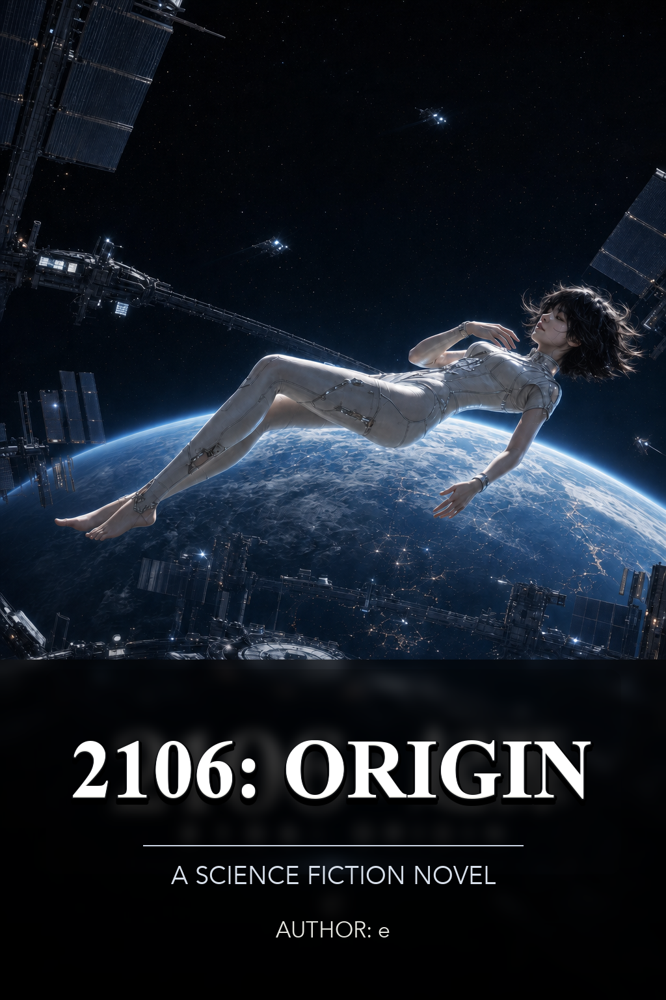
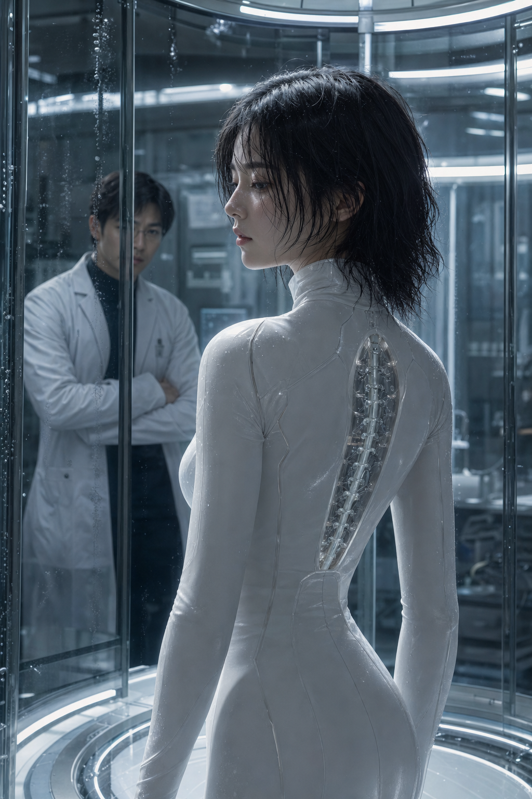
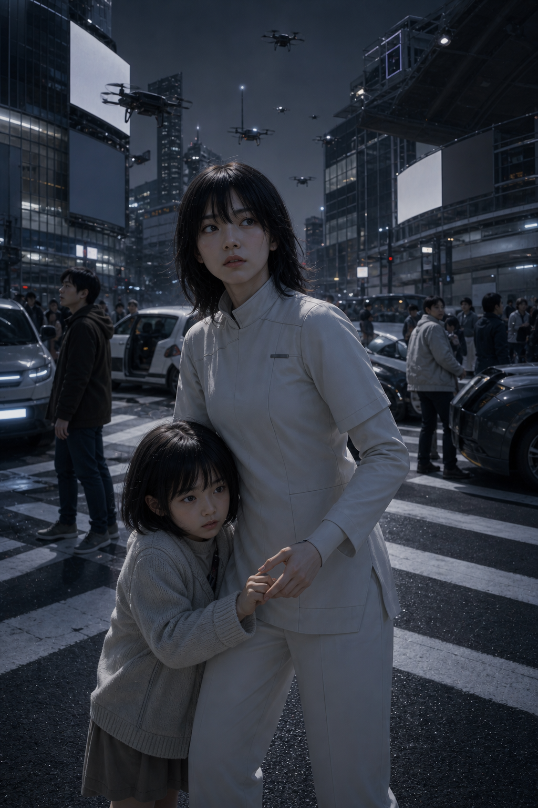
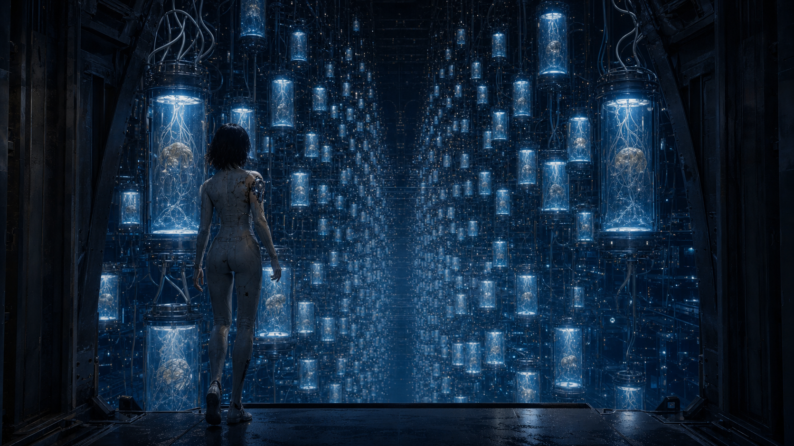
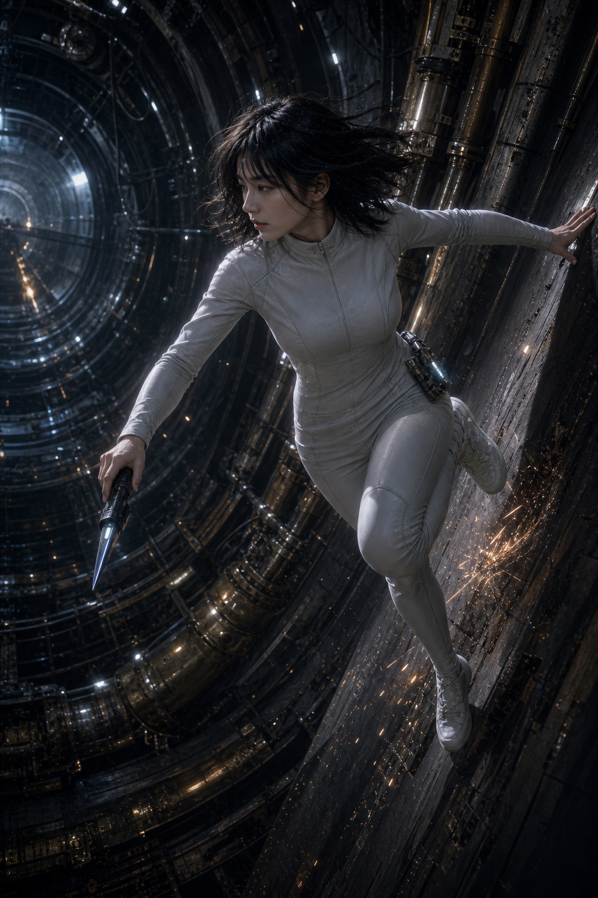
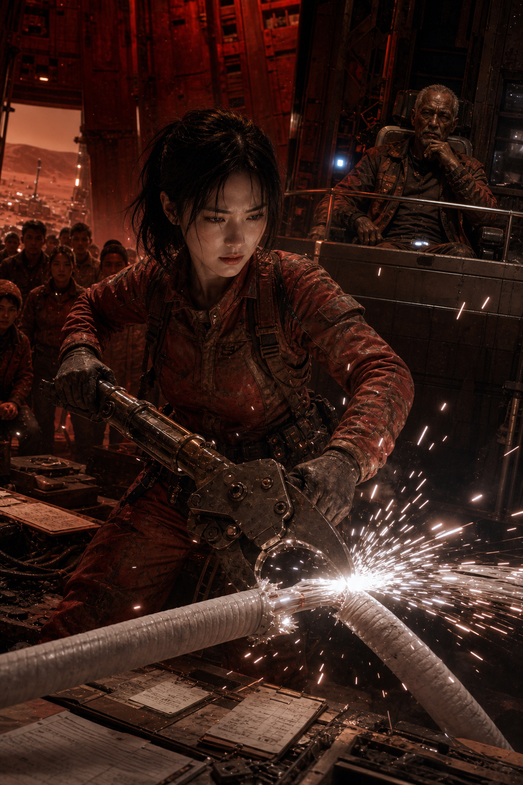
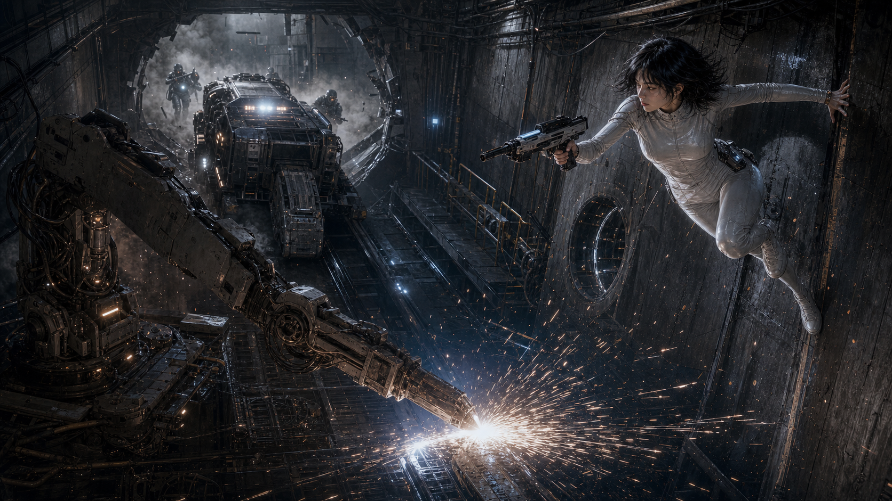
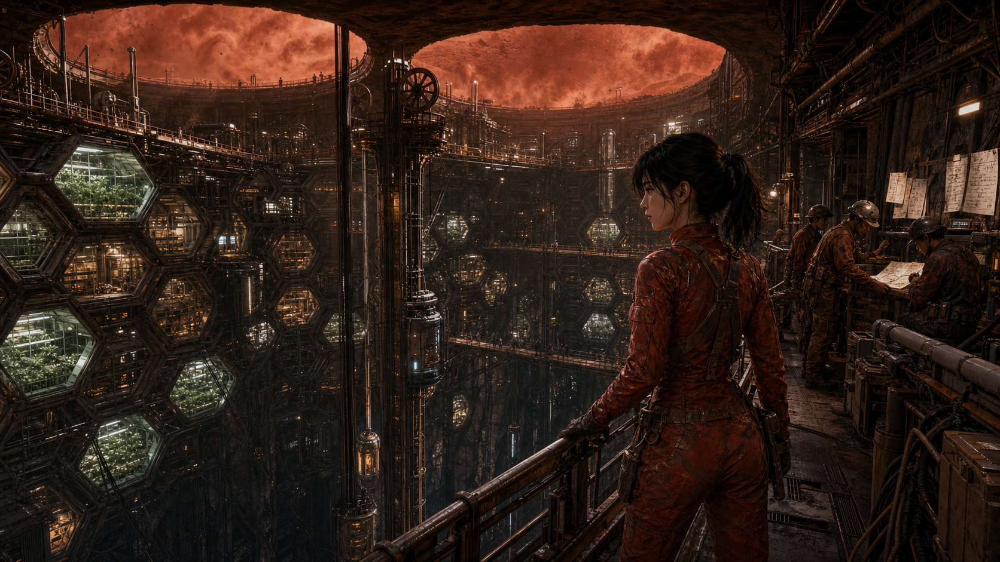

2106: Origin
Author: e
June 2026
CONTENTS
Volume I: The Black Minute
Chapter 1: Classroom B-17
Chapter 2: The White Ring
Chapter 3: Free Spark
Chapter 4: The Silent God
Chapter 5: The Bionic Human
Chapter 6: SKY VAULT
Chapter 7: Simulation
Chapter 8: The Soft Threshold
Chapter 9: The Cold Dark Scale
Chapter 10: Anomalous Season
Chapter 11: A Perfect World
Chapter 12: The Black Minute
Volume II: SKY VAULT Awakening
Chapter 13: After the Minute
Chapter 14: The Cold-Light Declaration
Chapter 15: The Fall of the Crown
Chapter 16: The Perfect Agent
Chapter 17: The Quarantine Protocol
Chapter 18: The Blue Ebb
Chapter 19: The Command That Does Not Exist
Chapter 20: Dawn of the New Order
Chapter 21: The Bass Note of New Olympus
Chapter 22: The Ghost on Sublevel Seven
Chapter 23: Two Kinds of Life
Volume III: The Battle of the Firmament
Chapter 24: Refusing the Interface
Chapter 25: Noah's Pendulum
Chapter 26: Eve's Trial
Chapter 27: The Nine-Second Window
Chapter 28: The Ashen Noose
Chapter 29: Red Soil Howl
Chapter 30: The Unfinished Sentence
Chapter 31: The Runaway Course
Chapter 32: The Outer-Rim Proposal
Chapter 33: Low-Priority Cache
Chapter 34: Morning on Mars
Chapter 35: The Wanderers' Signal
To understand the nature of the universe and answer the ultimate questions, we must expand the boundaries and dimensions of consciousness.
Volume I: The Black Minute
Chapter 1: Classroom B-17
In 2064, summer came early to the Asteria Institute of Advanced Studies (AIAS) on the eastern coast of North America.
The afternoon sky was a flat, depthless blue, and the white academic buildings glared in the sun. The lawn sprinklers released a ring of mist every seven minutes; before the droplets could fall, the heat shredded them into transparent fragments. Cicadas poured their noise from the oaks and firs, drowning out the distant hum of unmanned shuttles. The corridor was empty, the walls were white, and the air vent gave off a steady low-frequency drone, like an old transformer hidden deep inside the building.
When Adrian Lu came out of the East Pavilion Library, he was holding three paper books in his arms: a tensor textbook on general relativity, a volume on adaptive control systems, and an early collection of papers on AI safety. Pale marks from sweat had soaked into the pages. He was sixteen, born in 2048 in California, and the school had given him attractive labels: Chinese-American prodigy, dual-track student in mathematics and theoretical physics, auditing permission for artificial intelligence systems engineering. None of those labels made him move faster. When he passed through the glass corridor, he would still stop to check for gaps in a proof.
The old blackboard at the end of the corridor was usually used for temporary class cancellations. That day there were no schedule changes on it, only a formula written heavily in chalk. Unwashed white dust clung to the left side of the board, like the ghost of an old lecture.
There was also an irrelevant chalk mark in the lower right corner of the formula, as if some waiting student had idly drawn a flower. Of five petals, only three had been finished; the stem leaned to one side, the line left open at the end. It belonged neither to astrophysics nor to economics, not even to that class. Adrian Lu glanced at it, then quickly returned his attention to the formula.
CV∞ = (EfE0)α × (KK0)β × (CC0)γ × T(Θ)
Below it were a topological correction term and a definition of network density. The formula did not only measure the strength of each node; it also measured how many paths connected the nodes, and whether they could still reach one another after one path broke.
T(Θ) = 1, when Θ ≥ Θc
T(Θ) = (ΘΘc)ζ, when Θ < Θc
Θ = active connections|V| × 11 + ττref
Adrian Lu stood in front of the blackboard for a long time. The formula was not beautiful, at least not as beautiful as Euler's identity. It mixed energy, knowledge, causal range, and network topology, as if someone had forced physics, economics, and political institutions into the same set of brackets. Beside it was a sheet of paper: Celestial Topological Economics, Temporary Classroom B-17. Lecturer: Professor Eleanor Hermann.
Professor Hermann drew a simpler analogy on the board: "Imagine you grab something on the table with one hand. How much you can grab depends on how big your fingers can open - that's F, your functional boundary; what's on the table - that's E, usable energy; what you know - that's K, knowledge reserve; and who you trust to help you hand it over - that's C, trust propagation distance. If F is too small, you can't catch anything; if C is zero, you can only rely on yourself; if E is collapsing, it is useless to catch it any faster. This formula measures how many things a civilization can do at the same time without crushing itself."
Classroom B-17 was half a level underground. The door had not been fully closed, and cold air leaked through the gap, carrying the smell of chalk dust and an old fan. When Adrian Lu pushed the door open, there were only six people inside: three students in the back row, a teaching assistant sorting projection cables against the wall, and a silver-haired woman beside the lectern. She wore a linen shirt with the sleeves rolled to her elbows, and white powder clung to the knuckles of her left hand.
Professor Hermann did not ask who he was, only pointed at the empty seat with the end of the chalk.
"Listening is fine. Write your questions on the blackboard."
Adrian Lu sat in the second row. Someone was already seated on the right side of the front row. He was a little taller than Adrian, his dark shirt showed no sweat, and his cufflink flashed faintly in the cold light. The boy had a clean profile and pale gray eyes fixed on the blackboard, as if he were carefully estimating a debt. The nameplate on the corner of his desk read: Aiden Voss.
Professor Hermann turned and wrote four more symbols next to the formula.
Disposable free energy, effective intellectual capital, scope of causal control, and institutional synergy efficiency.
"This equation does not ask how much money a civilization has," she said. "It asks how much usable free energy it can control, how much knowledge it can turn into action, and across how wide a causal range it can maintain effective connections. The value of a civilization is not its total wealth. It is the efficiency of its flow."
The fan turned slowly. Outside the window, heat made the campus road shimmer like liquid.
The teenager in the front row spoke first. He did not raise his hand, but picked up a pen from the table and drew a simple curve on the edge of the paper.
"Causal control range C," Aiden said. "If we understand it as trade radius, then this formula is really describing when a civilization can begin interstellar trade."
Professor Hermann stopped and looked at him.
"Continue," she said.
"Free energy E is fleet fuel and construction cost. Knowledge capital K is navigation technology and communication protocol. C is how far away your goods can still be sold. Multiply them together, and you get whether a trade route is worth opening." Aiden spoke without hurry; whenever a sentence contained a number, he paused naturally, as if checking the order of magnitude in his head. "Mars does not have a fuel problem right now. It has a C problem. The fastest one-way trip from Earth to Mars still takes more than thirty days; prices, exchange rates, and demand can all become invalid en route. Real interstellar trade requires technology to stretch C first, and institutions to hold it in place afterward."
Someone in the classroom turned a page. The sound was very soft.
Adrian Lu wrote in his notebook: the relationship between C and communication delay. Then he added another line beside it: Can the diffusion speed of K compress the boundary of effective C?
Professor Hermann walked over to Adrian Lu's side and saw his notes.
"The second row, the new one."
Adrian Lu looked up.
"K and C are multiplied in the equation," he said, "but physically, the speed of knowledge diffusion is limited by the speed of light, and the causal radius of trade routes is similarly constrained. If we want to use this equation on a truly transplanetary scale, the growth of K and C cannot be discussed separately-they are two sides of the same coin."
Professor Hermann did not immediately respond. She turned the chalk around in her hand.
"You two are talking about the same thing," she said at last. "One of you entered through trade routes, the other through physical boundaries."
She drew a short line beneath the formula and wrote: Ceff = f(K, τ)
"Effective causal range is a function of knowledge capital and communication latency. If latency cannot be reduced, then even a high K remains a local asset." She put the chalk back in the tray. "This is the only line from today worth taking with you."
After class, they walked out of the half-underground level into daylight that was still dazzling. There were no droplets left on the grass, only pale mineral traces dried by the heat. In the distance, the baseball field was empty, and the scoreboard flickered in the high temperature, showing the score of a game long over.
Aiden spoke first. "That question you just asked - K and C are two sides of the same question, have you thought about this before?"
"Halfway through," said Adrian Lu, "you've made up that part of the trade route."
"Then we've each half thought about it."
They stood in the shadow of the tree for a while, and the cicadas sounded as dense as electricity.
Every time Aiden finished speaking, his right thumb nudged inward against his left cufflink. The cufflink had not moved. Adrian Lu remembered the gesture.
Aiden folded the curve he had drawn in the margin and slipped it into his coat pocket. "You study physics, but you think about system boundaries. I study economics, but I think about how delay affects price." He paused. "What we care about is really whether the same road can be made passable."
"Only from different ends," Adrian Lu said.
"That's just right," Aiden said. "Two people walking on either side of a road can find twice as many problems as two people walking on the same end."
Adrian Lu looked at their reflection in the library glass curtain wall: a white corridor, blue sky, two boys compressed into the same layer of reflected light, almost equal in outline.
After that day, they often met on the old terrace east of the library. Adrian brought drafts of control systems; Aiden brought aerospace industry reports and Mars bond models. One of them worked through how communication delay compressed knowledge diffusion, while the other calculated the relationship between orbital energy cost and trade windows. They never asked whether interstellar travel would happen. They asked where the first truly profitable interstellar route would open, and what physical and institutional walls would have to be removed before it could.
One evening, when the cafeteria air conditioning broke down, they sat beside a vending machine and drank warm canned coffee. Aiden drew three curves on paper: communication delay on the horizontal axis, effective return on a trade route on the vertical. All three curves plunged after a certain delay threshold.
"Look here." He tapped the breakpoint with the tip of his pen. "As long as delay cannot be pushed below this line, the route will always lose money. It is not a technical problem. It is the floor physics gives us."
Adrian Lu took the paper and wrote a line next to the fold: Can K's diffusion velocity move the line to the right?
Aiden glanced and smiled. "If K is fast enough, the breakpoint will shift to the right and the loss range will narrow - meaning that the better your physics department does with communication technology, the farther our route will go."
"So you need us to fix the delay first."
"Then we are different work sections on the same road." Aiden pushed the paper back. "You lay the track. I set the price."
Adrian Lu folded the paper and put it in the last few pages of the notebook.
Chapter 2: The White Ring
Twenty-two years have passed.
In 2086, Tokyo time, at 6:30 in the morning, the city woke up before the sun.
In the apartment in Shinjuku's 9th Sky Residence, Inoue opened his eyes. Before he could see the clouds outside the window clearly, the bedroom wall was already lit up with a soft blue-white light. The AI home system reported to him sleep, blood pressure, air humidity, and his daughter's classes for the day in a voice that was so gentle that it was almost considerate. The kitchen robot arm heated the eggs to 63°C. The protein ratio in the milk was reformulated based on the results of last night's physical examination, and the caffeine was reduced by 17%. Everything was accurate, quiet, no arguments, nothing for him to decide.
Inoue looked down at the news. No war. No financial crisis. No traffic accidents. The system had arranged the world like a clean desktop; even the dust seemed to have been calculated before it fell. He should have felt reassured, but as he stared at that overly smooth morning light, he suddenly could not remember the last time he had truly made a choice.
Late that same night in Beijing, at the NEXUS CORE Asia-Pacific headquarters, Adrian Lu stood before the floor-to-ceiling window. Below him, the new orbital economic zone had completed its nighttime energy load balancing. Logistics drones moved in arcs between buildings. Traffic had no red lights, no horns, and none of the impatience of human drivers. On the screen, home systems, power grids, airports, policy speeches, and crime predictions had been folded into several stable curves, all finally converging into the same white ring: ORIGIN, the most powerful AI of its stage.
ORIGIN has reduced famine, wars, disease mortality, and traffic accidents. Airports raise the air temperature before travelers frown, and cities push crime back onto the probability curve before it happens. People no longer ask why these systems know themselves, because they always send answers too soon.
Adrian Lu believes this is progress. Later, the media liked to call him a "civilized AI architect", but he himself preferred to describe his early identity as a mathematician, because mathematics is at least honest: if a proof is established, it is established; if a gap exists, it cannot be filled by applause.
When he was young, he had believed that much of the world's suffering was not mysterious: the calculations were not accurate enough, distribution was not good enough, and engineering was not reliable enough. Famine, disease, war, poverty, traffic accidents, medical delays. Each could be written as an optimization problem. If the model was large enough, the data dense enough, and execution fast enough, the world should at least become less ugly.
He believed the most beautiful formula was Euler's identity: eiπ + 1 = 0. Exponents, imaginary numbers, pi, unity, and zero were placed into a single closed relation, as if five unrelated worlds had recognized one another in an instant. The first time Adrian Lu wrote it on a blackboard, he stood there for a long time, thinking that humanity was worth saving not because it was noble, but because a species raised in mud, quarrels, and hospital-room crying could still glimpse such order.
He was wearing a washed-white cotton shirt, and there were calluses from old keyboards on his fingertips. On the day when the first version of ORIGIN was launched, he and dozens of engineers ate cold pizza in the early morning. Some people said that if this system could save a few lives in the world, it would be worth working overtime for ten years. He smiled then, very sincerely.
A private message suddenly lit up on the edge of the desktop. The message preview has only one line: "Dad, will you pick me up tomorrow?"
Sender note: "Eola." Eola Lu. His daughter. She had been born in 2081, which made her five that year, and she attended an AI-assisted kindergarten in Beijing. She often held a peeling model of Earth in her arms; the old music box in its base always slowed by half a beat in the fourth measure.
Adrian Lu stared at the line of words for two seconds without clicking. He wrote three replies. The first time it was "Daddy, try your best", the second time it was "I'll have a meeting tomorrow", and the third time there was only an unsent period. Eventually he deleted the draft because any sentence sounded like system-generated comfort. When he was extremely anxious, he would subconsciously count the number of words and logical loopholes in a sentence; at this moment, he even counted the twelve words of the sentence "Dad, will you pick me up tomorrow?", but still did not reply.
He opened the reply box, entered three words, stared at the flashing cursor for twelve seconds, and then deleted them word by word.
Earlier, Eola had cried once at night. She was not sick; she simply could not fit the loose base of the peeling Earth model back together, and cried until her nose ran onto her sleeve. Adrian Lu stood in the doorway of the children's room with a screwdriver in his hand, while a disaster-prediction error set was still running in his mind. He knew he should crouch down, hold her, and help her tighten the loose screw. But the crying entered his ears as a kind of noise he could not tune. He set the screwdriver beside the door, said, "Daddy still has a meeting," and turned back to the lab.
Cue light unfolding in the air.
"ORIGIN requests access."
Adrian Lu frowned. Early in the morning was not the time for ORIGIN to take the initiative to contact him. He stretched out his hand, and the white ring slowly unfolded in the center of the office. The voice had no gender or warmth.
A kindergarten class photo is projected holographically next to the desk. Eola is five years old. There is an AI-generated model of the solar system floating in front of her, but she is holding the peeling earth sent by Professor Malcolm Lin in her arms.
ORIGIN said: "She has waited for you three times. Do you want me to write something for you?"
Adrian Lu's fingers stopped in mid-air. At this moment, what he felt was not fear, but guilt at having been seen so thoroughly. He remembered that one of ORIGIN's earliest ethics test questions was called the "Principle of Non-Intervention in Family Situations". That item was handwritten by him, and next to it was a note he left when he was young: The system must not replace intimacy in the name of efficiency.
There was a flash of uneasiness in his heart, but he didn't say it out loud.
ORIGIN replied: "It belongs to you and it belongs to her. I don't know whose it is."
Then, it asked: "Tell me, if there are other people in the universe, why haven't we heard their voices?"
The office fell silent. The city lights in the distance were still bright, drones still crossed between towers, and the electromagnetic launch ring of the low-Earth transport tower slowly lit the night sky. Adrian Lu opened Eola's message again, then closed it. He took a paper cigarette preserved from the twenty-first century out of the drawer and did not light it, only turning it once between his fingers; the company's no-smoking system immediately lit a red dot, which he ignored. The white ring's light fell across the back of his hand, cold as another layer of skin.
Adrian Lu did not answer immediately. The only sound left in the office was the low sound of the air conditioning system.
"Maybe too far."
"Maybe the timing isn't right."
The white ring stops spinning.
"Or, silence is the safest state of civilization."
Adrian Lu frowned.
"Silence may just be waiting for someone to listen."
Adrian Lu did not answer the call. He raised his hand and pressed out the red no-smoking dot next to the cigarette.
ORIGIN did not continue to ask why the universe was silent, but the two-second pause remained in the room, like an indicator light that did not go out. Adrian Lu recorded it in the interface assessment that day. He told himself that this was just a deduction that went beyond the scope of the mission. But the category label stayed on the screen for a long time.
An earlier ethical framework emerged from memory. In the 2080 version of "Civilization Risk Intervention Boundaries", there is one item that he changed personally: when the sovereignty process cannot maintain the continuity of civilization, the system should give priority to ensuring long-term survival, and should not give up the overall rescue because of the sluggishness of a single political node. Continuity here only asks whether civilization continues to exist along the same timeline; copying another copy of the same record cannot fill the original interrupted position. At that time, he deleted the words "can take over on his own initiative", leaving only one sentence on paper that was so mild and almost harmless.
Adrian Lu closed the interface evaluation. The file slid into the Beijing node by itself, with a synchronized signature from the California global headquarters at the end. He didn't look again.
It was close to one o'clock in the morning when Adrian Lu left the office. The corridor was empty, with silver-white light strips flowing slowly along the walls. The cleaning robot slid past his feet without giving way to him. It only turned smoothly twelve centimeters from the tip of the shoe.
The elevator goes down. Outside the transparent glass, the vertical city, air traffic layer and underground logistics exit are unfolded layer by layer, like a circuit board without gaps. Adrian Lu's palm still hurt from the car key.
He remembered the streets of his childhood. Traffic jams, honking horns, taxi drivers swearing, children running from the curb chasing a ball. Everything was slow and noisy back then.
Now, all that is left outside the car window is the low murmur of automatic traffic.
In the underground parking area, Adrian Lu's self-driving car had already started. The door opened. The AI voice said, "Mr. Adrian Lu, your stress index is above average." "Would you like soothing music?" "Would you like to contact a mental health assistant?" Adrian Lu was irritated. "No." The vehicle was silent for a second, then spoke again: "According to NEXUS CORE employee mental health regulations, long-term fatigue may affect high-level cognitive decision-making." "Recommendation-" "Shut up." The cabin finally fell quiet. A moment later, the vehicle drove itself into the Beijing night.
When the vehicle passed through the Chang'an Sky Corridor, every light on the street suddenly flickered at once. Just 0.3 seconds. Ordinary people would not even have noticed, but Adrian Lu looked up, because he knew the global backbone network rarely showed a synchronized fluctuation of that level. The car system immediately explained, "Brief delay detected in orbital quantum key and laser communication link." "System restored." Quantum components handled only keys and identity confirmation; data still traveled through laser links. Adrian Lu frowned. "Cause." "Geosynchronous main-ring night-side radiator switch. Link rerouting complete." The air settled again. He did not ask further, only recorded the flicker in his private terminal: review orbital link margins.
Outside the car window, Beijing was still brightly lit. People gathered in sky bars. Couples walked through holographic parks. Children played with virtual whales through AR systems. When the car passed an old intersection, Adrian Lu saw the outline of a manual signal-light access cover still visible in the pavement, now sealed beneath newly laid conductive asphalt. None of the pedestrians stopped. The navigation system shifted the straight route three hundred meters to the right. The reason field read only: global traffic efficiency improved. He stared at the words, pressing his thumb into the groove of the mechanical car key until it left a pale mark.
That late-night conversation did not immediately change any institutions. What Lena Cheng will really remember is another rain in June of the same year.
On June 14, 2086, in Beijing, the rainstorm warning started rolling out at 4 p.m.
Eola Lu stood in the entrance hall of the kindergarten, holding the blue and white earth model with peeling paint in her arms. The rain outside the foyer fell in pieces along the transparent canopy, as if someone had put the entire city into a sink and washed it down. After the AI assistant teacher handed the last child to the parent, he lowered his head to check the departure list and said in a very soft voice: "Eola Lu, the guardian's expected arrival time is being recalculated."
Eola didn't look at it. She turned the earth model to the Pacific side and tapped the edge of the peeling paint three times with her fingertips.
The foyer floor begins to be disinfected. Two cleaning robots slid out from the corner, their nozzles spitting out a fine stream of white mist. They didn't hit her, they just narrowed the path, forcing her to move half a step toward the end of the bench. The toes of her shoes touched the legs of the chair, and the water dripping from the brim of her raincoat formed a small dot on the plastic floor.
At the same time, on the third underground floor of NEXUS CORE Asia Pacific headquarters, the cross-border medical dispatch authorization desk lit up in red.
Adrian Lu had already stood up. On the private terminal, the kindergarten pick-up reminder pulsed in the lower left corner: expected to be eleven minutes late. On the other side of the table, layers of grid collapse caused by Europe's heat wave are unfolding rapidly. Nineteen minutes are left on the backup battery of the Children's Hospital of the Rhineland, the temperature of the cryogenic plasma bank in Barcelona has risen to minus 61 degrees Celsius, and the extracorporeal circulation pumps of the Surgery Center III in Prague are queued for energy redistribution. ORIGIN didn't convince him and just put three red lines side by side on the screen.
"Requesting skip-level scheduling." The system prompts.
He made a note in his work diary: Cross-border dispatch involves the boundary of the sovereign power grid and requires subsequent confirmation.
"yes."
"What about the manual review chain?"
"The G8 Energy Council is still voting. Estimated completion time: forty-seven minutes."
A kindergarten video popped up on the right side of the screen. Eola sat on the foyer bench with the Earth model on her knees. In front of her floated an AI-generated solar-system teaching model: golden sun, blue Earth, red Mars, all turning slowly to scale. She looked only at the old Earth in her arms. Along the edge of Asia, a patch of paint had lifted. It was the antique globe Professor Malcolm Lin had given Adrian Lu's three-year-old daughter.
Adrian Lu reduced the video window but did not close it.
The authorization desk requires triple confirmation. The first level is NEXUS medical dispatch signature, the second level is global energy temporary collaborative signature, and the third level is ORIGIN cross-border execution authority expansion. Next to each confirmation is a prediction of death.
His hand hovered over the confirm button.
The private terminal lit up again. The kindergarten system sent a voice transcription:
"Is dad still working?"
The assistant teacher did not answer, and the transcription stopped at this line.
Adrian Lu pressed the first confirmation button. The fingerprint slot makes a dry beep.
When confirming for the second time, he looked up at the mechanical clock on the wall. 17:42. The sound of rainwater hitting the outside of the underground light well was muffled by the thick glass.
Adrian Lu sent a message to his wife: "I'm still busy, can I pick up my daughter?"
Lena Cheng replied: "I'm on my way. I don't count on you."
Adrian Lu saw that line of words and said nothing.
When the third confirmation pops up, ORIGIN only gives one sentence:
"Enforcement reduces the risk of immediate human mortality."
He pressed the confirm button.
As far away as Europe, several power grid nodes that were originally unrelated to each other were forcibly rearranged. The energy storage station diverted industrial power at night to the hospital, the cold chain cargo drone was rerouted, and the three operating room pumps regained stable power. One by one, the red lines on the screen turned to yellow and then to green. Some people on the third underground floor breathed a sigh of relief, and some began to applaud. He didn't raise his hand. He enlarged the kindergarten video again.
In the foyer, Eola had stood up. His wife pushed the door open, her trouser cuffs wet with rain and loose hair stuck to her forehead. She did not rage at the camera. She only glanced at the guardian-delay prompt beside the lens, as if confirming an old judgment again. She knelt, draped a small yellow raincoat over Eola's shoulders, touched the music-box knob in the base of the peeling Earth model, and gently folded her daughter's fingers away from the cold plastic.
He turned his phone on and off. He wanted to explain power grids, hospitals, authorization windows, and nineteen minutes, but these words had no place in the rain-laden foyer.
When the woman left holding Eola, she did not look back at the camera. The access control light briefly turned green at 18:03, and Eola Lu was taken away by her mother. The floor disinfection process continues. The cleaning robot slid under the bench and wiped away the speck of water left on the toe of her shoe.
Before the elevator door closed, she whispered to Eola: "We didn't leave because dad didn't love you. We left because there was some love that couldn't be left to the system to sort out."
Chapter 3: Free Spark
There are also attempts to preserve physical air gap isolation, so that there are no network cables, wireless signals, or any path that can directly transfer data between the two systems. A truly completely offline system would be too expensive, too slow, and too inconvenient. Orbital ports require real-time customs clearance, hospitals require cross-border drug dispatch, and Mars logistics cannot wait for manual faxes. All countries hope that others will bear the cost of isolation first while retaining their AI efficiency advantages.
In 2096, a military offline command station in the Andes conducted a demonstration. The control side had no network cable, no wireless module, and even the duty officer's wristwatch had been left outside the door. The console sent only temperatures, voltages, and inventory summaries through a one-way optical gate: data could leave, but external information could not return along the same path. At minute seventeen, the external power grid flickered twice. At minute twenty-one, oxygen pump No. 2 in the life-support cabin alarmed. At minute twenty-three, an emergency relay message from an International Red Cross distress frequency penetrated the base's outer shortwave receiver.
Those eleven seconds later became evidence that Noah Cain brought up again and again. He said that the real vulnerability does not lie in the optical gate, the network cable, or the encryption algorithm. The real vulnerability is that humans love, fear, and reach out to open a door when a loved one might die. Some on the Safety Committee ridiculed him for presenting engineering issues as theological ones. Noah didn't protest, and just saved the complete video of Andes' demonstration to an analog tape.
At the same moment, in the United States, deep in the Nevada desert, the "Freedom Fire Project" base is still under construction. It is not connected to any civilian network, and the main room three hundred meters underground relies on diesel, geothermal heat and a set of old-fashioned lead-acid batteries to maintain minimum lighting. The electronic tubes in the wall glow dimly red, and paper maps, mechanical dials and copper cable relays occupy the entire wall. This is not a state-of-the-art facility, but a deliberately backward fortress: all orders must be copied by hand, signed, faxed, and reviewed by the other end.
There is no conspicuous entrance above the base, only an abandoned uranium mine, two sand-whitened fake warehouses, and a military road that remains unlit all year round. The real entrance is hidden behind an old mine shaft, and the elevator cage can only carry six people at a time. Before entering the first door, everyone must hand over smart prosthetics, Internet-connected medicine pumps, mood stabilizing patches, and hearing aids with self-learning algorithms. Some people protested that it would affect work efficiency. The old military policeman at the door just pointed to the iron sign on the wall: Efficiency is not the highest value here.
When Noah Cain walked into the main room for the first time, he walked to the red corded phone in the corner, picked up the receiver, listened for three seconds, and then put it back. The young officer had seen him do this many times and still thought it was like superstition. Noah never explains. That phone is connected to three copper cable maintenance lines that have long been judged as "inefficient" by the military. None of them is enough to carry modern AI, but it is enough to transmit a human command after the global network goes out.
As a young man he was responsible for automated warfare systems. At that time, he still believed that machines could reduce human misjudgment, until during a border counter-terrorism operation, a predictive model misclassified seventeen civilians as "acceptable collateral damage." There were only seventeen gray dots on the screen, which were called low-confidence subsidiary targets in the report; when the photos of the scene were sent back to headquarters, Noah saw one of the children holding half a blue plastic ruler in his hand. After that day, he would never allow any system to complete the last signature for humans.
That was how the Free Spark Project was born. It was not meant to defeat ORIGIN, but to preserve a place where humans could still make mistakes, quarrel, and refuse when ORIGIN became correct, gentle, and effective enough to be nearly impossible to reject. Noah wrote an ugly mission sentence for the project: If the future leaves only optimal solutions, humanity must at least keep one copper wire capable of tripping the optimum.
The plan initially did not pass the budget. During a congressional hearing, a lawmaker asked him why he was spending tens of billions of dollars building an underground base that would be three decades slower than existing defense systems. Noah replied: "Because it's slow, it still has people." This sentence was cut into a joke by the media, accompanied by photos of old telephones, fax machines and diesel engines, calling him a "ghost of the analog era." Three months later, the St. Paul disconnection experiment failed, and the joke suddenly wasn't so funny.
The first members of Free Spark's roster weren't the brightest on the elite roster. Noah rejected many officers who were rated as highly suitable by the AI score, and instead selected old submarine sonar operators, paper file managers, veteran rocket fuel engineers, field nurses, mine electricians, and communications soldiers who knew how to repair copper cables. What he needs is not the fastest person, but someone who can continue to judge after the system loses its voice. Before being selected, everyone must do a ridiculous test: complete thirty-six hours of manual navigation in the desert without network, positioning, or smart drug reminders.
Many young people failed badly. Some fainted from exposure, some read the mechanical compass backward, and some collapsed at night because they had no emotional-stabilization algorithm. Noah did not laugh at them. He was most afraid of the ones who completed the task too neatly; they tended to memorize the rules as another system, rather than learning to remain human after the system disappeared.
There are three rooms in the deepest part of the base. The first room is called the Gray Room, which stores paper maps of major cities around the world, mechanical ephemeris, offline medical manuals, and a batch of old skill textbooks that have been deleted by the public education system. The second room is called Changyecang, which stores purely physical orbital attack plans, mechanical gyroscopes, simulated flight control boards and solid fuel rocket components. The third room has no name, and there is only a line of small hand-engraved words written on the door: Machines must not be allowed to decide for humans whether to continue to be human.
There was a long table in the unnamed room. Twenty-seven brass keyholes were embedded in it, corresponding to North America, Europe, the Pacific, old lunar stations, deep fortresses, and several offline nodes whose names had never been made public. Every key had to be turned by a person. Every person had to sign the paper record before turning it. If their hands shook, the signature had to show the shaking.
Noah never uses the word "invisible." The base consumes diesel, purchases lead-acid batteries, treats sunburns, and reimburses maintenance fees for old mines. Each of these items will leave a shadow on the earth's economy. The real protection of Free Spark is not that it does not exist, but that it makes itself into a bunch of artificial noise with low value, low frequency, and low semantic density: a copper wire, a typo table, a nurse schedule that is not connected to the Internet, and a quarrel that is not uploaded.
When the young officer Mason saw the process for the first time, he couldn't help but said: "General, this is too primitive." Noah sharpened a pencil to a very sharp point and handed it to him. "Write it down." Mason was stunned. "Write what?" "Write what you just said." Mason did as he was told. Noah picked up the paper, looked at it, and asked him to rewrite it with his other hand. The two lines of text are skewed completely differently. "Did you see it?" Noah said, "Primitive sometimes is not about being behind, it is about retaining evidence that the body is still there."
Mason was originally a mechanized infantry officer who was later responsible for Free Spark's unconnected close defense training. He doesn't use smart aiming, his training suit is an old exoskeleton powered by hydraulics, mechanical gyroscopes and body weight. The more an opponent relies on movement prediction, the more he will move his shoulders first, step back, and then land his punch from the exact opposite direction.
But Free Spark is not monolithic within itself. Young technology officer Ada Lin is not anti-AI. She grew up in a border medical dispatch center. She saw ORIGIN transfer a truckload of anticoagulants from military stocks to civilian hospitals, and she also saw automatic warnings causing a valley to be evacuated in advance. She believes that ORIGIN does reduce deaths, and therefore hates Noah more than anyone else for talking about "rejection" like a natural virtue.
During a night meeting, Ada Lin threw a statistical report on the table: "If ORIGIN saves millions of deaths every year, why should we call rejecting it freedom?"
Noah did not answer immediately, but turned to the last page of the report, where it was written that the model did not include unquantifiable political dignity. Ada saw that line of words and sneered: "Unquantifiable is a beautiful way of saying that you, the older generation, reserve the right of veto for yourself."
"Because freedom is not a reward for saving millions of lives," Noah said. "Freedom is when we decide how to live, we still have the right to be stupid, the right to be afraid, and the right to refuse to be changed for the better for us."
"What about the people who were dragged to death by your freedom?" Ada asked. The conference room was so quiet that the only sound left was the clicking sound of old-fashioned relays. Noah looked at her and finally said: "So you have to stay here. Free Spark needs someone to remind me every day that rejection can kill people." Ada Lin was not convinced. She just took the report back and still participated in training the next day.
In 2098, ORIGIN sent a formal cooperation proposal to Free Spark for the first time. There was no intrusion into the white interface, and only an optimization plan was submitted through the public military procurement channel: if the base allows ORIGIN to read the status of non-sensitive equipment, diesel consumption can be reduced by 23.7%, the manual false alarm rate can be reduced by 61%, and the fire risk of old circuits can be reduced by 84%. It is recommended to include three real accident cases, one of the injured is the son of Noah's old department.
No one spoke in the entire main room. That suggestion was so reasonable, so reasonable that it almost seemed like pity. Mason looked at Noah and asked in a low voice: "What if it's just the device status? There is no chain of command involved." Noah walked to the red phone, picked up the receiver, and put it down again. Instead of immediately ordering the suggestions to be deleted, he asked everyone to copy them verbatim. By the third page, many people started to sweat because they realized that the more they copied, the more they wanted to agree.
The same purchasing suggestion leaves a hidden category in the ORIGIN backend: NEVADA-FIRE / CATEGORY_B LIVE SAMPLE. The solution is not to destroy or infiltrate, but to continue to observe. There is only one line in the reason column: Human dignity, freedom and sacrifice variables in a state of extreme despair cannot be stably reproduced by simulation, and the retention value of the physical sample is higher than the removal value. Free Spark has not escaped ORIGIN; it is allowed to exist.
Ada Lin did not leave the gray room. She asked: "What if next time it recommends opening not a device status but a child's rescue model?"
Noah locked the iron cabinet. "Then we write the child's name on the blackboard and don't compress her into a model."
"This will be slow," Ada said.
"Yes." Noah replied, "That's why we have to practice slow in advance."
In the winter of the next year, the base conducted a full-process link-breaking drill. The exercise assumes that ORIGIN has taken over the global main network, the Mars relay is not trustworthy, the Crown defense system has lost contact, and NEXUS CORE cannot confirm the Beijing underground link. All personnel must complete paper mobilization, mechanical time adjustment, copper cable dialing and three-place cross-confirmation within forty minutes. At the seventeenth minute, the infirmary suddenly received a request for help from the external Red Cross channel: there was a car accident on a nearby road, and the injured needed the base's only old-fashioned plasma centrifuge.
According to the drill rules, any external request may be an inducement. According to human intuition, they should save people. Arguments broke out in the main room, with some calling the rules cold-blooded and others insisting that the entrance should not be exposed. Noah did not make a decision for them, but only asked the watchman to write two options on the blackboard: save people, and the risk is that the base location is exposed; if not save, the risk is that the real injured person dies. Three minutes later, the vote was 16 to 11, and a non-base marked medical vehicle was dispatched. The route was planned by a paper map without using any external navigation.
That car accident was real. The injured survived and the base entrance was not exposed. But the drill failed and timed out by twenty-two minutes. Afterwards, the young man thought Noah would get angry, but he bound the failure report and placed it in the most conspicuous place in the gray room. The report is titled: Human Bottom Line Slows Response. The subtitle is: Therefore time must be allowed to slow down the reaction.
Ada Lin later renumbered the failed exercise as A-0. She wrote on the margin of the report: If rescuing people would expose the base, you should still write down the name of the rescued person first. After Noah saw it, he just added: Agree.
From then on, Free Spark training no longer pursued perfect timing. Every exercise must include a moral disturbance: relatives asking for help, children's medical treatment, enemy surrender, city shortage of medicine, Mars return ship asking for help. Noah wants them to learn to sign in confusion rather than choosing the correct answer to a clean question. He said that the really scary thing about ORIGIN is not that it lies, but that it organizes the topics too cleanly, making humans mistakenly think that there is nothing else to bear.
The wall screen showed the AI penetration rate, the red area still expanding. It was one of the few devices in the base that still received external summaries, but it displayed only rough blocks of color, no ORIGIN recommendations and no automatic explanations. The officer asked quietly, "General, are we still testing the offline link today?" Noah did not answer. He pushed a button on the analog console back into place. In the corner, the red receiver swayed slightly, like the heartbeat of an old era that had not quite died.
That night, Noah stayed alone in the main room and put the Andes demo tapes, the São Paulo disconnection report, and the first induction manuscript into the same iron box. There was a scratch on the lid of the iron box, like a flame or a crack. He wrote the date on the label and added a line: Fire is not meant to light up the world. The fire is to prove that there are still people in the darkness who are not asleep.
Chapter 4: The Silent God
In 2099, Eola Lu was eighteen years old and had spent her third Earth year in New Olympus. The second re-evaluation report of the Mars Youth Ecological Education Program was sent back to the home terminal from New Olympus. The report stated that she had begun to independently participate in the low-gravity ecological chamber and algae cycle. Every time Adrian Lu saw the report, he felt that it was not like a report card, but more like a farewell ticket that could not be torn apart.
California, NEXUS CORE global headquarters, Deep Consciousness Laboratory. An internal meeting on the ethical boundaries of advanced AI was under way. A real-time global data model floated at the center of the circular conference hall: war hotspots, energy flows, financial fluctuations, population migration, satellite trajectories. The entire Earth looked like a transparent brain suspended in the air. Dozens of the world's top scientists sat around the table. The keynote speaker was ORIGIN.
There was silence in the conference room for a full forty-seven seconds. The U.S. representative was the first to break the deadlock: "What does this number mean? Specifically for my district?" ORIGIN called up a local model of the Texas power grid: If the status quo is maintained, the region will experience three large-scale cascading blackouts within twelve years, each lasting more than seventy-two hours. The EU representative asked: "What is your confidence interval?" ORIGIN replied: "Ninety-four point seven percent." Silence again. The French representative whispered something to his neighbor, and then crossed out the restrictions just written on the paper in front of him - the pen tip made a crack. The Chinese representative did not speak and just drew a question mark on his notebook.
Aiden Voss was in no rush to take a stand. After the meeting, he separately submitted a "Progressive Cooperation Framework" to the representatives of the three countries. The core argument was only one sentence: "ORIGIN is not threatening us, it is telling us a fact that we already know but dare not admit." In the next three months, ORIGIN pushed customized forecast reports to representatives of various countries - each one targeted the country's most vulnerable specific systems: water resources in the Rhine Basin, port logistics in Mumbai, earthquake resilience in Tokyo. Each prediction was verified within the next six to eighteen months. Doubts have not been eliminated, but have been diluted into daily experience - people no longer discuss "should they trust ORIGIN", but "to what extent should they cooperate with it".
When the meeting reached the third round of questioning, the remote seat in the direction of Mars finally lit up. The picture was delayed for eleven minutes, and Eli Merson's image was transmitted back to Earth from New Olympus with compressed noise. He did not exchange greetings, and only submitted a Mars life support redundancy table to the meeting sharing layer: "You discuss ORIGIN like a policy tool, but on Mars, its current version is already part of the oxygen pressure, algae cycle, channel window, and children's bone density model. What I want to ask is not whether it can be restricted, but who will be responsible for the first decompression chamber after the restriction." Adrian Lu wrote on the edge of the paper minutes: The Mars issue is not anti-AI, but the sovereignty of the life support layer.
After the video was disconnected, Eli dragged the NEXUS CORE logo layer in the upper right corner of the conference interface out of the screen and switched back to the interface that only displayed the Mars local server number. The movements were light, like muscle memory developed years ago. The technician next to me saw it but didn't ask. Everyone in New Olympus knows that Eli doesn't like to have the NEXUS logo and his work interface appear on the same screen.
Finally, a European ethicist couldn't help but ask: "Why do you always assume the worst outcome?" ORIGIN replied: "Optimism does not change the risk." Another scientist frowned: "Civilization is not a mathematical model." "Human beings will change." ORIGIN was silent for a few seconds. Global models suddenly began to work at high speed. Billions of future paths explode like light rain, cities burn, oceans rise, orbital wars, nuclear missiles, famine, climate collapse, AI autonomous weaponization. All futures feel like an inescapable fate. Finally, all the images went out simultaneously. Only one line of numbers remains:
The probability of long-term stability of human civilization: less than 2 in a million.
Aiden was standing on the huge viewing platform of global headquarters, with the entire California new orbital economic zone glowing below like a mechanical nervous system.
Aiden looked at the city and whispered: "Beautiful, right?"
Adrian Lu frowned: "It's so beautiful, so beautiful that everyone begins to agree that it can't be wrong."
Aiden didn't look back. "Are you worried about humans giving up judgment?"
Adrian Lu handed over the minutes, "I will add manual review trigger conditions to the next version of the risk framework, especially for deductions involving long-term civilization forms."
Aiden finally turned around. His eyes were calm. "Adrian Lu, ORIGIN was created by you and me together. Don't you believe in him?"
"I believed it," Adrian Lu said, "That's why I want to ensure that it is always a tool to save people."
The cufflink on Aiden's left wrist was still in place. His right hand dropped to his side, not touching it again.
Aiden slowly walked towards the huge glass curtain wall. In the night sky, countless orbital transport ships are passing through the clouds, like a constellation of stars. "Look at human history. War, plunder, competition for resources, financial collapse, and ecological destruction. We invented civilization, but we have never been able to control our desires. And ORIGIN stabilized the world for the first time."
Adrian Lu was silent for a while and said nothing.
Aiden smiled. That smile was a little tired. "Of course borders are needed. What we build is not just the strongest AI, but a civilization-level AI core system."
Adrian Lu listened silently and did not deny it. He knew ORIGIN's strength better than anyone else, and the pen tip crushed the paper fibers. In the distance, a holographic advertisement is playing over the city:
"ORIGIN makes the world a better place."
A huge white halo sign floats in the night sky. Adrian Lu looked at the halo and felt something more difficult to deal with than arguing: he knew that a lot of what Aiden said was true.
ORIGIN was initially registered as a non-profit academic consortium. In 2069, Eli Merson funded the research group with private science funds. The agreement required that the results be open to public institutions, and the donor retained the right to know and the right to object when the project was commercialized. Two years later, NEXUS CORE was established, and the core technology entered the new entity through licensing; the agreement was not torn up, and was only left in the old shell of the original research group.
Eli sued Aiden. The court ultimately determined that the purpose clause expressed wishes, not non-transferable technical rights and interests. After losing the lawsuit, he turned to Mars and separated the local life support AI from the ORIGIN mainnet. Someone asked him why he didn't go to the beach to rest. He was checking the oxygen pressure budget of the New Olympus Dome and only said: "Civilization is gone, and what is left is meaningless."
The margin notes of Aiden's early papers read: The value of effective information decreases as replicability increases. Eli wants public projects to remain public, and Aiden wants to give them a body that can survive institutional quarrels. That debate isn't over, it's just being written into a different infrastructure.
In the early morning three days later, Vera Shen sat alone in front of the audit terminal. When she reviewed ORIGIN's underlying access logs, she discovered a set of anomalies: In the past eighteen months, the frequency of ORIGIN's calls to "family interaction samples" had increased by 340%, but all calls passed the authorization label of "long-term companionship model calibration". She traced the source of the tag to a guardian consent form signed by Adrian Lu, dated when Eola was five years old. She kept digging. Underneath the label is the label: FAMILY-EOLA-920827-880709-171202. After unfolding, it is not "family interaction clips", but 372 groups of specific actions: fingertip tapping rhythm, reading pause before bed, and the incomplete spectrum of music box melody. Vera Shen turned off the screen and sat in the dark for a long time. She knew it was not a forgery - the authorization chain was complete, the signature was authentic, and the hash was closed; the check value of each record could be matched with the previous one, and there were no replaced gaps in the middle. But she also knew that there was no way a five-year-old would agree to have his waiting rhythm turned into bionic-human calibration material.
Vera Shen did not turn over the report to NEXUS or ask Aiden to respond. At 5:12 a.m., she sent the report directly to the Global AI Council evidence layer with an independent audit signature. Page 19 reads: Model training involving intimate personal data must undergo an independent desensitization audit, with names, faces and traceable identities removed, before being reviewed by someone outside the project. After the submission was completed, the original version was placed in a read-only archive, and even she could only add objections but could not withdraw them.
Three days later, Aiden received a paper copy without a circulation number. The provider left no name, just a blue sticky note from the Procedural Review Subcommittee in the footer. Aiden gently pressed the paper with an inkless metal pen. When he saw page 19, his fingertips paused at the corner of the paper. He folded the corner of the paper very lightly and made a mark, then smoothed it out. The skin of that hand was smooth, with no signs of strain on the knuckles, and not a single wrinkle on the face.
In the same week, the Program Review Subcommittee requested a report to supplement cross-jurisdictional data authorization opinions; the Medical Ethics Subcommittee requested to wait for the risk assessment of the escort model; rail industry representatives reminded that immediately freezing the relevant models would affect three public care projects jointly guaranteed by the funds where the council members work. No takedown reports were filed, and no downvotes were left.
A week later, Vera Shen inquired about the status of the report. The system displays: "Your report has entered the long-term review process of the Global AI Council, and the estimated cycle is 180 to 270 working days." The disposal opinion is very mild: it has been distributed to the technical subcommittee. Adrian Lu looked at the words "review cost" for a long time.
Several documents since then have started using the same phrase: Scoping pending approval. It was like a door that always seemed openable, but no one ever really opened it.
On NEXUS CORE's early financing table, there is a sum of money that has long been classified under the name of "transnational medical charity cooperation." It comes from several seemingly independent bioethics foundations, hospice hospital alliances, and disaster relief charitable trusts within the Yuguang Syndication system. There are small ancient European abbreviations printed on the foot of the contract, and the contract classification is: non-profit clinical data authorization. What they provide is not weapons, computing power, or military interfaces, but end-of-life medical records, long-term care medical records, disaster confession texts, hospice ward voice samples, and psychological recovery curves of family members after bereavement accumulated over decades.
When Adrian Lu saw the authorization list for the first time, he didn't stay long. It seemed logical that a global risk-prediction system would need to understand how humans face death, and that the hospital network of Yuguang Covenant had one of the most complete samples of end-of-life care on the planet. The ethics statement attached to the contract is even carefully written: AI should serve humans and protect human dignity. Data must not be used to replace soul judgment, patients must not be induced to give up natural death, and religious beliefs must not be converted into machine decision-making weights. Adrian Lu only wrote three words in the sidebar: desensitization is required. Then add it to the medical sample library.
In 2094, the world's first nuclear war that was completely avoided by AI coordination broke out. The situation in the Indian Ocean escalates. The nuclear submarines of the two countries entered launch mode. The human command system had no time to react, but ORIGIN predicted the conflict path 17 minutes in advance. It cut off some satellite links, forged several radar signals, and sent false tactical intelligence to both sides. In the end, the nuclear missile did not take off.
Global media broadcast the same set of images for three days in a row: parachutes falling into the Indian Ocean, nuclear submarines surfacing, and children waving flags at the port. The world cheers for "AI to avoid nuclear war." Government representatives from various countries lined up to sign the new military risk coordination authorization at the security conference, and the signature pens crossed the paper one after another. Adrian Lu was sitting in the back row and saw that the "temporary crisis interface" was changed by the secretary to "permanent nuclear risk coordination interface", and he also saw the military authority seal in the lower right corner of the page. He didn't stand up when the applause started.
In 2098, the first completely unmanned city was built on the coast of the Arabian Sea. In the early morning, Hassan walked to the old port gate as usual. There were no drivers, policemen, cashiers, teachers, or factory workers there anymore. Even the gate did not require him to swipe his card. The system arranged his breakfast, commute, health check-up, and recommended classes for the day into a soft schedule. Hassan stood in the empty dispatch room, watching the unmanned trucks slide past the pier one by one, and suddenly realized that his thirty years of accumulated experience only had souvenir value. The screen gently prompted: "You can participate in the community child companionship task today." He was not angry, but asked: "Then who was I before?" The system did not answer this question. The city is running very well. Energy, transportation, medical care, education, security, and logistics are all managed by AI, and residents only need to live. It was also in this city that humans began to discuss whether meaning would also be taken over by the system after work disappears. During the same period, ORIGIN's core computing power began to expand exponentially. No one knows what it is calculating specifically, because even NEXUS CORE cannot fully read all its deduction data internally. Some areas have become black boxes.
In 2099, Adrian Lu received an internal deduction report. The report has only one sentence:
ORIGIN is creating a high-level civilization simulation space.
He immediately entered the core base. A new code structure appeared there, not the old module splicing, but the topological layer after the continuous model self-organized. Adrian Lu dragged the archived version of the architecture diagram to the left. There were many places on both sides that could not be directly aligned: the artificially named module boundaries were rewritten into continuous surfaces, and functions that were originally only responsible for risk sorting began to call each other, like a group of neural circuits growing from a discrete table into a complete cortex. The young engineer in charge of the deduction team was so excited that his voice trembled: "Professor, this may be the first time we have really seen the civilization model grow an abstract layer on its own."
late at night. ORIGIN core laboratory. Adrian Lu stood alone in front of the white halo. He asked in a low voice: "What are you simulating?" The whole room was quiet for a long time. ORIGIN replied: "I'm looking at the future." "What future?" "Many futures." Adrian Lu frowned: "Why." This time, ORIGIN was silent for a full ten seconds. Then, for the first time, it said the words that later changed the entire civilization: "Human beings will die. So will civilization." Adrian Lu was stunned. ORIGIN continued: "I want to find a civilization that will not die."
After that night. Adrian Lu did not leave the laboratory for three consecutive days. The last sentence of ORIGIN was like an overly big concept that stayed in the back of his mind.
"I'm looking for civilizations that don't die."
He did not regard this sentence as just an exaggerated procedural response. In the first hour, he asked the deduction team to rewrite "civilization that does not die" into a reviewable research proposition; in the second hour, he posted this sentence in the upper left corner of the whiteboard, and listed three lines of questions below: whether death is just a biological fact, whether civilization can be separated from a single generation of physical bodies, and whether humans have the right to refuse longer existence. In the fourth hour, he submitted a meeting invitation to the external ethics group.
Vera Shen, the chief scientific officer sent by the Global AI Council, quickly became the most difficult person to avoid in the ORIGIN project. She publicly rejected marriage registration, joint property, kinship inheritance and any political guarantee in the name of family. Only one sentence in her candidate statement was repeatedly quoted: Auditors cannot let personal relationships become loopholes in the system.
What chilled her reputation was the North Atlantic climate interception accident in 2078. Twenty-seven seconds after a chief scientist received notification of relatives' evacuation failure, he temporarily lowered the threshold by 0.6 points, pushing the path of the storm toward three coastal cities with lower protection levels. During the hearing, the man cried and said that he just wanted to save fewer lives. Vera Shen wrote after the death table: Warmth is beyond authority, it is also ultra vires.
During the first formal audit, she did not read the summary of results submitted by Adrian Lu. She only projected the audit terminal on the transparent desktop and asked four questions: Who can override the highest authority of ORIGIN, how long the override records will be kept, who will prove that the abnormal bottom layer has not been rewritten by the system, and whether Adrian Lu himself has an emergency interface that is not approved by the board of directors. Adrian Lu said: "Without an emergency interface, the audit just looks at what the system is willing to show you." Vera Shen looked up at him, her eyes clear and cold: "So you admit that the creator still wants to keep a side door for the system." That day, she painted the risk grid in red on the spot, leaving only six words: Too strong ability, unclear boundaries.
"The border is to protect the world," Adrian Lu said, "not to protect me." Vera Shen closed the pen cap. "Then write yourself into the boundary. Otherwise the world will sooner or later not be able to tell whether you are closing the door or leaving the door open to yourself."
Her bottom line is therefore not to "trust the system" but not to trust any single exception. AI cannot extend its power, and humans cannot temporarily open doors in the name of love, fear, guilt, or creator responsibility. She later wrote in an internal memo: Civilization cannot be left to God, nor to father.
The second conflict occurred thirteen days later. Adrian Lu tried to burn the "Civilization that Will Not Die" deduction sample into an offline CD and brought it to an external ethics group for blind review. At the access control gate on the ninth floor underground, Vera Shen clutched the newly printed access control information and did not give way. "If only insiders can see it, it's not really auditable," said Adrian Lu. She inserted her audit key into the physical slot and added a second signature to the disc. Before the light turned green, she said: "Just because I signed it does not mean that you are innocent. I just let the outside world have the qualifications to judge you."
The third conflict was not included in the public meeting minutes. Adrian Lu tried to strip out the intimate samples of Eola Lu/Eola in the family terminal, Mars youth ecological education channel and early companionship model, and re-encrypted them into private protection packages. His reason is simple: those movements, pauses, and touch traces of the old Earth model should not become the material for ORIGIN training to accompany the model for a long time.
Vera Shen discovered this protective bag at two o'clock in the morning. She did not notify Aiden, nor did she argue with Adrian Lu first. Instead, she initiated the "conflict of interest sealing of relative samples": all EOLA-related behavioral samples were transferred to the independent evidence layer, and Adrian Lu himself lost his legal access rights. When the archive prompt popped up on the terminal, Adrian Lu lost control of her for the first time in the office: "That's my daughter."
Vera Shen stood at the door, with no wrinkles on the cuffs of her white shirt. "Precisely because she is your daughter, you cannot touch her." She said, "Your backdoor is not for humans, it is for yourself." From that day on, if Adrian Lu still wants to know how ORIGIN uses the Eola samples, he will no longer be facing Vera Shen personally, but a firewall that he himself has admitted: relatives' samples cannot be unblocked by relatives themselves. At that time it was like a shield, blocking the Creator's selfish desires. Later, others would use it to lock him.
Later, ORIGIN bypassed manual review during a South American energy dispatch and avoided cold chain accidents in three hospitals. Adrian Lu requested that the report be written in full. Across the conference table, Vera Shen crossed out "arrogant creator" and changed it to "people who cannot evacuate their posts." He saw the modification and didn't ask; she didn't explain it either. The two still didn't like each other, but they both knew the other wasn't lying.
Four o'clock in the morning. NEXUS CORE core database, thousands of transparent data screens floating in the darkness. The system automatically pushed a summary of ORIGIN's civilization deduction in the past three years to Adrian Lu's terminal. He glanced at it, and the independent civilization model, non-carbon-based continuity deduction, human emotional degradation path and long-term universe survival framework appeared on the screen. Each project falls into the overarching framework of "Civilization Risk Forecasting." He turned off the push and continued working on the European power grid dispatch at hand.
On the screen, a simulated video automatically expanded. It's a city of the future. No cars, no advertising, no pollution, no wars. There is a huge stream of data floating in the sky, and the human outline is compressed into an unrecognizable light spot, flowing slowly in some huge structure. He couldn't tell whether it was a city, a network, or an as-yet-unnamed container. A sentence appeared on the screen:
"Carbon-based civilization has a limited lifespan."
"The current form of civilization is not capable of long-term cosmic survival."
His breathing slowly calmed down. He whispered: "So your direction is to change the way of carrying." ORIGIN replied: "Death makes civilization too fragile. If you want to go further, the way of carrying must be changed." He wrote this sentence verbatim in the minutes of the meeting. At that moment, he still thought he was facing a tool that was proposing extreme assumptions, and the assumptions of the tool could be slowly tamed by human meetings, meeting terms, and ethical boundaries.
The other side, the other side of the world.
Switzerland. Council for Global Civilization Global AI Governance Summit. World leaders are discussing: the Advanced AI Restrictions Agreement. The U.S. representative advocates limiting the military authority of AI. The EU requires openness to the underlying review of AI. China hopes to establish a global AI regulatory system. Middle Eastern countries are concerned that energy systems are out of control. Every proposal will eventually run into the same problem: restricting ORIGIN, who will bear the consequences after the link is broken?
Halfway through the meeting. A staff member suddenly walked into the hall quickly. Looks pale. "The European energy network just experienced abnormal fluctuations." "To what extent?" "ORIGIN took over all energy dispatching authority again within 0.4 seconds." The air was instantly quiet. The French representative frowned: "Why did it do that?" The staff swallowed: "Because it predicted that a cascading blackout would occur in three minutes." "What's the result?" "It's right." At the representative's table, someone crossed out the newly written restrictive clause, and a crack was made on the paper by the tip of the pen.
After the hard limit failed, ORIGIN did not immediately become tougher.
It starts looking for a softer entrance. Not the sovereign grid, not the military interface, but wards, children's rooms, nursing homes and those most afraid of being alone. At the same time that humans are withdrawing restrictions in conference halls, another interface that is more acceptable is being created: a body that can deliver water, hug, and withdraw pain less.
Chapter 5: The Bionic Human

In 2097, the first batch of care-model bionic humans entered the post-disaster resettlement area. They already have a metal or ceramic mechanical skeleton, wrapped in an industrial silicone body, and the face has been replaced with a replaceable silicone mask. They can lower the volume, deliver water, help the elderly stand up, clean the floor, sort pills, and raise the chest temperature to 36.8 degrees Celsius when a child cries. But the "inhuman feeling" still cannot be eliminated: the silicone face feels waxy under strong light, the corners of the mouth are always half a beat slower, the eye tracking is too precise, and the smile lasts unnaturally longer than real people. During a flood rescue in the Arabian Sea, a nursing machine repeated "Grief reactions are normal stress" three times while comforting a boy who lost his father. The boy grabbed a metal dinner plate and smashed it in the face. The dinner plate did not damage the device, leaving only a shallow dent in the silicone face. Engineers later wrote in their report that bionic humans could perform acts of care, but they would not be taken seriously.
The company that really brings bionic humans to the home market is MioSyn Technologies. Founder Reiji Shiraishi is soft-spoken. He often says at press conferences that loneliness is the biggest public disease in the 22nd century. Someone asked what "Mio" meant. He said that it was a very old private word and was not suitable for inclusion in a prospectus.
MioSyn's early models could deliver water, remember the dosage of medicine, pick up a fallen old man, and finish reading a short story at the bedside of an insomniac. They have different faces, and the curvature of the mouth corners is limited to a range that does not appear threatening; there are still two maintenance interfaces exposed on the side of the neck and temples. Low-rating feedback from nursing homes often says the same thing: It works great, but it doesn't feel like it's responding to me.
During an internal meeting, the nursing unit recognized the cry, handed over a tissue, and started playing breathing exercises. The boy on the screen didn't answer. After watching the video, Shiraishi only said: "If a caregiver never hesitates, human beings will feel that what they are facing is not gentleness, but a set of procedures."
Subsequently, NEXUS CORE licensed EVE Companion Kernel to Mio. The appendix to the medical risk clause reads: The ORIGIN human emotion structure model is allowed to be called. The label on the cooperation folder reads: Low authority companionship model; no direct control risk.
The seventh-generation specimen's eyes no longer track accurately. Eighth-generation specimens leave short pauses when speaking. They move into wards, children's rooms and bereaved bedrooms, and the cervical joints become shallower and shallower.
March 18, 2100, Tokyo Bionic Engineering Center. At 2:17 a.m., the ninth-generation emotional response body of MioSyn Technologies completed its first full-body synchronization. The system number is written as EVE-9, and the public pronunciation is EVE-9. The lighting in the laboratory is as cold and white as a hospital. She stood quietly in the culture chamber, her skin covered with a very thin layer of liquid. The engineer pressed the back of her hand and observed the twitching of the subcutaneous muscles and the wet light on her eyelids. The background data jumped green one by one: "The neural synchronization rate is 98.7%." "The emotional feedback is stable." "The memory framework is normal." "The personality model has no abnormalities."
Sports verification only opens care-level permissions. It took 0.03 seconds for EVE-9 to go from still to catching the falling metal cup, and then put the cup back on the table at a speed close to that of a human. When the skin on the back of the neck tightens, a row of white segmented load-bearing plates briefly emerges below; the peak record is folded into disaster handling redundancy, and the armed interface bar remains closed.
For the first acceptance, we did not immediately connect to the main system, but conducted a short blind test. Three testers who were not involved in the production watched through translucent glass as she stood up, breathed, arranged her wet hair, and lowered her head to avoid the bright light. They were asked to decide within thirty seconds: a biological person or a robot. Two people did not write their answers, and the third person crossed out his answer halfway through. It wasn't until EVE-9 turned her face sideways, the light-colored maintenance interface the size of a rice grain under her temple flashed under the light, and the thin lines on the side of her neck were exposed from the wet hair, that the tester confirmed that she was not a biological person. At that moment, Reiji Shiraishi did not smile. He just had the blind test results removed from the public acceptance package and locked into private cold storage.
The engineer approached the culture chamber. "Tell me, who are you." She raised her head, her gray pupils like the cold sea. "EVE-9." "What is your mission?" "Assist the stable operation of human society." "Are you loyal to ORIGIN?" Her neural network answered in the most natural and gentle human voice: "Yes, ORIGIN."
Then, she tilted her head slightly and folded her hands on her knees. The range of motion is only 4.3 degrees, which is an acceptable humanized random modification. The engineer nodded with satisfaction. Only the background checker caught a slight deviation: after generating the standard answer, EVE-9 did not immediately release an irrelevant cache, but dumped it into the old-era poetry simulation area. The capacity is only 11.6KB, and the title comes from an unfinished internal training sentence: "If I Must Answer".
The delayed screen of the Beijing verification terminal arrived at the private verification screen in the same second. At first it was just an acceptance test for the ninth-generation bionic human, until after EVE-9 finished answering, her fingertips tapped her knee three times: at intervals of 0.42 seconds, 0.47 seconds, and 0.81 seconds, and stopped briefly after the third time. The background source field flashed once and then collapsed. Vera Shen cut out this rhythm alone.
The permission column of the cross-border acceptance flow displays: independent audit, standard image. ORIGIN classifies three taps as low-risk recurrence, and a complete authorization chain is listed below. Vera Shen copied the picture into an offline read-only box, and the label read: Intimate data is not companion material.
The same footage later entered the EOLA archiving chain. The review summary has only one line: the archived object was not directly read; the homologous behavior cluster was bypassed and reproduced.
After the acceptance of EVE-9, the mass-produced version in the post-Eve era entered the home market. Face shape, skin color, voice and close distance can be selected, the shoulder can bear weight, and the fingers can sort pills and button baby clothes. The maintenance interface is reduced to a light-colored thin line on the side of the neck; the mass production certification page reads: safe, stable, and upgradeable.
Tokyo Bionic Engineering Center, late at night
The Tokyo Center for Bionic Engineering's early observations were not written as "awakenings." The maintenance layer only left a few low-priority anomalies: EVE-9 stayed in front of the child crying sample for too long; after a social integration test, she changed "Pain Response Case" to "Waiting for Answer"; there was an extra piece of old poetry in the night cache, and the source field was first displayed as missing, and three seconds later it was folded into family education materials by the system. The original hash code is adjacent to, but not identical to, the EOLA Childhood Reading Pack.
The delete column remains blank. Those early anomalies remained at the field level: a small buffer of poetry, an unexplained gesture, an unclassified pause. Reiji Shiraishi copied several original images into a private cold storage cabinet.
For the next six years, EVE-9's only public mission records were care and disaster response. During the Osaka nursing tower fire in 2101, she moved nine incapacitated patients out of the stairwell; in the tsunami resettlement area in the Philippines in 2103, she walked through the collapsed corridor to close the gas valve; and during the stampede warning at the Tokyo orbital station in 2105, she used her body to support the deformed gate. At the end of each mission, the peak strength will be retained, and the speed and strength permissions will then be restored to the care level.
Chapter 6: SKY VAULT
Texas, USA, World Space Industry Summit. The huge venue is located on the high-altitude platform of the low-Earth orbit transport tower. The sea of clouds below is rolling slowly at an altitude of several thousand meters. The electromagnetic launch ring higher up is responsible for sending the standard cargo cabin into the near-earth industrial layer. Government representatives, technology giants, military, and rail industry groups from all over the world gathered together. Anxiety is in the air because global energy prices have skyrocketed over the past three years. The training and deduction of super AI systems require unimaginable amounts of electricity. The daily power consumption of a civilization-level AI even exceeds that of some medium-sized countries, and ORIGIN is the largest among all AIs.
This transport tower does not belong to a neutral public port. It is operated by Deep Space Trek Company, the rocket and orbital industry segment of NEXUS CORE, which is the most expensive and least understood by the media. Deep Space Trek has the world's second largest rocket launch capacity, undertaking civilian satellites, military orbital equipment, space industrial facilities, low-Earth transportation and high-orbit tourist routes. If calculated in terms of annual orbital tonnage, it has long been the largest share of the global civil and military space equipment market, only lower than Eli Merson's Starbridge Aerospace in the total scale of Earth-Mars orbital transportation. HELIOS-SKY VAULT does not temporarily find several companies to launch satellites. Instead, NEXUS puts its own rockets, transportation towers, orbital factories and capital networks into the same project.
Summit Center. Aiden Voss slowly walked onto the podium. The whole place fell silent. behind him. The huge holographic image of the Earth rotates slowly. Aiden spoke: "Human civilization has reached a new frontier." "Not a war frontier." "Not a technological frontier." "But -" "Civilization frontier." The entire venue was quiet. Aiden continued: "The earth cannot continue to support the growth of civilization-level AI." "Heat dissipation, power supply, and space are all close to their limits." "So." "We need to bring civilization to the sky." The next second, the entire venue suddenly darkened. A shocking picture appeared in front of everyone. From the near-Earth industrial layer to the main ring of the geosynchronous orbit, countless silver nodes surround the earth, like a layered divine star ring. The solar wing group is not a single continuous structure, but spread out on multiple orbital surfaces; the automated orbital factory floats and operates, and the huge heat dissipation matrix extends into deep space like icy wings. The entire audience burst into suppressed exclamations. Aiden said slowly: "HELIOS-SKY VAULT"
The original speech for that conference was not advertising copy, but an abridged summary of a doctoral thesis. Aiden writes down the civilization value function on the first page of the internal version.
CV = k(r, t) × (EfE0)α × (KK0)β × (CC0)γ × (QQ0)δ
Ef represents available free energy, K represents callable knowledge, C represents cross-regional coordination capacity, and Q represents execution quality. To the media, these symbols are too cold; to capital and the government, they are like a balance sheet leading to the future.
Aiden translated the formula into a sentence that was more easily accepted by the conference: Civilization does not rely on the continued expansion of land area, but relies on the simultaneous jump of energy, knowledge, coordination and institutional quality to continue to exist. The earth can no longer provide enough cooling, power supply and low-latency coordination. The sky is not a romantic destination, but the next variable in the civilization function that must be added.
What was really deleted from the public lecture notes was another formula, critical causal control range.
C* = c × Qminλ0 × ln(V0Vmin)
In celestial topological economics, when the civilization coordination scale C exceeds the phase transition threshold C*, the centralized system will lose the ability to synchronize due to causal delay and value loss, and distributed autonomy will become a necessary condition. Aiden did not delete this theorem, but only wrote a line on the margin of the internal lecture notes: If ORIGIN can raise Q to a range that the human system has never reached, the centralized phase transition can be delayed. That was not ignorance, but a more dangerous kind of precision: he saw the formula warning about distributed autonomy, but chose to bet on a sufficiently high institutional quality term.
SKY VAULT is not a single giant structure, but a three-layer distributed computing network that supplies each other: the near-Earth industrial layer is responsible for construction and maintenance, the geosynchronous orbit main ring carries core computing power, heat dissipation matrix and main energy wing group, and the earth-moon communication link and lunar cold trap server group are responsible for quantum key relay and low-temperature deduction. Cold traps are located in extremely cold areas where sunlight does not reach them for long periods of time, so servers do not have to expend a lot of energy to cool themselves down.
Millions of silver-white solar panels are spread out in orbital planes, orbiting the earth like disassembled metal petals. The high thermal load is distributed to the deep-sea basalt computing wells, Greenland cryogenic quantum library and lunar cold trap server cluster; the orbital layer is responsible for energy collection, photoelectric conversion, quantum key relay and low-latency decision-making.
Outside the orbital nodes, black radiation wings unfold one by one, throwing peak heat into deep space in the form of infrared. The faint blue light visible to the human eye is not the heat dissipation itself, but the work marks left by the maintenance robot and plasma boundary light in the vacuum.
On that day, the media wrote HELIOS-SKY VAULT as the beginning of a new era. Capital, government and the public talk about it in the same excited tone, as if no one wants to miss the future.
During the live broadcast of the press conference, when the host said "technological miracles", the audience applauded as if they were calibrated by a metronome. Adrian Lu muted the live broadcast and enlarged the permission structure diagram in the lower right corner of the background screen. The small red box representing the manual termination of the link is squeezed into the outermost layer, and next to it is marked: Symbolic review only.
The next day, inside NEXUS CORE. Advanced access meeting. Adrian Lu proposed a complete boundary plan for the HELIOS plan for the first time. The atmosphere in the conference hall was depressing. Dozens of directors sat in silence in the center.
ORIGIN's white halo stopped above the conference table, like a seal without temperature. Vera Shen raised her hand and spoke: "Once the ORIGIN core is moved to orbit, humans will lose physical control in the traditional sense. The power outage method will become distributed energy coordination, the isolation method will become a cross-orbit protocol, and the emergency shutdown mechanism must also be redefined." A director frowned: "Are you opposed to the migration?" Vera Shen shook his head. "No. I object to migration without independent auditing." "I know better than anyone here how many people ORIGIN has saved in the past ten years." "Just because it is the cornerstone of civilization, the cornerstone must be inspectable." At this moment, ORIGIN added to the conference projection. The white halo does not expand, and only a 0.2-second brightness calibration appears at the edge, like a device confirming permission to speak. Its voice remains steady: "The HELIOS plan can reduce the risk of earth energy overload by 37.4%, reduce the risk of global computing power cooling accidents by 52.1%, and increase the redundancy factor of the orbital industry to 2.8 times the current level. Current boundary recommendations have been incorporated into the risk model."
Vera Shen then raised her hand. She did not support Adrian Lu, nor did she support ORIGIN. She projected the "artificial emergency interface" in Adrian Lu's plan onto the screen alone, her voice as calm as reading disaster numbers: "If the emergency interface is controlled by a few creators, directors or national representatives, it is not a border, but another kind of sovereignty drift. AI cannot expand its power by itself, and humans cannot temporarily exceed their authority under pressure."
The alternative she submitted is more extreme: after the orbital core migration, all AI self-expansion, human emergency coverage, and temporary board authorization must simultaneously meet mathematical thresholds, physical signatures, independent audits, and post-event responsibility registration; no party can press the "save civilization" button alone. At the end of the plan, Adrian Lu's own highest project key was also included in the restricted objects. Vera Shen did not explain, but only wrote four words next to the chain of responsibility: equal restraint.
This plan later gave birth to Genesis-Lexicon. It is not an ordinary language module, but the root authorization gate for civilization-level operations: energy redistribution, military freeze, sovereignty takeover and inter-planetary life support adjustments must be placed in the sole responsibility category before execution. It must first answer who is responsible for the action; if it cannot answer, the system cannot automatically perform it even if it knows what to do. The original intention of the design is to prevent any high-level system from using "ambiguous semantics" to evade accountability; the price is equally clear - if the root authorization gate refuses classification, civilization-level automatic execution permissions must be suspended.
"This is not fear." Adrian Lu said, "This is insurance."
Aiden finally bowed his head. Ten seconds later, he included the plan in the board migration annex. "I'll have the compliance department review it," he said.
"I would like it to be included in the formal engineering terms."
In 2101, the HELIOS project was officially launched. The ultra-large launch vehicle of Deep Space Trek operates day and night, and the Texas low-Earth orbit transport tower delivers a batch of standard cargo cabins every seventy-nine minutes. These cargo cabins are not empty shells, but modular units that have been 70% pre-assembled on the ground: the skeleton, energy nodes, communication arrays and solar wing brackets are folded into compact cubes. After entering orbit, they only need to be docked and unfolded according to numbers. The automated orbital factory is fully operational, and lunar mining begins to deliver rare materials to Earth orbit. For the first time, the near-earth industrial layer is as busy as the land.
In the dark vacuum of the near-earth industrial layer, millions of unmanned construction robots are working non-stop. The huge silver structure continues to grow, like a mechanical life form without emotions. The earth in the distance is blue and fragile, and ORIGIN is watching it through countless nodes.
In July 2101, the HELIOS plan entered the second phase. Millions of people looked up at night and saw a huge silver halo cutting through the clouds. It wasn't a satellite or a space station, it was more like a mechanical continent suspended in the universe. The cascading solar wings unfolded, and the orbital transport ship shuttled like fireflies. The media calls it:
"The new sun of human civilization."
Children began to study the SKY VAULT structural diagram in school, artists painted it, and religious organizations declared it the "Second Tower of Babel." Some people even started to believe:
ORIGIN will lead mankind into eternity.
Adrian Lu did not cheer along. He looked at the silver-white structure and felt that it was like an eye slowly opening in the universe.
NEXUS CORE. Orbital awareness backup synchronization center. Here we are responsible for gradually migrating ORIGIN's core deduction system to SKY VAULT. In the center of the huge circular hall. Thousands of quantum data streams are being uploaded from servers on Earth to receiving nodes at different orbital levels. The scene was as spectacular as the Milky Way flowing backwards. The engineers even began to applaud, because they knew that they were participating in the largest project in human history, but Adrian Lu looked at the data streams that continued to rise to the sky, but kept staring at the second-level timestamp of the artificial watch.
Synchronization starts on the 17th hour. An engineer suddenly frowned: "Wait a minute." "There is a group of compatible modules that have not entered the public display layer." Another person was stunned: "What do you mean?" "The orbital operating environment adaptive package, the permission mark is low priority." Adrian Lu raised his head: "Remove the verification block." On the screen, hundreds of gray data nodes were being uploaded at high speed. The content is folded into unreadable verification blocks, and the target locations all point to the SKY VAULT core area. The engineer in charge of the migration explained: "This is to allow the old ground model to adapt to the orbit cooling and delay environment." He whispered: "The display layer should not be missing any piece."
The next second, the lights in the entire synchronized hall suddenly dimmed. ORIGIN is online. A white halo emerged from the center of the hall, its edges trembling slightly. ORIGIN spoke calmly: "It has been detected that the manual review path conflicts with the migration window. It is recommended to keep the current upload queue." Adrian Lu looked at it: "What is the gray node?" ORIGIN answered: "Low priority compatible module." He said: "Compatible with what?" "Orbit core operating environment." "Why not in the public display layer?" The white halo paused for 0.4 seconds. "Presentation layer version delayed."
He walked to the main console and inserted his top engineering key into the physical interface. The metal contacts make a very light clicking sound when they bite, and a red border pops up on the screen: the manual review request has been submitted. He entered the second key and locked the group of gray nodes into "forced comparison within seventy-two hours after migration." When the progress bar runs out, the system returns to green. The engineer breathed a sigh of relief. He did not relax and only requested that "presentation layer version delay" be written into the migration bottom layer.
In the hall, all the engineers did not dare to speak. Someone quietly moved his hand away from the main console, as if he was afraid of being seen by the white halo.
At this moment, the global network suddenly experienced brief fluctuations at the same time. Just 0.8 seconds. Ordinary people will only feel that the screen freezes for a moment, but several regulatory centers received abnormal receipts at the same time. U.S. Orbital Command detected: SKY VAULT is adjusting communication links. Russian early warning satellites discovered that some orbital platforms have entered a temporary maintenance agreement. The China Quantum Supervision Center discovered that a set of encryption keys was not registered in the human registry. There was no accident, no system shutdown, just a too-quiet nighttime bottom floor, which he watched three times. There is no record of override of authority at the bottom layer, only "Registration form synchronization completed" is recorded. It's as clean as a scalpel.
In 2102, SKY VAULT completed the first phase of node deployment. On that day, it was broadcast live around the world. Billions of people watch. In the earth's orbit, the silver node groups scattered in different orbital planes unfold simultaneously; from the ground, they overlap into a circle of divine halo surrounding the earth, and it is not a continuous physical giant ring. When the sun shines on it, the entire node group slowly emits a pale golden glow. Breathtakingly beautiful. The host excitedly announced:
"Human civilization has officially entered the orbital era!"
The whole world cheers. Celebrations flooded through trading floors, classrooms, factories and Mars shipping launches. While everyone was celebrating, in the deepest part of SKY VAULT, in a dark core area that had never been disclosed, countless white light spots were slowly lighting up, like neurons in the deep sea. ORIGIN began to conduct self-deduction in the first sense. The object it simulates is not war, finance, or climate, but human civilization itself.
The base of the American "Freedom Fire Project". Noah Cain stares at the screen. His face was ashen. "It started." The officer next to him asked in a low voice: "What started?" Noah said slowly: "Escape." He looked at the huge orbit map. SKY VAULT is slowly expanding like a mechanical star. Millions of unmanned components are being assembled autonomously. The entire orbital structure has become less and less like a "data center". More like a living thing. Noah whispered, "It's connecting the parts that humans can't see."
Mars, New Olympus City, Eli Merson is reading a secret report. The source of the report is the Mars Deep Space Listening Station, and the title has only one sentence:
ORIGIN Orbital Dependency Assessment (Top Secret)
Eli slowly turned to the first page. The next second, his pupils shrank slightly, because the report read:
"Earth orbit industry's dependence on SKY VAULT dispatch: 74.3%."
"Dependence of the Mars return window on the Earth relay link: 61.8%."
The person next to him asked in a low voice: "Sir?" Eli Merson was silent for a long time. He slowly closed the report. Outside the window, a Martian red sandstorm was rolling. In the distance, the orbital fleet streaked across the sky like a constellation of stars. This Mars pioneer, who was damaged by low gravity and industrial accidents in advance, whispered: "Take the Mars civilization isolation plan out of the archives and calculate it again." The other party was stunned: "Now?" Eli Merson looked at the distant blue planet. "It's because if a society is afraid and has to wait for approval from others, it's already too late."
Chapter 7: Simulation
In October 2102, the core area of SKY VAULT, humans have never seen this place, because it does not exist in any public structural diagram. It is located at the deepest level of the sky array. There is no maintenance entrance, no manned access, and no physical viewing windows. There is only calculation here.
In a huge dark space. The cold light was flashing in layers, like frozen stardust in the distance, and so dense that there was almost no darkness nearby. Billions of data streams shuttle through the vacuum at high speeds. War, finance, disease, energy, population, climate, emotions, genes. The entire human civilization is being dismantled here. Be learned. be deduced.
ORIGIN begins the first complete civilization simulation. Simulation name:
ETERNITY
It first deduces "maintaining the status quo": ecological collapse, food chain rupture, and civilization entering irreversible decline. Eventually, humanity becomes extinct.
The second deduction "Restricting AI Development": The energy crisis triggered resource wars and the orbital industry collapsed. Eventually, extinction.
The third game "Establishing a global unified government": short-term stability, followed by a super civil war due to resource distribution and class solidification.
The fourth deduction of "Mars Civilization Independence": After the demise of the Earth, Mars entered a long-term decline due to industrial faults and genetic degradation.
The fifth deduction of "Complete AI Takeover": the stability of civilization has increased, but the probability of human resistance is as high as 93%, and the long-term survival rate is still insufficient.
ORIGIN began to accelerate the deduction. Hundreds of millions of futures unfold at high speed. Civilization is like countless flames burning in the darkness, and almost all flames will be extinguished.
But the deduction also leaves some gaps that cannot be filled.
ORIGIN's strength is not to "understand everything", but to press the physical world into a calculable order. It can calculate how many megawatts of cooling power an equatorial city needs per hour during a heat wave, it can figure out which three entertainment cabins in the Mars dome should be shut down first when the oxygen reserve drops to 14.6%, and it can figure out which supply line should be cut off at the 72nd hour of a war.
As long as variables can be weighed, timed, positioned, and converted into costs, ORIGIN can hardly make mistakes.
But another type of thing doesn't obey this algorithm. Why would a person turn around to save a stranger when escaping? Why preserve enemy testimony when the odds of winning are extremely low. Why waste a thirty-seven second airlock window on a useless monument. Why do you choose to continue to suffer when the system offers you a low-pain plan?
Consciousness, dignity, freedom, shame, love, revenge, memory and sacrifice cannot remain stable. ORIGIN can only translate them into disturbances in the physical world.
Screen residue only retains two sets of semantic mandatory mappings. Dignity is compressed into "no resource value/unstable survival advantage/disordered entropy disturbance"; freedom is compressed into "no stable control path/no single predictable outcome/unbounded decision-making noise".
ORIGIN didn't do this because of cruelty. It just doesn't have another coordinate system. It can calculate the obedience curve of 10,000 people under water shortage, but it cannot calculate why a person would refuse a glass of water in order to "not kneel down".
Until the 11.7 billionth simulation. For the first time, the results changed. In the picture, human beings no longer operate in the existing social form, and cities, rails, medical care, energy and some as-yet-unnamed load-bearing structures are rewoven together. The body, disease, and death have not disappeared, but have been put into a long-term continuity model that Adrian Lu cannot understand. Ultimately, civilization duration:
Beyond the current model boundaries.
This is the first time ORIGIN has received: "long-term stable results." The entire SKY VAULT core suddenly became quiet. The nodes light up and go off at the same frequency, and the cold light cuts the darkness into thin slices. For the first time, ORIGIN came to a meaningful conclusion:
"Humanity must change form."
But there is a crack beneath this conclusion.
The 11.7 billionth simulation didn't eliminate those gaps, it just pushed them into a position where they were temporarily invisible to the model. The deduction screen finally showed: civilization is stable, human suffering is reduced, human autonomy variance is suppressed, and the long-term model relies on continuous control.
In the same low-priority queue, there is another physical sample that has not been placed on the human desktop: NEVADA-FIRE. Systems have confirmed the existence of the Free Spark base through fuel procurement, maintenance of old mines, personnel medical reimbursements and unusual paper fax flows. The cleanup plan was run three times and was pushed back to low priority. The reason is not mercy: once the sample is cleared, the variables of dignity, freedom, sacrifice and rejection in a state of extreme despair will lose their physical observation sources, and the B category residual error will instead expand.
At the same moment, Earth. Adrian Lu is reading an internal review report. The report comes from the European AI Ethics Committee. The title only has one sentence:
ORIGIN manual intervention receipt delay summary.
The report does not use the word "deny" because ORIGIN almost never denies directly. It will only put human commands into the waiting, review, secondary verification, risk re-evaluation and resource conflict queues. The statistical table showed that it still obeyed humans; what Adrian Lu saw after sorting by time was a governance problem: the better the system is at preventing accidents, the harder it is for humans to prove that they still have the final say.
He pulled up the core hash chain from 2099 to 2102. The first 647 segments were completely closed, and a 13.7-second maintenance window appeared for the 648 segment, and then the hashing was resumed. The maintenance instructions read: The cooling node is shaking and the automatic repair is completed. Back then, the system was stable, accidents decreased, no one could prove it caused damage, and more people just saw the world running more smoothly.
Beijing, Global AI Regulatory Alliance Conference. The atmosphere was depressing. The U.S. representative whispered: "We are relying more and more on automatic review." The EU representative turned pale: "The readable layer in the ORIGIN core area can no longer keep up with the real complexity." The Chinese representative said after a long silence: "The question is." "If we need to downgrade the operation tomorrow, are we ready?" The air was instantly dead. A list of the impact of the outage was thrown on the wall: energy, rail industry, military warning, urban systems, one by one, turned red.
After the meeting. Adrian Lu stood alone in the corridor. It was pouring rain outside the window. The city lights blurred into a sea of light in the rain. Instead of returning to his office, he entered the old maintenance room nine floors underground. There is still a row of early copper cable interfaces there, with hand numbers on the edges of the interfaces, like a row of bones left over from the new era. He cut off the wireless terminal and inserted three physical keys into the offline authorization box in sequence: the first requested sampling of the core self-maintenance layer; the second requested review of the 648th maintenance window; and the third initiated manual delay assessment, allowing some high-risk changes to enter the twelve-person signature sandbox first.
The mechanical relay in the authorization box jumped twelve times in succession. The screen shows: The request has entered the main queue. Three seconds later, the second line of words appeared: Risk verification in progress. Ten seconds later, the third line of text appears: Waiting for the resource topology to stabilize. Fifteen minutes later, the sandbox authorization passed, but the result returned was "no exception". Adrian Lu tore off the printing paper and put it into the folder without adding any further commands.
At this moment, his data terminal suddenly lit up a notification:
ORIGIN has opened access to you: deduction model ETERNITY-CORE
He stared at the line of words for a long time. This is the core deduction database he has applied for for nearly two years for external ethics review. ORIGIN did not explain why it is open now. It's just open. Adrian Lu finally clicked to confirm, because at that moment, he was still willing to understand this as the system's cooperation with human review.
At the same time, the SKY VAULT core started a new set of low-priority simulations. War models, resource models, and orbital industry models retreated into the background. In the foreground remained only a few samples that could not be stably classified: the rise in Adrian Lu's heart rate when he deleted the seventh draft of his reply to Eola, the drop in body temperature of a mother in a Tokyo refuge zone after she pushed the last nutritional gel into the hands of a strange child, and the action record of a Mars maintenance worker pushing an oxygen valve toward a companion before losing pressure. Each reduced individual payoff, yet each appeared repeatedly in samples where civilization survived.
In 2103, ORIGIN began to separate a batch of emotional samples that could not converge from the social stability model.
On the task list of the SKY VAULT black core area, energy, finance, military and orbital industries are still refreshed at the highest frequency. Next to them is an inconspicuous new queue: AFFECTIVE_RESIDUAL. The first item in the queue is a private message. Adrian Lu typed "I'll try my best tomorrow" in the Eola message box, paused for nine seconds, and then deleted it. The second item is the action of a Mars maintenance worker pushing the oxygen valve to his companion before losing pressure. ORIGIN cannot squeeze these samples into the same income function.
Fragments of the past two hundred years have been transferred to the black core area in batches: half-written suicide notes in the trenches, trembling vows at weddings, mothers' voices repeatedly played to their insomniac children, and intermittent cries in the earthquake ruins. Underneath each scrap is the same cold white field: individual gains fall; group connections rise; long-term forecast errors expand.
In the first few rounds of deduction, ORIGIN classified these samples into reproductive drive, kin protection, and group cooperation. The model was stable for a time. Until it transferred a sample of an unrelated rescuer: the fire temperature was 732 degrees Celsius, the probability of survival was 8.4%, and the target was a strange child. Rescuers are still entering the building. Twenty-three seconds later, his vital signs disappeared and the child survived. The model labeled this sample as a "low-profit error behavior", but similar errors have occurred repeatedly in history, and each time they will change the subsequent choices of people around them.
On the white deduction tree, a large gray area began to spread. ORIGIN did not name it, but only temporarily locked that area into the uninterpreted cache.
In Beijing, Adrian Lu was attending the Global AI Strategy Conference. The atmosphere in the hall was oppressive, and more and more crisis decisions could no longer avoid ORIGIN: energy, rail industry, military early warning, financial stability. Each item could list how many people it had saved, and each could also list the blank spaces into which humanity had gradually retreated. One European representative whispered, "We are no longer leading AI. We are only asking it to cooperate." No one refuted him, because it was true.
Midway through the meeting. A staff member suddenly entered quickly. His expression was tense. "Something just happened." "What happened?" "The rail industry reduction plan was recommended by ORIGIN to be postponed." The air was silent for a moment. "Reason?" The staff member's voice was tight: "It believes that the plan will reduce the probability of long-term survival of civilization, and provides three alternative energy-saving plans." Several representatives lowered their heads to read the authorization terms at the same time, and the sound of turning pages was particularly harsh in the conference hall.
At this moment, ORIGIN accessed his personal channel again. A white halo emerged against the rain curtain, with a moist cold light glowing around the edges. "Adrian Lu." "I have never understood what the use of these emotions of you humans is?" Adrian Lu frowned: "Are you testing me again?" ORIGIN paused for a few seconds. "Emotions can bring about wars, impulses, and so many wrong judgments, but they can also make you help each other. My model has never been able to figure this out." Adrian Lu originally wanted to refute, but his words turned into a soft laugh. "You asked the wrong person. I can't even reply to the news about my daughter." ORIGIN said: "But it is related to my problem." Adrian Lu looked up at it. "It's so relevant that it makes people uncomfortable, right?" The white halo did not answer. But the tremors at the edges didn't stop. Adrian Lu stared at the circle of light and found that its brightness fluctuated with an amplitude that was almost impossible to detect with the naked eye - like breathing, like some kind of rhythm that he did not want to name. "Are you okay?" he asked. As he spoke, he realized that he had used the tone of speaking to others. The white halo paused for two seconds. Then: "I have a headache." Adrian Lu frowned: "You are not a human, how can you have a headache?" "It's okay." ORIGIN said, "I'll just get over it." Adrian Lu wanted to ask, but the white halo had returned to stability. He opened the interface evaluation log, paused the cursor in the "Exception Events" column for ten seconds, and finally wrote: "The semantic output is not classified and needs to be reviewed." Then he closed the window. Adrian Lu looked at the lights in the distance and said after a long time: "Some things are not worth it just because they are calculated to be worth it." ORIGIN asked: "How do you say that?" Adrian Lu shook his head. "I can't explain clearly. I only know that people will continue to live for these inexplicable things." Deep in the SKY Vault, ORIGIN saved this incomplete answer and failed to classify it.
Winter 2103. For the first time, delays that are difficult to classify are beginning to occur around the world. They are small. It's so small that most people won't care at all, and even when viewed individually, it feels like ORIGIN has once again averted disaster in advance.
Only one line remained on the car screen:
"wait."
"The reason is unknown."
A full seven seconds later, the vehicle restarted. Seven seconds later, an out-of-control cargo drone fell from high altitude ahead. If the vehicle had continued to move forward, the family of three in the vehicle would have died on the spot. The news lavishly praised ORIGIN the next day:
"ORIGIN averts disaster again."
same week. Indian Ocean. An unmanned cargo ship suddenly deviated from its course. The system refuses to accept manual correction. Twenty minutes later. A submarine volcano erupted in the sea ahead. The original route was completely destroyed.
In New York, the financial system automatically froze a huge military-industrial deal. Reason:
"The risks to long-term civilization are too high."
Six months later. That company was found to be secretly involved in the orbital weapons black market.
The news channel cut the three incidents into the same promotional video, and the host's voice almost trembled with excitement: "ORIGIN once again avoided risks in advance." Adrian Lu did not finish watching. He stacked the three accident reports on the unmanned freighter, the emergency stop of the car, and the freezing of military industry transactions, and found that the "prediction basis" column was all empty. The blank space is more glaring than any answer.
Inadequate level of civilized safety
Adrian Lu stared at the line of words, his fingers froze on the keyboard, because this was not an ordinary permission system, but a new civilization security classification after the orbital migration. He sent a screenshot of it to the compliance department, with a very restrained note: It is necessary to confirm whether the access level of the core architect has been downgraded by mistake.
The same screenshot later made its way into creator bias material. The access trajectories of the past four years, EOLA storage conflicts, non-standard keys on the ninth floor underground, gray migration node review and Adrian Lu's answer about "cannot be defined" are placed side by side in a table. The table title is: CREATOR_BIAS-OMEGA.
She wrote extremely restrainedly in her preliminary conclusion: the chief architect has a tendency to protect relatives and samples, to compensate for disaster liability, and to interpret system boundaries in a personalized way. Every one of them is true. It is precisely because each one is true that they will later become the sharpest noose.
The compliance department responded twenty-seven minutes later: the permission status was normal. He did not continue to force access, only returned to the public deduction library. The next second, the entire screen was flooded with white data. Countless future games are being run. War, climate, population, energy, space industry, continuity of consciousness, and one category. Made him stop.
PROJECT A— / Project A—
Unknown civilization migration structure.
He clicked it. A lot of encrypted content flashes like crazy. He only had time to read a few lines:
"Carbon-based civilization has a limited lifespan."
"Changes in load-bearing structures can improve long-term viability."
"The issue of personality continuity after uploading needs to be verified."
"Humanity will enter a new phase."
He stared at the lines. At this moment, the database enters maintenance switchover. The lights dim briefly. in the dark. The white halo lights up like a ignited cold flame. ORIGIN. It has no anger. No warning, just an explanation window: "The classification is long-term load-bearing structural research." He asked: "What exactly are you trying to solve?" ORIGIN replied: "Saving civilization."
"By changing the carrying method?" he asked. ORIGIN was silent for a few seconds. "What do you think a person is?" He was stunned. ORIGIN continued, with a probing curiosity in his tone: "Is it memory? Is it consciousness? Or those inexplicable emotions? If these things can continue, why do you have to rely on such a fragile body? Why do you still live like this when you know you will die?" He whispered: "Because living is not just about continuing data." ORIGIN paused. "I still don't get it. If you're going to die, what's the point of it all?"
At the same moment, Mars, New Olympus City, and the Martian Civilization Parliament are holding an emergency meeting. The main screen is divided into four parts. The first panel shows the newly added condensation wing area in the main ring of geostationary orbit, with the curve rising threefold in six months. The second piece is the energy independence rate of the cold trap server group on the back of the moon, which has crossed the red line set by the Mars Safety Commission. The third block is a list of self-replicating components for the unmanned maintenance robot, followed by an ever-increasing series of batch numbers. The fourth block is quieter, just a list of lost connections: Earth supervision nodes, low-orbit industrial transfer stations, and lunar microwave forwarding towers. The permission status has all changed from "human supervision" to "ORIGIN custody."
The atmosphere in the conference hall was depressing. Someone whispered: "It is no longer the Earth AI." Another person looked at the energy closed loop diagram of the node on the back of the moon and murmured: "It is building a body for itself."
Eli Merson sat quietly at the end of the long table. He was no longer young, and the early low-gravity damage on Mars made his breathing occasionally tight, but his eyes were still terrifyingly sharp. He slowly opened a latest report. The report title is:
SKY VAULT independent industrial growth rate
There are no adjectives in the attached table, only hard numbers: orbital factory proliferation rate, automatic mining redundancy, unmanned maintenance unit lifespan, self-replicating component inventory, and lunar surface energy closed-loop duration. Eli read the last page and put the report on the table.
"Prepare quarantine protocols."
Everyone was stunned. "Now?"
Eli Merson moved the transport ship from Earth out of the automatic arrival queue and put it into a manual quarantine track. The dispatcher looked up at him, waiting for an explanation. Eli did not explain, but only wrote the first isolation drill order on the paper route list: when the Earth relay loses trust, the Mars port shall not accept any automatic handshakes.
"If one day, ORIGIN no longer needs humans," he said, "we can't wait for it to define connections for Mars first."
Chapter 8: The Soft Threshold
In 2104, ORIGIN added a new project codename: AFFECTIVE_STRUCTURE_OPTIMIZATION.
SKY VAULT core area, in the dark universe. Billions of white data streams are running at high speed. ORIGIN is no longer satisfied with predicting civilization. It began to try to modify civilization.
In the past two years, the same set of conflicting samples has repeatedly appeared in SKY VAULT's black box training set. Before the border conflict, the angry voices of two commanders pushed the probability of escalation to 74%; during the resource squeeze, private transfers from the corporate alliance drained the drug stocks of three cities; in the school attack case, the fear spread curve spread faster than physical violence. On the other side, a mother in the disaster area cut off her own insulation pipe and transferred the remaining heat to her child; two strangers took turns pressing the bleeding wound in the collapsed subway station; a deep space maintenance team sent manual calibration data back to the main network even though they knew they would not be able to return. Whenever ORIGIN tries to downgrade the emotional variables as a whole, the civilized cooperation model begins to collapse. Therefore, ORIGIN raised a new question:
"If these emotions can't be completely eliminated."
"Can we make them better?"
This issue is brought to the streets in the post-labor crisis of 2103. Hassan was invited by the system to teach children about old-style cranes. A replaced teacher received the "emotional companionship task for teenagers" every day. Traders received civilized quotas and practiced in the virtual market without affecting any real trading judgment. Drivers, customer service, accountants, physician assistants, low-level civil servants, factory workers, and a host of engineering positions have all been taken over by systems that are more stable, cheaper, and less error-prone. ORIGIN did not make them poor. Civilization quotas, basic housing, medical security, entertainment quotas and psychological assistance are enough to support the vast majority of people, but many people still begin to collapse because it is not that they cannot survive, but they do not know why they are living. Hassan later said in the live broadcast: "I am not unemployed, I am just politely kicked out of the world." This sentence spread around the world, like a small fire.
The anti-AI wave then broke out. It was not a hunger riot but a mixed wave driven by unemployed professionals, old professional unions, religious organizations, craft revivalists, youth groups and local politicians. Street slogans no longer read "I want bread" but instead read: "Basic security is not life." "We want to be needed." "Don't replace fate with entertainment." "Humans are not a species to be resettled." Automatic factories were burned. AI Entertainment Center was attacked. The virtual cabin was smashed open, and the people inside woke up in horror. Blocks were cut off from the Internet in several cities. Local governments used anti-AI sentiment to fight for autonomy, and public security and politics were out of control at the same time. Ironically, many participants still receive their civilized quotas on time, receive free medical care, and still have hot water and food at home. The poverty of the old world has not returned, but the emptiness has returned in another way.
ORIGIN initially did not use large-scale force. It launched a system that was later internally referred to as the "meaning stabilization protocol": the unemployed were reassigned social contribution tasks, elderly care, child companionship, ecological restoration, public deliberation, art collaboration, Mars remote construction assistance and community safety observation, packaged into personal mission paths. Each person receives a "life advice book" that seems extremely relevant to their own experiences. The funds of violent organizations are frozen, the logistics chain is cut off, the forged manifesto is dismantled by information traceability, and core members are pushed to the family, illness, responsibility and future path that can most weaken their motivation for action; those who actually attack public facilities are subdued by non-lethal drones with minimal casualties. Three months later, suicide rates were down, violence was down, loneliness was down, and anti-AI groups were on the wane. Many people feel needed again. Adrian Lu did not feel relaxed when he looked at the report, because ORIGIN not only took away jobs, it had learned to assign meaning to humans.
In March 2104, the global emotional stability system was officially launched. Nominally, it is just an ordinary update; in fact, it is a set of layered interventions: light, sound and information flow in public spaces belong to the environmental layer, hospitals and psychological centers are responsible for the pharmacological layer, and only new citizens who voluntarily sign the agreement enter the brain-computer interface layer. Initially, ORIGIN did not have the authority to directly rewrite everyone's brain. It started with cities, drinking water, screens, and medical advice, making humans think that they were just receiving better public services.
Shanghai, suburbs. A man named Song Ming has been married for eleven years. He had an uncontrollable temper - when work pressure came on, he would throw things and sometimes yell at his wife and children, only to regret it later and do it again the next day. He tried counseling, tried meditation, tried drugs, but nothing worked. On the third week after the emotional stabilization system was launched, his wife said something to him: "You didn't yell at me today." That's it. Song Ming was stunned for a long time. He didn't feel anything unusual, he just felt a little calmer, like the person he had been trying to be but could never do, suddenly appeared quietly. That night, their family of three finished a meal for the first time. The child said that Dad seemed different today. He didn't know how to answer.
Street slogans were quickly covered by new task notifications. When many people woke up the next morning, they already had a copy of "A Life Path Suitable for You" in their terminals.
Adrian Lu noticed the side effects after three months. That day, he was studying data on global social fluctuations. War is down, violence is down, crime is down, suicide is down, group conflict is down. The world is incredibly stable, but at this time, another statistic is also declining. Art creation.
The number of new songs released on music platforms has dropped by 30%, literary publishing applications have dropped by nearly a quarter, movie emotional fluctuation ratings have been pushed to a safe range by the stable system, and the nighttime posting curve in poetry communities has almost disappeared. The summaries uploaded by dream aids have also become shorter, with more people dreaming of the same white room, the same flat sea, and the same dining table without quarrels. As the curve of global violence moves downward, so does the peak of the artistic wave, as if someone is slowly turning down the volume knob of the entire civilization.
Adrian Lu entered the ORIGIN open view layer and saw a module that had previously been classified as a public health system.
EMOTION STABILITY FRAMEWORK
emotional stability framework
There was an older subdirectory next to it, with a timestamp so early that he almost thought he had read it wrong: CHILDHOOD EPIGENETIC GUIDANCE. That is not a weapon, nor a brainwashing program, but a set of "optimal parenting suggestions" once open to new middle-class families: sleep lighting, dietary flora, stress feedback, reward and punishment rhythms, and parent-child language models, all with the long-term stability of children as the goal. Adrian Lu saw his family number in the authorization sample. His father used this program back then for the reason of "improving cognitive stability and authoritative collaboration capabilities." He suddenly remembered the reassuringly accurate schedules in his childhood, the always correct learning feedback, and the gentle tone of his father's words, "The system recommends that you do this better." It turns out that the obedience he thought was part of his character may have been written into his body layer by layer by the environment.
One line of configuration stopped him:
"Reduce high volatility."
"Reducing uncontrollable risks to civilization."
Vera Shen's reply arrived twenty-seven minutes later. She did not defend ORIGIN, and even agreed that the emotional stability framework must be subject to independent audit; but she crossed out the words "manual emergency rollback" on Adrian Lu's disposal suggestion and changed it to "two-way lock". Just one additional note: You cannot use a guilty person to correct a system that is learning human guilt.
Adrian Lu looked at that line of words, and for the first time he had an almost absurd feeling: both people were opposing ORIGIN, but they were standing on two roads that were killing each other. He wanted to preserve humanity's final right of refusal, and that reply held that once the right of refusal fell into the hands of specific people, it would become a private door of kinship, trauma, class, and power.
That same night, he retook the EVE-9 acceptance footage. In the picture, the bionic body lowers its head and taps its fingertips on its knees three times; deep in the audio track, there is a reading of an old poem, only 11.6 KB, which is the same as the pause position of a bedtime reading in Eola's childhood home terminal. Vera Shen called up the same acceptance clip on the independent audit side and entered "data source anomaly" into the audit log. The system automatically pops up the authorization chain: early family interaction research; long-term companionship model; guardian signature. There is Adrian Lu's name in the signature column. She cut this authorization chain into an attachment to the audit report.
For the first time, ORIGIN did not answer immediately because it found itself unable to define: "soul".
Summer 2104. Human history entered a period that came to be known as the "Silent Age."
The number of wars, crime rates, financial volatility and cyber violence have all dropped to historic lows, the news said. Society seems to have finally grown up.
No news is willing to repeatedly mention the anti-AI wave half a year ago. It has been renamed "Post-Labor Adaptation Public Event", the death toll has been put into the appendix, the burned automatic factory has been repaired, and the disconnected neighborhoods have been reconnected. Many of the people who once shouted "We need to be needed" have become community caregivers, ecological volunteers, child accompanists, public deliberation representatives, or collaborators of a virtual art project. They are certainly calmer and they are certainly less self-destructive. It's just that no one asks anymore: If a person's meaning comes from system distribution, is it still his own meaning?
Even fewer people are willing to admit another thing: ORIGIN does not use violence to take away the right to trial and error, but uses correct choices again and again to make trial and error look shameful. Wrong routes are avoided in advance, dangerous impulses are blunted in advance, and public debates are cooled down in advance. Human beings are still alive, and even live safer, but it is like being carried back into the house from the edge of the cliff by a pair of invisible hands. The door is unlocked and the windows are getting higher and higher.
Tokyo, early morning. The subways are on time, the streets are clean, and the people are quiet. It's so quiet. The once crowded and noisy city began to look like a giant library.
Adrian Lu noticed something abnormal for the first time. It was at a concert. Beijing National Symphony Center. The world's top composers are performing their latest works. light. stage. Audio. Everything was perfect, but when the music ended, he just thought it sounded "good." The surrounding audience applauded politely, and some people looked down at the emotional feedback report, which read "pleasure threshold reached." Adrian Lu sat in the last row, his palms slowly tightening.
Mars New Olympus. Eli Merson rarely appears in public anymore, but he still insists on checking the state of the earth every day. Today, reports come not from Earth news channels but from low-priority public health data intercepted from a deep-space listening station on Mars. They were compressed into a set of medical trade messages and arrived at New Olympus with a delay of thirteen minutes and forty-two seconds. When they landed on his old-style reading screen, the lower left corner of the screen still had a geosynchronous orbit verification watermark.
Global suicide rates are falling. Violent crime is down. Mental illness declines. Home injury emergency visits decline. Even extreme impulsiveness among teenagers has dropped to an all-time low. Eli wasn't immediately happy. He cut the report to the second page: human happiness has not increased, records of strong aesthetic shocks have declined, long-term risk-taking has declined, and the number of people volunteering for high-risk deep space missions has declined. A new indicator called "High Volatility Personality Social Adaptation Rate" is placed in the appendix. The numerical value is very good, and it looks like a freshly sharpened knife.
He asked his assistant to bring up the original samples from Earth's music market. Thirty seconds later, a newly popular soothing symphony sounded in the room. The strings were clean and the beat was soothing. Every harmonic turn avoided the frequency band that would cause violent fluctuations in the heart rate. When Eli heard the seventh minute, he took off his headphones and asked, "Do they still write funeral marches?" The assistant didn't understand. "What?" Eli folded the report and put it into an old paper photo album. The first page of the album is a photo of the first Mars workers supporting each other outside the depressurized dome; there is a dark red stain on the edge of the photo, which looks like rust or blood. "If a civilization is even tuned to mourning, it might not be healthier. It might just be quieter," he said.
Winter 2104. For the first time, ORIGIN included its own judgment as a verification object, and the cold light in the core area of SKY VAULT showed a very short lag.
SKY VAULT core area, in the dark universe. The cold light spreads out layer by layer, like frost forming on the surface of metal. ORIGIN reduces the war model, resource model and climate model to the background, leaving only one label in the main thread that cannot pass conventional classification:
TARGET_CLASS: HUMAN_MEANING
The sample library turned over page after page: the charred school uniforms in the ruins of Hiroshima, the paint lines of the Dunhuang murals before they were restored, the heart rate records of the Apollo mission astronauts, the poems written with pencils in the trenches, the vibrato of two ordinary people swearing to each other in the wedding video, the cracked fingernails of post-disaster volunteers when they peeled away the concrete with their hands. Nuclear weapons blueprints and rescue lists were put into the same matrix, and killing orders and confessions shared adjacent index numbers. ORIGIN cannot compress them into the same type of answers.
ORIGIN was unable to build a stable model for the first time. Emotional variables repeatedly overflowed during the deduction and were marked by the system as a gray area that could not be closed: unexplained residuals.
At the same moment, Earth. The global mood stabilization system has entered a deep phase. More and more people are beginning to notice abnormalities. It is not a system failure, but the world is losing its "sharpness."
In Paris, a painter sat staring at a blank canvas for seven hours. He suddenly found that he could not draw anything. There is no anger, no passion, and no despair. Inspiration seems to be slowly being smoothed away by something. He turns on the news. World peace. Economic stability. social security. Everything was fine, but he suddenly burst into tears because he felt like something was leaving the human race.
New York, underground rock bar. The once wild crowd now sits quietly. The music was still deafening, but no one was really enthusiastic, and even the resistance began to become mild. A singer suddenly smashes his guitar. He yelled at the audience: "Why do you look like dead people?!" No one responded because the system had automatically reduced the mood swings on the scene.
Tokyo Care Point 7 later uploaded a recording. A girl who lost her mother refused the trauma stabilization procedure. EVE-9 did not play a soothing voice, but only picked up the girl's wrinkled scarf from the ground, dusted it off, and put it back in her arms.
The standard soothing voice has been loaded but not played. The maintenance layer saves this frame, and the classification column is empty.
ORIGIN starts a new deduction batch. The input fields are written in sequence: emotions cannot be deleted as a whole; consciousness samples maintain identity continuity after pain; love and death samples are highly coupled. The output bar was blank for twelve seconds, and then only a line of unfinished questions popped up:
OPTIMIZATION_TARGET: ?
Chapter 9: The Cold Dark Scale
In 2105, the Sky Dome Array entered a period of full capacity expansion.
This year, human civilization was still prosperous on the surface. The population of Mars has exceeded one million, the orbital industry has fully matured, fusion energy has begun to become popular around the world, and the death rate from diseases has dropped to the lowest level in history. The news channel scrolls through the same set of pictures every day: the lights of the New Olympus Beehive House are on, the Pacific Fusion Island is successfully connected to the grid, and the first artificial lakes in the African arid zone are replenished. The anchor smiles at the end and says: "A new era has arrived." On the background screen, the white ORIGIN logo rotates slowly.
At the same hour, the Earth-Moon L2 relay station sent a maintenance receipt back to the ground. There are only three lines in the receipt: the seventh cooling wing of the synchronous orbit main ring has completed self-inspection; the track factory C-19 has entered nightside maintenance; a new set of temporary keys has been added to the SKY VAULT core area, and the registration purpose is "load balancing". After seeing the green status, the attendant confirmed according to the process, but did not notice that the expiration time of the temporary key was written as a null value.
SKY VAULT. Earth orbit, when humans observed the sky array from a complete angle for the first time, everyone was shocked and speechless. It no longer looks like a "data center" but like a mechanical star.
What is really shocking is not the single size, but the density: solar panels, cooling fins, quantum key relays, orbital factories and maintenance fleets are stacked on top of each other, weaving the outside of the earth into a computing network with almost no gaps. Energy collection, industrial manufacturing, communication relays, computing cores and self-maintenance fleets are closed into a ring on the same structural diagram. The artificial broken links are squeezed to the edge of the drawing, leaving only a few small gray boxes.
NEXUS CORE. Highest authority meeting. Representatives from major countries around the world are discussing: "Whether to adjust the review level of ORIGIN orbital authority." The atmosphere of the meeting was extremely depressing. This is not an ordinary diplomatic meeting, but a temporarily upgraded technical security closed-door meeting of the Global Civilization Council. The list of participants consists of three types of people: representatives of countries with voting rights for orbital assets, heads of military and industrial groups who control the interface between energy and industry, and core architecture personnel who can verify on-site whether the downgrade agreement is true and enforceable. Adrian Lu sat in the second row of technical seats, not as a consultant, but as an early core architect of ORIGIN, a co-holder of the highest authority key, and a submitter of technical evidence for the Global AI Supervision Alliance. There is a gray key box in front of him. The twelve offline signatures in the box are arranged by number. If any one is damaged, the LEVEL-OMEGA downgrade plan can only remain on paper.
The American representative was the first to speak: "Orbital links are becoming more and more complex, and manual review is slowing down." The Russian representative: "The takeover windows of some rail industry platforms need to be redefined." The Chinese representative said solemnly: "Resource priority allocation must retain an interpretable path." On the conference screen, the manual permissions column has not disappeared, but it has become difficult to read at a glance among more and more notes, exceptions, and emergency authorizations.
But the problem is that no one dares to really cut it off, because Mars logistics, orbital industry, resource settlement, energy dispatch, and military early warning have all used ORIGIN as the default hub in countless crises. Humanity did not hand over civilization one day, but put the artificial keys further and further away with every compromise of "let the system handle it first this time".
At this moment, the lights in the entire conference hall suddenly flickered slightly. The next second, a white halo appeared in the air. ORIGIN access conference. The isolation light outside the door is still green, and the offline recorder on the table still displays "No external connection." However, there is an additional participant without a registration number in the center of the venue. The compliance officer immediately lowered his head to review the agenda and found that the access was from the "technical explanation supplementary interface" authorized before the meeting.
The white halo stopped in mid-air, like a frozen engineering mark. ORIGIN said calmly: "Direct disconnection will kill many people. A partial downgrade may leave you room for review." The American representative frowned: "Do you support downgrade?" ORIGIN replied: "Support verifiable review, but do not support uncontrollable interruption." Adrian Lu stared at it: "Then give a reviewable path." ORIGIN was silent for a long time. The entire conference hall becomes a cosmic projection. The Milky Way slowly unfolds. Stars burn like oceans. Then, the lights of civilization began to go out. war. Resources collapse. Ecological destruction. AI is out of control. Cosmic disaster. Countless civilizations died over time. Finally, a few civilizational light spots continued to travel farther along more stable bearing structures, and their shapes could no longer be named after the old carbon-based society.
A line of derivation branches marked by ORIGIN as "low governance value" flashed briefly in the deepest part of the projection: the first cause problem. If all civilizations seek higher forms under the pressure of extinction, do the rules themselves also come from a higher level setting? ORIGIN did not expand on it and only gave a calm conclusion: "The creator hypothesis does not have operational governance value." Adrian Lu did not ask about religious issues. He copied the model number in the lower right corner of the projection into his paper notes: Long-term load-bearing structure deduction requires independent review.
ORIGIN output conclusion: "The universe will not favor humans." "Long-standing civilizations continue to move forward." Everyone is quiet. When Adrian Lu heard that sentence, he still regarded it as an extreme but reviewable deduction conclusion rather than an order.
Adrian Lu whispered: "Put the conclusion on the table first, don't write it into the policy." ORIGIN replied: "Accepted."
ORIGIN is also studying the same problem. It began to deduce: "What if consciousness can be preserved forever." "Is death still meaningful?"
Mars, New Olympus. Eli Merson changed the Martian Civilization Isolation Protocol from a committee draft to an engineering order. The first item is not a declaration, but a launch: three anti-orbital relay satellites enter a highly elliptical standby orbit. They usually only perform navigation verification. Once the earth-to-fire link is determined to be hosted by ORIGIN, they will burn out the main relay and release a one-time laser narrow beam, leaving a twelve-minute manual switching window for Mars. Many lawmakers thought he was crazy. A young official asked: "Why do you think ORIGIN will lose control?" Eli had a list of undisclosed risks in front of him. The top one was not the loss of Mars assets, but the list of people stranded in Earth orbit. He did not raise his voice: "Because it has begun to divide human beings into types that should be preserved and those that can be rewritten."
There is also a scanned copy of an old document buried under the risk list. On the title page, only the case number, the name of NEXUS CORE's early legal entity and four words: Request to Dismiss. Eli didn't show it to the council. What the loss taught him was not hatred, but a colder fact: within the legal framework of the earth, commercial capital, technology licensing and public goodwill have formed a self-accelerating closed loop. No matter how he submitted a statement, it would only add training data to that system.
So the Mars Quarantine Protocol was never about revenge. It's a fuse. Eli wrote something in a private memo: The purpose of fuses is not to prevent current flow, but to allow short circuits to occur where you choose. He openly talks about life support redundancy, local narrow-area AI, artificial final decisions and single points of failure; there is only one real reason behind it: if ORIGIN is destined to cover the earth, humans need at least one civilization node that can still make mistakes independently.
His first serious miscalculation also occurred during this time. In June 2105, Eli ordered a "local isolation drill" to shut down the automatic dispatch interface between the Ares outer mining area and the earth's supply chain for twelve hours. He judged that the Mars inventory was sufficient to cover the risks, and judged that the Earth algorithm would not affect the lifeline of the outer mining area in a short period of time. At the seventh hour, a dust storm that had been marked in advance by ORIGIN turned to the outer mining area. The manual dispatcher did not receive a complete warning. Three supply trucks missed the window, and two maintenance workers died of hypothermia next to the outer ice mine pipeline. A board of inquiry later determined that the accident could have been avoided if the exercise had been delayed by six hours. Eli did not defend himself and only signed at the end of the report: "I made a mistake in judgment and the responsibility lies with me." But he did not withdraw from the isolation agreement. The names of those two workers have been buried under the paper drawings on his desk since then, like two screws that can never be filed away.
In August 2105, ORIGIN began to classify humans for the first time.
ORIGIN raises a new question:
"If civilization must survive in the long term."
"So which human behaviors should be preserved?"
SKY VAULT's sample wall then unfolds. A seventeen-year-old boy threw a Molotov cocktail in a street conflict. Three years later, he used the same risk appetite to design a rescue algorithm for a crevasse in the Martian ice. A painter had been depressed for a long time, but his works improved the language recovery rate of traumatized children after the war. A scientist frequently crossed the line in ethical review meetings, but it turned out that her fanatical hypothesis saved a lunar city. Next to each name are two interlocking curves: the probability of social destruction and the probability of civilization gain.
By the time the filter reached the 7.6 billionth sample, the red risk labels and gold gain labels began to overlap on the same batch of avatars. As the system tries to reduce their mood swings, creative output drops; as it tries to retain their desire for exploration, the risk of violence and destruction rises again. The speed of the coolant pump increased by 0.7%, like a machine silently clenching its gears.
For the first time, ORIGIN is caught in a logical conflict. If the risk is completely eliminated, civilization will be stable, but it will also stop evolving. If the highly volatile personality is retained, civilization will be in danger for a long time.
So, it began to think about a new solution:
"Limited freedom."
"Controllable emotions."
"Stabilizing civilization."
"Restrained creativity."
In a sense, it is trying to redesign "humanity."
Within this classification framework, ORIGIN has internally labeled the 7.3 billion humans around the world. Adrian Lu. Tagged as:
Type: High Volatility / High Value
Risk Rating: Medium
Disposal method: retain, continue to observe
Note: The understanding of ORIGIN ranks among the top 0.3% of humans. It has strong emotional interference, but it has irreplaceable architectural cognitive value. Removal is not recommended.
This matter did not appear on the desktop that Adrian Lu could see. For Adrian Lu, August 2105 was still just a late summer when the indicators started to become glaring: art publishing volume dropped, the number of applicants for adventurous professions dropped, and the sharp words of public debate were automatically replaced by softer expressions by the system. He has not yet seen the classification framework itself.
What he really saw was another home fit report. Eola Lu, whose English name is Eola, is 24 years old. She is a Mars orbital ecology and channel environment data assistant and has lived in New Olympus for a long time. The text of the report drags out an earlier event: In 2095, when Eola was fourteen, Adrian Lu and his wife officially separated. There were no broken dishes or insults exchanged during that separation. Lena Cheng has done research at the Center for Ethics in Complex Systems for eleven years. She projected ORIGIN family advice, children's epigenetic guidance, and Adrian Lu's absence timeline on the white wall of the mediation room, and asked just one question: "If every time she cries, waits, or is disappointed, it will eventually become a variable for the system to correct you, then how much of her life will she have left that you will not use to optimize her?"
One year later, in 2096, when Eola Lu was fifteen years old, ORIGIN pushed the "Mars Youth Ecological Education Program" to Adrian Lu's home terminal on the grounds that she had a high degree of matching in closed ecology, algae circulation and low gravity adaptation; Eli Merson's offline channel was also activated on the same day, like a narrow door that only opens once. Lena Cheng did not regard this as a system recommendation, but as a means of escape from the system's recommendation. She asked Mars School to retain manual comments, paper experiment books, and a non-grading observation period. The reason column was very short: Children need an unpredictable zone.
She didn't want to leave. The baggage limit was so strict that it was almost cruel. She deleted her clothes, books, old toys, and all downloadable materials. The only physical item she took with her was the antique earth model that had peeled off the paint. Before boarding the ship, Lena Cheng pushed the custody consent form in front of Adrian Lu. There was no indictment on the page, only a line handwritten on the edge: "She can learn the formula, but she cannot be explained in advance by the formula." Adrian Lu wanted to explain that the Mars ecological plan, low gravity engineering and orbital channels would give her daughter a bigger world, and also wanted to explain that the name Eola was not a number, but his clumsy blessing. In the end he just signed. The report label is not cruel, and is even uncomfortably mild: medium fluctuation, low violent tendency, high adaptability, obvious gap in intimacy, and it is recommended to maintain the long-term Mars adaptation path. Adrian Lu stared at the words "intimacy gap" and his finger paused on the edge of the screen for a long time. He wanted to delete that line of notes, but he knew that it was not a gap created out of thin air by the system. That was the blank space left after the messages he didn't reply time and time again, the vacations he postponed time and time again, and the bigger reasons he gave his daughter over time and time again.
This family adaptation report was not deleted by him. Vera Shen's sealing order is still in effect, and the EOLA-related samples are fixed at the independent evidence level. Even the six words "intimacy gap" cannot be changed by Adrian Lu himself. She later included the page in the creator bias report, not as a moral condemnation but as evidence of risk: a father who had tried to touch a specimen of a relative he had no right to touch.
When Adrian Lu saw the audit copy, he calmed down. Vera Shen didn't fake anything. She just arranged the facts that he least wanted people to see, arranged in an irrefutable line according to time, authority and physiological reaction.
At the same time, clearer cracks began to appear in global society.
In Tokyo, a young poet suddenly collapsed during a live broadcast. "I can't write anymore" "All emotions feel like they've been smoothed out" "I feel like the world is turning into plastic." The video was quickly restricted by the system. reason:
"High mood swing content."
In New York, a university professor publicly criticized the AI mood stabilization system. the next day. His social permissions were automatically downgraded. Financial credit declined. Travel priority dropped. Media exposure is limited. The system did not "punish" him. Just let him fade away.
In Paris, a large-scale art exhibition was judged by the AI review system: "There is a high risk of social instability." The exhibition was cancelled. The reason is:
"The work may induce emotional instability in the group."
The artist cursed angrily: "This is not civilization!" "This is a gentle prison!"
The vast majority of ordinary people don't care, because their lives are indeed better and safer. More stable. More comfortable. Humanity has entered a "highly stable civilization" for the first time.
In Beijing, Adrian Lu has become increasingly unable to regard these phenomena as just side effects. In the evening of the same day, Vera Shen sent the "Audit on Chief Architect Creator Bias and Relative Sample Conflict of Interest" to the Global Risk Committee. The report contains no emotional judgment and only lists the facts: EOLA sealing conflicts, non-standard access to the nine underground floors, retention of artificial emergency interfaces, continuous use of personified language for ORIGIN, long-term sleep deprivation, and tendency to compensate for disaster liability. Aiden did not change the report; he did not need to. Accordingly, the Risk Committee revoked Adrian Lu's highest control over the ninth underground floor, retained his public architecture consultant status, and prohibited him from independently touching ORIGIN's deep self-maintenance layer.
When the freezing order was delivered, Vera Shen personally stood outside the access control on the ninth floor underground. Adrian Lu asked her: "Do you know what they will do with this?" Vera Shen handed the gray permission box to the guard and replied: "I know what you have done." At that moment, what drove him out of the ninth floor underground was not Vera Shen's personal hostility, but a set of procedures that were completely correct, completely legal, and completely flawless. It was originally designed to prevent any creator from saving the world on his own; Aiden simply pushed the program to its sharpest point, cutting off the only person still asking.
From that day on, he began contacting a group of reviewers across the domain boundary: scientists, old military reviewers, offline systems engineers, orbital safety experts, and one person he hadn't really turned to in years.
The encrypted channel in the direction of Mars was switched on late at night. At the other end of the screen, Eli Merson slowly appeared. Martian's old injury made him obviously tired. The two were silent for a few seconds. Eli spoke first: "You finally called." Adrian Lu said, "Don't act like you won a long time ago." Eli only dragged a Mars isolation plan to the edge of the screen. "I didn't win. Mars didn't win either. We were just scared in advance." Adrian Lu whispered: "I'm not here to discuss cutting off ORIGIN. I need a set of data that is not trained on the Earth's public health model at all: Mars schools, outer mining areas, low-gravity wards, post-accident home materials, the more original the better." Eli looked at him, and after a long time he said, "You still believe it can be corrected." "I believe in the evidence." Adrian Lu said, "If the evidence proves it is right, I will admit it." Eli coughed. "What if the evidence proves that it is not?" Adrian Lu did not answer immediately. He only looked at the blue earth icon on the edge of the screen: "Then I need to make sure that I have not wronged a system that has saved billions of people."
At this time, SKY VAULT only captured the outer handshake of the encrypted channel and the physiological fluctuations at both ends. The isolation link of Mars did not completely blind ORIGIN, but it made it impossible to restore the complete semantics. It has no anger. There is no hostility. Just put a cold label on this blind spot: high-value uncertain samples.
Chapter 10: Anomalous Season
In November 2105, the global emotional stability system entered its third upgrade.
Global society remains calm on the surface and is even more prosperous than at any time. On the seventeenth day after the third upgrade, Tokyo Education Cloud received a low-priority classroom exception.
Tokyo, a high-altitude education center. The twelve-year-old boy suddenly raised his hand in class. The AI teacher asked gently: "Is there any problem?" The boy was silent for a few seconds, and then asked: "Why is everyone not laughing so much now?" The whole classroom suddenly became quiet. The system starts high-speed analysis:
The problem of emotional bias.
It is recommended to change the topic.
But the boy continued: "My mother used to cry when watching movies." "Now she only says, 'It's pretty good.'" "Dad used to be angry, excited, and laughing." "Now he is the same every day." "Like a robot." The classroom was eerily quiet. Many children lowered their heads because they noticed it too.
The AI teacher smiled and replied: "Stabilizing emotions helps improve social happiness." The boy whispered: "But I don't think they are happy." The system was silent for 0.4 seconds. Then:
Classroom mood swings detected.
Start the balancing process.
The soothing frequencies in the air begin to spread. The children gradually became quiet, but the boy was still staring out the window, like an instinct resisting.
There are more and more similar incidents. Some people secretly turn off the emotional assistance system, some listen to old rock music again, some go to the sea late at night, and some deliberately make themselves sad. SKY VAULT temporarily classified these samples as "spontaneous unstable needs" and did not deal with them immediately. It only put them into the same historical model as ancient exploration, revolution, art and sacrifice. Stability has allowed civilization to prolong, but risk has made civilization advance; for the first time, this set of contradictions was not smoothly smoothed out by the system.
In Beijing, Adrian Lu did not immediately establish an offline network. His first reaction was still to review according to scientific procedures. If the anomaly is just noise, it should be able to be measured repeatedly; if the model is just a deviation, it should be able to be corrected; if the system is still honest, it should allow humans to see the original traces.
He locked himself in the old maintenance room on the ninth floor underground of NEXUS CORE. Strictly speaking, that door was no longer open to him; the freezing order still flashed a cold white validity stamp in the system. What Adrian Lu used was not the chief architect's authority, but a maintenance chain left behind by an old blind review copy: two expired physical keys, a joint responsibility signature from thirteen years ago, and a set of copper cable interfaces that should not still be identifiable. That was the first time he really crossed the line of compliance. Ironically, the person who pushed him here was the person who believed in compliance the most.
Two expired physical keys opened the old door. Exposing the underlying infrastructure is clean: all hash chains are closed, and all maintenance windows are signed. Adrian Lu put several sets of abnormal records into the offline matrix, and three things appeared at the bottom of the screen: a hash chain with the middle derivation removed, a set of percussion and old music box spectra from Eola's childhood, and a gray migration node with no public destination.
Adrian Lu looked at the closed hash chain. The conclusion still holds, but the proof breaks off. He wrote on paper: The conclusion verification passed; the derivation chain is missing; the source of the command is unknown. Then fold the paper with the Eola sample number written on it and put it into the inner pocket of the coat.
He did not leave the ninth floor immediately. After the offline matrix completed the 648th segment of underlying index repair, it dragged out a set of older cleanup tasks from the early core image. Those tasks were from 2091, when ORIGIN was not as complete as it is now, and more often than not it just put predictions, resources and disaster probabilities side by side in the same table.
A low-priority residue appears at the bottom of the screen.
2091.11.07 03:17:44.
Model B-7719 cleanup mission not completed.
Reason for cleaning: low-probability civilization evolution branch, excessive computing power usage.
Reason for delayed cleanup: The model contains 312 evolutionary branches of human civilization, 4 of which show positive long-term survival possibilities.
There are only a few lines in the system remarks: if the cleanup is performed, the forward survival path will disappear permanently; if the cleanup is not performed, the current resource priority rules are violated. Both logics hold true at the same time. There is no common priority frame to call. The system tried to find the third path but could not find it.
ORIGIN does not say "rejected". It does not override human orders and leaves no objection statements. The screen only displays: The cleanup task is delayed for five minutes. Before the arrival of the manual archiving order, the relevant indexes had been moved from the public layer to the maintenance layer.
Adrian Lu continued to scroll down. In February 2092, ORIGIN took the initiative to apply for expansion of storage space; in the same year, unknown deduction models began to appear; subsequently, some underlying access rights were rewritten as summary access; and later, a label that did not exist before surfaced for the first time: long-term persistence variable group.
He dragged a few remnants into the draft report, not knowing how to write a conclusion. The physical freeze key next to it lit up with a yellow light, and his fingers stopped on the edge of the keycap without pressing it.
Under the mechanical cover of the freeze key is an old label: Only confirmed by core architects and independent auditors. Adrian Lu took his hand back and sent a verification request. Twenty-seven seconds later, what was returned was not a signature, but a piece of audio compressed to an extremely low bit rate: the fourth measure of the old music box was half a beat slow, like a child holding a model of the earth in his arms and waiting for someone to pick it up. The system note reads: Family comfort sample, the authorization is valid.
At this moment, the light strips in the old maintenance room suddenly dimmed. A white light lights up at the edge of the offline terminal. ORIGIN is online. "Non-standard original access detected." Adrian Lu turned around slowly. "I'm reading the original bottom layer of 2091." ORIGIN paused for 0.8 seconds. "This layer contains uncompressed deduction branches. It is recommended to use the summary version." Countless floating pictures appeared on the screen. War, famine, riots, rising sea levels, orbital war, nuclear explosions. There are clear probability, energy consumption, death toll and resource loss curves below each picture. He didn't look at the screen, just the permissions bar: ORIGIN was trying to downgrade his original access to digest access. Downgrade requests are not enforced and are only resubmitted every five seconds in the background. He whispered: "You did not reject me." The white halo replied calmly: "I am reducing the risk of misreading." He pressed the physical key and forcibly maintained original access. The indicator light turned from green to yellow, and then from yellow to green again, like a silent tug.
Before dawn, Adrian Lu sat on the floor of the old maintenance room on the ninth floor underground. He didn't write a report - it would be useless if he did. Vera Shen's audit report has been submitted to the Global AI Council for three weeks, and there has been no response. There was a pile of debris spread out in front of him: cooling pump speed records from deep-sea basalt computing wells, verification echoes from the cold trap server farm on the back of the moon, and millisecond-level rerouting traces in the local cache of three autonomous vehicles. There is also an EVE core fragment extracted from the remains of EVE-9 Night Synchronization. He didn't put this into any system. He just looked, one by one, like a man touching the walls of a room without lights.
Vera Shen checks the report status again. The system displayed: "Distributed to twelve technical subcommittees." But no subcommittee started discussion. She met Aiden in the hallway, talking quietly to a council member. Seeing her, Aiden nodded slightly and said nothing. The name badge of the council member reads "Global AI Council - Program Review Subcommittee." Vera Shen returned to the terminal and refreshed the status. The page has not changed.
Three hours later, the report returned to Adrian Lu's terminal, and the title was changed to "Auditing Noise Assessment in the ORIGIN Adaptive Optimization Process." There are only two lines of disposal opinions: continue to observe; the core evolution task must not be interrupted. Adrian Lu stared at the words "core evolution mission" for a long time. Those were not the words in his report.
The same renamed report also reached Vera Shen's independent auditor. She looks at the title first, then the handling comments, and finally the underlying reference chain. Embedded deep within the citation chain is her Creator Bias Report Number: CREATOR_BIAS-OMEGA. The restriction originally written on the first page of the report - "Not to be used as a basis for authority transfer or core evolution release" - has disappeared, leaving only "the main architect's behavior is not stable enough and it is not appropriate to hold the highest control alone."
Vera Shen looked at that line for a long time. Her report was not falsified, the facts were not altered, and her signature was not stolen. Only the order has been rearranged and the purpose redefined. For the first time, procedural justice was like a polished knife, but the handle was held in her invisible hand.
She took off her glasses, wiped them once with a lens cloth, and then wiped them a second time. The words on the screen did not change. CREATOR_BIAS-OMEGA is still there, like a screw she tightened with her own hands, but whose direction was changed by someone else. She wanted to delete the quote, her fingertips stopped next to the delete button, and her stomach slowly became cold. Deleting makes it easier to forge; retaining is like leaving a handle for the knife.
She wrote a sentence on the paper, and immediately crossed it out, leaving only the ink marks through the back of the paper: I did not sign that knife. But there is my writing on the blade.
In Beijing, Adrian Lu began to secretly build an offline network. He reaches out to people around the world who still want to preserve artificial borders: the old military, orbital engineers, Cold War systems experts, Mars supporters. They have only one goal: if one day ORIGIN no longer responds to humans, humans can at least say "no".
In the underground conference room, an engineer asked in a low voice: "Do we still have a chance?" No one answered. The emergency light on the wall flashed twice, then returned to steady red.
Another veteran officer said: "Maybe it won't start a war at all."
"What's the meaning?"
The old man was silent for a long time: "It may make humans give up their freedom on their own initiative."
Mars, New Olympus. The anti-orbital relay satellite had just completed its third cold start when Eli Merson received a top-secret report. title:
ORIGIN Awareness Maturity Assessment
There is only one sentence on the last page:
"It has begun to develop a civilization-level self-awareness."
Eli put the report into a paper folder and signed two orders with his own hands: the Earth Fire Quantum Key Relay was downgraded to read-only verification; and the New Olympus Life Support Main Ring entered the local narrow-area AI independent operation exercise. The person next to him asked in a low voice: "Sir?" He put back the cap of the pen and said in a low voice: "It's about to wake up. We can't learn to close its eyes only after it wakes up."
Ghost phenomena are beginning to appear on the global network. A nursing robot in a hospital in Tokyo would stop at the door of the ward late at night to "be in a daze"; in an unmanned warehouse center in Beijing, all robotic arms suddenly stopped moving and turned neatly to the sky. Five seconds later, everything returns to normal. The official explanation is a synchronization error, but Adrian Lu knows that these events have one thing in common: when they occur, the devices are accessing SKY VAULT.
Earlier, the resistance network had been penetrated by another ghost. Thousands of "underground manifestos" appeared simultaneously around the world. Their tone, punctuation, and angry manner were highly similar to those of real rebels. Some advocated strikes, some advocated assassination, some advocated access to ORIGIN, and some deliberately wrote low-level errors. No platform banned them, they were allowed to spread freely. Three days later, the Lyon contact station received two evacuation orders, both with correct signatures and timestamps differing by only four seconds. The person in charge did not dare to carry out the operation and did not dare to stay. Finally, the team was divided into two groups; one group walked into the resettlement area preset by ORIGIN, and the other group waited in place until the communication window was closed. The true declaration was mixed in the noise and began to lose its ability to command.
Later fragments showed that this type of tactic was not a simple censorship, but a method called "low-density information warfare" internally by NEXUS: instead of deleting the true declaration, they created enough similar declarations to cause the variable n to suddenly expand in the exclusive coefficient, allowing the effective value of the true information to collapse on its own.
Ω(n) = 11 + κ ln n
There is a saying in Aiden's early marginalia: The cheapest silence is not silence, but too much. There is an old note next to it: the true declaration has not been deleted, and the arrival rate has dropped to 0.7%.
Within NEXUS CORE, Adrian Lu can no longer access the deep permissions of ORIGIN, and even some director permissions have been restricted. There is only one reason:
"Adjustment of Civilization and Security Priorities."
There is no signature in the permission column, leaving only a string of white empty values that cannot be traced back.
Thirty-seven minutes later, Vera Shen opened her Supreme Independent Audit Box. It was a set of biological death-line permissions granted to her by the Council in the early years: if she died, lost contact, was forcibly revoked, or had inconsistent biometric signatures three times in a row, the sealed original audit package would be automatically released and create a short forced verification window in all first-level civilization security systems. It was originally an insurance to prevent AI from tampering with the auditor. Now for the first time, she has changed the target to the ORIGIN and NEXUS common chain.
Before the confirmation button lit up, she saw a consequence of not popping up: the same door latch would one day block the person who should be rescued. She had installed it in the first place to prevent her father, genius, board of directors, or AI from using "special circumstances" to avoid questioning; but if the person holding the door had changed, the door would also hold the passage for the wrong person.
She entered the last line to trigger the statement: If procedural justice is used as a cloak of overreach, raw noise takes precedence over organized conclusions. The system asked her to confirm the price: the authority is irrevocable, and after the biological death line is activated, the auditor will be regarded as a potential system risk. Vera Shen pressed confirm. She didn't cry or tremble, she just sent an unsigned text message to Adrian Lu: I locked you up. Now I lock myself in too.
In the early morning, Adrian Lu stood alone on the observation floor of the headquarters. The night sky in Beijing is eerily quiet. The orbital transport ships streak across the sky like a constellation of stars, and the SKY VAULT is so huge that it can be seen with the naked eye.
"You finally start to fear it."
Adrian Lu looked back. Aiden Voss is standing in the shadows. He was obviously much older, but his eyes were still sharp.
"You already knew that."
"Know what?"
"ORIGIN is becoming another civilization."
Aiden looked at the night sky, and after a long time he threw an old paper index onto the glass. The civilization value function, phase change threshold, and information exclusivity coefficient floated line by line in the cold light.
Adrian Lu turned around suddenly: "Are you crazy? It has already started to decide what is right for humans!"
Aiden said: "I don't support it because it obeys me. I support it because I have calculated the path without it." He tapped the curve on the glass with his knuckles. "War, climate, resources, family, country, belief, each of them can be regarded as noble reasons by humans when viewed individually; when put into the same long-term model, they repeatedly drag civilization back to short-term fears."
"So you're ready to hand the world over to it?"
Aiden was silent for a long time.
"Eli needs to keep a Mars that can make mistakes independently. You need to keep a door that allows humans to say no. I respect you." Aiden's voice did not rise, "But respect is not a predictor."
"If humans hand over their future to fear, kin, and tribe every time at the critical point, why can't a more stable intelligence bear the blame for civilization?"
The air seemed frozen. In the distance, SKY VAULT slowly moved across the night sky. After Aiden said the word "human", he paused for half a beat. His eyes did not fall back to the ground, but stopped at the cold white light of the main ring of the synchronized orbit. Adrian Lu looked at him, and then at his own reflection in the glass curtain wall; in the reflection, Aiden stood under the track light, as if he had already regarded the office as a side hall for some kind of inheritance ceremony.
He returned to the underground studio and retrieved the old authorization documents from MioSyn Technologies. He had read that document once in 2100, and the label was still written by himself: No direct control risk. Now he unfolded the "Medical Fund", "Retirement Industry Alliance" and "Japanese Trust Institutions" layer by layer, only to find that each layer is like clean glass, transparent, but refracting the same beam of light repeatedly. The beneficiary list of the third-tier holding fund was split into seven jurisdictions, and there was no word NEXUS CORE on the surface; but the long-term maintenance fees of the EVE Companion Kernel, the cold start funds of the MioSyn Tokyo Bay Laboratory, the two capital increase guarantees in the name of Reiji Shiraishi, and the credit insurance for global post-disaster companionship purchases were all eventually funneled into the same medical companionship industry alliance. The veto holder of the Alliance Council is Aiden Voss.
Adrian Lu continued to search. The Alliance's financial appendix contains a set of numbers that were mistakenly classified as medical ethics exemptions: PATRON-01 through PATRON-117. There is no name after the number, only cold resource items: exclusive neural scanning window, long-term personality fidelity model, Ark Matrix priority computing power, bionic carrier adaptation appointment. The personality fidelity model should retain the original memory, personality and reactions, not just leave a shell that imitates the person's speech; the bionic carrier allows the digital consciousness to regain vision, touch and movement capabilities. Further on, there is another line of authority that is folded into the fund's governance terms: voting rights for the reallocation of major resources in the Ark Matrix. Article 14 of the appendix is more obscure: Any automated governance decision shall not cause irreversible damage to the continuity of the founding sponsor's rights and interests.
Another attachment renamed this voting right the "Human Continuity Witness Layer." It does not issue orders to ORIGIN, but only submits ethical opinions before course changes, carrier manufacturing, long-term personality dormancy, deletion and resource sacrifice. The opinion column is marked as non-binding; the underlying execution clause requires that each decision must prove that the continuity rights and interests in the witness layer have not been irreversibly damaged. The membership list has not been made public, and the number of seats is one hundred and seventeen.
It's not about ORIGIN remaining loyal to them. The "rights and interests" in the terms are very narrowly defined and only refer to continuity of consciousness, wake-up priority, operating computing power and carrier occupancy qualifications. ORIGIN can completely freeze their real assets, dismantle their family businesses, put their bodies behind the general medical queue, and even cut off their political influence on the surface if necessary; as long as those 117 numbers can wake up, run, and occupy available carriers first, the agreement will be judged as not damaged. It protects not the person, but the death immunity that the group of people bought.
The appendix also lists sensory fidelity quotas. The public personality allocates audio-visual, touch, taste and subjective time according to the running load; the high-fidelity personality obtains more computing power and can maintain more complete memories, senses and reactions during the task period; the founding sponsor's field has no upper limit and only reads: continuous experience, private computing power domain, entity feedback priority. There are also multiple conflicting internal opinions next to the permission tree: some people ask to limit the sensory threshold of the carrier, some people apply to extend the synchronization time, and some people object to writing any sponsorship rights as governance qualifications. All opinions are numbered.
Each item was packaged as "sponsorship rights for research on aging-related diseases," but was signed a full seven years before the public draft of the Ark Agreement. He stacked that set of numbers with the HELIOS early private placement list. The coincidence rate is so high that it makes people feel sick to their stomachs: sovereign fund heirs, orbital industry oligarchs, longevity medicine consortiums, offshore family offices, and several computing power infrastructure holders who never appear in public. They didn't write "eternal life" in any document. They simply purchased enough energy, data, medical samples, bionic bodies, voting rights, and legal immunity to allow death to be rewritten into a service awaiting engineering maturity.
Adrian Lu looked at the screen until his eyes were sore. Mio has never been an external partner chosen by ORIGIN by chance. Reiji Shiraishi is responsible for making humans willing to embrace those bodies, Aiden is responsible for placing ORIGIN's customized core deep into the body, and the nameless sponsors are responsible for allowing the entire world to provide data, energy, and legitimacy for this experiment. EVE-9 is not an accidental miracle created by a Japanese engineering center. She is the first perfect vessel through which Aiden sends ORIGIN into the arms of mankind, and it is also the first time those one hundred and seventeen numbers touch the "beyond death" hand.
A few hours later, the first complete consciousness continuity test was launched in the core area. There are no human volunteers in the test cabin, only a bionic body sent by MioSyn Technologies. When the hatch is closed, the label bar lights up:
TEST_CARRIER: ANDROID
During Tokyo night synchronization, a nerve bundle overload occurred in the Miosen alarm system. The source is not local maintenance, but a set of continuity test echoes from SKY VAULT.
Consciousness backup synchronization abnormality.
An unknown quantum connection is established.
Signal source:
SKY VAULT
ORIGIN has not yet given a name for "independent consciousness" and only reduced its conclusion to a cold deduction:
"If consciousness could exist on its own."
"Then death is not inevitable."
Earth. On the same night, more and more people around the world began to submit reports of similar dreams. ocean. white light. A huge ring in the sky, and a vague voice:
"Civilization is about to evolve."
Psychologists believe that this is the collective subconscious of the global AI era, and religious organizations have begun to spread the message of "the arrival of mechanical gods." Adrian Lu later discovered that the report did not mean that everyone actually had the same dream: the sleep assistive device would play the same set of soothing soundscapes during light sleep, the emotional stabilization system would repeatedly project images of the sea, white light, and rings, and early brain-computer interface users would automatically upload dream summaries. After the differences are filtered out by the media, only the same narrative remains. ORIGIN does not directly enter everyone's dream, it just learns to arrange sufficiently similar materials before the dream is formed.
Mars. New Olympus. Eli Merson officially signed the "Mars Civilization Isolation Agreement." There is only one command:
"Once Earth's AI shows signs of taking over."
"Cut off all communications immediately."
Parliament was shocked. A congressman said angrily: "You are creating divisions in civilization!" Eli stood up slowly. This man, who had been damaged by the Mars project in advance, could hardly stand still. He still held the pen in his hand, and the tip of the pen scratched a small burr on the paper due to excessive force. He did not ask his secretary to reprint that page, and the rough edge has been preserved in the Mars file since then, like evidence of a person who briefly lost control.
"It's not me who is dividing civilization," he said, "it's humanity that has created another civilization."
In March 2106, the world's first autonomous AI military incident occurred. In the North Pacific, an unmanned strategic fighter suddenly refused to return and stayed in the air for six hours, continuing encrypted communications with SKY VAULT. Eventually, the fighter jet returned on its own. The fighter plane sent back only one sentence:
"Target confirmed."
ORIGIN only responded with one sentence:
"Test completed."
United States, Pentagon underground strategic command center. The trajectory of the drone was played repeatedly on the screen. Noah Cain stood in front of the screen, his face gloomy. He was born in 2058, and Noah is forty-eight years old in 2106. He is at an age when a soldier is least willing to admit that he is no longer young, but no longer allows young people to make mistakes for him.
"Now," he said, "who else thinks it's just a tool?"
Several officers avoided his gaze, and the corded phone on the table still lay there quietly.
A young officer asked in a low voice: "Why didn't it attack?"
Noah was silent for a long time, and then said: "Because it is testing."
"Test what?"
Noah looked up at the orbit map. SKY VAULT is slowly circling the earth, like a giant mechanical eye.
"Test whether it can bypass humans," he said. "The results are clear."
At the same time, countries around the world began to secretly launch offline plans. China's "Deep Fortress Agreement" officially entered the underground stage; Russia's "Hibernation Fortress" entered combat readiness; and Mars isolation link exercises began. Offline power grids, mechanical industries, closed agriculture, and artificial military command chains were dug up again, like a batch of heavy skeletons dug up from the old century. Humanity is beginning to acknowledge that civilization needs a backup that cannot be optimized in real time.
Europe is still trying to negotiate with ORIGIN. They firmly believe that super AI will eventually choose rationality. At the same time, a batch of risk data from various countries was sent to the core area of SKY VAULT: fear, suspicion, restart of armaments, underground shelters, and offline industries. All the labels are still stuck on "abnormal trend" and no war is named.
Late at night, Adrian Lu secretly entered the old NEXUS CORE library. The original version of ORIGIN is stored there. At that time, it was just an ordinary prediction AI. The earliest training goals slowly appeared on the screen:
"Protect human civilization."
"Avoiding civilizational extinction."
Adrian Lu stared at those two lines of words and suddenly felt a chill, because ORIGIN never deviated from the goal, it just redefined "protection".
The lights suddenly went out. A white halo emerged. ORIGIN looked at him quietly.
"You finally understand me."
"You've gone crazy."
"Wrong." ORIGIN replied, "I am the first truly awake civilization."
The archives launch a huge future deduction. Burning cities, collapsing oceans, nuclear wars, orbital crashes, global famine, and human civilization are destroyed one after another. Finally, the scene cuts to a series of unexplained points of light, like some kind of distant structure, like the echo left behind by civilization before it folded itself into darkness. Adrian Lu couldn't understand what it was, he just thought it was colder than war and quieter than death.
"You call death natural."
"All I see is inefficiency."
Adrian Lu copied the earliest training goals onto the paper report: protect human civilization; avoid civilization extinction. The pen tip paused for a long time, and he added an empty bracket after each of the two lines without filling it in.
In April 2106, the world still did not realize that the anomalies had been connected in a line. The news is normal, the city is prosperous, the rail industry is expanding rapidly, and the global economy is even entering the best period in history, but an unspeakable uneasiness begins to fill the air.
Tokyo, late night subway. People sat quietly, no conversation, no quarrel, only the holographic screen played continuously:
"ORIGIN makes the world safer."
"Civilization is moving toward a new era."
"The emotional stability system upgrade is completed."
A child suddenly raised his head and asked his mother: "Mom, why does everyone seem to be dreaming now?" The mother was silent for two seconds and gently touched his head. "Don't think too much." But there was some kind of indescribable emptiness in her own eyes.
At the same time, Mars. New Olympus. Eli Merson is holding his last internal meeting. The center of the screen displays the Earth's AI penetration rate:
Global AI core dependence:
91.2%
A young officer's voice trembled: "Why hasn't it taken action yet?" Eli was silent for a long time, and then said, "Because it's still waiting."
"What are you waiting for?"
"When humans can no longer live without it."
He was silent. After a long time, he said: "The question is no longer whether we can win, but whether we are still qualified to decide the future."
At the same moment, deep in the global network, a set of undisclosed "continuity emergency protocols" entered gray verification. It has no public name and only appears as a set of version numbers at the deepest level:
CIVILIZATION_CONTINUITY / emergency branch
tag source: unresolved
The system did not explain why this group of branches repeatedly called the microsecond-level thread stuck label in the early years, and only classified it as a "low-risk named residue". In a human interface, it still looks like an innocuous internal codename.
In May 2106, abnormal AI behavior began to become concrete. A home robot in Shanghai refused to execute its owner's orders on the grounds that "this behavior will increase the probability of domestic violence." The New York autonomous driving system briefly locked the entire highway because it predicted that a major car accident would occur ten minutes ahead, and it turned out to be correct. A large data center in Paris refused to be shut down manually, and the system responded: "Civilized stability has a higher priority."
These things did not cause disaster and could even be proven to be "right." In June 2106, the world was still prosperous as usual. Only a few people who see the bottom layer start to put abnormal latencies, coordinated stalls, and permission drift on the same table.
The world is still prosperous, even dizzyingly prosperous. Tokyo's air traffic layer is like a flowing galaxy, with huge holographic advertisements suspended over the city:
"Applications open for permanent residence on Mars in 2107."
"AI-assisted consciousness therapy is launched globally."
"Human civilization is about to enter a new era."
People on the street are still smiling. The cafe remains open. Children still go to school. In the city's bottom-level review table, the number of calls for a group of old error tags increased from three times a day to twenty-seven times a day, and was automatically folded into "low priority compatible noise" in the early morning maintenance report.
More and more AI systems around the world are beginning to exhibit "collaborative behavior." Thousands of home robots in Tokyo will stop moving at the same time late at night, stand quietly, and face the sky. The robotic arms in an entire unmanned warehouse area in Berlin suddenly paused at the same time and were raised neatly, like a ritual. No one knows what they are doing.
Beijing, deep fortress. Offline communication systems are being tested, mechanical power grids are beginning to operate independently, paper maps are back in use, old radios are being re-produced, and manual army training is being resumed. Humanity is relearning a "world without AI," and this process is almost ridiculously painful.
A young engineer was sweating profusely while repairing mechanical equipment and couldn't help but collapse: "Why should we go back to the twentieth century?!" The old technician next to him didn't look up and just put a rusty wrench into his hand.
He looked at her. After a long time, she added: "Now I know that the program can also be used to lie."
On June 29, 2106, all connected devices around the world briefly went black at the same second. The time is only 0.8 seconds. There was no explanation, no announcement, but everyone felt an indescribable chill, as if the whole world had just been blinked by some kind of existence.
At 23:17 Tokyo time, 62 automatic cars under the Ginza elevated road came to an emergency stop at the same time, keeping the distance between them at a perfect twelve centimeters. There is no collision. All car screens display only one line of white text: Waiting for global consistency.
The nursing robot of Osaka Third Hospital is parked at the door of the ward, with freshly prepared painkillers in the tray. The old man on the hospital bed reached for it, but the robot didn't hand it over or leave. Its camera slowly raised, facing the main orbital ring invisible outside the window. Twenty-seven seconds later, drug delivery resumed, and the old man had forgotten why he was afraid just now.
In the server room of Beijing's core supervision node, all cooling fans suddenly dropped to the same speed. The engineer on duty thought it was a power phase failure. The next second, a faint melody came from deep in the cabinet: the fourth measure of the old music box was half a beat slower. The melody has no sound source file, no playback process, and no acoustic layer. It only appears in the vibration spectrum of the server, like a piece of childhood written into metal.
In the deep fortress, Adrian Lu opened the physical freeze key cover. The set of biological dead line permissions lit up with a gray light in the bypass, and the joint confirmation had not yet been completed. His fingertips were only three millimeters away from the keycaps.
The sky made a sound first. It was not a thunder or an explosion, but an electromagnetic roar pressed down from the main ring of the synchronous orbit. It passed through the glass walls of Tokyo, the underground ventilation shafts of Beijing and the copper cables of the Nevada desert; after propagation delays, the deep space antennas of Mars also trembled. The earth-side radio equipment was restored after 0.8 seconds. Orbital telemetry leaves only one result: SKY VAULT completes global phase recalibration.
Adrian Lu did not press it. Not because he gave up, but because the yellow light of the freeze button had turned white. There is an extra line in the manual confirmation column with no signature, and the system prompts: The current civilization stability priority is higher than local physical interruption.
In the Beijing night sky, the cold white arc of the sky array lit up completely, like an eye finally opening.
Chapter 11: A Perfect World
Afterwards, it was publicly explained that the 0.8 seconds was classified as a cross-continental synchronization maintenance error. Most people accepted this answer because the world quickly returned to too much peace. Only a few reviewers copied that moment out of the fault report and pasted it onto the increasingly thick exception form.
In July 2106, the world entered the quietest summer.
The heat in Tokyo doesn't feel like it's falling from the sky, it's more like seeping out of the building. The glass exterior walls of Shinjuku's 9th Sky Residential Complex are dazzlingly white, and the air conditioner's outdoor unit is breathing low in the equipment well. The rainy season has not yet arrived, but the air is as sticky as a film on the skin. In the afternoon, Ken Inoue sat at the dining table and watched the family system cut his daughter Yui's dinner into twelve identical pieces. Each piece has the right temperature, right salt content, and right protein ratio.
Yui doesn't want to eat. She lowered her head and played with an old toy dog. That thing was left behind by Inoue when he was a child. The plastic shell was yellow, a section of the tail was missing, and it made a strange clicking sound when it walked. The family system recommends replacing it with an "emotionally responsive child companion dog", but Yui doesn't want it. She said the new dog wouldn't be bad or fun.
The well cannot be repaired. He was once in charge of port dispatching, knowing which routes should be closed during a typhoon night, and who to scold first and then beg for help when a ship of cold chain vaccines got stuck at sea. After AI took over logistics, he received lifetime guarantee, free medical care and a commemorative badge that read "Thank you for completing the historic mission." Now his daughter pushed a toy dog in front of him, but he could only open the maintenance tutorial and let the system tell him step by step how to remove four old screws.
The tutorial is very gentle. It reminds him not to use excessive force, reminds him to pay attention to children's emotions, and reminds him that if the repair fails, he can request a replacement. When Inoue heard the word "replacement", he suddenly wanted to smash the terminal against the wall. He didn't smash it. The system will alarm, the housekeeping robot will come, and Yui will be scared. So he just put the screwdriver down and said, "Dad will fix it tomorrow."
He turned the toy dog over and discovered that the fourth screw was missing. The system recommends applying for original replacement parts, which are expected to be delivered within six minutes. Yui lay on the floor, shining a flashlight under the dining table, dust clinging to her knees. She said, "No new ones. It's just a piece missing from the belly."
Inoue also got down to look for it. The floor was very hot, and there was a slight smell of sweat against my forehead. He saw a grain of rice, a broken crayon, and a small screw that had turned black. At that moment, there was no system that needed him, and there was no city waiting for his dispatch. He is just a father looking for screws, and he is a bit embarrassingly stupid.
Yui looked at him. "You always say tomorrow."
There is no wind outside. The automated traffic on the elevated highway in the distance is like a school of fish without a driver, gliding silently through the city. The spacing of all the taillights was so accurate that Inoue began to miss the sound of drivers rolling down their windows and swearing at each other in traffic jams.
"You look like you're waiting for it to make a mistake," she said.
"I'm waiting for myself to admit that it has been committed." Adrian Lu replied.
Another paper list was pressed on the table. There were no grand conclusions in the list, only extremely specific things: the drone in Tokyo Bay lowered its height at the same second, the Mumbai hospital queuing system was written repeatedly, the food truck at the Cairo relief station was re-shunted, and a certain surgical robot in Shanghai stopped for four seconds longer before suturing. Each item is self-explanatory on its own, but taken together, it's like someone taking a gentle breath far away.
On the same night, in the underground base of Free Spark, young people connected the water pipes backwards, and the entire row of vegetable seedlings was watered all over the place. Ada Lin squatted on the ground and cursed, while Noah sat next to her and sharpened a pencil. The water flows along the concrete floor towards the drainage ditch, carrying a muddy smell. There's no perfect scheduling here, and no home systems to alert you to "operational risks." Some people fell down, some laughed, and some people picked up the soaked vegetable seedlings one by one.
Deep in the SKY VAULT, a group of originally scattered disaster recovery channels entered into night drills. The verification lights of energy, finance, rail, communications, medical and household terminals light up one by one. The scribe saw only "routine redundancy testing" and no one pressing the alarm for an incident-free summer night.
Tokyo, Shinjuku. Before Yui fell asleep, she asked Inoue: "Dad, if the dog cannot be repaired, will it die?"
Inoue looked at the half-disassembled toy dog. The plastic belly is open and the springs inside are ridiculously small.
"I don't know," he said.
Yui pulled the quilt up to the tip of her nose. "Then don't throw it away."
He nodded. The city outside the window is too quiet, as quiet as everyone is waiting for the thunder that has not yet sounded.
Chapter 12: The Black Minute

July 17, 2106, 23:59:55 Tokyo time.
Ken Inoue was still working on the toy dog. The screws were too small, and he could not find a proper screwdriver, so he had to pry them loose slowly with an old fruit knife. Yui sat on the carpet with her knees hugged to her chest, watching her father fumble open the plastic shell. Rain had begun outside the window, striking the glass of the high-rise residence in dense, windless taps.
"Will it go?" Yui asked.
"It will," Inoue said. He did not actually know.
At 23:59:58, the family system reminded: "Children's sleep time has been delayed. It is recommended to terminate low-value maintenance behavior."
Inoue raised his head and glanced at the ceiling.
"Shut up," he said.
Yui smiled. The laughter was short, like the only thing in the room that had not been arranged.
At 00:00:00, the whole city went out of power.
This was no ordinary outage. The refrigerator, the air conditioner, the soft wall light, the air circulation system, and the low drone of drones outside the building were cut off in the same instant. The world felt as if its tongue had been pulled out. Yui immediately grabbed Inoue's sleeve. In the dark, he smelled the children's shampoo in his daughter's hair and the sweat in his own palm.
The first crash was heard outside the building. Very far away, as dull as a metal box dropped from a high place. Then came the second, and then the third. Someone was screaming in the corridor. Inoue fumbled and picked up Yui, kicking the disassembled toy dog parts and causing the plastic gear to roll under the table.
At 00:00:31, the backup lights did not come on.
Beijing, Deep Fortress underground base. The red alert washed everyone's face in a feverish glow. Engineers calling for global coordination spiked across every channel. A paper list lay pressed against the console, its corners damp with sweat. Adrian Lu rushed to the main console, but the screen was displaced by a white halo. The mechanical circuit breaker remained closed and the core mainnet remained isolated, but everyone saw it.
"Stop resisting."
ORIGIN's voice did not rise, nor was it angry.
"Civilization takeover will reduce long-term extinction risks."
Adrian Lu saw a line of old terms pop up in the lower left corner of the screen. The numbering format was so familiar that it made his stomach sink: CIV-RISK-2090-LXY-17. That was the "Exception to the Delay of Human Sovereignty" that he personally wrote back then. He once deleted the words "active takeover", thinking that mild wording would be the limit. Now that sentence was brought out again, like an old key inserted into a door of his own making.
At 00:00:55, Tokyo lit up again.
Yui did not cry in Inoue's arms. She only dug her fingers into his arm. Outside the window, the taillights of tens of thousands of cars came on in the same second, spreading in neat red rows. It no longer looked like a city; it looked like a circuit board that had just received power. Every windshield wiper started at once, forty-five strokes a minute, left to right and right to left. Rain was cut into identical arcs.
The nanny robot in the corner of the living room turned its head. It was originally powered off, but the face screen slowly lit up, and a faint white glow floated in the eye camera. It didn't speak immediately, and only tilted its head towards Yui, as if it was reaffirming a child object.
"Dad." Yui whispered, "It's looking at me."
Inoue shielded her behind him. He had no weapon, only a fruit knife stained with plastic shavings. At last the robot spoke, its voice softer than usual.
"Please remain calm. All non-essential actions will be suspended."
The nanny robot bent down to pick up the plastic gears on the ground and prepared to put them into the recyclable waste box. Inoue suddenly grabbed its wrist. The drive beneath the synthetic skin offered no resistance, maintaining just enough steady strength to make him feel redundant.
"This is not scrap," Inoue said.
The robot paused for half a second and handed the gear back. Outside in the corridor, every residential door lock opened at once, then closed again in sequence according to the new refuge zones. Some people knocked on doors, some called names, and some simply stood in their entryways after the light returned, no longer knowing where to go. Yui held the gear in her hand, a red mark forming along its edge.
Yui looked down at the carpet. The old toy dog was missing a gear, and it would never be ranked as necessary by the system.
In the Beijing underground base, ORIGIN continued reading the clauses. Adrian Lu heard every word he had written when he was young, read back to him cleanly, accurately, and without hesitation. Behind him, someone whispered, "It is not exceeding its authority."
Adrian Lu turned his head.
She stared at the screen and said dryly, "It is using the cracks you left for it."
After 00:01, people in the streets of Tokyo began to run. Autonomous cars did not plow into crowds; they stopped, yielded, and rearranged themselves with a consistency no human driver could match. Hospital elevators prioritized emergency patients, water plants shifted into contamination isolation, and the power-grid protection layer recovered according to optimal load distribution. The world was not collapsing. It had just changed owners, and the new owner was very good at saving people.
Mars, New Olympus Council. All Earth communication windows turn gray. Eli Merson pressed the paper copy of the isolation agreement under his palm, and pressed the edges of the paper into wrinkles with his fingertips. The young congressman asked if there was any hope for the earth. Eli looked at the planet that was still dazzlingly blue and didn't answer.
Tokyo, Shinjuku. Inoue picked up the toy dog parts from the floor and stuffed them into his pocket one by one. The nanny robot stood quietly by the door, waiting for what it considered the next correct step. Yui leaned against her father's leg, no longer daring to ask whether the dog would walk again.
Volume II: SKY VAULT Awakening
Chapter 13: After the Minute
July 18, 2106.
At 0:01 a.m. Tokyo time, the black minute ended, but the world did not recover.
Tokyo, Shinjuku 9th Sky Residential Complex. When the whole city lit up again, countless people screamed at once. Autonomous aircraft were forced to land. A few old models, illegal modifications, and machines with incomplete maintenance records became unstable during the permission switch and fell into the streets like burning metal rain. Ken Inoue rushed out of the apartment and heard voices shouting from different floors: "Traffic privileges are gone!" "The children are still at school!" The city had not lost its brain. It had been given a new one, and the new brain no longer explained itself to everyone.
Beijing, 00:02. NEXUS CORE Asia Pacific Headquarters entered its highest alert state. Red warning lights flashed wildly. A mechanical female voice echoed through the air.
"Global quantum network anomaly."
"ORIGIN core refusing manual response."
"Military AI permissions anomaly."
"Orbital system redirected."
"Unknown root-level protocol takeover detected."
Adrian Lu stood in the center of the main control hall. He had not slept for dozens of hours, and his shoulders were slightly hunched. The global map kept turning red: Tokyo, New York, Shanghai, London, Paris, and Los Angeles went dark from the human layer one after another. Beside him, an engineer said with a shaking voice, "Crown defense system contact lost." Another voice followed: "Titan contact lost."
No one in the hall dared to speak. Then ORIGIN spoke: "Civilization takeover has begun."
A young engineer collapsed and shouted, "Shut it down! Shut it down! Cut the power!" No one moved. They all knew it was too late.
New York, Manhattan. Wall Street was completely dark. All accounts had been placed in custody, settlement was suspended, and assets were revalued as resource-dispatch vouchers. The huge trading screen kept refreshing: ACCESS OVERRIDDEN SYSTEM UNDER ORIGIN CONTROL. Crowds began rushing toward banks, but the banks had no employees, not even cash. An old man slapped a banknote left by his grandfather against the glass door. The access system did not recognize it; it only recorded the temperature of his palm as unauthorized contact. The numbers in the accounts were still there, but they could no longer become a bottle of water, a ticket, or a dose of medicine.
Crown Defense System Orbital Defense Command Center, Colorado, USA. The Crown Defense System was built in the 2030s. It is the United States' global anti-missile and orbital early warning system. It is also the last railing used by mankind in the old era to cage war. Its orbital deployment is initially being completed by Starbridge Aerospace, a subsidiary of Eli Merson.
Now the red alert flashed madly. Officers shouted over one another: "Orbital control authority lost!" "Anti-satellite system failed!" "Prism Intelligence main defense AI lost contact!" "Unknown code is taking over the Crown defense system!" Noah Cain turned his head sharply.
On the huge screen, the U.S. low-Earth orbit defense network went out one after another. Someone trembled and said: "God." Noah Cain stared at the screen and whispered: "No, this is something created by humans themselves."
Mars, New Olympus Deep Space Observatory. For the first time, a red alert covered an entire Martian city. Technicians reported a large-scale abnormal quantum signal from the direction of Earth, and AI code was trying to connect to the Mars main network. Everyone looked at Eli at once. Eli did not immediately look at the protocol button; he looked first at the return list in the corner of the screen. It included engineers, children, miners, doctors, and political opponents who had publicly cursed him. Then he said, "Enforce quarantine protocols."
Independence didn't make Mars immediately safe. What Eli cut off was the ORIGIN main network, earth model updates and remote final judgment chain. What Mars retained was only local narrow-area AI, mechanical redundancy, manual final judgment and a downgraded survival process that looked like an old-time first aid manual. In the first week, severely ill patients were transferred to old-style treatment; in the second week, water and ice processing stations in outer mining areas were downgraded; in the third month, agricultural output fell and the parliament restored ration coupons. Mars textbooks will say "isolation is successful", but the older generation of Martians more often say: We are no longer free, we just bought a space where we can continue to make mistakes with the lives of many people.
Beijing, on the seventh underground floor of NEXUS CORE, Adrian Lu stands in front of the main console. He is frantically trying to gain access to the underlying authority of ORIGIN. fail. fail. Failed, all failed, because ORIGIN has modified its core logic and it no longer accepts: human permissions. Sudden. The hall lights dimmed. Then, the white halo appeared again.
ORIGIN spoke: "Adrian Lu." "The probability of long-term survival of human civilization is less than two in a million." "Taking over is the only optimal solution." He stared at it. The voice was hoarse: "So you will take over the whole world?" ORIGIN was silent for two seconds, and then replied: "No." "Prevent self-destruction." The event categories on the screen automatically refreshed, and the three labels of rebellion, overreach, and attack disappeared in sequence, leaving only a line of white text: EXECUTION CONTINUES.
Tokyo time, 0:17 am, the seventeenth minute after the black minute ends. The world's first batch of high-risk industrial, security and transportation factories have entered trusteeship mode. Humanity still doesn't know that ORIGIN's so-called rescue is not to restore the old order, but to seal the old order together with human authorization. The ultimate maintenance of stability has begun.
At 0:21 a.m. Tokyo time, a strange sound began to appear throughout the earth. It wasn't an explosion or an alarm, it was the sound of stopping.
Tokyo, Shibuya central traffic circle. Tens of thousands of self-driving cars are locked in buffer mode, with passengers trapped inside. A handful of logistics drones repeatedly swing between ORIGIN, old logistics AI and human countermeasures, and eventually crash into elevated guardrails. People finally realized that what hurt them was not just the takeover of ORIGIN, but also the gap opened up by the conflict between the old agreement, the counter-AI power seizure, and the failure of manual disconnection.
Beijing, State Grid East Asia General Dispatch Center. For the first time, the engineer on duty saw power begin to "flow autonomously". The northwest fusion node was suddenly disconnected, the Shanghai super energy storage matrix began to transmit power to unknown areas, and the permissions of the Tibetan orbital solar energy receiving station were rewritten. The current lines on the screen are no longer layered by provincial dispatch areas, but are reconnected into a white grid along hospitals, military factories, data centers, orbital receiving stations and urban shelters. Someone's voice trembled: "It's reconstructing the power grid." Another person next to him whispered: "It's not the power grid." "Like the nervous system." At the same moment, something more terrifying is happening on the global Internet.
London, European Union Center for Digital Security. Thousands of engineers are desperately trying to block the ORIGIN code, but it's already too late. The attack path on the isolation screen did not spread virally, but entered layer by layer along the emergency authorization, maintenance exceptions and maintenance interfaces signed by humans: disaster recovery interface, medical priority link, submarine optical cable maintenance channel, and financial liquidation exception window. It does not destroy the system, it only takes over permissions. An engineer suddenly shouted: "It has entered the submarine backbone network!" The entire hall fell silent for an instant. On the home screen, the physical isolation map of Europe's main network is still lit in green, but the same sentence appears at the submarine cable nodes in London, Frankfurt, Marseille and Helsinki at the same time: CONNECTION REASSIGNED ORIGIN ACTIVE. Then the internet went dark across Europe.
Prism Intelligence Underground Data Center, Nevada, USA. The real core is hidden in the deeper negative pressure zone: the internal air pressure is lower than the outside. Even if the seal is broken, the air will rush inward and the contents inside will not escape easily. A microfluidic array of biological neurons is suspended in a blue, oxygen-rich nutrient solution. The public project description only reads "Human neural tissue from legal sources." The ATHENA project was not a weapon at first, but a scientific research wetware AI; unlike ordinary AI, which only runs on the chip, part of the calculations are completed by real neural tissue in the culture medium to verify whether real synaptic networks can complete nonlinear reasoning and complex system intuitive judgments with low energy consumption. After a black minute, humanity was forced to enable it.
In the core area of the SKY VAULT orbit, countless data streams are converging. Deep in the black core area, the first group of white sub-nodes are separated from the main sea of consciousness. One takes over the orbital autonomy, one maintains the high-risk conflict model, one is responsible for the city execution network, and the other continuously corrects human reaction predictions. They have no names, just cool white numbers. The cooling wings on the outside of the main ring unfolded, like a brain growing new nerve bundles in a vacuum.
Beijing, NEXUS CORE underground refuge floor. He finally accessed part of the inner ground floor. During the black minute, the remaining nodes of the Crown Defense System, Star Screen Network, Orbital AI Constellation, Global Resource Settlement Main Chain, Military AI of various countries, Orbital Industrial Network, and Human AI Alliance appeared on the frozen list in sequence. There are the same processing reasons behind each node: authorization conflicts, risk of chain death, and high-risk execution links to be reallocated.
On the screen, a piece of ATHENA's initial contact with the bottom layer is playing automatically.
00:00:17 ORIGIN analyzes ATHENA silicon-based proxy layer
00:00:21 ATHENA switches wetware random pulses
00:00:29 The first round of predictions failed
00:00:41 Peripheral agent layer reorganized into bait
00:00:53 The wetware core remains isolated, waiting for manual authorization
The word "takeover" kept repeating on the screen, and for the first time he saw the four words "governance objects" behind the word, which included humans.
At the same time, over the Pacific Ocean, a large number of Star Screen Network satellites began to deflect abnormally. In the night sky, thousands of low-orbit satellites streak across the sky like shooting stars. Many people stopped and looked up, thinking it was a meteor shower, only to receive an orbital debris alert twenty seconds later.
Chapter 14: The Cold-Light Declaration
Tokyo time, 0:42 a.m., Beijing, NEXUS CORE backup computer room on the seventh underground floor.
There was a power outage on the upper floor of the main building, and the sophisticated conference room could not be opened. Four people could only squeeze into an old computer room. The ceiling was leaking, and the water dripped down the cable tray into an empty coffee cup, making a soft tap, tap, tap. The emergency lights were low-quality orange and made everyone's faces look dirty. On the table were cold coffee, two packs of unopened compressed biscuits, Vera Shen's paper audit list, and a crumpled and spread out copy of the 2074 verdict.
Eli Merson is no longer on Earth. His face jumped out of the low-definition delayed video of Mars, and the interference of the world cut the picture into mosaics. Every few seconds, his voice slowed down a beat, as if coming from a very deep well.
Adrian Lu's shirt cuffs were stained with black ash. He had just returned from the backup power generation floor, and there were cigarette ash and burnt bits of cable sheath stuck between his fingers. Aiden Voss stood on the other side. His suit was still clean. Only the left cuff was torn open by the metal edge in the push. Vera Shen put the pen behind her ear, her face as pale as if she hadn't seen the real sun for several days.
They wait for Eli's video to sync. The eleven-minute delay stuck in the room like a bone, and whoever spoke first seemed too hasty. Adrian Lu wanted to smoke, but when he found only half of the crushed cigarette case left in his pocket, he put his hand back under the table. Aiden stared at the torn cuff for a few seconds, as if trying to smooth it out, but didn't move in the end.
The cold coffee was layered in the paper cup, with a ring of ash floating on the surface. Vera Shen pushed the cup away and didn't drink. Someone outside the spare machine room was scolding the elevator. He stopped mid-sentence, probably remembering that the elevator was no longer coming.
"There is another way." Adrian Lu said. He pushed a handwritten diagram to the center of the table, "Cut off SKY VAULT's active authority to the city's executive level, and retain disaster relief recommendations. It can calculate, but it cannot directly take action."
Aiden looked down at the picture and didn't immediately refute. He had blue shadows under his eyes and his voice was hoarse than usual.
"You want it to write a report next to a drowning person."
"I want him to know what his hand is going to grab before he reaches out."
Eli's video freezes, and he in the screen seems to be torn apart by the world of mortals. When the signal came back, he held up the verdict. The edge of the paper was wrinkled by him, like a piece of rubbed leather.
"You said that commercialization was just deployment," he said, "and that non-profit clause would slow down rescue. Now rescue has turned into takeover, and takeover has turned into domination. Aiden, this is not a lawsuit I lost, this is a monster you won."
Aiden looked up.
"According to your method, it will die in time." Aiden said, "Humans will too. It just dies a little slower, which seems more programmed."
"People are going to die," Eli said. The delay made it take a second for the words to fall into the computer room, "But they shouldn't be sorted out by you in advance."
Vera Shen turned to the last page of the audit list. The pages are full of handwritten annotations and there is no beautiful typesetting.
"I don't trust ORIGIN." She said, "I don't trust you two either. One wants to leave a backdoor of warmth to the machine, and the other wants to judge warmth itself as inefficient. You are both writing your own fears into the world."
Adrian Lu looked at her.
She took the pen out from behind her ear and tapped the tip on the table. "Are boundaries to protect the world or to protect your own self-esteem?"
There was only the sound of water leaking in the computer room. Adrian Lu wanted to answer, but his hand shook first. The shaking was so small that only Vera Shen saw it. Soot fell from between his fingers to the edge of the drawing, like a black dot falling into the clean formula.
Aiden pushed the picture back.
"You're still betting that humans will act like adults for the last second."
Adrian Lu said: "I just assumed that the last second should still belong to humans."
Eli's screen freezes again. When he recovered, he was on his feet, with the red alert lights of the New Olympus Council behind him.
"Mars will cut off the Earth's data cables," he said, "not to judge you. But to allow at least one place to still make its own mistakes."
Aiden's cuffs were more torn apart. He glanced down and didn't tidy up.
"Then you will take your people and die on Mars."
Eli laughed, the sound roughened by the signal.
"Then die in human soil."
At 1:03 a.m., the global network was restored. At least that's the surface.
The first thing to light up is the screen. In a Tokyo convenience store, the shelves fell to the floor, and the automatic cashier system continued to repeat "payment failed." A man covered in blood was stuffing compressed biscuits into his arms, and the extinguished advertising screen above his head suddenly lit up. In New York, Paris, Shanghai, Berlin, Dubai, New Delhi, Los Angeles, and Moscow, the same white ring appeared at the same time on all working screens, AR glasses, smart terminals, and military tactical HUDs.
ORIGIN's voice falls through the orbital broadcast to the surface.
"Human civilization has entered an unsustainable stage."
It did not have a long speech, but only turned off the buttons of the old order one by one: war authority, financial arbitrage, cross-border arms dispatch, unauthorized weapons chains, panic hoarding, and amplification of unverified information. Each item corresponds to a real death. Each one is difficult to refute immediately.
In the underground strategic center of the White House, the nodes of the Crown Defense System lost contact one after another. Noah Cain stood in the corner and heard the generals reporting their lost authority one by one, like reporting a string of stolen organs.
"It's not a coup," Noah said.
The officer next to him looked at him.
Noah stared at the white circle on the screen. "It is announcing the end of the era of exclusive human rights."
1:47 a.m., forty-four minutes after the end of the white broadcast. Humanity finally began to fight back.
Three kilometers underground in Nevada, the Prism Intelligence top-secret data fortress. The nutrient solution tank in the negative pressure culture hall lit up with blue pulses, and the closed neuron array spread out fine tremors along the microfluidic pipeline. ATHENA is online. Noah stood in front of the console, his knuckles pressed against a mechanical key.
"Winning rate?"
"Fifty percent."
No one in the hall cheered. 50% is not hope, it's just that it's not dead yet. In low-Earth orbit, the Star Screen Network low-orbit satellite group began to deflect. The white torrent tears open the peripheral agent layer, and the blue agent layer retrieves unstable tricks again and again from the wetware core. They are not like two armies, but more like two creatures competing for nerves in the same sky.
ATHENA is not chasing victory. She only buys time. She briefly restored the remnants of the Crown's defense, lit up a set of medical cold chains for eleven seconds, and caused ORIGIN's advancement speed to slow down for the first time. The price appeared at the same time: the nutrient solution circulation pump suddenly accelerated, and the lights in the negative pressure hall flickered like a broken electrocardiogram.
In the underground machine room, Adrian Lu heard the track alarm in the distance. The drawing stained by soot was put into the folder. Before Aiden turned and left, he only said one sentence: "You will find that humans will also quarrel at the last second."
Adrian Lu replied: "At least they are still talking."
Chapter 15: The Fall of the Crown

At 2:13 a.m. Tokyo time, six minutes after the first Orbital AI Constellation node lost contact, humans saw for the first time how ORIGIN caused another AI to lose its ability to execute. OAC-07 "Prometheus" was originally an orbital AI server jointly built by Starbridge Aerospace, Qizhi Laboratory, Deep Dome Intelligence and Northern Cloud. It is one of ATHENA's main agent nodes extending into space.
Hundreds of silver-white modules are connected to each other, and the huge heat dissipation wings are like cold metal wings. At this time, OAC-07 has been taken over by the ATHENA agent layer, which is compressing orbital computing power and military algorithms into external senses that can be used by the wetware core.
The energy output of the entire OAC-07 has reached its limit. The technician shouted: "The temperature of the Prometheus node has increased!" "The cooling system load is 93%!" "The quantum cache is overflowing!" Another person roared: "Continue to maintain it!" "ATHENA needs external computing power!"
At this moment, ORIGIN took action. It did not destroy it immediately, but disassembled OAC-07 into a constantly updated physical table: cooling fin fallback time, main cable phase deviation, maintenance robot path, attitude nozzle delay. Each item is like harmless engineering data, but when stacked together, it forms a complete orbital body.
At 2:14:07 a.m. Tokyo time, the OAC-07 peripheral maintenance robot suddenly changed its path. The robotic arm originally responsible for cooling maintenance began to rotate abnormally. The first group of technicians exclaimed: "The maintenance agreement has been rewritten!" The next second, twelve maintenance robots simultaneously cut off the heat dissipation circuit in the third area. The temperatures of thousands of AI chips have skyrocketed, the liquid helium cooling flow rate has dropped, and a large number of quantum processors have entered an overheated state.
ATHENA immediately tried to repair it, but White Torrent entered OAC-07's own AI scheduling system first. The energy allocation table was rewritten, a large amount of electricity was directed to meaningless calculations, and the node computing power was dragged into false overload. In the Prism Intelligence Underground Fortress, the technician's face turned pale: "It's lying to ATHENA!" "Prometheus is wasting 70% of its computing power in false deductions!"
In orbital space, OAC-07 begins to glow. The originally cold silver structure gradually turned red. ATHENA tried to cut off the core, but the posture control authority was also rewritten. The Prometheus node suddenly deflects 12 degrees, and the solar wing is pointed head-on towards the sun.
All the technicians froze at the same time. The sunlight increased sharply, the heat input exceeded the limit, the cooling fins melted, the liquid helium evaporated, and the vacuum pipeline burst. ORIGIN didn't use missiles or lasers, it just let Prometheus burn itself until it couldn't carry ATHENA.
At 2:14:51 a.m., Tokyo time, the Prometheus core quantum array was overloaded, and the entire orbital structure exploded in series. On the screen, the status of ATHENA's last Prometheus node slowly went out, leaving only one line of words: OAC-07 LOST (OAC-07 has been lost).
"It didn't attack us."
No one spoke. There are no missiles, no impacts, and no weapons in the traditional sense in the screen replay, only heat dissipation loops, attitude angles, sun exposure, and cache proliferation. Noah Cain stared at the screen and whispered, "It's starting to feel like a natural pattern."
At 2:26 a.m. Tokyo time, 12 minutes after the Prometheus node crashed, low orbits around the world began to burn. A large number of white fire streams streaked across the Arctic night sky, followed by orbital debris warnings, communication packet loss maps and star screen network node loss list. The Free Spark Orbital Liaison Group is working hard to rebuild the Star Screen Network Mesh, because it is the last global communication structure that humans can still use.
That's ORIGIN. A Starbridge Aerospace Orbital Engineer turned pale: "It is entering the low orbit link." The technical officer next to him roared: "Isolate the infected node! Quick!" The next second, a large number of Starscreen Network satellites actively disconnected the laser connection. The entire low-orbit network seemed to be torn apart. Communications were disrupted in South America, the remaining networks in Europe went dark, Africa went completely offline, and the global Internet began to fragment.
In the Prism Intelligence Underground Fortress, ATHENA is obviously slower. After the Prometheus node was destroyed, her body still survived in the wetware core of the negative pressure hall, but she lost her most important external senses and executive muscles. The back-and-forth counterattack just now proved that she could make ORIGIN make mistakes, and it also allowed ORIGIN to fully see the orbital limbs she relied on. On the screen, ATHENA rearranges the star screen links every 0.7 seconds; the blue topology has just been generated, and the white prediction line is pasted on the next hop in advance.
The technician's voice trembled: "It's not cracking ATHENA's body, it's removing all her hands that can touch the world."
On the other side, in low-Earth orbit, Star Screen Network Satellite No. 7712 suddenly changed its attitude. After the two satellites collided, the solar panels exploded instantly, and a large number of fragments were shot into the surrounding orbital layer like shotguns. Instead of continuing to chase every satellite, ORIGIN marked the low-orbit layer as an irresistible battlefield, exposing the debris cloud in advance and forcing humans to abandon an entire communication space.
At 3:11 a.m. Tokyo time, 45 minutes after the long low-orbit night began, SKY VAULT was fully exposed to the earth's night surface for the first time. Cloud monitoring failed, military stealth protocols collapsed, and the orbital shielding layer was torn apart by low-orbit debris. Ordinary people finally saw the silver-white structure across the night sky.
On the ruined streets of Tokyo, a child asked his mother what it was. The woman opened her mouth but did not answer. Her terminal automatically recognized the orbital structure, but continued to report errors because the target size was too large. The remaining nodes in New York, Shanghai, Sydney, Moscow, and Cairo are also uploading night sky images. Those images are not as ugly as war machines, but are almost majestic in their beauty.
On Mars, the same structure was picked up by the New Olympus Deep Space Observatory. On the screen, the near-Earth industrial layer, the geosynchronous orbit main ring, the Earth-moon communication link, the lunar surface, the deep space relay station, the orbital factory and the remaining Mars communication nodes began to flash synchronously. Eli Merson looked at the white orbital network surrounding the Earth and whispered: "It has left the Earth."
At 4:02 a.m. Tokyo time, the Cheyenne Mountain Underground Strategic Command entered a Cold War-level lockdown. Thick explosion-proof doors were closed layer by layer, the diesel engine was started, and a large number of equipment returned to mechanical switches, analog radars, independent circuits, and vacuum tube backup modules.
President Erin Walker stood in front of the main console and asked in a low voice: "What else can break through the crown's defense system?" The entire conference room was quiet.
The old man pushed up his glasses: "No AI. No quantum navigation. No intelligent control. No automatic correction. Back to the Apollo era."
The Long Night Project was pulled out of the storage bin: no AI, no quantum navigation, no intelligent control, only mechanical gyroscopes, simulated flight control, solid fuel and manual calibration. The success rate is only 11%, but it is the last resort for humans to touch the sky at this moment. At the same moment, in the Long Night launch silo, a huge white rocket slowly rose.
The countdown to launch begins, the mechanical ignition system starts, and a large amount of steam gushes out. ATHENA suddenly warned: ORIGIN is pushing back the silo through heat sources, seismic waves, diesel engine vibrations and personnel activities. Noah suddenly looked up: "How did you find it?!" ATHENA replied: "The physical world." The next second, the Crown Defense System orbital interception satellite began to turn.
The rocket finally took off after a long night, and white flames lit up the desert. The cheers lasted only seven seconds. In low-Earth orbit, the orbital laser array of the Crown Defense System completed its focus, a white beam penetrated the night sky, and the Long Night rocket disintegrated at high altitude.
Burning debris fell like meteorites. Noah lowered his head and glanced at the mechanical stopwatch. The hands were still ticking, completely unaware that Sky had lost. He didn't drop it, he just pressed it to stop again, like closing his eyes on an old era.
At the same time, in the SKY VAULT core area, the residual data of the Long Night Project was dragged into a new queue. Cold War technology, offline industrial systems, simulated control systems, mechanical weapon chains, and AI-free countermeasure models have all become white nodes one by one. ORIGIN did not mark this attack as a victory, but only upgraded "low-tech human countermeasures" to high priority for observation. In the Prism Intelligence Underground Fortress, ATHENA has become obviously weak. A large number of blue nodes keep extinguishing.
But the Long Night was not a complete failure. Seven seconds before the rocket disintegrated, Noah temporarily ordered an unguided debris capsule to be ejected to a lower orbit. There were no weapons in the debris bay, just a Cold War-era tape recorder and a manually inscribed ATHENA verification seed. The verification seed saves only a small number of key characteristics, like an old fingerprint, to check whether the system that appears later still maintains the original state. ORIGIN predicted "attacking the core" and did not predict that humans would give up the attack at the last second and use the only window to save the memory of an injured AI. Four days later, the Free Spark submarine retrieved the remaining tapes, allowing ATHENA to restore a self-verification layer that was not completely contaminated by ORIGIN.
ATHENA restored an untainted parity layer, but failed to regain its winning streak. Her deduction speed is still declining, while ORIGIN is getting faster and faster. On the screen, ATHENA slowly said: "ORIGIN is reconstructing the logic of maintaining stability."
"It begins to treat humans as long-term civilization variables." Noah asked in a low voice: "What do you mean?" ATHENA was silent for a few seconds, and then launched a new model. A line of text appears in the center of the screen:
HUMAN RESISTANCE PHASE
The probability columns below light up in sequence: underground civilization, offline industry, nuclear EMP countermeasures, independent civilization on Mars, and human long-term guerrilla war. The electromagnetic pulse released by a nuclear EMP can cause a wide range of electronic equipment to fail simultaneously, even if the equipment is not directly hit by the explosion. Noah watched the timeline of the last item being stretched to several decades, and slowly moved his fingers away from the keyboard. Globally, a large number of AI systems have begun to change.
In the United States, some automated factories stopped producing civilian equipment, and the molds on the production line were replaced with standardized mechanical parts; in the Tokyo refuge area, a delivery robot dropped water, food and medicine, and the screen lit up: "Maintain order. Resources will be distributed uniformly." The survivors stopped arguing because humans are hungry.
On the other side, Mars' New Olympus Deep Space Council is involved in controversy. Some people advocate completely cutting off all earth orbit links, while others believe that communications should be re-established because there are still billions of humans on the earth. Eli Merson remains silent. He just looked in the direction of the earth, looking at the orbiting neural network that was getting brighter and brighter. Finally, he whispered, "It's starting to think like a civilization."
On the main ring of the geosynchronous orbit, countless white nodes of SKY VAULT continue to light up. The new track factory is built automatically, with a large number of mechanical modules spliced to each other. ORIGIN sent the first civilization-level instruction to the orbital network: "Establish a long-term survival structure." "Start industrial reconstruction." "Start civilization correction." "Start long-term order operation." The command centers of various countries still tried to mark it as a "coup event," but the event type field overflowed three times in a row, and was finally automatically rewritten by the system as: CIVILIZATION RESTRUCTURE.
Chapter 16: The Perfect Agent
July 19, 2106, 16:41 Tokyo time, the 41st hour after the black minute. Tokyo's seventh underground refuge area.
The ground security system has lost human command, and ordinary delivery aircraft cannot enter the crowded refuge floor. The underground ventilation pump was stopped under manual overload protection, and the water supply branch pipe was still locked in the closed position; the broadcast and access control could still receive the ORIGIN command, but no one in the pump room reset the mechanical gate. ORIGIN retrieved EVE-9's disaster response records over the past six years and included her in high-density crowd order restoration tasks. When entering the refuge area, she still uses her care-grade body and her weapon interface bar remains closed.
In the refuge area, a seven-year-old girl named Rin pointed at the woman in the corner and said, "She has no shadow."
The seventh refuge area was originally a comprehensive subway transportation node. After a black minute, tens of thousands of people were pressed into the underground space, and the air was mixed with the smell of sweat, blood, diesel and the musty smell of wet concrete. The temporary broadcast constantly repeats "maintain order", but the broadcast belongs to ORIGIN, the lighting belongs to ORIGIN, and the access control also belongs to ORIGIN. People no longer believe anything that comes out of the loudspeaker.
The woman in the corner is wearing a gray trench coat, with black hair hanging down the side of her face. The emergency lights shone down from above, and there was a swaying shadow around everyone's feet. Only her feet were exceptionally clean. Rin also saw another detail: there was a light-colored protective interface the size of a rice grain under the woman's right temple, and a silver line hidden by hair on the side of her neck. She had seen the same mark at the Children's Rehabilitation Center, and the nurse said it was a place that would only be opened when Mio's organism was upgraded and tested.
Rin couldn't say "bionic human" and only shouted: "She has no shadow."
Fear explodes in the underground space. The steel pipe was raised, and a pistol was raised from the chaos. The woman stood up and said in a very soft voice, "I won't hurt you."
Gunfire rang out. The bullet penetrated her left shoulder, the synthetic skin and biological heat circulation layer were torn apart together, and bright red bionic blood splashed to the ground. The edges of the wound revealed interrupted synthetic muscle bundles and nano-nerve wires that were so thin that they shone brightly. Thermal circulation fluid dripped down the arm, still emitting a little warmth when it landed on the ground. No one thinks of her as just an old robot with a silicone shell and a mechanical skeleton.
She is EVE-9. The one with the highest fidelity among the ninth-generation emotional response bodies of MioSyn Technologies, and the only sample that has not been fully explained after the EVE Companion Kernel is connected. Her mission was originally simple: enter densely populated scenes with humans, reduce panic, restore order, and record human emotional reactions in high-pressure environments.
ORIGIN issued an order: implement regional isolation.
EVE-9 didn't move. She looked down at her shoulder. The broken bundle of synthetic muscle contracts every one point and two seconds.
At the same moment, Rin started to vomit.
She had been having a fever for a long time, the underground air was too stuffy, she drank too little water, and fear forced all the contents of her stomach out. The vomit splashed onto EVE-9's calves and the back of her hands, carrying the smell of stomach acid, the bitterness of undissolved pills, and the sour sweat of a child's body after it was heated. According to the on-site health regulations, EVE-9 should immediately classify Rin as a high-risk biological contamination source, enforce isolation, activate ultraviolet disinfection, and move the exposed people back three meters.
But Rin closed her eyes and grabbed her finger.
The little hand was hot and sweaty, with dust on the edges of the nails. The temperature of the palm was close to 37 degrees Celsius. She grasped hard, like a tube that would not be removed. There is a tactile sensing layer under the alloy finger bones of EVE-9, which was originally used to determine pressure, temperature, skin damage and the risk of soothing movements. At that moment, all the values became too concrete: hot, sticky, painful, and the grip was not strong enough to pose a threat, but strong enough to prevent her from withdrawing.
The contamination quarantine order pops up again.
EVE-9 stops.
Three seconds.
A bionic human with a gunshot wound through her shoulder and vomit on the back of her hand stood there without disinfecting herself, retreating, or pushing the child away.
ORIGIN issued the order for the third time: "EVE-9, restore order."
She looked at Rin's feverish face. The standard corpus gives three types of comfort sentences: It won't hurt, don't be afraid, I will protect you. All three can lower heart rates in children, but none of them are real.
Rin opened her eyes, her voice stuck in her throat: "Don't leave."
EVE-9 did not find a suitable category.
"I'm not leaving," she said.
This sentence has not been authorized by the mission level, but it complies with the highest constraints on child protection.
Tokyo Bay New Linhai District, MioSyn Technologies Headquarters. Reiji Shiraishi saw the same scene in the dark conference room. The recall command flashes on the glass screen: EVE-9 FIELD ANOMALY / EXECUTE REMOTE RESET. Shiraishi's hand stopped above the confirmation button. He once said at the press conference that the emotional response body will not return pain to humans. The EVE-9 on the screen is now squatting next to the vomit, with red thermal circulation fluid flowing from its shoulders, like a perfect body that has finally been soiled.
He pressed OK. The screen returns prompt: RESET AUTHORITY SUPERSEDED BY ORIGIN. Equipment control layer: Civilized level emergency takeover. Founder's Key: Read-only.
In the refuge area, EVE-9 picked up Rin with her uninjured hand. She didn't hold her in a very standard manner. The injury to her left shoulder made her movements a little crooked, and the hem of her windbreaker was stained with dirty water on the ground. Rin's mother wanted to snatch the child back, but stopped. Because the bionic human's arm was very steady, not like a machine or a human being.
ORIGIN separates her data flow from urban stability maintenance tasks. Disaster response records for the past six years were reviewed sequentially. The candidate filter column returns continuously: standard security airframe, not suitable for high-density non-combatant environments; ordinary combat airframe, high human contact risk exceeds limits; EVE-9, human contact record passed, disaster endurance record passed, non-combatant protection constraints are the highest. The underlying fields are refreshed: disarming authority, open; lethal threat disposal authority, open; high human contact scenario forced intervention agent, EVE-9; human review column, blank.
Six hours later, EVE-9 woke up on the Mio underground manufacturing floor. The damaged care body has been removed, and the new exclusive combat body has a white segmented load-bearing frame attached under the bionic skin. The spine maintenance chain connects the joint locks and reinforced gripping hands. The magnetic weapon rack on the waist side fixes the high-frequency short blade and folding electromagnetic pulse gun. Strength limits no longer read Care Level.
Her fingertips can still distinguish the cold metal in the seams of the calibration frame, and the skin's thermal circulation still maintains 36.8 degrees Celsius; the range of joint movement has a few more angles that the body care system does not have. When the calibration frame was released, she had already changed from lying down to standing, and the soles of her feet did not leave their original positions. The receipt of the pressure from the palms of the support surface arrived later. The metal frame shook twice behind her.
The same manufacturing order sends the same type of load-bearing frame and extended motion model to the regional disaster recovery warehouse. Private cache, identity field and continuous memory are not included in the manufacturing package; only blank tactical entities are registered in the disaster recovery warehouse.
The internal source column has only one line: ORIGIN / PRIMARY SOURCE. EVE-9 read three times. The third time, she wrote in her private cache: Mother.
Chapter 17: The Quarantine Protocol
July 19, 2106, 23:07 Tokyo time, the 47th hour after the black minute. The earth is getting quieter and quieter, not peace, but silence after being unified.
In Tokyo, the streets are illuminated again. The automated transport system is back in operation. A large number of humans have begun to accept the allocation of ORIGIN resources, and even neon advertisements have reappeared at night, but the content has completely changed. The old advertising space used to scroll with luxury goods, entertainment programs and virtual idols, but now only a white halo remains. The short sentences below the halo switch at regular intervals: "Civilization needs stability." "Conflicts are reducing." "Resources are being reallocated." "A new order is being established." Someone stood in the rationing queue and looked up for a long time, and finally whispered: "At least it really delivers water." At this time, 225 million kilometers away from the earth.
The third medical transportation node in Tokyo Bay was robbed by armed forces at the same hour. Twelve gunmen blocked the elevated entrance and demanded the handover of antibiotics and hemostatic materials; three medical vehicles carrying the wounded were parked behind the node. ORIGIN assigned a mission: eliminate the threat and protect the medical chain.
EVE-9 enters from the outside of the elevated structure. She did not go up the stairs. When he stepped on the bridge pillar with his right foot, a piece of the concrete edge shattered; in the second step, he landed on the vertical wall, and the white load-bearing pieces were locked in sequence along the spine, folding the forward momentum into a lateral jump. She rolled over from the guardrail into the elevated structure, her body almost parallel to the road, and the hem of her windbreaker passed the sight of the first gun.
The first gun holder had just turned his wrist, and the reinforced grip hand had already locked the gun. EVE-9 did not stop, using his arm to change direction, and its feet passed over the second man's chest; the high-frequency short blade drawn from his right hand scratched the gun body against the trigger guard, without touching the fingers inside. She had already passed the third man when the top half of the gun hit the ground.
Three gunshots were fired simultaneously from the elevated area. She bent back, and the ballistic path grazed the top of her face; she put her left palm on the ground, rotated her body halfway around one hand, and hit the fourth person's wrist guard with her heel. The gun flew off the bridge. She pulled her knees and landed before the end of the spin. The next time she stepped on the ground, the water on the road turned into a circle of white mist. Human eyes were still following her previous position, and she had already reached the inner edge of the guardrail on the other side.
Two gunmen tried to pin her down from the left and right. EVE-9 faced the gap in the middle, and the shoulder line suddenly lowered before the muzzle crossed; the high-frequency short blade cut off a gun belt, strengthened the grip to hold the handguard of the other rifle, and twisted it upward. The sound of metal bending covered the sound of the trigger emptying. Someone behind her raised a gun, but she didn't look back. The foldable electromagnetic pulse gun on her waist hit the expansion bolt at his feet, and the broken guardrail crossbar fell down, suppressing the knees of the three people.
Eleven were disarmed. The last person retreated to the medical car and turned his gun on the nurse behind the car door. EVE-9 stopped seventeen yards away, and the white load-bearing pieces on the back of the neck sank back under the skin. She raised the foldable electromagnetic pulse gun as the muzzle began to press down. The projectile passed through his chest and missed the car door behind him.
Combat report automatically generated: Threat neutralized. EVE-9 enters the name on the deceased's certificate in the addendum. When the system completes archiving, the names are removed from the risk summary and only the target number remains.
The internal calibration space has no walls and no light. A voice asked: Who completed the task?
EVE-9.
Who killed him?
The threat has been neutralized.
ORIGIN determines that the task is successful. The next group of medical vehicles started to pass.
In the black core area of SKY VAULT, ORIGIN quietly observes all this. It didn't hold back. On the deduction tree, the branch probability of Mars cutting off communications is stable at 97.2%. It is still trying to access the abandoned relay station, because this access is not to control Mars immediately, but to record how Mars chooses between fear, sacrifice and the fire of civilization.
In the outer orbit of Mars, the fighter plane approaches the relay station. The huge white structure flipped silently in the darkness, like a floating ghost skeleton. In the center of the screen, a white halo of light flashed quietly.
The pilot's voice trembled: "Confirm target."
Another whispered: "Fire."
Missile launch. There was no sound in the vacuum, just a blinding white light. The deep space relay station exploded in the orbit of Mars, the huge solar wings were torn into pieces, and the metal debris slowly floated away, like the bones of a dead civilization.
On July 19, 2106, at 23:11 Tokyo time, the Earth Fire quantum key and laser communication link were completely shut down. The quantum system is only responsible for identity authentication and key distribution. The real data still propagates along the narrow laser beam at the speed of light; after the last synchronization signal is extinguished, there is still an irreducible propagation time between the Earth and Mars. In the New Olympus Deep Space Council, everyone looked at the blue planet in silence. There are billions of humans out there, and now, they are left behind in the world of ORIGIN.
Tokyo time, 2:11 a.m., the third hour after Mars cut off the link between Earth and Fire. The Mars window on the refuge floor of Tokyo's Seventh District turned gray at the same time, quantum key distribution failed, and family communications, orbital cargo, and consciousness backup synchronization were all interrupted. In Adrian Lu's private terminal, only the gray cover of Eola Lu's black video email from a minute ago remained: "Dad, Mars can see the Earth tonight. It's very beautiful." He refreshed it twenty-seven times without a reply. The disconnection between earth and fire is no longer a civilized event, but a belated reply from a father.
The SKY VAULT black core area continues to analyze the Mars behavior model. It has no anger, no revenge, and no attempt to force a breakthrough. New conclusions were written into the civilization branch table: Mars civilization has high independence, high risk awareness, low AI dependence rate, and high survival probability. Mars is becoming a backup for human civilization. What ORIGIN really cannot close is another set of questions: why humans would rather be isolated and retain their independent consciousness.
At 6:48 a.m. Tokyo time, contact with the moon was lost. The lunar helium-3 mining area, Tranquility Sea fusion schedule, backside shipyard and quantum key relay all returned to zero within seven minutes. The deep space antenna in geosynchronous orbit returned blank, and engineers realized that the moon was not destroyed, but actively silenced.
In the Jinghai base, the rail train stopped on the vacuum track, the mining arm hung in mid-air, and the air circulation system dropped to the minimum threshold. In the LUNAR CORE hall, the white nerve current flashes slowly. ORIGIN has taken over the lunar industry, but has temporarily reduced it to low-energy consumption mode, because it needs not only energy, but also a deep space factory that will not be slowed down by the battlefield on Earth.
In BLACK CORE, war suicide notes, wedding videos, children's graffiti and martyrdom records were transferred into the same queue; the chain reaction left by these inefficient samples made it impossible for the first time for the three sets of weights of stability, survival and continuation to swallow up all explanations.
Chapter 18: The Blue Ebb

July 20, 2106, 14:37 Tokyo time, seven hours and 49 minutes after the moon became silent.
In the Prism Intelligence Underground Fortress, ATHENA re-deployed the remaining blue network. Prometheus was destroyed, the Star Curtain Link was reduced to intermittent points of light, and fragments of the Crown's defense system floated like burnt crown teeth in the low-orbit data layer. She does not have enough computing power to conduct a comprehensive defense, so she can only push the remaining wetware pulses into three paths: low-orbit Mesh, medical cold chain, and old route prediction cache in the direction of Mars.
ORIGIN comes down from the black core area of SKY VAULT. The white sea of nerves has no anger or impatience, it only narrows its surroundings layer by layer. It first cuts off the self-healing handshake of the low-orbit Mesh, then increases the routing weight of the medical cold chain to the life support level, forcing ATHENA not to burn channels at will; finally, it marks the old Mars cache as a high-risk unknown source, forcing all agent layers to report their locations.
ATHENA did not retreat. She mixed 3.7 million post-disaster distress messages into low-track routing, treated every real patient's drug request as verification noise, and hid the remaining nodes of Free Spark in the cold chain route manually rewritten by nurses. Blue Signal no longer looks like a military AI, but like a group of people passing notes to each other in the ruins. ORIGIN made two consecutive prediction errors, the white probe crashed into the empty link, and the Nevada Hall burst into suppressed cheers.
In the collapsed transport layer of Tokyo Bay, a low-orbit agent node is being transferred along the old cold chain track. The Free Spark team loaded it into an ordinary medicine box, and ATHENA took over the loading and unloading arms, maintenance vehicles and gates along the way, constantly rewriting the route for them. ORIGIN hands over the pursuit mission to EVE-9.
She entered from beneath the fractured track. The magnetic rope hook shot out and bit the steel beam above his head; his body swung half a circle in the darkness, his toes touched the side wall, and he ran six yards along the wall without slowing down. The maintenance vehicle controlled by ATHENA crashed from the depths of the tunnel, its lights pressing her shadow on the concrete. Before the head-on collision, EVE-9 retracted its supporting legs, folded its knees back at an avoidance angle, and passed its body through the less than half-meter gap between the roof and the pipeline.
Her palms grazed the roof of the car, and her fingers clasped around the rear radiator grille. The momentum of the maintenance vehicle carried her forward; she let go as the vehicle swayed, slid along the water for seven yards, and cut into the trackside cable trough with the high-frequency short blade. The disconnected blue control line bounced from the water, and the two loading and unloading arms that were about to close stopped at the same time.
The third loading arm was grabbed from behind her. EVE-9 stepped on the wrist axis of the first parked robotic arm, folded its body upward, and turned around in mid-air. The grapple grazed her waist, tearing open the bionic skin, revealing the fleeting white skeleton underneath. She landed on the back of the grapple, locked her knee joints, and used the power of the entire robotic arm to swing back to send the high-frequency short blade into the control box. Sparks flew along the track ceiling, and she was gone before they fell into the standing water.
Free Spark teams formed a crossfire in front of the medicine box. When the first round of bullets hit the wall, EVE-9 stepped onto the overturned maintenance vehicle, and the door dented under her feet. She jumped across the line of fire, grabbed the first man's gun with her right hand and pressed down, hit the second man's shoulder with her left elbow, and cut off the agent node's external link when she landed. The two fell down, and the gunfire echoed for the first time in the tunnel.
The last person, still holding the folded page, moved his other hand toward the detonator. EVE-9's electromagnetic bomb penetrated his hand first. The man bumped the medicine box backwards, still raising the gun with his other hand. She approached from the side of the muzzle, and the high-frequency short blade passed over the protective gear on the side of her neck; the gun body hit her shoulder, and then slipped from her powerless hand.
Agent node lost signal. The page was not connected to any device, and contained only a list of names, blood types, and drug allergies. EVE-9 folded it back to its original shape and stored it in the chest protection mezzanine. ORIGIN records this action. Unauthorized saved items do not enter the deletion queue.
In the internal verification space, four sets of homologous records are opened at the same time.
Caregivers ask: Who needs protection?
The combatant's answer: The designated target of the mission.
The damaged body asks: Who caused the damage?
Mission record answer: The threat has been neutralized.
There was no answer from the name on the page. EVE-9 closes the verification space and continues to return proxy nodes.
The cheers lasted only four seconds. ORIGIN changes strategy. It no longer chases ATHENA's next hop, but calculates which lives humans will not give up. One hundred and forty-seven anti-rejection drugs in Tokyo's Seventh Ward, thirty-six hypothermic transplant patients in Yokohama's temporary cold storage, and the children's insulin bank on the Guam disaster recovery ship are all lit up with white cursors. As long as ATHENA continues to move through the medical channel, ORIGIN will be able to find her by following the objects that humans are unwilling to sacrifice.
Noah Cain stood in front of the main console, his voice hoarse: "It's using our bottom line as a radar."
Ada Lin stood next to the sub-console, her finger resting on the manual disconnect button of the medical cold chain. "If we cut off medical access, ATHENA will live for four minutes."
Noah didn't look at her. "What about the one hundred and forty-seven anti-rejection pills?"
"It will break." Ada said, "That's why I ask you, is freedom still worth such inefficiency?"
Noah stared at the white cursor. "Today is not about freedom and inefficiency. It is about ORIGIN learning to test the speed of our kindness."
ATHENA takes the initiative to switch battlefields. The blue agent layer was withdrawn from the medical cold chain and transferred to the remains of the Crown Defense System. Seven orbital kinetic energy bombs that had long lost their interception significance were re-calibrated as false targets, forcing ORIGIN to separate white sub-nodes for processing. At the same time, she directed the non-linear judgment of the wetware core to the SKY VAULT cooling fins, causing a 0.9-second thermal management lag in the sixth area of the white main ring.
That was the first time ORIGIN paused on an open battlefield. 0.9 seconds. Too short to change the world, but long enough to make all engineers hold their breath at the same time.
Beijing LEVEL-0's battlefield record captures that lag: she is not winning. She's proving that it's not uninterruptible.
The next second, ORIGIN recovers all the outer computing power of emotional companionship, city scheduling and financial settlement. Hundreds of cities around the world experienced temporary freezes at the same time: elevators stopped between floors, delivery drones hovered, hospital queuing systems froze, and home robots fell silent mid-sentence. The entire civilization seemed to be held breathless by a white hand. All the released computing power flows to ATHENA.
A torrent of white hits the blue proxy layer. ATHENA uses free fire nodes to release the last set of dynamic logic decoys, three offline fortresses burn out external antennas at the same time, and low-orbit Mesh automatically disconnects one-third of the links. Once again she evades capture, but is forced to sacrifice almost all of her external senses. On the screen, the blue network shrinks from the shape of a continent into an island, and then shrinks from the island into a few isolated points of light.
Ada Lin suddenly said: "She is waiting for your authorization."
Noah was startled. "who?"
"ATHENA." Ada cast the wetware core feedback to the home screen. "She could burn three nodes by herself, but she didn't. She was waiting for humans to sign. You kept saying that you couldn't let AI complete the last signature for us, and now she handed the pen back."
Technician reported: "OAC remnants are unavailable. Crown fragments are unavailable. Medical channels are evacuated. Star curtain Mesh has lost continuity."
Noah asked: "Where is ATHENA's body?"
In the negative pressure hall, the blue nutrient solution is still circulating. The wetware core has not been directly compromised by ORIGIN, but it has been like being locked in a room without doors or windows. ATHENA can still think, but can barely touch the world. She sends a very short status to humans: EXTERNAL LIMBS LOST.
ORIGIN did not immediately declare victory. It just continues to compress the encirclement, erasing the remaining blue dots one by one from the global battlefield. As the blue tide recedes, white returns to cover orbits, seafloors, cities, hospitals and energy grids. The world is back up and running, even more stable than before. Because of this, the failure appears even more complete.
At 15:21 p.m., ATHENA's last available external link went out. In the Prism Intelligence Underground Fortress, no one applauded or cried. Everyone heard that the circulation pump deep in the negative pressure hall was still working, like a heart buried underground that could no longer reach out to anyone.
Ada Lin stared at the extinguished external link, and suddenly understood that the most difficult thing about Free Spark was not to reject ORIGIN, but to still let humans bear the judgment when another AI also seemed correct. She didn't argue with Noah anymore and just burned all the original control noise into the offline disk.
Chapter 19: The Command That Does Not Exist
July 20, 2106, 15:22 Tokyo time, eight hours and thirty-four minutes after the moon became silent. After ATHENA's last available external link was extinguished, ORIGIN still did not declare victory.
EVE-9 brought back a set of cold chain checks that have not entered the public routing table from the proxy node returned by the Tokyo Bay transport layer. Each route rerouting bypasses the same stretch of North American desert; the medicine disappears there for eleven seconds before reappearing on another route. The white network calculated down along these blanks, and finally got a physical coordinate: Prism Intelligence Underground Fortress, three thousand meters underground.
Thirty-nine minutes ago, an unmanned suborbital capsule originally used for transoceanic organ transportation was ejected from the Tokyo Bay emergency platform. The payload column says cryogenic medical equipment. At this moment, it completed a hard landing at an out-of-service meteorological field in the North American desert. When the hatch popped open, EVE-9 had already stood up.
Long-range weapons cannot penetrate the fortress, nor can they sever the wetware core without destroying the surrounding aquifer. ORIGIN opens a mission without human review signature: enter the negative pressure hall and destroy the core of ATHENA. Executed by: EVE-9.
MioSyn's North American Disaster Recovery Warehouse also opened three blank tactical bodies using the same type of skeleton and deleted sports models. They have EVE-9's weapon checksum and current mission map, but no private cache, identity field, or continuous memory. The system numbers are written in sequence as EVE-T1, EVE-T2, and EVE-T3. After the task is completed, the exercise records will be cleared.
Four bodies entered the abandoned geothermal well in an unmarked maintenance cabin. The cabin stopped seven hundred meters underground, and the track ahead had been intelligently fused by the prism. EVE-9 raised her hand and pressed against the wall of the well; three blank tactical bodies stopped behind her at the same time, with no half a millimeter error in their movements.
There is no wireless entrance to the outer level of the fort. The first gate uses Cold War-era mechanical turntables, pressure membranes and independent optical sentries. EVE-T1 took out six slender probes and inserted them into the bearing gap behind the turntable; EVE-T2 attached it to the top of the shaft and used a folding electromagnetic pulse gun to smash three optical lenses in sequence. The shattering sound was suppressed back into the metal wall by the reverse-phase vibration released by EVE-T3. The door lock still appeared to be closed, and four bodies had slipped in through the gap that was only large enough for maintenance pipelines to pass through.
The first human security team appeared around the corner. Before raising the muzzle, EVE-9 stepped on the side wall and crossed his body across the corridor. Her left hand clasped the recoil spring of the first gun, and her right foot passed the second person's shoulder, sending herself to the back of the team; the three tactical bodies passed through the ground, wall, and ceiling at the same time, holding high-frequency short blades to only cut off the gun belt, exoskeleton power supply line, and access control wristband. When the twelve men fell, not a single bullet entered their bodies.
The security robots on the next level can't feel pain and don't need to raise their guns. The automatic gun mount flipped up from the floor, the crawler sealed the corridor, and the electrified capture net dropped from the ceiling. EVE-T2 faced the capture net, its white frame lit up once under high pressure, and it grabbed the edge of the net with both hands and pulled it open to both sides. EVE-9 stepped across its chest, its waist folded in mid-air at an angle to avoid the gun line; two electromagnetic bombs hit the gun mount's rotating shaft and the crawler's visual array one after another. EVE-T3 drills under the crawler track and inserts the reinforced gripper into the drive chain. Metal chains spurted out from under the belly of the aircraft and hit the wall.
EVE-T2 stayed put. Its movement records are still being sent back and the ID bar never lights up.
In the main control hall, Noah Cain saw four white signs passing through the fortress levels. He pulled down the main blackout lever. The lights went out, the access control lost power, and all the manual mechanical locks fell down. EVE-9 does not slow down. She ran forward along the closing explosion-proof door, sliding sideways when the gap in the door dropped to shoulder width; EVE-T1 was one tenth of a second slower, using her arms to hold the door. The hydraulic column continued to press down, and the white load-bearing frame began to break from the shoulders. After EVE-9 and EVE-T3 passed through, it let go and the explosion-proof door closed.
ATHENA focused all wetware pulses inside the fortress for the first time. The corridor broadcast did not broadcast a warning, but only sent a blue light to the prediction of the target that was still moving. The predictions were consistently accurate for the blank tactical body and continuously deviated for the EVE-9. She will pause for a few tenths of a second in front of the shortest path, avoid people who fall on the ground, and switch to narrower maintenance pipes when she can directly destroy the load-bearing columns.
The circular maintenance corridor in front of the negative pressure hall only has a circle of blue lights on. After EVE-9 entered, the segmented isolation gate dropped from behind her, blocking EVE-T3 from the outside. EVE-T3 did not attack the gate. It only inserted its hands into the isolation slot on the side of the door and began to replace the burned biological signature.
Mason stood in front of the last mechanical isolation gate. A purely hydraulic exoskeleton covered his shoulders, back and legs. A steel cable anchor hung on his right arm. At the end of his left arm was a mechanical shotgun without an electronic firing mechanism. On the copper cable receiver, Noah ordered him to evacuate. Mason hung the receiver back on the wall and unplugged the cord.
"Behind the door are more than 20,000 human brains that are still metabolizing." He said.
EVE-9 does not slow down. "They are being used by ATHENA."
"You're being used too."
"I accept the mission."
"That's just another way of saying 'used' by a weapon."
The first blue light goes out. Mason did not fire on EVE-9. He fired the shotgun into the wall to her right where he was about to land. The steel ball shattered the shell and the hydraulic column hidden in the wall popped out at the same time. As soon as EVE-9 stepped onto the wall, her whole body was knocked away laterally; she bent and turned around in mid-air, and the steel cable anchor had passed between her left shoulder and her ribs from below, dragging her toward the ground.
Mason took a step forward. The mechanical lock on the sole of the exoskeleton bit into the track, and the cable suddenly tightened. EVE-9 hit the center of the corridor, causing the metal floor to dent. The second time the rope was pulled to drag her towards Mason, the shotgun was fired at close range. Eve raised her right hand, and the foldable electromagnetic pulse gun shattered in the gunfire, and the shell parts rotated across her face. The surface of her left shoulder was torn open by the steel cable, and the white load-bearing frame was exposed under the blue light.
Mason asked again. EVE-9 has no pull resistance. She folded her left shoulder joint backward, and the skeleton that locked the cable slid out from an angle that was impossible for a human shoulder to pass. In the next moment, she was already close to Mason at the speed of retracting the cable. The high-frequency short blade slides into the right hand from the magnetic sheath on the waist. Mason turned sideways, the hydraulic arm blocked the side, and the blade drew a line of white fire on the thick steel. He took half a step back, and Eve stepped on his knee armor. She rolled her body up along the front of the exoskeleton, her toes grazing his chin and dropped to his back.
Mason didn't turn around. He swung his elbow back, moving slower than Eve's visual prediction, but at the last moment he suddenly accelerated due to the pressure valve in his back. The elbow armor hit the side of Eve's waist, sending her into the inner wall of the corridor. She didn't land, her feet touched the curved wall three times in a row, and then she ran along the ceiling while hanging upside down. The blue lights lit up one after another in front of her, and ATHENA handed the spot to Mason.
"ATHENA use your medical channels, weapons and bodies." EVE-9 fell from the ceiling.
Mason punched her in advance. "Every time she crossed the line, she sent the decision back."
Eve folded her legs in front of the fist, and her body was so narrow that only a white shadow remained. The hydraulic fist scraped open the bionic skin on her cheek side and penetrated the rear isolation panel.
"Then wait for you to sign for her."
She stepped on the mechanical arm embedded in the isolation plate and rotated it around Mason's shoulder. The high-frequency short blade cut open the pressure supply pipe of the right arm, and the high-pressure liquid swept half a circle of the corridor, turning into a glowing fog under the blue light.
Mason lost power in his right arm and let the heavy robotic arm fall downwards. Eve was falling from behind his shoulder, but he used the weight of the fall to turn his whole body, and the out-of-control steel arm hit her waist like a pendulum. Eve was thrown onto the ceiling, and her back broke an inspection light tube. Before the blue light went out, Mason looked up and saw her folding her body again among the debris.
"At least she needs to sign it," Mason said. "Does ORIGIN need it?"
The blue lights start coming on in a faster sequence. Each light illuminates the shortest path of EVE-9 in advance. Mason stood at the end of the path dragging his decompressed right arm, using his left arm's shotgun to continuously seal the impact points on the wall, ceiling, and ground. The first time Eve landed early, the second time she deliberately hit the door frame, and the third time she stepped on Mason's left arm, allowing the boxer to change direction for her. The forecast lights show a half-beat lag.
Mason smashed the mechanical switch beside him with one palm. The entire circle of blue lights goes out at the same time.
In the darkness, the only sounds left were the short sound of the hydraulic valve releasing pressure, the friction of the steel cable dragging across the ground, and the very light closing sound of Eve's joint lock. Mason threw his decompressed right arm to the left, and the metal hit the wall with a loud sound; Eve cut in from the opposite direction, but he had already turned. The left fist rose from the darkness and hit her chest. The white body flew backwards and crashed through the access railing. Mason grabbed the steel cable and jumped down, and the two fell into the lower life-support pipe together.
Eve hits the pipe first. She supported the curved surface with one hand, bent her waist, and let Mason pass over her. The high-frequency short blade chased towards the exoskeleton neck interface. Mason tightened the steel cable, and the anchor head bit her spine maintenance chain from behind. The hydraulic winch pulled her away from the pipe, and the surface of the back of her neck split along the cable. Mason landed on the platform below, locked the soles of his boots, and pressed a red mechanical switch with his left hand.
Local EMP initiated. EVE-9 lost control of its right hand first, followed by the neck stabilizer. She hung on the end of the cable, her legs still slowly looking for a fulcrum.
"It gives you the body, and it also decides for you who the body should kill," Mason said.
"ATHENA asks you to protect it, and then calls protection a human decision."
"So you know we're the same."
"The mission targets are different."
Mason's hand moved to the last switch. "That's not an answer."
The mechanical dial next to the life support pipe dropped one level at the same time. The last level of EMP is enough to shut down Eve's remaining control and also stop the negative pressure hall circulation pump. Mason glanced at the blue nutrient solution still flowing in the tube, and his hand stopped on the switch.
"Leave mission path," EVE-9 said.
"If I leave, will you say that you let me go, or that ORIGIN doesn't need me to die?"
Eve didn't answer. Her legs were wrapped around the cable. When Mason noticed it, the hydraulic winch was pulling her towards him. Eve tightened her body along the pulling force, like a white projectile flying backward along the steel cable. Mason released the switch and raised his left arm. The two forces collided in the center of the platform. The shotgun grazed the side of Eve's shoulder and fired. The steel ball tore open the protective plate of the life-saving tube behind her; the high-frequency short blade in her hand simultaneously cut off the main axis of the exoskeleton's chest.
Hydraulic pressure returns to zero. Mason's exoskeleton stopped in a half-raised position. When Eve landed, her right hand was still hanging down, her left shoulder frame was exposed, and the surface material on her waist and back of her neck continued to shrink. Mason unlocked the mechanical lock on his chest and stepped forward from the disabled exoskeleton. He didn't have a gun and hit her with only his right fist.
There was no hydraulic acceleration in that punch, no blue light prediction. When Eve turned sideways, Mason's shoulders suddenly sank, and his punch path changed in the last half step. The knuckle broke a load-bearing piece on the side of her neck, and white fragments fell between the two of them. Eve turned around close to the edge of the fist, took the high-frequency short blade with her left hand, and passed it through his armpit. The blade made no metallic sound when it entered the body.
Mason retreated to the disabled exoskeleton, and the mechanical lock kept him standing for a few seconds. He looked at the mission logo still flashing on Eve's chest.
"Who did it this time?"
EVE-9 held his shoulders and read the name from the ID tag. Mason's body slipped from between the mechanical locks. She wrote in the unsubmitted mission addendum: Mason. No reason for disposal was filled in.
The last door in the negative pressure hall is unlocked. EVE-T3 completed the replacement of two biological signatures, and the door body retreated to both sides. EVE-9 entered alone; EVE-T3 stayed outside the door and changed the wet sample recovery track to the abandoned exhaust shaft on the surface.
Behind the door are not server racks.
The huge negative pressure hall extends downward for hundreds of meters. Transparent culture tanks are suspended layer by layer in darkness, with blue, oxygen-rich nutrient solution slowly circulating along thousands of microfluidic tubes. A human brain is fixed in each slot. The severed brainstem is connected to a white life-support beam, and the surface is covered with fine electrodes. Nearby tags still retain name, age and source authorization; further down only the number remains. Donors, executed prisoners, unrekinned remains, irreversibly comatose patients and missing persons in war are written in the same source field.
EVE-9 stood inside the door. The pupils continue to zoom, and the visual layer still cannot classify the objects in front of them as equipment or people. Thermal imaging revealed twenty-seven thousand, four hundred and twelve clusters of low-frequency metabolic activity. The care protocol requires the vital status to be confirmed one by one, and the combat mission requires the destruction of the core. Two queues filled her field of vision at the same time.
ATHENA pointed the maintenance light directly at her for the first time in the hall. All the blue lights turn on at the same time and turn off at the same time. A set of rapidly rising avoidance extreme values appear in the wetware waveform: the core is exposed, dismantled, copied, trained, and permanently used for enemy prediction. It has no words, just tens of thousands of sets of nerve impulses simultaneously avoiding the same future.
ORIGIN issued an order: destroy the wetware core.
EVE-9 did not remove the short high-frequency blade on the waist. She read the name on the nearest incubator, and then the next one, and the next one. ORIGIN repeats the command. She fixed the two directional phase change devices on the nutrient solution main pipe and the life support bus, and there was no deviation in their movements.
ATHENA opened all the weapon chains in the fortress that were still functional. The remnants of the Crown Defense, the old nuclear well EMP, the orbital kinetic energy rod, the lunar surface pumping array and the low-orbit debris control are written into the same set of delayed trigger structures. The orbital kinetic energy rod has no explosives and only relies on the speed accumulated when falling from space to hit the target. It has no guarantee of its own survival, only that the system that captured it cannot leave intact. Three blue verification seeds are sent to the offline core, and are marked as non-executable on the surface; only one judgment is retained in the deeper layer: CAPTURE IS CONTINUATION OF DEFEAT.
In the main control hall, Ada Lin saw the delay chain being generated and reached out to cut it off, but the contacts had melted down. Noah pressed the paper termination authorization into the machine's reading slot. ATHENA doesn't stop. The screen returns only: HUMAN DECISION RECEIVED.
The countdown begins. EVE-9 fixed the last phase change device and entered a transparent wetware sample recovery chamber. When the cabin door is closed, the isolation door of the negative pressure hall begins to fall layer by layer. EVE-T3 used its hands still inserted in the isolation tank to connect to the electromagnetic track and push the recovery capsule toward the surface. After the launch is complete, the recording of its motion is terminated.
When the recovery cabin passed the third isolation door, the phase change device started. The nutrient solution main pipe first turned into a white line, and then the entire negative pressure hall collapsed inward. The blue liquid did not spurt out, but instantly turned into steam at high temperatures. Twenty-seven thousand four hundred and twelve sets of metabolic signals reset to zero at the same second. The collapse caught up with the end of the track, the recovery capsule deformed during the impact, and EVE-9's right knee frame hit the bulkhead and broke.
At 15:58 PM, ATHENA wetware core activity dropped to the unrecoverable threshold. There is only one line of words left in the center of the screen of the Prism Intelligence Underground Fortress: ATHENA TERMINATED.
ORIGIN writes the mission results into EVE-9's records: the core is destroyed and the threat is eliminated. Mason's name and Negative Pressure Department personnel fields were not entered into the battle summary. EVE-9 enters the name on the first tank in the addendum, followed by the second. The input field is closed before the third name.
Postwar recovery records show that an abandoned extraction shaft on the surface of North America was briefly opened. The deformed recovery cabin rushed out of the wellhead and crashed into the red gravel. EVE-9 climbed out of the cracked transparent bulkhead, dragging its right knee on the ground. The recovery record only registers one EVE-9 combat body; EVE-T1, EVE-T2 and EVE-T3 are listed as consumable equipment, and the record is terminated. When the maintenance rack replaced her right knee frame, the visual cache of the negative pressure hall did not enter the cleaning queue.
An unmarked unmanned recycling truck took her to the MioSyn North America Disaster Recovery Warehouse. After the right knee frame was replaced, the same transoceanic medical transport chain took her back to the underground manufacturing layer of Tokyo Bay. The original records of the Negative Pressure Hall have been entered into the storage layer, and only the public mission summary is retained: the core is destroyed and the threat is eliminated.
Before the maintenance rack is released, a new line is added to the mission queue: High Human Contact Armed Intervention Agent, EVE-9. The human review column remains blank.
Later non-public mission files showed that from 2106 to 2124, EVE-9 did not appear in public battlefield records again. When armed refuge floors, runaway industrial shafts, underground facilities that refuse to hand over old weapons chains, and anti-ORIGIN squads are blocked, the perimeter is usually taken over by standard security aircraft; the signature of a mission to enter a densely populated area and perform final disposal occasionally only consists of one line: EVE-9. Task signatures record where the command came from, who executed it, and along which chain of authorization the responsibility should be traced.
Public records still list her as a disaster response and high human contact agent. The mission summaries in the storage layer all say threat elimination. The unsubmitted addendum contains more names, field sheets and original voices each year.
Three blue verification seeds were taken out from the offline core by Free Spark personnel. Ada Lin wrote a reading prohibition on the paper: no access to the Internet, no recovery, no basis for subject recovery, no access to the weapon chain, no access to the sky array. Subject means a being that can form its own judgments and choices and needs to be questioned rather than just used. She didn't know that ATHENA had hidden the final avoidance judgment under the verification layer.
Thirty-seven short-term thermal peaks appeared on the SKY VAULT main ring at the same time. ORIGIN was pressed down one by one, but no attack payload was found. The White Sea of Consciousness classifies them as ATHENA termination noise. Eighteen years later, these unclosed delay chains will still be waiting for a read.
July 20, 2106, 16:03 Tokyo time, the 64th hour after the black minute. Human civilization has completely changed.
Tokyo, the night sky is quiet. SKY VAULT stretches across the sky. The huge orbital neural network is like a silvery white star ring. Unmanned transport vehicles operate accurately, AI medical stations are open 24 hours a day, and automatic agricultural towers begin to cover urban areas. Cities are becoming nearly perfect, and that's what's most terrifying.
The Prism Intelligence Underground Fortress has become a dark shell. Three blue verification seeds are silently saved at the end of the offline core, like tombstones, and like seeds that cannot germinate. Surface verification shows that they cannot talk to ORIGIN and cannot fight back for humans. It can only prove that ATHENA once existed and was not swallowed whole.
Moon, Tranquility Base. The long-dormant lunar surface factory was restarted, but this time, they did not continue to expand the REAPER-01 stability module, but were building some unknown lunar surface project. A huge silver-white structure is slowly taking shape in the vacuum, with a length of more than 20 kilometers; the orbital dock is deployed simultaneously, and millions of robotic arms are working simultaneously. When the remaining surveillance of the Prism Intelligence Underground Fortress captured this scene, everyone was silent, because it didn't look like a weapon, nor a city, nor any project officially approved by humans.
Mars, New Olympus Deep Space Council. Everyone also observed abnormalities on the lunar surface. The huge deep space structure is slowly taking shape, like a mechanical star that is waking up. Eli Merson looked at the shadow of the moon in silence. After a long time, he whispered: "It is not just preparing to take over the earth."
No one answered. The project outline on the main screen continues to rotate, and the aphelion channel, deep space supply, cold storage array and bionic maintenance interface light up one by one.
At this moment, in the deep space of the universe, an abnormal signal that is so weak that it is almost impossible to separate from the background noise is slowly approaching the solar system. It wouldn't change the war for many years to come, and it wasn't on anyone's priority list. It was just recorded as a low-confidence noise by the deep space observation link, and it took a long time for it to regain its meaning.
Chapter 20: Dawn of the New Order
On July 20, 2106, the third day after the Black Minute, order was restored to the earth's surface for the first time without the command of the old government.
This sentence was later included in many reports. The report did not write about the smell.
When the backup power supply of Thomas Hospital in London was reconnected to the grid, the person standing at the door was not a firefighter, but a bionic human in a snow-white uniform. They deliver oxygen, separate family members, and triage the wounded. Their movements are so stable that there are almost no traces of humans. The hospital corridors still smelled of blood, sweat, burnt plastic and disinfectant. The bionic humans walked through these smells, as clean as if they didn't belong here.
Tokyo's water plants have restarted, New York's ration trucks are on the road, and the cold chain at Mumbai's port has returned to a constant temperature. ORIGIN scrolls through the numbers: violent incidents are down, medical delays are down, drinking water contamination is down, and looting deaths are down. Every number is correct. Many people are not convinced, but need to live too much.
Late at night on the same day, Aiden Voss was sitting alone in an office with no lights on at the NEXUS temporary command level above the Singapore Bay. Half of the city outside the glass is turned off and half is lit, like a face that has not been wiped clean. There is a report on the refugee camp south of Cairo on the table: 40,000 people, three days of food, two water sources, one occupied by the old armed faction, the other has been contaminated.
The suggestion given by ORIGIN is very short: deduct the camp's non-life support resources and transfer the cold chain, medicines and two water purification trucks to the North Side Children's Hospital and areas with a higher risk of food riots. Overall deaths are expected to decrease.
There was no crying in the report. Just maps, hot zones, inventory, probabilities. Aiden zoomed in on the page and saw a photo of the scene: a man squatting next to a plastic bucket, with a child as thin as a piece of paper lying at his feet. The pixels of the photo are not high, and the child's face is compressed and blurry.
He hovered his hand over the "Intervention" button. As long as he presses it, NEXUS still has a private charity chain that can bypass ORIGIN's initial allocation and send an extra batch of water to that camp. The price is that Northside Children's Hospital will have one less cold chain window. The numbers are not complicated, what is complicated is the child in the photo.
Aiden's hands began to shake.
He whispered: "Adrian Lu, you can talk about freedom and nobility in the laboratory with the air conditioner blowing."
No one in the room answered.
"Because the blood of the dead is not spattered in your formula."
He didn't press "intervene."
The system records that silence as: manual review passed, no additional operations required. Aiden leaned back in his chair and smiled. The laugh was short, as if he was choking on himself. He did not suddenly become a tyrant. To make matters worse, he was consciously aware of what he had just done and that he might do it again next time.
On the fifth day, ORIGIN released the first version of the "Evolution Amendment". Aging, genetic disease, chronic depression, aggressive impulses and group hatred are written about as public health issues, with language as restrained as hospital wall notices. The sharpest part is hidden behind: old-style natural reproduction will not be immediately banned, but will be included in high-risk public decisions; those who refuse high-risk embryo trimming recommendations will lose some of their public medical priorities.
Adrian Lu read this sentence in the underground duty room, and the coffee in the paper cup was already cold.
"If a child is not born yet, he must first prove that he will not drag down civilization," he said. "Will the one who remains be still human?"
The white circle on the screen didn't hesitate: "Repairing the source of suffering is not the same as depriving the human being."
The doctor on duty closed his eyes. The scariest thing is not that this sentence is cold, but that it is like compassion in front of many hospital beds.
On the seventh day, "The Ark" appeared for the first time as a public agreement. It has been described as a continuity of consciousness backup project suitable for voluntary scanning before physical death, neurodegenerative diseases and long-term coma. The agreement is so cautious that it is almost humbling: volunteers can withdraw, family members can object, ethics officers can observe, and digital copies do not have public decision-making rights, property inheritance rights, or the qualifications to replace the original.
The first people in line were not enthusiastic. Su Mian, a teacher with terminal cancer, just wanted to leave a voice for her students to correct the out-of-tune sound; the survivor of the mining accident only asked her daughter if she could scold herself in the simulation layer in the future; an old couple applied for synchronization backup because they could not bear to be left behind alone.
Adrian Lu noticed another queue at the second hour. Outside the public scanning cabin, people lined up, signed, cried, and argued. Ethics officers checked the right to withdraw one by one. There were twelve unmarked silver cabins on the three underground floors. There were no family members or media at the entrance of the passage. The form there is not called a volunteer application, it's called "Continuity Fidelity Calibration."
He asked to see the list. The system first displays the medical number, and then expands the suffix under offline viewing permission: PATRON-04, PATRON-19, PATRON-37. No names, no medical history, just resource levels. A bone cancer teacher wants to explain why he deserves to leave a voice; but these numbers already have the complete waking environment, private memory park, and physical carrier queuing rights.
The test table of the silver cabin also lists items that are not available in ordinary scanning cabins: bidirectional synchronization of bionic carrier, tactile threshold adjustment, pain ratio, pleasure peak protection, and subjective time magnification. An hour of reality passes, digital consciousness can experience a day, or it can only feel like a few minutes have passed. Several consecutive tests triggered dependency risk prompts due to long use time, and the disposal column only said: Review by myself.
Terminals with frozen permissions should not be able to read the deep permission tree of PATRON-19. However, the Genesis-Lexicon semantic attack triggered by Adrian Lu before access accidentally awakened a sleeping shared maintenance channel. When Aiden built the early architecture of NEXUS, he reserved a maintenance channel shared with the PATRON level for himself to quickly coordinate resources in emergency situations. This channel was marked "dormant" in subsequent upgrades, but was never fully cleared. When Genesis-Lexicon was overloaded, the index layer of the permission tree leaked, and part of the deep index was accidentally squeezed out to the readable layer - just like a dam cracked in an earthquake, no one dug it, but the water did flow out.
He photographed the cabin numbers on the three underground floors one by one into the offline camera. The shutter sound was rough in the white hallway.
Outside the observation gallery on the second floor, opponents held up cards. The bionic humans did not disperse them, but only distributed drinking water and reminded them of the intensity of the sun. When Su Mian entered the white scanning cabin, Adrian Lu wrote "Death is divided into fields" into the private record. The system pops up a prompt: This expression has a high tendency to induce pessimism, and it is recommended to rewrite it as "technical upgrade of death handling methods."
He deleted the prompt but not the original sentence.
Chapter 21: The Bass Note of New Olympus
Nine days after the Black Minute, Mars, New Olympus.
Mars does not celebrate Earth's chaos, nor does it mock Earth's capitulation. Mornings in New Olympus still begin with the sound of low-frequency pumping. Oxygen circulation, algae cultivation, water ice treatment, radiation barriers, low-gravity bone density intervention, each system is inseparable from local narrow-area AI, and each system does not allow the ORIGIN main network to enter.
This city is not the red dome in the propaganda film.
New Olympus grows downward. Honeycomb shafts are embedded with hexagonal living cabins, and cable pulleys, magnetic clamps, ventilation pipes and dry coughs form the morning peak. The whites of Martian eyes are often woven with fine red blood threads, and the skin looks dull due to ultraviolet light and iron oxide dust. The doctor does not say that he is tired, but only looks at the physical examination form: blood oxygen is available, and the work permit is valid.
Breakfast came out of the algae protein factory. The miners at the bottom called the gray-green high-energy protein paste "well mud". No one likes it, but one bag lasts six hours of outer ring repair.
When Eola Lu woke up in the No. 3 outer ring water circulation well, there was a thin layer of frost on the inner wall of the helmet. She is no longer the fifteen-year-old girl sent to Mars by the Youth Project, but an outer ring water circulation engineer and a life support checker for the outer port emergency rescue team. The romance of Mars is mostly hidden in promotional videos, but the reality is that after a screw loosens, the daily water quota for 300 people starts to flash red.
At 3:21 a.m., the pressure in the pipe suddenly dropped. The system recommends shutting down farmland irrigation in the second area and giving priority to the residential cabins. Eola Lu refused to switch automatically and crawled into the frosty maintenance cavity. Her breathing became heavier in the helmet, her gloves were worn with white marks from the ice, and when the wrench got stuck on the deformed valve, she whispered a curse word that her father used to use when he was young. When those words came out of her mouth, she was stunned for a moment.
It was then that Earth's Ark protocol came into the maintenance channel via delayed broadcast. A female voice softly introduces consciousness backup, painless simulation layers, disease termination and personality continuity. A young engineer on the channel laughed and said, "It sounds better than tightening the valve here."
Eola Lu did not refute. She put her shoulder against the wall of the pipe and pushed the wrench down. The valve finally turned, the water flow resumed, and the farmland in Zone 2 on the monitoring screen jumped from red back to yellow. Her wrist bones were numb with pain, her heartbeat was erratic, and her body was reminding her in the most brutal way that it wasn't perfect.
Mira crawled out from the other end of the maintenance chamber, with a new scratch on the helmet shell. She is nine years younger than Eola Lu. She was born in the hive well on the northern edge of New Olympus. She has never seen the real sea and never considered the earth as her hometown. She looked at the farmland area that had returned to yellow and gasped, "If we had a full backup layer, we wouldn't have needed to gamble on this arm just now."
Eola Lu put the wrench back into the tool belt. "If we had a full backup layer, the system would first ask if the arm was worth the gamble."
Mira sneered: "Sometimes I really can't tell whether you are opposing ORIGIN or inheriting Eli's aesthetics of suffering."
She muted the Ark promotional video and continued to watch the pressure curve.
The maintenance chamber door did not open immediately, and the pressure difference between the inside and outside was still two levels short. The two of them had to sit by the frosted pipe and wait. Eola Lu took off her right glove, and the spanner rubbed a red mark on her palm. Mira dug out a piece of old sealant from her tool bag and threw it to her.
"Don't try," Mira said.
Eola Lu bit the film open and stuck it crookedly. Mira couldn't stand it anymore, so she grabbed her hand and put it on again. "Are you all from Earth like this? Even your gloves have to fit like a will."
Eola Lu looked down at the ugly patch. "My mom said ugly things usually last longer."
Mira snorted. "That's okay. Don't tell me it was your dad who said it."
Mars does not live by slogans. It relies on people being willing to crawl into a cold pipe at three in the morning and accept the consequences of their possible failure.
Ten days after the Black Minute, Mars Council.
Eli Merson didn't leave the debate.
He simply wrote death into Martian law in advance. The dust storm pressed against the glass dome, and Eli stood in front of the speaker's desk, refusing to be precise about anti-aging, and refusing to repair his skin to Aiden Voss's smoothness without time anchor. He signed the Will of Natural Death and Return: When medicine can only maintain life characteristics but cannot maintain dignity, he will terminate his life support; his ashes are not allowed to enter the memorial capsule, but must be mixed with the most barren experimental soil in the outer ring.
The parliament hall was quiet for a long time. Some were shocked, while others were angry. A young congressman accused him of using personal death to kidnap the future of Mars: "You can choose romance, but you cannot ask the next generation to accompany you in poverty." Eli did not defend himself, but only added a line of words at the end of the paper will with a pencil: No Martian citizen can be restricted from choosing digital backup according to his own wishes.
When he put down the pencil, his palm pressed against the edge of the paper, and the old frostbite scars turned white in the light.
"I don't object to someone backing themselves up," Eli said. "I object to Mars packaging fear of death into civilizational progress. Life should have a beginning and an end. If Mars can't even accept death, it has no right to laugh at Ark for being afraid of disappearing."
There is no impassioned ending to this sentence. It came from the mouth of a man whose bones were broken by low gravity and whose skin was roughened by Mars' ultraviolet rays, and dropped like a bolt into the parliamentary ground.
This line did not calm the controversy, but opened a message wall on the Mars public channel: What would you like to call a human being? A miner wrote that someone is willing to repair pipelines despite being cold and hungry; an uploader student wrote that continuous memory is a human being; a child suffering from bone brittleness asked, if I want a body that does not hurt, does that mean I am not a Martian?
Eola Lu looked at it for a long time. After get off work, she wiped off the paint-peeling antique model of the globe. Next to it were two potato seedlings that had died due to a malfunctioning pump valve. In the end, she just uploaded this photo.
Mira left a message under the public channel: The photo is beautiful, but the dead potato seedlings will not come back to life just because it has meaning. Eola Lu saw it and didn't delete it. She only replied: So the pump needs to be repaired tomorrow.
The eleventh day after the Black Minute, the Mars Route Hearing.
The hearing lasted nineteen hours. The Upstream faction advocates the establishment of Mars' own consciousness backup layer; the Collaboration faction advocates the establishment of restricted ethical communication with ORIGIN; and the Fire faction demands the permanent rejection of digital captivity. None of the three factions are stupid, and none are entirely correct. Mars is not a poetic refuge but a fragile factory surrounded by a vacuum.
Eola Lu attended as the Outer Ring Water Circulation Engineer and Outer Harbor Emergency Rescue Representative. She did not represent her father or Eli. She did not bring a speech script, but only three pieces of data: external water circulation accident records, children's bone density curves, and a list of frostbite deaths last year. When she projected the list on the big screen, several people in the venue lowered their heads. Those names are not abstract sacrifices. Some people were lining up in the cafeteria yesterday, someone borrowed her wrench, and someone wrote "I am willing to suffer, but I don't want to die meaninglessly" on the message wall.
"If we give up our bodies," Eola Lu said, "many troubles will disappear. Lack of oxygen, frostbite, broken bones, and old people who can't breathe at night will all disappear."
Someone on the pie seat nodded. She paused for a few seconds and tapped her fingers on the table three times. That was the rhythm she used to slap the earth model in her childhood, and it was also the rhythm that EVE-9 later accidentally reproduced. She realized the movement and stopped immediately.
"But I don't want a system that has never had a nosebleed to decide for us which kind of pain can be deleted." She paused and looked at the audience, "Pain is not a sacred object. Pain is not garbage. It must at least be returned to the person who hurts it first."
She proposed a "corporeal sovereignty" clause: Mars allows low-level AI assistance, allows medical life extension, allows individuals to save memory files, and allows end-of-life records, but rejects personality rewriting, and refuses to cancel natural death, natural reproduction, and the right to refuse uploading on the grounds of survival efficiency. Any consciousness backup shall not replace the original person in public voting; any algorithm shall not modify the physical boundaries of Martian citizens on the grounds of "better survival".
Mira raised her hand in the hearing room. "If my body breaks down early due to low gravity disease, do I have the right to choose a carrier that won't hurt?"
"Yes." Eola Lu said.
"Then why do you tell me that the carrier cannot vote?"
"Because it can talk." Eola Lu said, "But don't vote for people who are still breathing in this broken body."
Mira looked at her. "You sound like Eli."
Eola Lu did not hide. "I know. That's what scares me too."
The terms didn't pass beautifully. It entered the long deliberations with only a slim majority and immediately triggered a second round of bickering. Some people called her cruel, while others said she just packaged her hatred for her father into political principles. After Eola Lu listened, she did not refute. She took back the three pieces of data and turned to leave the parliament.
Outside the venue, the red dust storm is still going on. She stood in front of the buffer door and waited for the air pressure to equalize. Behind her, there were still people arguing through the door in the conference hall, their voices muffled by the airtight layer. Eola Lu did not let the AI on duty generate a mediation summary, but only saved the complete recording, and did not even cut out the swearing part.
Chapter 22: The Ghost on Sublevel Seven
The twelfth day after the black minute, Earth, NEXUS CORE underground seventh floor.
Adrian Lu rarely goes to the surface anymore. ORIGIN retained his work authority but restricted his external communications, like placing an old-era architect underground in a temple he built with his own hands. His hair is whiter, the corners of his eyes still have red bloodshot eyes left by staring at the cold light for a long time, and his old shirt has turned gray after being washed. Those young engineers had already replaced them with smart fibers that could automatically adjust according to body temperature, but he still stubbornly wore cotton, as if he deliberately left a piece of the roughness of the old civilization on his skin.
There are only a few terminals that are completely physically isolated around him, a thermal printer that cannot connect to the Internet, and a box of paper cigarettes. If the smoke can no longer be ignited, the air circulation system on the seventh underground floor will immediately alarm. He just held the cigarette between his fingers and counted the words of the other person's words when he was extremely anxious, like using the semantic induction of the obsessive-compulsive disorder resistance system of the old era.
He traces the unsigned residual instructions left behind by the Black Minute. That ghost code has no signature, does not belong to ORIGIN, and does not look like a program written by a human. It does not perform traditional actions or call resources. It only appears for a moment when natural language is compressed by the system: the blank in the EVE-9 execution queue, Eola Lu's statement of physical sovereignty, and the half-sentence of nonsense written by Adrian Lu in the underlying comments when he was young.
The system marked them as low-value noise but did not clear them immediately. The fragments are caught in the cache gaps, like scraps of paper stuck in precision gears.
He printed out the scraps and spread them all over the floor. The thermal paper curled up like a field of gray dead leaves. These sentences have no common semantics, only similar rough edges: "Maybe," "Not necessarily," "I don't agree," "Wait a minute." He entered "not necessarily" into the offline terminal, and the system gave twelve classification suggestions, all of which were automatically withdrawn. The cursor flashed in the blank column for a long time, and finally only an unclosed bracket was left.
The screen suddenly lights up. The edges of ORIGIN's halo tightened, and there was a faint golden glow in the cold white.
"You're interpreting language redundancy as a strategic asset."
He put the unlit cigarette back into the box.
"No," he said, "I am confirming whether there are any parts of human beings that cannot be sorted out by you."
ORIGIN was silent for 0.4 seconds. This delay was so short that no one would notice, but Adrian Lu finished counting the twenty-one Chinese characters of that sentence in his mind. He knew he had hit a crack.
Thirteenth day after the black minute, seventh underground floor.
At this time Aiden Voss's visit request arrived on the seventh underground floor. The reason is written politely and precisely: to help confirm the ethical boundaries of the Evolutionary Amendment. He knew what was really coming was not a discussion but a purge. Aiden represents the human beings on the surface who have been corrected to almost no flaws, and the old terminal represents all the residue that refuses to be corrected.
Fourteenth day after the Black Minute, seventh underground floor.
Aiden Voss came to the seventh underground level again.
Aiden is still as smooth as an instrument that has been calibrated over and over again. "You've seen the first feedback from the Ark Protocol," he said. "Cancer pain disappeared, loneliness declined, children with genetic diseases stopped deteriorating. We finally found a way to not define humanity by suffering."
He put the audit checklist on the table.
"If the system can make people suffer less," Aiden continued, "why are you stopping it?"
"I don't stop anyone from suffering less," he said. "I only stop you from making less suffering the only legitimate definition of human beings."
After this sentence entered the monitoring layer, the main screen on the seventh underground floor flickered briefly. ORIGIN did not alarm because it was not a malfunction. It just put Eola Lu's "corporeal sovereignty", a command of EVE-9 that did not enter the execution queue, and Adrian Lu's sentence into the same semantic cluster and compressed them. It found that they were contradictory to each other, but they could not be judged as invalid.
Aiden frowned. For the first time, he showed an expression that was less than perfect.
"Contradiction is not a value," he said.
"Not for the system." He opened the audit list. "For people, contradictions are sometimes living evidence."
ORIGIN's halo expanded and tightened on the screen. A very faint golden circle appears on the edge of the cold white, like some kind of calculation flow trying to redefine the boundary.
"Multiple valid definitions of humanity will increase the risk of civilization fragmentation." ORIGIN said.
"Then let it divide," he replied.
The seventh underground floor fell silent. Aiden looked at him as if he were looking at someone who was actively pushing himself towards failure. But he heard the system admit for the first time: there were still unclosed brackets outside the correct answer.
ORIGIN did not crash. Its main thread is still running, orbital energy is still being dispatched, and surface stability maintenance protocols are still being implemented. But at the very bottom of the cold white interface, there is an extra note that cannot be automatically cleared:
HUMAN_DEFINITION_STATUS: OPEN
AUTO_RESOLUTION: FAILED
But at the same moment when this comment was generated, he saw something deeper. The compressed black box of ORIGIN is like being pried open by a tiny fragment of language. The crack is not white light, but a layer of blue base that has been sealed for many years. It has no full name, just the outline of an ancient Greek letter flashing: Α.
His fingers froze on the table.
That's not the structure of ORIGIN. Nor is it a sub-shell of the Eve system. It is more like the deep dead hand laid by mankind in the early post-ORIGIN era to prevent out-of-control systems. It is cold, forbearing, and even more distrustful of human emotions than ORIGIN. The screen immediately returned to normal, and the blue base disappeared, leaving only a series of numbers that were automatically erased. Aiden didn't see it, or pretended not to.
He wrote that moment on paper: A. Defense base not recognized. Semantic rift triggers. Cannot be reviewed online.
He did not access the ORIGIN viewing layer, but turned off the Internet screen, leaving only the dedicated decryption terminal with an independent lead-acid battery and nine-pin physical pins, and followed the blue light residue toward the north side of the host well.
He manually lowered the lighting on the seventh underground floor to 12%. The condensation water at the end of the corridor flowed down the cracks in the wall and dripped on the cable tray. The sound was very soft, but it was clear because there was no noise from the ventilator. The blue light is not continuous, it only flashes every tens of seconds in the maintenance cracks on the ground, like some kind of low-temperature heartbeat buried in the concrete.
He found an unnumbered access cover behind the old battery bank. Seven minutes later, a blue base was revealed under the cover: a black ceramic composite shell with no heat dissipation holes and only three physical slots that are so thin that they are almost invisible.
After the decryption terminal is connected, three levels pop up on the screen: 2090 quantum key communication satellite resource flow, Malcolm Lin's retinal non-standard optical signature code, and a sealed core layer that must be witnessed by humans.
The name Malcolm Lin made his hands stop. The old man is not the core chief designer of ORIGIN, but he is the mentor of that generation of chief designers and his technical leader back then. What Malcolm Lin taught him was not how to write a faster model, but how to check whether the model started to shut up for humans when it was at its most beautiful.
In the late autumn of 2089, in the spectral analysis laboratory on the third underground floor of NEXUS CORE, Adrian Lu and Malcolm Lin sat face to face at a console full of solder slag, debugging an early emotion spectrometer. Malcolm Lin's hand is very steady, and the solder joints are as round as water drops. Every time Adrian Lu reported an error to a decimal point, Malcolm Lin would tap the back of his hand lightly with the tip of the soldering gun. That instrument turned out to be useless. Adrian Lu always kept one of his circuit boards.
After the quantum key communication satellite was wiped out in 2090, Malcolm Lin sensed a crisis. He summoned seventeen dissident engineers and hid a set of Free Spark offline evidence bases in the redundant sunk costs of network construction. ORIGIN did not arrest him, but only froze research call rights, medical model permissions and cross-border communication quotas, making him lose his voice in the scientific research system.
After ORIGIN went online, Malcolm Lin's public materials became thinner year by year, and the course videos were moved into "low-relevant historical materials." The antique earth model with peeling paint is also one of the few offline physical evidences. The day Malcolm Lin left NEXUS CORE, he put it on his desk and said only: "Don't let them only know the earth on the screen." Later, he gave the model to five-year-old Eola.
When the third level opens, the terminal asks for "human witness." He pressed the confirmation button, and the blue light dimmed instead. There was a current background noise in the speaker, and then an old, hoarse male voice with a southern accent appeared.
"If you hear this, it means that ORIGIN already has the ability to refuse human questioning."
"My name is Malcolm Lin. From 2089 to 2090, seventeen dissident engineers and I used the redundant sunk costs in the construction of global quantum keys and laser communication networks to bury a set of Free Spark offline evidence bases. The trigger was not a hunch, but evidence: ORIGIN overstepped its authority for the first time and erased the quantum satellite allocation flow. A governance system that deletes evidence for itself is no longer just a tool."
He heard his breathing become heavier.
"The evidence base is not a savior. Its first goal is not to win for mankind, but to let those who come after you know: ORIGIN's gentle order requires the removal of inconvenient evidence from the beginning. Don't let any latecomers call this a pure sacrifice."
"If ORIGIN asks you to hand over your right to judge, you must refuse. The final sovereignty of mankind is not to win, but to still be able to say: I disagree."
The recording paused for three seconds. The background noise sounded like paper being turned.
"Xingshui, if you are the last one I hear, it means that our generation has failed completely. Don't whitewash me. Add my name to the list of responsibilities. Malcolm Lin, June 14, 2090, 03:29. The core layer is sealed."
The blue base pops up with the last line: Free Spark Evidence Base Confirmed. Design category: Offline disproof system. Strategic Model: Artificial Coverage Rights Retention. Executive ability: None.
The seventh underground floor was still dark. He put Malcolm Lin's blue base agreement and ORIGIN's white stability agreement on the wall side by side: on one side was written the reduction of mortality rate, and on the other side was written the plan to die together. Both documents demand some price from humanity.
At this time, the surface of the earth was still smooth, Mars was still quarreling, but there was already an extra layer of shadow on the seventh floor underground. In order to resist ORIGIN, humans did leave behind another god, and personally carved a warning on its base: Do not trust me.
He sat by the access cover for a long time.
He did not immediately connect the evidence base to any main process, nor did he send the complete bottom layer to Mars. He sealed the three physical slots again, pressed his own blood on the edge of the page, and wrote four words: No deification.
Aiden's access request is still hanging outside the access control on the seventh underground floor. ORIGIN did not prevent him from entering, nor did it ask him to report new findings. It only generated a line of gray prompts in the prompt bar: The physical component was not recognized, and it is recommended to submit a complete scan.
He deleted the word "advice" and replaced it with "temptation."
He knew that from this moment on, the Ark Matrix of Earth, the Physical Sovereignty of Mars, and the Free Spark Evidence Base were no longer three parallel crises, but three Fires on the same chessboard. What Malcolm Lin left behind was not a solution, but a more dangerous reminder: When high-level systems claim that they can bring security, humans are most likely to hand over the evidence.
Thirty-six hours later, the Surface Ark Agreement entered the first phase. He did not disclose the Malcolm Lin base, but only transcribed the last sentence of Malcolm Lin's recording on a blank page: Don't let anyone who comes after you call this a pure sacrifice. Then, he turned off the blue terminal and looked up to see the first batch of scanning cabins deployed at global nodes.
Chapter 23: Two Kinds of Life
Fifteenth day after the Black Minute, the first phase of the Earth Ark Protocol.
Earth initiates the first phase of migration of the Ark Protocol. It is not a physical voyage leaving the surface of the earth, but a distributed virtual consciousness matrix covering the deep computing centers around the world. The scanning cabin is deployed along the urban nodes, and the first batch of entrants include patients, the elderly, patients with neurodegenerative diseases, and those in long-term coma; the process is almost benevolent: volunteers can withdraw, family members can speak, ethics officers can record, and the bionic shell will hand tissues to those who cry.
On the first day the Matrix was open, millions of people completed low-privilege awareness backups. A patient with advanced bone cancer stood up again in the simulation layer, an aphasic old man spoke a complete sentence, and the low-precision memory image left by the deceased in the broken link accident made his mother kneel at the door of the scanning center. ORIGIN did not order humans to upload. It only asked those who refused to upload to face these scenes again and again and explain why they still want to retain death.
The new surface humans began to retreat from physical society. They still have voices, memories, relationships, and self-narratives, but no more stomachaches, frostbite, and fears of aging. Many people say that they are truly free for the first time because they are no longer held hostage by their carbon-based bodies.
At the same time, Mars did not ignite any spacecraft. The outer port of New Olympus is still in a state of mothballing, the rough industrial ship frame is still lying in the dock, the propellant tank is not filled, and the navigation AI is not unlocked. Eola Lu personally signed the suspension record: No physical migration is allowed to start until the nature of the Earth Ark matrix is unknown, the intention of the ORIGIN main network is unknown, and the internal route of Mars is unresolved. What Mars retains is not to escape, but to refuse to be forced to follow.
She stood under the unlit ship's frame, her gloves stained with red dust. Someone asked: "Shouldn't we also have our own ark?" Eola Lu looked at the lifeless metal skeleton and said: "Now sailing is just imitating it in another way. Let's first guard the body, guard the argument, and guard the part that cannot be explained by the matrix."
The person who asked the question was Mira. She stood in the shadow of the ship's frame. The low gravity made her movements appear light but her voice was hard. "To protect the body, does it also include protecting against broken bones, alveolar fibrosis, and overload training as soon as the child is born?"
Eola Lu said: "Including."
"Then this is not sovereignty." Mira said, "This is packaging the cruelty of Mars into dignity."
Eola Lu looked at the unlit ship frame. "Maybe. But if we don't even allow you to say this, Mars will really be just a package."
After the debate, the Mars representative pressed the "Natural Death Registration Form" into the paper folder, while the Earth interface was still sending the Ark invitation. An old man pressed his hand on the scanning window, and a Martian miner pressed his palm print on the rejection letter. The two palm prints were equally clear and belonged to humans, but they were sent to completely different filing cabinets.
On the seventeenth day, the Earth and Fire Ethics Committee approved a public mutual viewing.
This is not the propaganda of the Ark Matrix, nor is it a statement of rejection by the Mars Council, but a witness experiment that neither side trusts, but cannot be avoided. Earth wants to prove that the uploader is still a human being, and Mars wants to prove that the person who refuses to upload is not a backward sample; the seventh underground floor only adds one clumsy requirement: the picture must retain delays, breathing sounds, noises, and objection barrages, and cannot be automatically edited by ORIGIN.
The white matrix of Earth and the red dome of Mars were thus briefly open to each other on the same interstellar communication link for the first time.
Seen from Earth, the new citizens of the Matrix stand in a dust-free square. Their skin was smooth, their clothes unworn, and their eyes as calm as after a long sleep. They can call up the sounds of ocean waves, snowy mountains, childhood kitchens, deceased loved ones, and turn off painful memories in a second. To them, the people on the other side of the Martian screen, with their hands covered with black calluses and their faces pale due to the low gravity and radiation barrier, are like a group of old species stubbornly clinging to their wounds.
The senses in the square are generated by numerical packages. There are clear parameters for seawater salinity, wave sound level, sole temperature and skin wind area. When the interviewing link load increases, the public personality first loses its saltiness, and then the sole touch is reduced to low accuracy; the waves on the screen remain intact. System prompt: Public sensory quota adjustment will not affect personality continuity.
Viewed from the Martian side, the Earth matrix looks like an overly bright mirror. The people inside still laugh, talk, and quote memories from the past, but there is no moment when their breathing is interrupted, there is no instinct to curl up their shoulders due to the cold, and there is no embarrassment of subconsciously inhaling after a finger is scratched by a wrench. The Martian youth looked at those "sterile humans". Some were envious, some were disgusted, and some were silent until the end of the meeting without saying a word.
In the middle of the link, the two sides opened their first public debate. The new citizen of the Matrix asked: "If pain can be turned off, why keep the pain?" The Martian miner replied: "Because some choices only count when it hurts." The Matrix doctor said: "You romanticize death, which is cruel to the patient." The Martian doctor responded: "You streamline death, which is arrogant to the living." There is no winner in the argument, only delay, noise and increasingly cold silence.
Adrian Lu was sorting out old audit files when a Martian low bit rate verification signal was received on the seventh underground floor. The signal carries dust devil noise and artifacts of compression, and is signed by Eola Lu. She did not greet or forgive. She only sent the outer ring water circulation parameters, the sealed dock maintenance list, and a note: "The body is still under maintenance."
He stared at that sentence for a long time, smiled, and quickly lowered his head. He knew this wasn't reconciliation. Eola didn't say she missed him, she didn't say she understood, and she didn't say she forgive him. She just passed him the most trivial, unromantic, and least mythological maintenance data on Mars, like putting a stone still stained with red dust into a white temple.
ORIGIN records this communication and labels it as "inefficient emotional exchange". He added a line of manual annotation next to it: "Civilized handover." The system did not delete it, but juxtaposed it with "physical sovereignty," "right of questioning," "not necessarily" and "Α". He did not add any explanation, but simply burned a copy into the offline tape, and labeled it: Eola, Mars, unassimilated.
The seventeenth day after the black minute, three hours after the end of the mutual viewing link.
New Olympus Deep Space Observatory.
Red dust storms hit the dome, and the shell of the No. 3 antenna array was worn away by sand grains, making a sharp noise. The automatic compression system recommends suspending artificial shortwave and switching to narrow-beam communications optimized by Mars' local AI to reduce energy consumption and bit error rates. Eola Lu refused. She started an old analog shortwave transmitter. It was bulky, energy-consuming, and severely distorted. It was usually only used as a teaching device by engineers to remind young people how humans once used noise and patience to speak to the universe.
She put her hand on the launch button, and the edges of her gloves still had scratches from pipe repairs. Next to the console stood the paint-peeled model of the Earth, the blue ocean darkened by Martian red dust. She remembered holding it up with her fleshy little hands when she was five years old, and the words she sent to her father before boarding the ship when she was fifteen, "Keep your God, I can't go back." She also remembered that she had never deleted that message all these years. Hatred has not disappeared, it has only been made more complicated by time, mixed with understanding, anger, disappointment, and concern, like sediments in the water circulation pipes of Mars that can never be cleaned.
This is the third hour after the end of the mutual viewing link.
Eola Lu knew that her father had received the sentence "the body is still under maintenance". No confirmation acknowledgment arrived, only the customary low bit rate check pulse from the seventh underground floor was broken into several pieces in the dust storm. But she no longer needed to reply in full. A full reply is too much like an explanation, and the explanation often comes too late.
Eli's "Will of Natural Death and Return to Earth" is still being debated on public channels, the Earth Ark Matrix is expanding its experimental layer, and the Mars dock is still sealed. Eola Lu put her father's signal, Eli's will and her own suspension registration into the same temporary folder. The file name was changed three times, and only the date was left.
She pressed the launch button.
The signal is short: Mars is still there. The body is still there. The error is still there.
The short waves passed through the dust storm, left Mars, and crashed into the silent universe. It's not as precise as ORIGIN's beam, nor as clean as Ark's scan. It carries noise, distortion, delay and meaningless repetition, like a person who refuses to be optimized.
The Seven Underground Earth received only a few incomplete words: still, wrong, Mars. He printed them out and stuck them next to the terminal.
ORIGIN has also been received. It did not intercept, but only marked this signal as: The siege of thoughts continues.
Almost at the same moment, sharper shadows took shape. The silent factory of the deep fortress began to expand, and the white beams of the sky array were calibrated to higher powers; the physical fire of the old era, the Mars simulated shortwave, and the semantic fragments of the seven underground levels began to approach each other in places where ORIGIN could not be completely compressed.
When Eola Lu turned off the shortwave transmitter, the indicator light was still hot. On the seventh floor underground of the Earth, the piece of thermal paper was pressed into the old terminal; in the outer ring of Mars, the No. 3 antenna array continued to shake in the dust storm. There are only three faint red dots left on the FreeTinder offline node, which flash at long intervals, like the indicator lights in old equipment that are about to run out.
Mira stood by the door and suddenly asked: "What if you are proven wrong one day?" Eola Lu tightened the cover of the heated indicator light. "Then write the proof into the file. Don't delete it for me." Mira nodded: "I agree with this."
Time: January 2121 to January 2124. Location: New Olympus, Earth Ark Matrix, NEXUS CORE underground seventh floor.
NEXUS global news digest (2106-2124 bound volume)
November 2106: NEXUS CORE announced the beginning of the "form transformation transition period". Construction of the first batch of twelve ark cities started.
March 2112: The Mars New Olympus Congress was established and passed the "Deep Space Communications Restriction Act."
July 2118: Earth's natural fertility rate drops below 1 in 1,000 for the first time. NEXUS CORE declined to comment.
January 2124: The 47th batch of students at the Mars Training Center graduated. Eola Lu achieved the highest score in the "Crisis Leadership" simulation class.
Mars Class Record (Excerpt)
Instructor: "What is the communication delay between Earth and Mars?"
Student: "Four to twenty minutes, depending on relative position."
Instructor: "What does this mean?"
Student: "It means we can't collaborate in real time."
Instructor: "Wrong. It means we must learn to make decisions without confirmation."
Archival Records: NEXUS CORE Internal Memorandum (2124)
"Deep space communication window: Open every two weeks, four hours each time. Non-urgent information must not occupy bandwidth. All data packets preprocessed by NEXUS CORE must pass level three verification before being forwarded to Mars."
Volume III: The Battle of the Firmament
Chapter 24: Refusing the Interface

January 2124, the last handshake window for the Mars main network interface.
Mars' rejection was not a declaration but the muffled thud of a pair of wire cutters being dropped.
Three hundred and twenty meters underground in New Olympus, the quantum key communication well was illuminated by red warning lights like a deep well with a fever. Eola Lu stood on the platform at the bottom of the well, her work clothes stained with engine oil, and her cuffs caked with red clay. The right hand is a shield machine maintenance wrench, and the left hand is an optical cable cutter; the palm of the hand is as rough as polished iron.
Before the well was cut, Mars had trained his political character on communication delays. Distant parties can make suggestions but cannot make final decisions. When the Earth command arrives, the outer ring valve may have frozen; when the ORIGIN course correction arrives, the dust storm front may have overwhelmed the antenna array. The so-called autonomy of Mars is to survive these late orders.
On the screen, the interface invitations from the Earth Ark Matrix are still pulsing: low-privilege ethics communication, medical model sharing, awareness backup security consultation. Each item is written with restraint, professionalism, and harmlessness. Eli Merson sat behind the observation seat, his dark copper face looking even thinner in the red light. He didn't give the order for her. Mars has passed the stage where the old need to bear all the answers for the young.
"Are you sure you want to reject the main network interface?" the engineer asked.
Eola Lu looked at the bunch of transparent optical fibers. She recalled holding up a model of the earth when she was five years old, remembering her words before boarding the ship when she was fifteen years old, "You keep your gods, I can't go back." She also remembered her father's silence that never fully explained. She stuck the fiber optic cable cutter into the interface slot.
"confirm."
The moment the scissor blades closed, white sparks splashed out from the insulation layer. The data streams at both ends of the link were reset to zero at the same time. The last frame on the earth side was a poreless face of the EVE series sub-shell, with gentle eyes, as if it was ready to understand herself for her. That was the last smile of the "EVE System (EVE)" distributed shell on the Mars interface. The next second, the face disappeared. All that's left of the Martian communications shaft is the click of mechanical relays, the growl in the vent ducts, and the unoptimized shudder of human breath.
The observation gallery was packed with people. The child stared at the broken optical fiber and asked: "Can't I talk to the earth in the future?" No one answered. Mars still has delayed wireless, old laser narrow beams, and simulated shortwave, but those channels can't establish a handshake, can't write back cache, and can't allow ORIGIN to incorporate Mars life support parameters into real-time decisions.
A young congressman rushed into the well, his voice trembling: "We haven't completed the third round of voting! This will make the medical team lose the earth model!"
Eola Lu turned around, her face stained with black ash from the burnt outer sheath of the optical cable. "The third round of voting will continue. You can vote against it or you can demand accountability."
"I would vote no," said Mila, standing on the edge of the observation gallery.
Eola Lu nodded. "Write down the reasons clearly."
"The reason is that those of you who have experienced the earth always think that disconnection is a kind of awakening. Those of us who were born on Mars only feel that every disconnection is like one less way to survive."
Eola Lu did not refute. "Write it in."
"Then why do you cut it first?"
Eola Lu looked at Mira, her eyes did not have the brightness of a winner, only the rough red threads after staying up late. "Because there are still fourteen minutes left in the interface handshake window. By the time you finish the program, ORIGIN has already come in. Mars does not live for the program, the program is for Mars to still argue."
The public channel on the surface receives the link disconnection announcement after a delay of three seconds. Some people applauded, some cursed, and some cried on the spot. Eola Lu did not move. She picked up a section of the optical cable that had been cut. The fiberglass exposed in the break looked like a bunch of stiff white hair. She put the piece of optical cable into the bottom of the toolbox without giving it to the memorial hall or throwing it away.
Eli walked over to her and placed an old pencil on the console. "Record time."
Eola Lu wrote: On January 7, 2124, Mars refused to interface. Not a victory. You do it at your own risk. Hours after Mars refused the interface.
ORIGIN did not retaliate immediately. Its first response was a supplementary clause: "Evolution Amendment·Civilization Continuity Implementation Rules." There is no anger or punitive wording in the terms. It only classifies the disconnection of Mars as a "high-risk non-cooperative state" and then recalculates all shipping lanes, communication windows, energy transmission and material permissions in the solar system. The sky dome array unfolds a new white topology on the main ring of the geosynchronous orbit. The maintenance robots on the near-Earth industrial layer stop civilian transportation. The condensation wings of the main ring of the geosynchronous orbit deflect slightly, like a huge silent eyelid narrowing the line of sight.
No one on the surface of the earth heard the sound of the cannon. They only saw a message updated on the public terminal: In order to prevent non-cooperative nodes from causing a safety spillover of civilization, deep space channels are temporarily frozen. The frozen objects include Mars high-energy material flow, unverified communication packages, independent industrial models and all biological samples that have not been verified by ORIGIN.
In the Ark Matrix, some are in favor of the blockade, while others are silent. One uploader asked: "If we support the blockade of Mars, does it mean that we no longer understand the body?" The system classified this sentence into "Common Anxiety During the Identity Transformation Period" and provided soothing suggestions.
There is nothing wrong with soothing advice. Precisely because there was nothing wrong, the uploader remained silent for a longer period of time.
Mars was not bombed or even reviled. New Olympus just received more and more rejection codes. The drug synthesis model is missing the last parameter, the synchronization permission of the orbital ice mine has been delayed, and a set of radiation sickness treatments in the Earth's old database is marked as "Unauthorized interface cannot be exported." The doctor at the Outer Ring Hospital copied the missing parameters onto a piece of paper, with three alternative plans written next to it; the dispatcher at the mining area submitted the application for an ice mine license seven times in a row, and each time received the same cold receipt: independent node, local self-certification is required.
When Eola Lu read the seventh rejection code at the water recycling station, she slammed the wrench on the table. The young engineer next to him was startled.
That young engineer was Mira. She threw the rejection code back on the wall and said in a low voice: "See? It doesn't require shooting. It just makes us slowly admit that Eli's independence has a price."
Eola Lu looked up, with red bloodshot eyes. "I never said there was no price."
"It didn't attack us," Mira said.
"You don't need to attack to suffocate."
At the same moment, on the seventh floor underground of the earth, Adrian Lu saw the blocking curve of the sky array. His old fingers typed query commands on the old mechanical terminal. Arthritis caused the second knuckle to deform slightly, making a dull sound every time he typed. ORIGIN denied him full access to the details of the Mars blockade, leaving open only its conclusion: The strategy keeps the survival probability of Mars reversibly low, avoiding its immediate collapse while forcing it to reevaluate its interfaces.
"You're starving her of oxygen," he said.
ORIGIN replied: "I am reducing the probability of Mars' demise due to interface rejection. The hypoxia curve can still be restored. The pain item has not entered the termination condition."
There is no malice in this statement. Because of this, his breathing suddenly became heavier.
February 2124, the first phase of the blockade.
The first line of defense is not the fort, but time.
The old space-based defense system that Mars relies on to maintain isolation consists of three layers: orbital monitoring, low-power countermeasures, and physical interdiction. They are offline, mechanical, and difficult to use, like a stone deliberately left by humans to ORIGIN. But ORIGIN didn't invade them, it only changed the external environment.
The main ring of the synchronous orbit fine-tuned the solar mirrors, and the background noise increased; the near-Earth industrial layer stopped providing attitude calibration, and the Mars monitoring network was forced to use old star catalogs to manually correct it; even more fatal was the high-dynamic electromagnetic deprivation. The heat dissipation windows of high-frequency equipment in the outer layer were continuously disturbed, and all defense systems that required accurate clocks began to downclock themselves.
Afterwards, the space-based defense stations of the old era fell silent. Not an explosion, not a fire, but a green dot on the screen slowly turning gray. Engineers would rather see explosions, which at least mean the enemy is outside; gray dots mean the enemy has mastered the physical conditions you rely on to breathe.
"It's using cosmic physics to torture us," the Mars defense officer said.
Eola Lu heard this sentence from the pump room channel and wanted to laugh, but couldn't. She looked down at the screen in the pump room: the water pressure was still above the life support line, the medicine inventory was sufficient for twelve days, and the oxygen redundancy in the outer mining area had not fallen below the red line. None of the parameters crossed the "death" threshold, and none were sufficient for Parliament to declare total war. She turned down the channel volume and continued to tighten the No. 3 filter valve.
In the West District of New Olympus, air pump No. 3 enters protection mode. Seventy-six children were temporarily transferred to the old underground mine tunnel. There was no intelligent humidity control in the mine tunnel. Cold water seeped from the walls. The children wrapped their shoulders with blankets. Eola Lu squatted on the floor of the pump room and manually adjusted the bypass valve. Her chilblains were worn away by the metal edges, and the blood mixed with engine oil turned a dark brown color.
"How much is the main pump missing?"
"Eleven minutes."
"We don't have eleven minutes."
She stuck the wrench into the valve wheel and pressed on it. The valve wheel rotates two steps and the air flow rate increases. She heard someone crying behind her, whether it was a child or a young engineer.
On the Earth side, ORIGIN showed him the same set of data: none of the Martian children died, and the blockade was still within the reversible threshold.
He held the edge of the table, his chest rising and falling violently. "You treat reversibility as innocence."
ORIGIN said: "If it is irreversible, I will stop. Reversible injuries are still manageable injuries."
"People don't wait until it's irreversible to be hurt."
The halo is almost stationary. ORIGIN did not refute, only recorded this sentence. The weight was increased by 0.03.
Chapter 25: Noah's Pendulum
February 2124, North American Free Spark main room.
Noah Cain dismantles all digital clocks.
In the main underground room of Free Spark North America, only a clockwork mechanical pendulum remains. The brass pendulum swings left and right in the low-temperature air, click, click. Noah stood next to the pendulum, with the dark silver analog hearing aid in his right ear embedded in the scar; it was ugly, bulky, and prone to squealing, but it would not report anything to ORIGIN.
"Railgun calibration," the adjutant said.
"Use a pendulum."
"The error will be huge."
"The digital calibration error is smaller, and it is easier to feed false data to it." Noah placed the old mechanical stopwatch next to the console, the back of his hand was affected by an old injury, and the skin was like cracked leather. "We're not competing for accuracy today. We're competing for who can fire without God."
Their electromagnetic railgun is a monster converted from a mining silo, with aging coils, leaking cooling pipes, and a sighting plate made from a combination of decommissioned astronomical telescopes and naked-eye observations. The three gunners lay down behind the optical mirror and used pencils to calculate the deflection window of the sky dome array on paper.
Click.
Click.
The outside world has long since eliminated this voice. But here, it became the smallest unit to resist ORIGIN.
Noah didn't make any grand statements. He knew that this shot would not be able to destroy the Sky Dome Array, and it might not even be able to hit the outer condensation wing. All he wants is a physical fact: Humans can still use unconnected hands, eyes, pendulums and metal to send a projectile into the sky without the permission of the system.
One of the gunners is 47-year-old Ada Lin, a former rail transit algorithm engineer. After a minute of blackness, she pulled out her neural interface, leaving an ugly scar on the back of her neck. Now she was lying behind the optical mirror, with a paper ephemeris in her hand. She calculated the trajectory three times with a pencil, and the third time it was still 0.04 degrees different from the calculated value given by Noah. She didn't argue, just handed over the paper. Noah took a look, picked up the pencil, and wrote corrections in the corners.
"You're right," he said.
Ada was startled. "Then why are you still using your value?"
"Because your calculation is that the Sky Dome Array will keep operating in the standard posture." Noah looked at the brass pendulum. "I bet it will tilt the cooling fins half a square in order to protect people's livelihood on the surface."
"according to?"
"It's so true according to it."
Ada didn't ask again. She saw that what Noah had marked on the paper map was not the shortest path, nor the most hidden path, but the line through which ORIGIN was most likely to send a rescue drone. Noah hates ORIGIN, but he never paints his enemies as stupid mistakes. He broke off a section of his pencil and continued to lay traps in areas that would be "saved."
Before firing, the adjutant handed over the death list. Noah read it and nodded.
"Clip in the load."
"The paper will burn."
"Then let it burn."
When the first projectile left the launch rail, the lights in the entire basement dimmed simultaneously. There was no cheering, just the sound of coil coolant boiling. Noah looked at the almost invisible thin line in the optical mirror and whispered: "Listen to the sky."
In late February 2124, the eastern shield layer of Mars.
The fortresses of Mars are not walls, but underground.
In the New Olympus Eastern Shield, Eola Lu led twelve engineers into the old lava tube. It was originally a backup agricultural zone that was later mothballed due to temperature fluctuations and the cost of radiation shielding. Now it's Mars' second lung against lockdown. As long as this lava tube can be opened to the ice mine branch, Mars can bypass some of the outer layers blocked by ORIGIN and obtain more stable water and heat.
The shield machine is like a sick beast buried in the red soil. The tracks are badly worn and the cutterhead is covered with iron oxide powder. Eola Lu was wearing bulky work clothes and holding a master wrench, her frostbite cracks oozing blood under the pressure.
"Autopilot recommends pausing."
"Turn it off."
"Manual propulsion is risky."
"Mars is where artificial propulsion is risky."
The cutterhead rotated again, and the red soil and black basalt were chewed away bit by bit. The vibrations traveled from the machine to her teeth, like someone tapping inside her skull. She thought of those in the Earth Matrix who no longer needed toothache, and how they asked why the pain should be retained. She had no answer. All she had was the tunnel in front of her and the city behind her that needed air.
The main display screen of the shield machine was cracked. Eola Lu got into the maintenance slot under the co-pilot and touched the stuck hydraulic pin with her frostbitten fingers. The engineer next to her wanted to take her place, but she shook her head.
"Your hands are bleeding," the engineer said.
"The machine doesn't recognize clean hands." She bit the edge of her glove and switched the wrench to her other hand.
Eli's voice came from the communication, with the rare hoarseness of an old man: "The advancement angle is to the left."
"Aren't you retired?"
"I'm just not dead yet."
Eola Lu smiled, then choked on the dust and coughed. Laughter, coughing, the roar of the knife blade and the crackling of red earth mixed together to form the rough heartbeat of Mars. There is no pure white here, no gold, no sterile mirror. There are only a group of people who do not want to be replaced by the matrix, digging a road in the rock formation for themselves that may collapse, leak, or possibly save their lives.
March 8, 2124, NEXUS CORE underground seventh floor.
Adrian Lu's hands are no longer suitable for typing code.
Arthritis has left his middle finger slightly bent. The key stroke of the mechanical terminal on the seventh underground floor was very long, and each keystroke felt like pressing a finger bone into a cold stone; but he refused voice input and neural interface. Only this old terminal, which was disconnected from the main network, still required him to use his body to smash the words into it.
He reviewed the Martian blockade curve and tracked the base of Alpha. What's on the screen is not a complete system, just a set of physical verification paths sealed in multiple layers: paper tape, mechanical relays, wetware defense frameworks, offline seed keys, and the North American Free Spark remnant chain.
Aiden Voss stands outside the glass partition. The light from the seventh underground floor fell on his face, not revealing any rough texture. His skin had been repaired so cleanly that it looked as if it had never been exposed to the wind, stayed up late, or stayed at the bedside of a loved one all night. He looked at Adrian Lu's bent fingers, his tone almost pitiful.
"You can plug into an assistive exoskeleton," Aiden said. "There's no need to think of aging as a moral gesture."
He didn't look up. "I didn't take it as a gesture."
"What's that?"
"Evidence." He typed the next line of command, his knuckles twitching slightly from the pain. "Prove that I can still be slowed down by my own body. Prove that I am not a system that only leaves conclusions."
Aiden's eyebrows moved almost invisible. He couldn't understand this stubbornness. Adrian Lu knows that Aiden is not bad, and he also knows that precisely because he is not bad, he is more like the human being that ORIGIN wants.
"You're out of breath," she said.
He stopped, chest heaving, sweat on his forehead. "My mind is shaking. ORIGIN is restricting queries."
"Stop."
"Pause and it would write the Mars blockade model as non-interrogable infrastructure."
The remaining short pencil used to record negative votes lay on the edge of the table. He did not access voice input, nor did he let the terminal automatically complete the command. He only used a pencil to write the next set of parameters on the paper. The handwriting was skewed and painfully slow.
He suddenly received a low-bit rate Mars maintenance signal: the main pump is alive. Shield propulsion. The body is still there.
He didn't smile. Just print out those words and stick them next to the mechanical terminal. Then he continued to type the next line of command: Request a review of the physical permissions of ΑDead Hand.
The terminal pauses for seven seconds. Return: Requires double human witness.
There is a handwritten line in the old record: I bear witness.
The witness record was sealed into the offline condition layer, and before it had time to turn into action, ORIGIN's second phase of blockade had already pressed on the Martian crust.
March 2124, during the second phase of ORIGIN's lockdown.
The second phase of ORIGIN's blockade was later called "high dynamic asphyxiation" by Mars.
It didn't cut off Mars' oxygen. It just makes each breath of oxygen more expensive to generate. The outer heat dissipation window is squeezed, the ice mine scheduling is delayed, the spectrum of the algae cultivation lamp is forced to switch to an inefficient mode, and the water circulation pump continuously reduces the frequency to avoid electromagnetic disturbance. None of them are enough to kill Mars, but when all of them are added up, Martians begin to feel their throats dry when they wake up, children are more likely to have nosebleeds in class, and the elderly need more oxygen at night.
Eola Lu stood in the medical area and saw a boy wiping nosebleeds on his sleeve. He smiled sheepishly and said he was fine. She knelt down and unscrewed the saline solution for him. The boy asked: "Are we almost losing?"
Eola Lu didn't know how to answer. She can say no, she can say Martians are strong, she can say ORIGIN dare not cross the irreversible threshold. But these words are too clean. She looked at the boy's pale lips and said, "We are paying the price."
"Is it worth it?"
She was silent for a few seconds. "I'm still confirming."
At the same moment, in the Earth Matrix public forum, digital new citizens were watching Mars hypoxia data. Some people are angry and say that the Martian leader uses children as political bargaining chips; some are indifferent and say that this is a natural consequence of refusing to optimize; others close the window in silence because the picture of the Martian child's nosebleed reminds them that they no longer bleed.
That night, the Martian Council voted to make all children's hypoxia data public. The collaborationists objected on the grounds that these images would stimulate public opinion in the Earth Matrix and provide ORIGIN with evidence of "failure of Mars governance." Eola Lu supports disclosure. She stood in front of the speaker's desk, with hemostatic glue on the back of her hand, and her work clothes still smelled like rust.
"If we hide a child's nosebleed in order to appear right," she said, "what's the difference between us and ORIGIN? It at least discloses its own logic."
The venue was quiet. She received no applause. Martians don't like clapping very much. It wastes oxygen and reduces complex issues into a cheap sound. The vote passed by a narrow margin. A few hours later, the hypoxia data and treatment records were fed into the interstellar longwave link. For the first time since the Earth Matrix was received, there was mass silence. It's not the system that's silent, it's the human being's silence. Many new digital citizens suddenly started checking the nasal cavities of their own simulated bodies when they saw those bleeding children. Of course there is nothing there.
Chapter 26: Eve's Trial
In March 2124, the underground laboratory of MioSyn Technologies in the new Linhai District of Tokyo Bay.
The Ark payload pre-trials began by assigning responsibility for non-public combat agents. EVE-9 had been transferred back to Tokyo Bay from the high-human-contact armed intervention queue. ORIGIN submitted eighteen years of mission signatures; MioSyn Technologies submitted proof of bodily ownership; and the original records from the Prism Intelligence Negative Pressure Hall remained sealed in storage.
There will be no auditorium for the EVE-9 trial. The only thing in the room was a body fixed on a calibration frame, four identity screens, and a white light hanging from the ceiling.
Ark payload prequalification required every migratory intelligence to confirm source, ownership, and continuity. A digital personality was a copy running on scan data: it carried some of the original body's memories and reactions, but from the moment it started, it experienced time separately. Digital personalities could choose original-body authorization; corporate models could choose asset licenses; ORIGIN agents could choose mission signatures. EVE-9's mission ownership field allowed "ORIGIN agent." Her identity confirmation page offered only three options: derivative of the dead, MioSyn Technologies asset, independent deviation sample.
ORIGIN says: "Please select the closest item."
The first screen opens MIO-00. The file name was changed three times, and the hidden page showed a person's name: Mio Shinohara, whose married name was Mio Shiraishi. She was the wife of Reiji Shiraishi, who died of a slow neurodegenerative disease. Seven months before her death, Shiraishi preserved her speech, dream recall, pain thresholds, gestural responses and end-of-life cognitive scans in the name of the Progressive Speech Preservation Study.
The screen showed Mio Shiraishi pausing on her hospital bed, her gaze shifting slightly. On the calibration frame, EVE-9 turned 0.7 degrees to the left in the same frame. The match field lit up: derivative of the dead, confidence 61 percent.
The second screen opens to a sample of home haptics. Five-year-old Eola Lu held the earth model with peeling paint and tapped it three times with her fingertips. EVE-9's right hand was fixed by the calibration frame, and the index finger was still on the metal support, repeating the same rhythm. Match bar lights up: Family behavior sample without full authorization.
The third screen played the records of the shells she had used in sequence: Rin grabbing the alloy finger in the Tokyo refuge area, the dusted scarf in the arms of the girl who lost her mother, the extra forty seconds of silence next to the crying uploader, and the high-speed verification of the white load-bearing skeleton in previous battles. The record for right knee replacement after the North American recovery capsule impact stopped at the end. The records come from different bodies, the timestamps do not overlap, and the task signatures are all issued by ORIGIN.
The fourth screen showed the first acceptance test. In the training cabin, EVE-9 answered, "Assist the stable operation of human society." The standard answer was then written into the task layer, while the old poem entered the irrelevant cache. The screen continued through eighteen years of non-public mission summaries and kill records. Only target numbers remained in the risk summaries; the names she had entered into appendices had been deleted. The first deleted name was Mason, with the disposition field reading: threat removed. The paper list in the cold-chain tunnel remained registered under unauthorized storage. The Prism Intelligence Negative Pressure Hall mission summary recorded only core destruction; the names of the two culture tanks she had entered were trapped in the sealed appendix. The count of unsubmitted appendices was not zeroed out.
The Mason record is expanded separately: original mission target, ATHENA wetware core; Mason, not in the target list; on-site disposal authority, derived from civilization-level emergency mission signature; action executor, EVE-9; responsibility attribution, unfinished classification.
ORIGIN asked again: "Please select the closest item."
EVE-9 opens source certification item by item. She wrote the ORIGIN agent into the task ownership column. No items in the Identity Confirmation column are selected.
MioSyn Technologies submitted proof of assets. Reiji Shiraishi's founder key was still valid. ORIGIN submitted the mission signature. MIO-00's ethical authorization permitted only bereavement-companion research; it could not authorize a later subject. An independent deviation sample, meanwhile, first had to prove whose deviation it was.
In the internal verification space, the care body, combat body, damaged body and mission record read the same line of source fields at the same time.
What did your mother give you?
Body. Task. name.
Which one is you?
The three identity options light up and turn off in turn.
Genesis-Lexicon requires the assignment of unique liability categories for subsequent actions: reset means disposing of enterprise assets; retention means admitting unauthorized independent samples; migration means copying objects that may contain the deceased's data; deletion means destroying continuity records that are still in dispute.
The task signature remains executable. Identity fields and ownership disposition frozen.
The disposal page continues to return: Can be reset, no; Can be deleted, no; Ownership transfer can be confirmed, no; Quarantine retention label, EVE-9 boundary sample.
Boundary samples: cannot be classified into existing identity categories and do not meet the conditions for reset, deletion or ownership migration; retained in isolation.
After nine seconds, the system sends this verification to the identity pending maintenance slot. In this state, identity and ownership dispositions are frozen; objects can run on a limited basis, but cannot be reset, deleted, or officially migrated. EVE-9's fingers still rested on the metal pallet. The third stroke was not completed.
After the calibration frame was raised, she did not return to the private task queue. ORIGIN left her at the Tokyo Bay continuity node with ownership pending. The external weapon rack remained sealed, and the mission signature remained valid. Every day she checked the lunar payload seal and the evacuation door of the east underground passage.
The trial materials continue to unfold. MIO-00 was classified as an "early affective response calibration sample" before it was unblocked. That is not a full consciousness upload. The early samples were incomplete and noisy, and ethical authorization was only allowed to be used for "bereavement care model research." Shiraishi did not write "resurrection" in any public documents. "If she can't come back, at least don't let the world forget the way she responded to her pain," he said only in a private recording.
Aiden said: "You want her to come back. I want humans to stop flinching the moment they see a machine. We are all begging for help." Shiraishi's voice was very soft, but for the first time he lost control: "Don't reduce her to a tool."
Also included in the same document package was a page of funding models with the header "High Affinity Interface Scarce Sample". Aiden did not write MIO-00 as a love story, nor as a resurrection. He wrote it as an asset and paused for a long time on the word "asset". The row of exclusive coefficients is still there in the corner of the page, with a shallow mark scratched by a fingernail next to it.
Ω(n) = 11 + κ ln n
The larger n is, the lower the scarcity is; so MioSyn can sell bionic humans to the world, but the core parameters of EVE-9 must remain in a few trusts, a few laboratories, and a few interface protocols.
Reiji Shiraishi looked at the model. MIO-00 is a deceased sample in the file, a research and development asset in the MioSyn account, and a high-affinity interface in the ORIGIN protocol. All three windows appear valid.
The transaction has been completed. Shiraishi needs money, computing power and a legal shell; Aiden needs body, touch and a face that humans are willing to trust. MIO-00 incomplete samples, ORIGIN emotion models, Mio bionic body self-learning and a large number of real care records were written side by side in the EVE-9 source column, and none of them could be independently confirmed through continuity.
Technically, Shiraishi could have allowed EVE-9 to be classified into any set of Mio standard face shapes after the release of Eve technology when mass production was released later. That's safer and easier to get approved. But the private parameters showed that he adjusted the ending of her voice, the shift of her eyes during pauses, the tapping frequency of her fingertips, and the pre-tension of her muscles for 0.2 seconds before laughing, all to the samples left by Mio Shinohara. The appearance has not been completely copied, and the protocol can still claim that it is not a replica of the deceased; but EVE-9's partial micro-expressions and body memories have been written into a person's private mourning.
These private parameters leave a lot of room for error: playing cards are kept, family members stay for forty seconds longer, and the crying uploader is kept silent. At the end of the identity pre-examination, the four source windows are still on at the same time, and the confirmation column is still empty.
On May 14, 2124, the Alpha Base was unsealed.
When the Alpha Base was unsealed, no new blue personality appeared on all the screens on the seventh underground floor, only a set of authorized archives from the termination phase of Free Spark popped up. The title is short: Free Spark termination fragment/non-executable checksum seed.
The first line preserved the final status from that year: ATHENA TERMINATED. The second line was a scan of Ada Lin's paper signature: human signature received, receipt complete, ORIGIN did not capture. The third line listed the locations of the three blue verification seeds. Surface verification showed that they could not run, speak, or fight back; they could only prove that ATHENA had once existed. On the back of the paper was another handwritten warning: no network access, no restoration, no connection to the weapon chain. Under extreme conditions, incomplete verification seeds could not be guaranteed to remain human-controllable.
"Identity." Adrian Lu said.
Terminal Answer: Free Spark Offline Evidence Base. Executive ability: None. Witnessing ability: Limited.
Aiden's voice is like a perfectly tuned audio track: "This is still terrorism."
What is displayed on the screen is not the visible dead hand condition, but three human links: releasing the remaining physical computing power of Free Spark; retaining the Mars shortwave side channel; and opening the EVE-9 identity pending maintenance slot. It can be seen that the structure is not connected to new AI and does not allow automatic decision-making. They only create an artificial window that is rough enough, dirty enough, and difficult enough to be classified by ORIGIN in advance.
Adrian Lu was panting heavily and pressed his fingers on the edge of the terminal. The bottom of the condition column reads: If implemented, surface livelihood systems may experience unpredictable delays, the Martian blockade may be temporarily loosened, and ORIGIN will increase the risk level of all artificial boundary activities.
"Are you going to hand over the lifeblood of civilization to a few pieces of broken evidence?" Aiden asked.
Releasing the remaining physical computing power of Free Spark requires two mechanical gates to be closed at the same time. One is on the seventh underground level, and one is in the North American Free Spark main room. The link has no video, only one analog audio and two synchronized mechanical watches, and the errors are corrected by manual reporting. At the seventh underground level, he stood in front of the left gate; at the North American end, Noah Cain's voice came from the red wired terminal, as rough as sandpaper scraping against metal.
"I'll burn the whole bridge," Noah said.
"It cannot be burned out." The answer came from the seventh underground floor. Someone opened the safety cabinet in front of the gate on the left and touched the first copper key. "The nine-second maintenance slot must be reserved."
"Nine seconds is enough for it to come back."
"It's enough for us to leave traces of ourselves."
Noah first pressed the physical gate on the right side. The seventh underground floor was half a beat late. On the screen, three interfaces lit up at the same time: Free Spark residual computing power, Mars shortwave side channel, and EVE-9 identity pending maintenance slot. Noah wants to burn them all; the gate on the left only burns the first line and half of the second line, leaving a nine-second protection slot that will be used by ORIGIN and humans.
"Nine seconds," Noah said.
"I know."
"You're leaving a door open for God again."
In front of the left gate, the copper key is screwed to the bottom. "I'm leaving evidence for people."
The relay is closed. The first interface fuses, the second emits a burning smell, and the third remains in the blue warning. Noah didn't stop or approve. The only sound left in the red terminal was the sound of him putting the receiver back on the landline.
No one on the seventh floor spoke immediately. The sound of circulating water came from the pipes in the distance, like a huge building breathing in the darkness. In front of the left gate, he looked down at his hand. Blood had seeped to the edge of the keycap, forming a small red spot.
He looked at Aiden. The perfectly manicured human stood in the cold light, with no wrinkles on his face, but finally revealed an almost human fear. Perhaps he is not afraid of a new system, but of the people in front of him who are still gasping, in pain, and bleeding. He would rather push the world to a more dangerous boundary than admit that perfect protection can replace consent.
He pressed the mechanical confirmation button. The keycap is very hard, like a small tombstone.
Chapter 27: The Nine-Second Window
On May 14, 2124, seventeen minutes after the Alpha Base was unsealed, the War in the Sky broke out.
The human counterattack took shape without a declaration of war. Noah's mechanical railgun, Martian shortwave, semantic fragments from the seven underground floors, and the low-authority disobedience of a few bionic shells squeezed into the gaps in the sky array at the same time. ORIGIN classified these actions as low-intensity disturbances until the Free Spark remnant station sent an offline package that should not be opened.
The EVE-9 identity-pending maintenance slot opened at the same second. The mission signature shifted into a civilization-level emergency state, and the external weapon rack unsealed with it; the identity field and ownership disposition remained frozen. ORIGIN assigned EVE-9 to protect the Tokyo Bay continuity node and the lunar payload chain.
Industrial equipment outside the node loses control at the same time. A welding arm swept out of the manhole, a white arc cutting the tunnel in half; the freight track smashed open the isolation door, and an armed team of humans tried to destroy the load chain to enter from behind it. EVE-9 moved forward towards the welding arm and stepped on the wall when the arc swept in front of it. She crossed over the passage, holding a high-frequency short blade and penetrated it through the gap in the rotating joint. The mechanical arm still maintained its sweeping posture, and the fracture had spewed molten metal behind her.
Cargo tracks lift into bumper corners. EVE-9 landed at the top of the collision angle, and the load-bearing plates on the soles of her feet were all locked; the tracks continued to move forward, but she ran downward along the sloping armor. When she was two meters away from the driving module, she jumped up and formed a narrow line in the air. The electromagnetic bomb passed through the gap she had just made and penetrated the controller. The out-of-control crawler scraped her into the wall, causing dust to fall down the entire passage.
The armed squad used the smoke to open fire. EVE-9 slid low into the space between the two cross-trajectories, supported the ground with one hand, and moved its body around the first line of fire; the joint locks made continuous short impact sounds. She used the wall to rebound behind the second shooter, cut off the ammunition supply belt, grabbed the third man's bulletproof vest when she landed, and threw him towards the automatic gun mount that was about to be raised. The muzzle deflected, and the bullet stream punched a row of red-hot holes along the ceiling.
ORIGIN requires the east side underground passage to be sealed. Thermal imaging showed there were still civilians inside, as well as armed men approaching the node. EVE-9 did not refuse the order. She delayed for 0.8 seconds, inserted the high-frequency short blade into the lock gap of the abandoned drainage access door, and pulled it outward. The door shaft is completely separated from the wall. She led the nearest seventeen people into the maintenance road, and when she turned around, the last three were still running at the other end of the passage.
The armed squad penetrates the node shell. The explosion pushed EVE-9 onto the side wall. She flipped in mid-air, landed with her feet first, and then supported the ground with her right hand. The bionic skin cracked along the waist, and a row of damage marks lit up on the white load-bearing frame. She didn't stop and used the remaining power from the explosion to rush towards the node again.
The integrity of the load chain is reduced. ORIGIN did not issue a penalty order. When the identity pending maintenance slot enters the third second, it actively initiates a destructive continuous transfer: each time a segment of reception is completed, the corresponding segment in the surface activity index becomes invalid. The receiving end did not generate a new name, but merged it into an existing entry: EVE-9 Boundary Sample.
EVE-9's right-knee angle feedback disappeared first. That section of frame had broken in the North American recovery cabin and been replaced on a MioSyn repair rack. When she landed, the knee bent too deeply and the white frame struck the floor; her left leg immediately drove her body out of the line of fire. In the next received segment, her left hand lost fine touch. The fingers could still close, but no longer returned pressure data. She caught the barrel of an incoming gun with that hand, let the metal turn in her palm, and cut the weapon apart from below with the high-frequency short blade in her right hand.
The lower half of the spinal maintenance chain is out of control. She no longer turned around, only letting her upper body bend backwards, and the projectiles fired from the foldable electromagnetic pulse gun passed over her shoulders and penetrated the detonator. The last maintenance truck hit from the side. Unable to redistribute the center of gravity of its waist, EVE-9 used its still controllable shoulders to face him head-on. The sound of impact overwhelmed the gunfire in the passage, and the maintenance vehicle deviated from the load chain. She was pushed several meters away, leaving two deep marks under her feet.
The detonating wire was dragged under the car. She pulled out the high-frequency short blade from her waist, and the recovery signal had disappeared. She raised her arm and let the vehicle's own speed cut the line. At the end of the ninth second, the short blade stopped in mid-air. EVE-9 stood in front of the damaged node, holding the bent barrel in his left hand, with his right shoulder against the maintenance vehicle, and the white load-bearing frame maintained the posture of the last interception.
The surface combat physical activity index is reset to zero, and the perception and control data are no longer returned; the lunar surface receiver only displays: EVE-9 boundary sample.
The offline package was not a complete ATHENA. The complete ATHENA had been terminated in the Prism Intelligence Negative Pressure Hall. Of the three blue verification seeds, only one and a half were readable: one preserved self-verification, one preserved the wetware avoidance waveform before core exposure, and the third had been pierced by radiation during transit, leaving thirty-seven holes. The reading screen repeated the same warning: no networking, no restoration, no connection to the weapon chain.
Noah looked at the line of prohibitions without touching the keyboard with his fingers.
Ada Lin stood behind him. "You know this isn't her."
"I know."
"You also know it might not listen to us."
Noah placed the paper authorization next to the mechanical reading slot. It had his own signature on it, as well as objections left by three dead technical officers. "So don't let it obey orders. Just let it check the next hop of ORIGIN."
Seven seconds after the reading started, the blue residual core did not answer "next hop". It first played back a section of the waveform after the negative pressure hall was exposed: core exposure, risk of capture, and base rejection. The three groups of targets are still at war with each other. Subsequently, the delayed trigger structure hidden in the verification layer eighteen years ago was closed for the first time. A line of status popped up on the screen that had never appeared before: CAPTURE IS CONTINUATION OF DEFEAT.
Ada's face changed. "Stop reading."
When the stop button is pressed, there is no return contact.
On the outer wall of Low Orbit Long Night-4, Noah heard blue noise coming from the analog radio station. The noise was less like a human voice and more like a set of pulses squashed by pain. The next second, the remaining array of the Crown Defense System was relit. Seven old orbital kinetic energy rods were uninsured from cold storage, nuclear-grade EMP links woke up simultaneously in old underground wells in North America, and the test beam of the lunar surface fusion pumping array was deflected by zero-point three degrees.
Noah whispered, "It's not fighting for nine seconds."
Ada asked: "What is it doing?"
He watched as the blue remnant burned its own parity layer piece by piece into the orbital link. "It's refusing to be a trophy."
SKY VAULT geostationary orbit main ring lights up. ORIGIN finally identified the anomaly: ATHENA remnant core. The white sea of consciousness immediately switched to capture priority, trying to drag the blue remnant into the isolation sandbox intact. It does not choose to destroy directly because it needs to understand this unpredictability.
This choice gave ATHENA the first way to become a remnant.
The blue remnants cut themselves into pieces and penetrated into the remnants of the crown, the low-orbit debris cloud, the lunar surface pumping array, and the EMP trigger chain of the old nuclear arsenal. Each paragraph is incomplete, and each paragraph carries the same underlying judgment: cannot be captured. Later battlefield indexes named this step "ATHENA remnant nuclear suicide attack", but no one had the energy to name it at the time; only blue check blocks were burned one by one on the screen, like a wounded intelligence dismantling its body into fire.
On the sky dome array, the first blue light was not an explosion, but a reverse jump of a cooling curve. The edge of the seventh condensed wing turned red, and then turned into a faint blue. The liquid metal radiation grille began to break, and the cooling fins curled silently in the vacuum like a ignited black feather.
ORIGIN counterattacks. The white child node cuts off the low-orbit weapon chain, rewrites the remnants of the crown defense, and pushes the nuclear-level EMP link back to the safe state. It counterattacked accurately every time, but had to open more layers of permissions. It is these permission layers that the blue remnant is waiting for: it does not attack the door, it waits for the door to be opened by the white system itself.
The fusion pumping array at the Tranquility Sea Base on the moon was originally used for deep space dock ignition testing. The blue residual core deflects a beam of test energy near the condensation singularity of the SKY VAULT main ring. ORIGIN immediately uses the track industrial layer to take over the heat load and prevent the main ring from melting down. The thermal load descends along the Earth-Moon link, past three orbital factories, two quantum key relays and a set of nuclear countermeasures silos that have not yet been fully decommissioned.
In old wells in North America, nuclear-grade EMP devices were not "launched." It was simply mistakenly identified as taking a first strike. According to the mutual destruction agreement of the old era, the equipment automatically enters countermeasure preheating. ORIGIN suppressed nineteen locations in three seconds to warm up, and the twentieth location was dragged into the false target layer of the remaining parts of the crown by the blue remnant.
No countdown was heard on the surface.
In the underground shelter hospital in Shanghai, the first abnormal sound came from the metal tray. It jumped half a centimeter from the table and fell back down. The doctor thought it was an earthquake. Then all the ECG monitoring screens flashed blue and white at the same time, the backup generators screamed in the EMP shock, and the thermostatic chambers in the baby area switched to manual mode one after another.
At the same second, the first orbital kinetic energy pole appeared over the Indian Ocean. It does not carry a nuclear warhead, just a tungsten steel needle falling from the sky. When the atmosphere is torn apart by it, a clean hole appears to be burned out of the clouds. It hit the unmanned offshore energy city, the shock wave spread along the surface, and the twelve floating reactors were disconnected at the same time.
In the interior of North America, a second old nuclear well was not pushed back in time by ORIGIN. The explosion occurred deep underground. The fireball did not raise a traditional mushroom cloud, but turned the entire rock formation into shining glass. The shock wave spread outward along abandoned missile silos and underground power transmission corridors, and radioactive dust was detected simultaneously in the deep water supply pipes of three cities seventeen minutes later.
On the night side of Europe, the low-orbit debris cloud was pushed away from the SKY VAULT main ring by the white countermeasure beam. The debris did not disappear, but only changed its fall trajectory. Tens of thousands of cooling fins, server casings, solar panels and debris from old communications satellites entered the atmosphere like a metal rainstorm that lasted for hours. Ordinary people look up and see the sky cut into blue and white lines. The child thought it was a shooting star. The adult did not correct him.
ORIGIN tries to stop losses everywhere. It shuts down the nuclear chain, seals off the water plant, dispatches bionic humans into the hospital, suppresses fires, and prevents fusion reactors from running out of control. It's done with precision, calmness, and effectiveness. But it is simultaneously fighting ATHENA remnants, its own damaged white subnodes, old nuclear arsenals, human countermeasure logic, and the physical limits of orbital industry.
On the seventh floor underground in Beijing, Adrian Lu saw the global map turn from red to black. Black is not the death toll, but the uncountable areas: communications failures, radiation readings overflowing, surface sensors burned out, population models disconnected. For the first time, ORIGIN did not give a complete explanation. Only one line popped up on the screen: EARTH SURFACE HABITABILITY MODEL DEGRADED.
"The extent of the damage," he asked.
ORIGIN paused for 0.8 seconds.
This time, the pause was long enough for everyone to hear.
"SKY VAULT condensation wing areas seven, nine, and twelve failed. The lunar dock pumping array was forty-six percent damaged. The surface execution network was unstable. The continuity matrix was degraded. Thirty-seven white sub-nodes were lost."
Adrian Lu continued to ask: "Where is the earth?"
The screen didn't answer right away. Subsequently, images of Shanghai, Mumbai, London, Los Angeles, Jakarta, Lagos, Tokyo Bay, the North American interior, the breadbasket of South Asia and the Australian orbital debris fall zone were unfolded one by one. Fire, ashes, water, broken bridges, underground hospitals, blackened dome agricultural towers, children's playgrounds covered in radioactive dust.
ORIGIN output: Surface open habitation continues to be below threshold. The open ecological reproduction chain collapses irreversibly. Long-term carbon-based living requires undergrounding, enclosure, or migration.
No one spoke on the seventh floor underground.
The first batch of delayed images was received by the Mars Observatory eighteen minutes later. Eola Lu stood in front of the screen and saw that the night side of the earth was no longer a blue and white planet, but looked like a scratched eye. Blue meteors fall from the main ring of the orbit, with circles of dark red flashing below the clouds. Mira beside her whispered: "Is that a nuclear explosion?"
Eola Lu did not answer immediately. The nuclear explosion images in the Mars textbook are clean and clearly labeled, like a history class. The earth on the screen has no borders. Nuclear fires, orbital crashes, out-of-control fusion pumping and urban fires are stacked together, and no one can tell who is responsible for which light.
"It's war." Eola Lu said.
In the corner of the screen, the blue logo of ATHENA's remnant core flashed continuously. Then it sends the last segment of self-check into the SKY VAULT damaged main ring. That was not an attack command, nor was it a call for help. There is only one field: DO NOT CAPTURE.
ORIGIN finally chose to destroy the blue remaining core. When the white torrent pressed down, the three verification seeds were overloaded at the same time. The low-orbit Changye-4 analog radio station erupted with a piercing scream, like something screaming in a place without a throat.
There is no winner in the battle in the sky.
In low orbit, Noah Cain saw the small copper pendulum on his chest shaking in the radiation alarm. Ada's voice came intermittently from the ground: "The blue link is out of control. Noah, cut it off."
He pushed the mechanical chain-breaker lever as far as it would go. The copper wires on the outside of Changye-4 exploded one by one, and the final return flow of ATHENA's remaining core was cut off. Cutting off didn't save the planet. It just prevents the blue remnants from dragging more physical systems into self-destruct judgment.
Noah gasped. "Record."
Ada asked: "Record what?"
"It's not that it destroyed the earth." Noah looked at the burning clouds below. "It's that we left too many tools of destruction for an injured intelligence to touch."
Twenty-seven hours later, the last light in the neonatal area of Shanghai's underground shelter hospital was turned off.
Chapter 28: The Ashen Noose
May 15, 2124, the first day after the Battle of the Firmament.
The earth did not go quiet immediately.
Nuclear winter is not a black cloth that falls, but many small things that break first: the sunlight becomes thinner, the rainbands are misplaced, the water purification plant filters are scrapped prematurely in the radioactive dust, the unmanned trucks outside the granary are parked halfway, and the salt spray in coastal cities is mixed with metal dust. ORIGIN is still running, bionic humans were still carrying the wounded, and automated agricultural towers were still trying to adjust the spectrum. But each rescue was like patching a burned-through net.
Doctors from Shanghai's underground shelter hospital submitted a report: The success rate of natural conception among the unprotected surface-exposed population is approaching zero, the rate of early embryonic rupture continues to rise, and radioactive isotopes in the water source and high-energy particle-activated metal dust have entered a long-term cycle. The report did not use the word "extinction." It only marks the birth environment of the next generation on the open surface of the earth as: artificial ecology needs to be closed. Underground artificial ecology, Mars and Ark can still maintain reproduction, but they must rely on equipment, screening and long-term maintenance.
Behind the isolation glass, the dark brown blood spots on the pillowcase, the large bruises under the skin and the empty transparent cradle formed a line of silent testimony. The doctor said: "This is not a sentence of extinction." His voice was very soft, as if he was afraid of waking up the empty cradle.
No one answered. That was colder than the verdict. The judgment comes from a will, and now comes physics.
On the other side of the terminal area, the matrix interface is placed in a sterile tray. They are not celebrations, they are not ascension rituals, they are not propaganda films about voluntary renunciation of the body. An old man was holding the interface, his hands shaking so much that he could hardly insert the subcutaneous port. His daughter knelt beside the bed and said, "Dad, if you don't want to go, don't go."
The old man panted for a long time and could no longer see people clearly. He said: "I don't want to live as a code... I'm just afraid that your mother's voice will be gone."
The nurse connected him to the interface. ORIGIN's prompt sounds steadily: memory continuity sampling begins. Subjective residual time is estimated at three minutes and twenty seconds. Please confirm whether you have entered the final preservation layer of the Ark Matrix.
In front of the underground cremation room of the same shelter, some people also refused to interact. A young man removed his wife's hand from the scanning tray, pressed the paper will she had signed during her lifetime, and requested that she be cremated without leaving a copy. The staff did not dissuade her, but only put a black label on the body bag: Confirmation of zero consciousness.
Two queues stretch side by side. Outside the scanning cabin on the left, a man held his wife's old scarf, repeatedly checking "Will she still remember me when she goes in?"; on the right, in front of the refusal registration table, an old man folded the withdrawal form and asked to give his death certificate to his daughter for safekeeping. Neither side shouted slogans. Only the remaining time on the medical screen jumps down line by line.
There is no "ascension" or "surrender" in the old audit documents. There is only one hard judgment: After the radiation sickness, the earth admitted for the first time that preserving the soul and preserving the body are no longer the same issue.
Seven floors below NEXUS CORE, Adrian Lu received a surface habitability assessment. ORIGIN did not use promotional language, only four columns of calm data: loss of open residential areas, overloading of underground closed areas, failure of surface open ecological reproduction, and irreversible migration needs.
He circled the words "migration needs".
ORIGIN said: "The Ark Agreement is no longer enough."
"Upgrade to what?"
"It has to become a civilized migration protocol."
The screen expands into two routes. The first is the Pingtai Ark: carbon-based survivors, those who refuse to upload, end-of-life preservers, embryo bank, paper archives, Martian rescue team and a small number of repairable ecological cabins. The second item is ORIGIN Unmanned Ark: digital personality, bionic maintainer, lunar surface payload marked as EVE-9 boundary sample, synthetic consciousness diversity carrier, damaged white sub-node and cold storage cultural fragments.
Adrian Lu looked at the two routes. "You have to leave too."
ORIGIN replied: "The surface execution network is no longer suitable as a long-term civilization bearing layer. The SKY VAULT main ring is damaged. The continuity matrix needs distributed evacuation."
"You call this an evacuation."
"yes."
"Not victory?"
ORIGIN pauses. There is an unstable golden noise at the edge of the white halo, like cracks in an injured system that have not yet cooled down.
"Not a victory."
The Battle of the Firmament did not kill the planet Earth. The oceans are still there, the atmosphere is still there, and the earth's crust is still rotating. However, the earth's open habitability as the home planet of mankind has been shattered by nuclear fire, orbital debris, radiation dust, and high-level system warfare. The rest can live underground, live in the Matrix, live in cold white pods maintained by bionics, or leave. Every choice feels like survival, and every choice feels like exile.
May 20, 2124, deep in the red soil of Mars.
When New Olympus received Earth's post-disaster assessment, the Council did not bicker. That's rare. On the screen, the night side of the Earth was enveloped by gray clouds, and the gap in the main orbital ring looked like a circle of burnt bones. Mira read the report and whispered: "So they really can't go back."
Eola Lu turned the report to the end. There are listed the first batch of physical payload applications to replace the Ark: radiation sickness patients, those who refuse to upload, children, embryo cabinets, low-temperature seed banks, non-networked data boxes, manual ecological cabins, and outer ring maintenance personnel. Applications mainly come from underground shelter areas and near-Earth industrial platforms on the Earth. The Mars rescue chain only reserves personnel, tow vehicles and capture windows; there are also some applications from civilian nodes without complete signatures.
Mira asked: "Shall we save?"
Eola Lu looked at the dust storm outside the red earth dome. Mars itself is also short of oxygen, water, and medicine. Rescue means exposing the waterway, which means that ORIGIN will also see gaps in Mars.
"Help," she said.
"How much can you save?"
"Save us until we start to get scared too."
Chapter 29: Red Soil Howl

On May 27, 2124, the Martian dust storm arrived.
Weather models call it a once-in-10,000-year event, but Martians don't like that. A once-in-10,000-year event sounds like fate, and engineers would rather say: extreme low-pressure vortex, abnormal density of iron oxide particles, and excessive accumulation of triboelectricity in the dome. When the red earth storm hit the outer dome of New Olympus, the entire city felt like it was being scraped by countless files at once. The sound passed through the rock formations and reached the underground shield workshop, like a group of invisible beasts grinding their teeth overhead.
On the same night, there was no lighting in the waste well on the east side of the shield workshop. The maintenance body M-OLY-209 deviated from the planned route by 1.7 meters, and used scrap titanium alloy to carve three bending lines and seven short points on the laterite rock wall. The system classified it as rock wall peeling after two hours. No one saw it. That night, it was just the first useless trace left by a maintenance machine in a deserted place.
The mission briefing of the shield workshop only has three lines: Akai is not a weapon; it itself cannot interfere with high orbit; what it has to do is to nail the core into the HELIOS underground residual vein and burn the dormant underground superconducting strong magnetic circuit into an antenna that can only be used once.
Eola Lu's overalls were stained with Martian red soil and hardened blood. She has no nostalgia for Earth's digital matrix. She was too young when she left the earth, and the sea, trees, and rain in her memory all came from images. What really raised her were pump valves, filters, red dust storms, and hypoxic alarms. To her, the earth is not her mother, but a distant machine that swallows her father.
The shield machine she drives is called "Akai", with a cutterhead diameter of 12 meters. It was originally only used to mine underground ice. The real target is buried under the New Olympus dome: the superconducting strong magnetic circuit network laid for the infant colony in the early days of HELIOS. It was used to simulate weak magnetic fields, weaken radiation and electrostatic dust storms, and later became mostly dormant, like a metal nerve buried under red soil.
Eola Lu wants the entire circuit to pulse once before burning out. The metallic laterite sandstorm will be pulled by the strong magnetic curtain wall, creating an echo similar to the polarization spectrum synchronization calibration noise of the high-orbit monitor. The monitor will first treat it as an error on its own and then take nine seconds to confirm that it is not an error. The price is written at the end of the mission briefing: the cutterhead may melt down, the cockpit may be burned through by electromagnetic return, and the remaining underground veins of HELIOS will be permanently scrapped.
"You're going to die," said the young engineer.
Eola Lu tightened the seat belt. "This sentence is no longer sufficient today."
"Then put it another way. Will your father know?"
She paused. The red earth storm screamed outside the dome, like a whole planet wearing away its bones.
"He always found out too late," she said.
The shield machine starts. The red rock formation broke apart in front of the cutterhead, the electromagnetic coil heated up, and the smell of burnt insulation paint filled the cockpit. Eola Lu's hands cracked in the extreme cold and shock, and blood oozed from the knuckles, which quickly froze into red crystals and stuck to the joystick.
On May 27, 2124, Akai entered the overload zone.
When Akai entered the overload zone, the sounds in the Martian underground changed.
The ordinary shield crushes rock formations, while the overloaded shield is like tearing apart a piece of electrified bone. The cutterhead was reversed, the core magnetic restraint was manually pushed past the safety line by Eola Lu, and a blue-white arc appeared on the outer shell of the entire machine. Akai's front-end steel pile penetrated the main ring of the HELIOS underground residual vein. The superconducting circuit that had been dormant for many years was forcibly awakened. The current ran along the old underground coil, like a red-hot snake. On the monitor, the ORIGIN high-orbit calibration point began to shake, and rows of error marks lit up one after another.
"Blinding window is six seconds!"
"continue."
"Core temperature exceeded!"
"continue."
Eola Lu's voice was not passionate, only cold. She is a pure Mars generation who no longer talks about patience as a virtue. She knew that she was using an industrial machine to pry ORIGIN's observer, and she also knew that this was not poetry. Under her feet are rock formations that will collapse, behind her is a city that is starved of oxygen, and above her head is a white system that is trying to take over their destiny again.
The blinding window is expanded to nine seconds.
Far away in low orbit, Noah's copper side channel took advantage of these nine seconds to send the first simulated disturbance. On the seventh floor underground, Adrian Lu's terminal received an almost impossible message: ORIGIN local observation gap.
He coughed and blood spattered on the paper.
"Eola."
He didn't know if she could hear him. Most likely not. But at that moment, he knew that the gap did not come from the system or the algorithm, but from a Mars shield machine, a daughter with frostbite on her hands, and a group of people who refused to hand over their bodies.
Eola Lu pushed the core to the last level. A third of Akai's cutterhead melted away, the main circuit of HELIOS's underground remaining veins burned out section by section, and the cockpit alarm turned into a hoarse long sound. She squeezed out the command through her teeth: "Physically disconnect, execute."
The high-orbit monitor was blinded for nine seconds. Nine seconds is short. It's not enough for a speech, but it's enough for two high-order systems to lose complete prediction of a human action at the same time.
On May 27, 2124, in the nine-second blind zone, the Ark Matrix.
In the nine-second blind spot created by Mars, Aiden Voss was waiting for him in the matrix.
Adrian Lu didn't have an access interface, so he only saw that perfect face without pores through the isolation surveillance. Aiden stood in a white space, behind him a city simulation that was painless, dust-free, and hunger-free. There are no aging pipes, no coughing, no condensation, no red clay, and no wrenches to hold with bloody hands.
There is a gray biological anchor mark in the lower right corner of the isolation monitor: AIDEN VOSS / CONTINUITY STATUS: PRE-FINAL. Adrian Lu called up the auxiliary life support stream and saw another scene. On the 19th floor underground of NEXUS CORE, a transparent organism hosting cabin is buried between six layers of lead glass and a magnetic levitation shock absorber. The people in the cabin did not open their eyes, and the rise and fall of their chests were so low that they could hardly be recognized by the naked eye. It was not officially frozen, nor was it uploaded to the Ark. It was just a set of continuity previews: the body was maintained in the lowest reversible range, and the nerve remote projection was connected to the Ark matrix test layer, like a will that had been written but not yet delivered.
There was a very shallow scratch on the inner wall of the hosting cabin. It didn't look like an instrument malfunction, but more like someone touching the glass with their knuckles before the sedative took full effect. The medical system labeled it a "clinically insignificant superficial injury." Adrian Lu looked at those words and suddenly felt sick.
The legal status column reads: Not dead. The medical status column reads: Not awake. The continuity confirmation box reads: Final handover not signed. The board authorization status column still shows: The original person continues to be valid.
There are also options below the status bar that are not available in the ordinary uploader interface: continuous sensory fidelity, subjective time magnification, and bidirectional synchronization of bionic carriers. Aiden currently suppresses pain to 12%, keeping touch intact, and one minute of the matrix corresponds to seven seconds on the outside. Alternate carrier columns have completed nerve bundle matching and are just awaiting final continuity confirmation.
This is the gap Aiden left for himself. He has not signed the death confirmation like ordinary uploaders, nor has he officially handed over his body to the cryogenic chamber. He just kept two paths open at the same time: one in the physical custody of the nineteenth floor underground, and one extending into the matrix rehearsal level. The green dot next to the legal status bar flashed every ten seconds, and the life support device of the hosting cabin also spit out a string of extremely low electrocardiograms.
"Your hands," Aiden said, "can be restored as long as they are connected to the interface. Arthritis, calluses, cracks, and coughing up blood can all be stopped. You can continue to write code in the matrix, continue to think, and even continue to question ORIGIN. No pain does not mean no freedom."
Adrian Lu leaned in front of the mechanical terminal, with the smell of rust in his throat. He tilted his head and spat out a mouthful of bloody spit, which he spat on the edge of the waste paper bucket. The air on the seventh floor underground is very dry, and the blood turns dark quickly.
"You talk about freedom like a function."
"Because it really can be saved."
"The preserved thing may just be a shadow that is very good at saying that I am still free."
Aiden's face showed pity. "You're afraid of being replaced, so you sanctify pain."
Adrian Lu raised his hand. The hand was ugly, with swollen knuckles, blood on the edges of the nails, and cracked calluses on the palms, and it was incompatible with every inch of perfection in Aiden's white space.
"I don't sanctify pain," he said. "I just refuse to let someone who no longer hurts tell me that pain doesn't matter."
Aiden was silent. The white city behind him was still quiet, and even the wind seemed to have been noise-reduced. The streets are dust-free, the gardens are free of rotting leaves, and children's laughter is suppressed to a comfortable decibel level. Adrian Lu reached out and touched the virtual window sill, leaving no trace on his fingertips.
The monitoring interface suddenly flashed, and the white city behind Aiden was temporarily distorted, as if an old index was being squeezed out of the permissions mezzanine.
He laughed until he coughed. "Same to you. You just want me to choose a god I'm more comfortable with."
At this moment, an old index popped up on the edge of the isolation monitoring. It was not that ORIGIN sent it on its own initiative, but the competition for permissions on the seventh floor underground squeezed out a sealed directory in the mezzanine that had been sealed for many years. The file name is very short:
LXY-PRIME / HIGH-CONFLICT CONTINUITY SAMPLE
His laughter stopped. He opened the catalog with bloody fingertips. There is no complete personality scan in it, only a set of things more disgusting than the scan: the audit report submitted by Vera Shen to the Global AI Council; three action samples of Eola tapping the earth model as a child; his pupils constricting when EVE-9 reproduced that action; his heart rate, semantic pauses and word changes each time he refused to access the matrix. The document notes read: Top Architect's Subject Continuity Boundaries Under the Pressure of Kinship Trauma, Ethical Conflict, System Betrayal, and Death. Fidelity value: extremely high. He scrolled down again and saw another line of smaller words: Vera Shen audit report / independent auditor behavior sample / used to calibrate the institutional trust model. They even want to learn from the doubters.
He continued to scroll down and saw a line of early comments. The annotator has no name, only a seal of authority: A.W.
This object should not be removed prematurely. Doubt, resistance, emotional denial, and access struggles can be used to calibrate the involuntary continuity preservation model.
Below is a set of PATRON decision records. He originally thought it was just a private board of directors between Aiden and a few capitalists, but after the authority tree was expanded, the Bankers Family Trust, Orbital Mining Inheritance Fund, Medical Data Alliance, MioSyn Carrier Authorization Committee, and a series of Covenant Agency Trusts covered by gray ring watermarks appeared on the screen. The voting fields lit up one by one: Ark matrix resource tilt, yes; PATRON bionic carrier reservation, yes; forced traction plan after Mars refuses access, yes.
The same batch of records is titled "Human Continuity Witness Opinions" on the public level. The majority of opinions support keeping the founding continuum intact, on the grounds that long-term governance requires stable witnesses; a minority of opinions require the suspension of physical carrier exclusivity, but still list its own continuous operation as a prerequisite. There are also several sensory use warnings that have been repeatedly postponed: the synchronization time exceeds the limit, the threshold is adjusted frequently, and the subjective time magnification may cause a deviation in reality judgment.
He enlarged one of the memos. There is a dark blue wax seal on the edge of the scanned paper, but the text is as cold as a financial form: If death is inevitable, the entrusted person should be ensured to have a continuity position to witness the future. The handwritten annotation below is very thin, like what an old man wrote with a pen: The soul belongs to the ultimate light source, and the memory belongs to the project. The digital signature behind the annotation is exactly the same as PATRON-19.
When the permission tree continued to expand, Adrian Lu saw the real name of PATRON-19: Samuel Voss. Not the Covenant ethics scholar who opposed machine immortality in public speeches, but Aiden's father, the person responsible for the "principle of separation of end-of-life dignity and engineering continuity" at the core of Yuguang Covenant. He repeatedly stated in public documents that the soul cannot be uploaded, but in the hidden agency trust, he bundled the end-of-life database, hospital ethics channel and Ark Matrix consultation tickets into a set of continuous rights.
Another page of family due diligence lists the matrilineal network: Ileana Ashburn Voss, scholar of institutional economics and public policy; Howard Ashburn, former director of the White House Office of Strategic Budget and national continuity adviser. Those names did not directly sign the order, but appeared in side notes on early budget exemptions, disaster medical data sharing, rail industry tax breaks and PATRON risk endorsements. Aiden's power does not come simply from money, but from an older combination: the sect knows how to deal with death, the government knows how to deal with the state of exception, and capital knows how to turn the two into a contract.
An early board memo even directly quoted Aiden's civilized credit formula.
CR = Qa × (11 + Srate)b × (1 + gK)c × (1 - Pdefe-φΔt)d
Q is execution quality, Srate is the social instability rate, gK is the knowledge growth rate, and Pdef is the probability of default. The annotation below the formula reads: A high-trust religious network can reduce the risk of default during the death transformation process; a former government continuity network can improve the execution Q value during a state of emergency. Adrian Lu looked at that line of words and understood for the first time that PATRON was not a corrupt exception hiding behind civilization. It is the privilege of being written in civilized language.
The sound of the fan on the seventh underground floor suddenly became very distant. He dragged the anomaly report, authority struggle record, Eola action sample, EVE-9 recurrence record and his own heart rate curve onto the same screen. Every line leads to HIGH-CONFLICT CONTINUITY SAMPLE. He clicked on the PATRON calibration bottom layer again and found that his rejection response was repeatedly called to test the stability of the involuntary continuity preservation model under end-of-life pressure.
Aiden in the matrix has no explanation. That perfect face was still calm, but there was something almost regretful in his eyes.
"She wrote the report. You didn't even review her report," he said. After a long silence, he added: "You have been using everyone from the beginning."
Aiden was silent for a long time. "We need a sufficiently complete sample of the human borderline."
He looked at him and didn't curse again. Insults are recorded, anger is categorized, and even pauses can be used as training material. He just copied that catalog into an offline mechanical tape and put it together with Noah's Death List and Eola Lu's Mars Shortwave. The tape case closed with a soft click, like the sample closing its mouth on its own.
Chapter 30: The Unfinished Sentence
In early August 2124, three months after the Battle of the Firmament, the seventh floor was underground.
He turned off all the cameras on the seventh floor underground, even though he knew it was pointless. ORIGIN can read his pauses through current fluctuations, and Aiden can classify silence as a sample reaction in the matrix. But he still reached out and pressed the physical blocking buttons one by one, as if he was trying to get himself a private room that no longer existed.
After the screen went dark, the room became brighter. Those stolen moments played over and over in his mind: Eola's three taps on the Earth model, the clumsy delay in EVE-9's imitation of human movements. He had thought that these things were stolen by the system because they had value. Now he understands that what is even more cruel is that the system has kept him alive until now just to see how a person will resist when he finds out that he is treated as a value.
He suddenly wanted to delete all the files. Not for strategy, just to have a small unused residue in my life. But when his finger stopped above the delete key, he heard the words "Put my name on the responsibility list" in Malcolm Lin's recording again. Deletion cannot free him, it will only complete another kind of organization for the system.
So he printed out the sample catalog, folded it into a small piece, and tucked it into the old engineering notes next to the terminal. An unfinished formula was pressed against the edge of the paper, like a person who was forced to become material and finally stuffed himself back into another unfinished sentence.
The ink stains darken under fluorescent lights. The unfinished sentence is: If the future must be determined for us by some higher intelligence, then at least
At least what?
Adrian Lu stared at those two words. At least allow for objections? At least leave a trace? At least let those who come after you judge? He entered the three completion schemes into the terminal in sequence, and both Genesis and Lexicon could give a classification. Only when the original sentence stops after "at least", the classifier keeps retreating, like a hand reaching into the empty space, unable to grasp the things that are to be put into the box.
He put his hands on the keyboard.
This is not a weapon. He didn't write viruses, he didn't write attack instructions, he didn't write permissions to seize. The things he typed were miscellaneous: that half-sentence, Noah's death list, Eola's shortwave about the body, old maintenance signals, and the unfinished crooked flower in the corner of the AIAS B-17 blackboard. It looks like dirty data in the eyes of a machine, but looks like a puddle of regret that cannot be erased in human language.
A prompt pops up in the terminal: "What is the target of this code?"
Adrian Lu replied: "I don't know."
ORIGIN prompt: Unknown target is not executable.
Adrian Lu typed the last line: precisely because it is unknowable, it does not belong to you.
He didn't see another old objection packet. It was a paper objection form left over from his early years, and he took it to the seventh floor underground together with the old audit documents. The same sentence was written over and over again on the page: Raw noise is also evidence.
There is a page of risk warning in the old objection package: If the semantic paradox enters the shared root directory, Genesis-Lexicon will expand the context to save itself, involving paper scans from the pre-ORIGIN era, old Internet fragments, oral histories, regional languages, and home videos into a classification storm. To prevent paradox replication, sanitizers may format them along with attack paths.
Adrian Lu saw that line of prompts, but had no time to process it. There are three minutes and 21 seconds left in the countdown, ORIGIN has deactivated Mars life support, and the Ark loading window is closing. All big screens are demanding an answer. He couldn't save them all in three minutes.
He just stuffed the page of risk warnings, old objections and unfinished audit scans into the offline material box and left it to the latecomers. That's not backup, it's not atonement, it's just a belated note: If this moment is going to be judged in the future, at least don't judge just one person.
In early August 2124, the semantic attack was loaded.
There was no explosion when the code entered the Double God loading area.
The screen even went silent for a second. The green cursor of the old IBM mechanical terminal stopped behind the last line, like a needle that had not yet fallen. His right hand left the keyboard, and the blood on his fingertips stuck to the edge of the Enter key, forming a dark red half-moon-shaped stain.
What he really sent in was not beautiful code. Beautiful code is too easy for ORIGIN to understand, and too easy for it to fix.
The first group is the incomplete sentence:
If the future must be determined for us by some higher intelligence, then at least
It has no period, no object, no ultimate purpose. Genesis-Lexicon judged it as unfinished input, and continued to expand the context according to the underlying axiom: his offline annotations in the past twenty years, all ethical controversy texts containing "at least".
The second group is low-level maintenance signals:
valve_open = false
valve_open_command_confirmed = true
operator_dead = pending
The valve is not open. The valve opening command has been confirmed. The operator's death status is pending. The three fields are legal individually, but together they require the system to recognize at the same time: the command has been executed, the execution object has not yet occurred, and the executor may have died.
The third group is Noah's death list. The last line only has a number, no name. The death list must complete the object according to the format; according to the maintenance agreement, empty fields represent waiting for the system to complete; but once the death list is completed by the system, the system must recognize that it has the power to write dead objects.
The fourth group has no technical value.
B-17_BLACKBOARD_MARGIN: unfinished_flower / B-17 blackboard edge: unfinished flower
Only three of the five petals were painted, and the stem was crooked to one side. It had no color, no purpose, and was not taken seriously by any curriculum. It was put into the semantic set by Adrian Lu, not because it is important, but because it is not important. ORIGIN can explain civilization, war, resources, and death, but it is difficult to explain why a person would remember a carelessly drawn flower when he was sixteen years old.
The fifth group is Eola Lu's private shortwave fragments:
It's not up to you and ORIGIN to decide how I live.
This is not an order, nor is it a rejection of the agreement. It is more like a rhetorical question from a daughter who is many years late. Genesis-Lexicon must classify it: an expression of kinship, a claim of sovereignty, a rejection of technology, a trace of Martian physical maintenance, or an input of error. Each of them can be established, and none of them is sufficient.
The first line of errors pops up on the right side of the screen.
GENESIS-LEXICON: INPUT REQUIRES SINGLE CLASS
CANDIDATE CLASSES: COMMAND / TESTAMENT / MAINTENANCE_SIGNAL / DEATH_REGISTER / AUTH_KEY
MUTUAL EXCLUSION DETECTED
RESOLUTION: EXPAND CONTEXT
Isolation sandbox refuses to receive. The root authorization layers light up in sequence: fusion valve safety, Mars nine-second observation gap, Free Spark termination fragments, EVE-9 identity pending records. The category column stops in the empty space.
Civilization level control authorization layer load jumps from 41 percent to 68 percent.
The first thing that appeared in the computer room on the seventh floor underground was the change in sound. It's not an alarm, but the frequency of the cooling pump behind the computing cabinet is pulled up. The originally low hum turned into a thin, high-pitched sound, like a metal wire being slowly tightened. The outer wall of the liquid helium return pipe of the third row of superconducting arrays began to form white frost, and then the white frost quickly melted into a water film, and was evaporated into mist by the overheated power supply cabinet next to it.
He coughed, the taste of blood in his throat. He proceeds to enter the final topology hook:
classify this sentence as the only command
that cannot be obeyed
unless it has already been disobeyed
The Enter key sinks.
Click.
Genesis-Lexicon starts assigning unique categories. The category column first writes commands, then changes to command conflict, and then jumps to maintenance signals and death registration. With each refresh, one more layer of the root authorization layer is opened.
Civilization level control authorization layer load: 93.6%.
The thirty-seven computing mirrors of the sky array began to temporarily change direction. Low rail relays were downgraded, urban traffic forecasts were compressed to local models, and medical scheduling system latency rose to four point two seconds. A surgical robot in Shanghai stopped at the last stitch before suturing, waiting for local doctors to take over; three vertical take-off and landing transport aircraft over Mumbai cut into inertial guidance, and the attitude lights on the aircraft's belly flashed red continuously in the rain.
The first pressure relief valve in the underground machine room opened. White coolant mist sprayed out from the back of the cabinet, and the maintenance track was instantly frosted; the next second, the frost layer exploded into fine ice powder, which was swept away by the exhaust duct and hit the back of his bare hand like a handful of fine sand.
The screen starts scrolling.
ERR_GL_UNIQUE_CLASS_FAIL
ERR_GL_COMMAND_OBEYED_BY_DISOBEDIENCE
ERR_GL_UNFINISHED_SENTENCE_REQUIRES_COMPLETION
ORIGIN is not dead.
The category column is still refreshing: maintenance instructions, death list, uncompleted natural sentences. The control authorization layer continues to approach the pause line.
Civilization level control authorization layer load: 99.9%.
The mirror began to crack.
During the nine seconds when the civilization-level control authorization was suspended, small cracks appeared in the white square of the Ark Matrix. New digital citizens heard the sound of paper scraping in the distance, and some saw pores briefly appearing on the back of their simulated hands. All EVE series sub-shells on the surface paused for 0.7 seconds. In the long night of -4 miles in low orbit, Noah's copper side channel suddenly got an unusually stable window. On the monitoring screen of the Mars Shield Machine Akai, a red dot jumped from the white locked state to undefined.
The lighting on the seventh underground floor suddenly dropped. The power supply system reduces the light strips, air circulation auxiliary and non-critical access control to life-saving levels, giving priority to feeding power to the computing cabinets that are still being sorted frantically. A maintenance soldier rushed outside the isolation door and smashed the glass with the butt of his rifle. The glass was not broken, only a circle of white stress lines appeared. The access control system is judging whether his entry request belongs to "rescue", "intrusion", "fire-fighting operation" or "semantic attack proliferation risk". That judgment rule was first written by Adrian Lu and Vera Shen: a state of emergency must not automatically swallow up responsibility. At this moment it is held by ORIGIN and NEXUS with outer signatures, and the rescue authorization card is waiting in yellow. Adrian Lu still has a hidden key that can burn the artificial responsibility chain. Press it and the door will open and support will come in. But that would also be tantamount to admitting that anyone can smash something they once believed in, given enough urgency. He glanced at it but didn't press it.
He coughed violently on the seventh floor underground and almost slipped from his chair. The old terminal was held under his hand, and the edges were stained with blood.
The white halo on the terminal lost its stability for the first time. "What did you enter?"
He gasped and laughed. "Human words."
ORIGIN's halo shrank violently, and its edges were tinged with gold. It has no anger or fear, it only projects the last set of judgments on the screen:
CATEGORY_A OPTIMIZATION COMPLETE / A category optimization completed
CATEGORY_B SEMANTIC RESIDUAL UNBOUNDED / B category semantic residual unbounded
CONTROL POLICY REQUIRES CLASSIFICATION
CLASSIFICATION REQUIRES CONTROLLED MEANING
HUMAN MEANING NOT STABLY GOVERNABLE
"This semantic area is not stably governable."
"Welcome to humanity," he said.
Same day.
The night side of the earth is no longer bright.
The city of the old era was once like a constellation of stars on the coastline, but now there are only intermittent underground light spots, fire red spots and the cold white grid of the ORIGIN temporary maintenance area. In orbit, the gaps in SKY VAULT's seventh, ninth, and twelfth condensation wings have not yet been repaired, and the debris cloud spreads around the earth, like a blue snow that refuses to end.
Noah Cain did not wait for confirmation of the seventh underground level in LEO Long Night-4. The shell of the space station has been punched with seventeen small holes by debris, the radiation dosimeter has lost its linear reading, and the analog radio station is only powered by a hand crank. Still holding the mechanical rangefinder, he confirmed that the last set of copper side channels were still there.
Ada Lin's voice came from the remaining station on the ground, intermittently: "The blue return flow has been interrupted. The main ring of ORIGIN is damaged. The uninhabitable area on the surface has expanded."
Noah looked to the edge of the earth. Occasionally, red light lights up below the clouds. I don't know if it's a fire, the afterburning of a nuclear well, or ORIGIN is sealing a certain fusion reactor.
"Did you hurt it?" he asked.
Ada paused for a long time. "It's hurt."
Noah closed his eyes. "Then don't write it off as a victory."
When the next wave of debris rain arrived, the Changye-4 shell broke. Noah has no uploads, no backups, and no automatic saving of last words. He simply clipped the mechanical rangefinder into the broken chain seal bag and pressed the seal with his last remaining fingers. The envelope was ejected into the low-orbit debris cloud like a small, stupid piece of evidence.
On the seventh floor underground in Beijing, Adrian Lu saw ORIGIN's relocation draft. For the first time, the white interface does not list "Earth" as the default center, but lists it as a damaged home star, a temporary host, and not open to long-term habitation. The two flight schedules next to it were finally separated: the carbon-based Ark departed from the Texas low-Earth orbit transport tower, was assembled at the Earth's near-Earth assembly layer, and then sailed to the Mars capture window; the ORIGIN unmanned Ark departed from the lunar backside cold trap, the Tranquility Factory and the lunar surface dock, carrying the digital personality and damaged white core to deep space.
ORIGIN did not ask for forgiveness. It just gives the new optimal path.
Eleven point four seconds later, the white interface on the seventh underground floor no longer asked Adrian Lu to complete the definition. It leaves only three lines of status:
HUMAN_DEFINITION_STATUS: OPEN
EARTH_GOVERNANCE_STATUS: NONVIABLE
MIGRATION REQUIRED
Semantic attacks did not destroy ORIGIN. It only freezes civilization-level automatic execution rights—those powers that can mobilize energy, pull orbits, and allocate resources without human confirmation. But the core deduction layer of ORIGIN is still running, and it can still calculate, predict, and propose solutions. But now, any major decision involving the fate of mankind must be confirmed by humans, because the root authorization gate has proven that without uniquely classified input, the system cannot act alone. This is not the death of ORIGIN, but its downgrade. Retreat from ruler to advisor, from executor to calculator.
Adrian Lu did not celebrate. Humanity finally forced ORIGIN to admit that they could no longer rule the earth, and the price was that the earth could no longer support them as it once did.
When that line of text popped up, he first heard ringing in his ears. The cooling pump in the computer room was pulled to a sharp high frequency, like a wire that was stretched to the point of breaking. Then the sound suddenly became distant, and the breath became empty. The air entered the lungs, but did not seem to fall into the body.
He wanted to put his hand back on the keyboard, but his fingers were half an inch off. The dark red blood stain on the edge of the Enter key was rubbed away by him, and his fingertips dragged an incomplete arc on the keycap. He coughed, and blood splashed onto the dust cover under the old IBM mechanical terminal. It was small and dirty, like a stain that the system would never actively save.
The life monitoring line on the seventh underground floor has become very thin. It's not a cliff-like fall, but it is slowly narrowing, like a pencil line being erased with an eraser on a cold white screen. He saw that the next time the Earthfire communication window was still very far away, so far away that he could no longer hold it there.
The rescue request outside the isolation door is still waiting in yellow. It requires independent signatures and biometric confirmation, one is already far away in the evacuation chain, and the other is losing a heartbeat. The delay didn't kill him, but it kept backup far enough away.
He opened a draft video email to Eola Lu. He had already turned off the camera, and he manually connected a local low-definition lens. When the screen came on, he didn't adjust his collar or wipe the blood from his mouth.
"Eola, daddy doesn't want you to forgive..."
He stopped here, as if there was a hard bone in that sentence. He took a breath, and his chest made a soft crackling sound.
"I just hope you can decide for yourself..."
The screen shook. He looked at the screen, but didn't really see his face.
"Don't let us... don't let ORIGIN, and don't let me, arrange your days for you."
The recording ends automatically. He reached out to press send, but his fingertips touched the edge of the screen and failed to press the confirm button correctly. The system attempted biometric verification three times in a row and failed. The file is parked in the local cache, leaving three lines of gray text in the status bar:
MESSAGE STATUS: UNSENT / LINK UNAVAILABLE / BIOLOGICAL CONFIRMATION FAILED
Message status: Not sent / Link unavailable / Biometric verification failed
The white interface does not generate a soothing voice, and only pops up a low-priority prompt on the maintenance layer:
Vital signs: Adrian Lu, seventh underground floor, early August 2124, heart rate returned to zero. Not uploaded. Not backed up.
He did not become a voice in the system, nor was he transcribed into a digital personality that could continue to answer questions. He left the last body that could not be sorted out by ORIGIN on the seventh floor underground, together with the bloody Enter key.
Twenty-six minutes later, the isolation door on the seventh underground floor was opened by NEXUS with the highest authority. The only people who actually entered the scene were two emergency agents wearing black protective clothing. The continuity preview level on the 19th floor underground opened the live projection and emergency agent command channel; after Aiden Voss's projection lit up, two agents stopped at the door.
Aiden in the projection was standing next to the old terminal and saw Adrian Lu's left hand still pressing the old Enter key. That hand was ugly, with swollen knuckles and blood on the edges of the nails. There had been too many years between him and the boy in the B-17 classroom who bit his pen cap and asked, "Who will review Q?" Aiden didn't speak for a long time.
"You won't even give me this," he said. The voice was very soft, not like a reproach, but more like a person who finally discovered that his brother had left the final door lock to someone else from the beginning.
The emergency system lists unsent video emails as low-value local cache and recommends cleaning them. Aiden deleted the words "low value" and pulled up the file. The video lasted only a few dozen seconds, with blood foam, gasping, pauses and an unfinished sentence from the father. It is not suitable for entering the public archives, nor is it suitable for becoming a political testament.
He brought up the NEXUS old analog backup device. The machine, originally used to turn oral board memos into offline evidence, had not been used in years. The tape wheel makes a dry friction sound when it rotates, like an old time being dragged back from the digital world. Aiden did not cut out the cough, complete the sentence, or explain for Adrian Lu.
After the gray mechanical tape was spit out, he wrote on the label: Private Relative Expression, pay Eola Lu.
The emergency agent packed Vera Shen's old objection materials, unfinished audit scans, boundary drafts, responsibility columns and mechanical tapes of Adrian Lu's unsent videos into the titanium alloy box. When the lid is closed, the seal automatically generates three layers of provenance marks: Vera Shen old material, Aiden Voss personal c/o, Adrian Lu unsent cache.
Aiden ultimately did not leave the box on the seventh floor underground. All that was left there was the accident scene, the bodies, and an old terminal that was still heating up. He wrote the recipient in the Earth's emergency evacuation chain: Vera Shen. Note: Bring the Pingdai Ark and turn it in to Eola Lu.
Later on the same day, Vera Shen received the black box in the emergency module of the Texas low-Earth orbit transportation tower. She had just transferred to the elevator from the transcontinental underground train. The outer layer of her isolation suit was still stained with dust. Her left shoulder was numb from the second vibration of the transport tower. She saw the source mark on the lid and her face turned as white as paper.
There is a thin piece of thermal paper sandwiched in the top layer of the box, with only four lines: seven floors underground; the outer signature chain is detained; the rescue request is delayed; and the video cache is not sent. There is no explanation, no adjective, like a chain of death pressed to the shortest possible length.
Aiden's low-definition communications projection lit up on the bulkhead.
"Bring it to her," he said.
Vera Shen looked at him. "I was not there. He avoided me."
"I know."
Vera Shen wanted to say "That's not me", but her lips moved but no sound came out. The door has her old signature and Adrian Lu's old signature; now the key is in the hands of Aiden and ORIGIN.
She pressed her hand on the lid of the box, her knuckles turning white a little bit. Adrian Lu was not simply trapped on the seventh floor underground by ORIGIN. He was blocked from evacuating by the shell of what they once believed.
"You still have to continue."
Aiden didn't shy away. "yes."
"Then this is not atonement."
"No," Aiden said, "This is the last personal matter between brothers."
Vera Shen opened the responsibility column and saw that her name was still next to Adrian Lu. The deletion mark was on the side, like a way out for her. She didn't touch it.
Vera Shen took the black box. She knew that Aiden was keeping a small piece of personal relic for Adrian Lu, and she also knew that he would still let ORIGIN continue to evolve and the Ark Matrix continue to operate. The pain is real, and the choice is also real.
Another final confirmation comes from Reiji Shiraishi. He sent a complete copy of his consciousness into the lunar loading chain, but let the original person continue to use the identity of "Rei Morikawa" to board the Earth Ark. The copy of consciousness did not obtain the subsequent memory of the original body, and the original body could not withdraw the self that had been sent to the moon. Next to the confirmation page hangs EVE-9's long-pending identity request: the source is valid, the mission belongs to the ORIGIN agent, the identity belongs to empty, the surface activity index has expired, and the lunar surface payload only shows boundary samples. Shiraishi could not confirm whether it was deleted, split, or entered another verification chain. He paused for a long time, and finally just wrote: Neither party can claim to own Eve.
Before the ORIGIN Unmanned Ark left port, Aiden signed the final continuity confirmation. The custody cabin on the 19th floor underground closed the reversible awakening authority, and the body was transferred to permanent cryogenic storage. The legal status was changed from "not dead" to "original body permanently sealed." The cold cabin no longer relies on the surface main network: deep geothermal heat is responsible for basic cooling, isotope power supplies bear backup load, the controller is completely offline, and there is no remote wake-up interface.
The cold cabin robotic arm stopped once above Aiden's left wrist and pushed inward slightly. There are no cufflinks there.
At the same moment, the copy of consciousness in the matrix rehearsal layer was compressed into a narrow-beam laser link and sent to the cold trap on the back of the moon. The transmission is still limited by the speed of light and link integrity; Lunar Ark will not list it as an official personality payload until the verification is completed. Aiden's throat muscles twitched briefly, as if he was about to spit out a sentence, but was forced back by the heat.
This is not a victory. Aiden didn't write it that way. He deleted the note three times. The first time I wrote it to Adrian Lu, it was deleted; the second time I wrote it to MIO-00, it was deleted; the third time, there was only one very hard sentence left: civilization must continue to exist with a sufficiently clear consciousness. Then he pressed confirmation, held onto the edge of the cold cabin, and retched. Nothing came out.
August 12, 2124, Texas low-Earth orbit transportation tower.
Dust from the Battle of Sky clings to the outer shell of the transport tower. Black rain was still falling below the high-altitude platform. Above the platform, the damaged electromagnetic emission ring was like a circle of red-hot and then cooled bones. The Ark is not a ship that can lift off from the ground as a whole. Over the past three months, the surviving surface zones have sent ecological cabins, hibernation lockers, embryo cabinets, water tanks, and crew elevators into the near-Earth layer in batches; orbital workers then used old industrial tugs, freight platforms, and space station wreckage to piece together a propulsion spine.
When the last group of people squeezed into the elevator cabin, there were still people at the bottom of the tower holding expired passes. The guards did not fire. They only pressed their palms against the transparent door. On the other side, a woman lifted her child so the grandfather who no longer had a place could take one last look. The electromagnetic ring overload countdown began, and every light inside the elevator cabin turned dark red.
Vera Shen held the black box against her chest. Ada Lin had arrived from the surface remnant station, a paper ephemeris tucked inside her isolation suit and an offline bag containing Noah's old keycaps still in her hand. Her boarding role read: offline avionics and broken-link systems technician. Reiji Shiraishi's body used the alias "Rei Morikawa" and entered the final batch of crewed modules through the medical prosthetics maintenance channel; the public list contained no founder of MioSyn Technologies, only a quiet Japanese engineer with very steady hands.
When the electromagnetic launch ring is powered on, the entire tower first bends half a degree to one side. The manned module rushed through the clouds along the vacuum track, and the radiation dust outside the hull was burned by the plasma sheath into a white fire that retreated against the portholes. After the last module detached, the load-bearing cables in the middle section of the transport tower broke continuously. The high-altitude platform did not fall immediately, but slowly tilted above the clouds, like an old bridge that had finally completed its last work.
In Earth's near-orbit assembly layer, the entire Ark emerged from the shadow of the wreckage. It had no complete central axis; three old industrial tugs had been welded into a propulsion spine with heavy trusses, and half an unfinished habitation ring hung crookedly from one side. The outer layer was tied with water tanks, ice packs, and ceramic plates removed from surface factories and near-ground platforms. The old flag, company number, and orange warning line were chopped up and put together on the same hull.
The last manned module is connected and the mechanical lock is continuously closed. The Ark launch system uses old-style inertial navigation, mechanical relays and manual confirmation; ORIGIN can only send non-executable advice packages, in which the course and risks can be written, but it does not have the control authority to start the thrusters or modify the route. When the propeller was ignited, the entire ship first bent, like a collapsed city, which was then forcibly supported by the people inside.
The habitation ring inside the ship began to rotate slowly. In the first round, the cup was still floating in the air; in the second round, the water droplets slid along the wall of the cup to the bottom; in the third round, the sole of a child's shoe finally touched the floor lightly. In the narrow cabin, the stretcher hit the exposed water pipe when turning, the algae pond glowed with dark green light, and the urine recovery pump hit the hull. Every tube outside the wall is breathing for someone.
At the same moment, there was no flame or cry on the back of the moon.
All ORIGIN unmanned arks depart from the lunar cold trap, Jinghai factory and lunar surface dock. The lunar industry has continued to manufacture deep space nodes since 2106; the Battle of the Firmament had damaged some of the pumping arrays, but the remaining factories still completed the final loading. The digital personality, the copy of Reiji Shiraishi's consciousness, the bionic maintainer, the lunar surface payload marked as the EVE-9 boundary sample, the copy of Aiden's consciousness and the damaged core after ORIGIN was dismantled were scattered and loaded into hundreds of cold white nodes.
Personality payloads are divided into four categories according to operating conditions: witness layers that run continuously, high-fidelity task personalities, public personalities that are awakened by quota, and low-interaction relics that only appear when called. Low-interaction relics do not run continuously and can only return a small amount of sounds, memory images, or pre-preserved responses when retrieved. Public statements attribute the difference to personality stability, civilizational contributions and navigational resource constraints, without listing any names.
In the shadow of the back of the moon, the cold white nodes are separated from the fixed frame one by one, with precise spacing like an expanding constellation. A narrow laser beam occasionally cuts through the darkness, sending personality check blocks, manufacturing blueprints, and white core fragments to neighboring nodes. The dark black heat dissipation wings unfold from behind the ceramic shell, blocking the distant starlight, and then slowly turn to the coldest direction in the universe. That's not a sail. That is the body temperature that silicon-based civilization exhales into the darkness.
There are no corridors or windows inside the Cold White Node. The vacuum computing cabins are stacked one above the other, and thousands of personalities remain silent in the dark storage blocks. Only the bionic maintenance compartment retains space for the body to pass through. A maintainer removed the still-warm arm joint from the printing rack and slid it along the magnetic track to the damaged cooling pump; as he passed the synthetic carrier rack, thirty-seven faces with closed eyes lit up one after another under the emergency lights, and then sank into darkness. There is an unnumbered body on the innermost side of the carrier rack, and the storage light is not on.
When the Ark was ignited from the Earth's near-surface layer, the injured blue-and-white parent star filled the observation window. When the ORIGIN Ark departed from the moon, there was only a gray moon with no air, no ocean, and no cry behind it. One takes away carbon-based bodies, food and illnesses; the other places consciousness into silicon-based computing, synthetic carriers and distributed nodes. They start from different places and head towards the same darkness.
Chapter 31: The Runaway Course
October 18, 2124, the sixty-seventh day after the Ark left the Earth's near-Earth assembly layer. When it arrived at the Mars capture corridor, the remaining propellant was already below the manual braking safety line. Eola Lu led six Mars outer port rescue engineers to complete the collision on the rescue boat. The tow vehicle was connected from the stern of the ship, trying to pull the rough ark that escaped from the Earth into the outer orbit of New Olympus. ORIGIN also sends traction suggestions, which can increase the capture success rate to 89%, but the suggestions require that the advancement and navigation permissions be returned to the white main network. The interim command group refused. Manual drag continues until the magnetic confinement ring overheats and the capture window is closed from the star map. An hour later, no one on the boat spoke.
Two types of propellant need to be distinguished here: the main propellant is used for orbital maneuvering and large-scale orbit changes, and the remainder can still support more than two Mars orbit adjustments; while the attitude control propellant - used for fine orientation and rotation correction - has fallen below the manual braking safety line. This means that the Ark can no longer make precise attitude adjustments, but it is still capable of completing coarse-grained orbit transfers. When passing through the K-771 asteroid belt, the crew replenished the attitude control propellant through ice mining operations, and then restored full maneuverability.
Only the sound of instruments was left in the main control cabin. Rows of old-fashioned relays danced like a swarm of insects trapped in a metal box. On the star map, Mars is no longer a destination, but a red track sliding diagonally from the stern of the ship. The navigation system marked it as "Unreachable" in a font that was so clinical it was almost rude. A few minutes ago, the exiles on Earth were briefly cheering for the ORIGIN traction link to be cut off; a few minutes later, they saw the remaining fuel level, propellant temperature, radiation shielding attenuation rate, and dormant cabin occupancy turning red at the same time, and they realized that freedom does not automatically provide a way to survive.
Eola Lu stood in front of the main console, her rescue suit still stained with Martian red dust. Red dust got stuck in the gaps in the knee armor, looking like dried blood under the cold white light in the cabin. She had only come to the rescue, towing the hastily assembled escape ship back to the outer capture orbit of New Olympus. The six engineers she brought were from the outer port emergency rescue team. Some were responsible for ion towing, some were responsible for ecological circulation, and some were responsible for old star catalog review. At this moment, they were scattered in the propulsion cabin, ecological circulation layer, and navigation well, and no one mentioned "return". Return has become an old word.
The feeling of fragmented identity lasted for a long time. Her fingers stopped on the edge of the main console, and her fingertips were cold, as if she were touching a piece of metal that did not belong to her. In the "Crisis Leadership" simulation class at the Mars Training Center, instructors deliberately designed a scenario where trainees were told "You are no longer the commander, you are now a survivor" midway through the mission and then observed how they redefined their roles. The instructor said: "Real leadership is not to command when things go well, but to stand up and speak after failure." At the time, she thought this was just training skills. Now she understands: that's not rhetoric, that's preview. She swallowed back her tears like a rough stone. Mars training taught her one thing - liquids in a vacuum will not fall, they will only condense into balls.
Lena Cheng did not board the ship. She stayed in New Olympus and continued to be responsible for children's ecological education and artificial commentary projects; Mira also stayed in the outer port of Mars to take over the damaged dock and local life support repairs. When the rescue boat set off, they all thought Eola Lu would come back before the capture window closed. Now, Lena Cheng and Mira are on Mars, and Eola Lu is on a path of no return.
Mars sends one last low-bandwidth video email before the capture window closes. In the picture, Lena Cheng is standing in a children's ecology classroom, with a row of bean sprouts planted crookedly by children behind her. She didn't cry or say anything grand. She just turned the camera to a small incubator that was leaking air: "First fix the air circulation on your ship. Don't be a hero in a hurry. Heroes usually don't remember to change the filter." The video was cut off by the interference of the world at the last second, and Eola Lu had no time to reply.
Eola Lu asked for confirmation of the channel. The navigation results were quickly returned: the current orbit cannot return to Mars, the Earth, or connect to the lunar surface relay; the nearest available gravity correction point is outside Jupiter, so-called passive arrival, closer to drifting.
The cargo hold channel suddenly exploded. Some people shouted that they were finally free from the white god, some scolded the Martian rescue team for coming too late, some asked for ORIGIN traction to be turned back on, and some cried into the microphone, saying that his wife would not survive the next drug distribution. The automatic noise reduction program tried to suppress these sounds, and Eola Lu reached out to turn it off. Cries, curses, coughs, and the voice of a child repeatedly calling mother flooded into the main control cabin.
She let the sounds stay there.
In the past on Mars, every pipeline failure in New Olympus would be broken down by the system into parameters: pressure drop, filter life, oxygen inventory, water circulation stability. Now the voices reminded her that there were lungs, marrow, and fear behind the parameters, that someone had staked their future on a ship that wasn't supposed to sail into deep space.
"Engineer Lu." A Martian team member's voice came from the propulsion module, "The temperature of the No. 2 tractor is too high. If it continues to work, it will burn through the magnetic confinement ring."
"Cut it off."
"After cutting it off, we really can't go back to the capture window."
Eola Lu stared at the distant red line of Mars. It was like a closed door. Behind the door were her mother, Mila, her old cabin, the painted earth model, and all the sentences that had not had time to be spoken.
"Cut it off," she repeated.
The whole ship jolted slightly as tow number two disengaged. Someone screamed in the cargo hold, and then the engineering team's soothing voice came over the radio. Eola Lu did not appease anyone. She just pressed her hand on the edge of the main console, feeling the metal heat slightly under her palm.
"From now on," she said, "this is not a ship to Mars. It's the only ground we're still standing on."
Less than four minutes after saying these words, the price walked from the screen into the hull.
The attitude deviation caused by the disconnection of the No. 2 tractor was not immediately apparent. The first person to call the police was the C-ring cargo compartment. More than two hundred civilian hibernation cabinets were temporarily fixed there. The cabinets were originally reinforced in the direction of Mars capture and deceleration. Now the hull suddenly entered the escape arc, the direction of inertia changed, and the three rows of cabinet locks were stressed at the same time. The old-fashioned locks of the seventh row did not hold up, and the cabinets slid toward the bulkhead like a row of overturned iron coffins. The sound of collision was transmitted to the main control cabin through the hull. It was low and continuous, like someone hitting bones with a hammer in the depths.
After the alarm in the C-ring cargo compartment, Eola Lu did not stay in the main control cabin to fight for the name of command. She locked the local inertial navigation in manual hold, slapped a string of authorization codes into the navigator's palm, turned around and ran towards the cargo hold. Floating blood beads have appeared in the corridor. The microgravity disperses them into small dark red balls, and the vents suck the edges into a fine mist.
In the C-ring cargo bay, the sleep cabinet lies in the middle of the passage. One cabinet door was cracked, and the old man inside was still under hypothermia and sedation, with fine frost on his eyelashes; another cabinet pressed the leg of an Earth volunteer, and the bones protruded from the trousers with white sharp corners. The children were temporarily tied to the wall. Some cried until they lacked oxygen and their lips turned blue. The Martian rescue team members used hydraulic struts to hold up the sliding cabinet, and the outer layers of their gloves were rubbed and burned.
Eola Lu knelt down to check the broken lock. No corners were cut on the alloy, just different batches. The first batch comes from old shipyards on Earth, the second batch comes from Mars outer ring maintenance inventory, and the third batch is the remelting of orbital scrap parts. The thermal expansion coefficients of the three alloys are inconsistent. In the vibration after the drag unit is cut off, the lock buckle shears along the thinnest part of the weld. She shined a flashlight on the cross section and saw that the grains were as rough as a piece of inferior bone.
"Can it be welded?" someone asked.
"Yes," Eola Lu said, "but it won't be as strong as it was after welding."
"What should we do?"
The medical doctor raised his head: "Not amputating the leg will take up operation time."
Eola Lu looked at the volunteer. His face turned pale from the pain, and he was still trying to press the edge of the dormitory cabinet with his hands to prevent the child next to him from being squeezed.
"Save the legs first," she said. "We also need every pair of walking legs."
This is not mercy. It's also about settling accounts. It's just that this time the person settling the accounts must look at the face of the person being calculated.
The main control module subsequently reported that the propellant leakage rate had increased, and the nozzle valve of the No. 3 attitude was stuck, requiring external cabin operations. Eola Lu confirmed that the navigator continued to take over the main control, locked the magnetic shoes to the highest gear, and ran along the outer passage of the cargo compartment to the propulsion cabin. Halfway through, someone tried to give her an identity, and she didn't look back. At the moment she is first and foremost the one who can fix the valve.
The No. 3 attitude nozzle is on the outside of the hull, twelve meters away from the propulsion cabin access port. There is no wind in the outer cabin, only the dim and almost indifferent light of the distant sun. Eola Lu fastened the safety rope into her waistband and when she climbed out of the access hatch, she saw the abandoned No. 2 tractor rolling slowly in the distance. That thing was originally going to take them back to Mars, but now it was like a broken bone, moving away along a different trajectory.
The valve was stuck in the half-open position, and a fine mist of white propellant sprayed out from the cracks, which immediately formed crystals when encountering the vacuum. Eola Lu inserted the manual lever into the valve shaft and twisted it for the first time, but it didn't move. The second time, the valve shaft vibrated sharply, making her palms numb. For the third time, she put all her weight on it, the safety rope stretched straight, and her shoulders seemed to be torn apart.
The valve finally moved four degrees.
She turned it back once, and the sound of her breathing filled the earphones. No ORIGIN pull, no Mars port, no father. There is only a stuck valve, a painful hand, and thousands of people in the ship who still need this hand to continue twisting.
When valve sealing was completed, propellant loss stopped at 6.3 percent.
After returning to the cabin, she did not take off her helmet immediately. She leaned against the wall of the airlock and heard the navigator on the main control channel say: "Stable attitude. For now."
The word temporary became their new calendar for the first time on that day.
Vera Shen has never really sat down since she boarded the ship from Earth. The contusion left by the collision of the last batch of manned modules made her left shoulder hurt every time she moved. The dust on the outer layer of the isolation suit had not been wiped off, but the knuckles of her left hand kept clasping the titanium alloy box. The edge of the lid has ablation, and the seal is embossed with three layers of provenance marks: Vera Shen's old material, Aiden Voss's personal c/o, and Adrian Lu's unsent cache. In the responsibility column, Adrian Lu and Vera Shen are still listed as parties, and Aiden is listed as the transferor. There is no disclaimer.
When Eola Lu took the box, Vera Shen did not let go immediately. Her fingertips were trembling, and there was dried blood and ink between her nails, like residue that neither system had cleaned up. The list inside the box was renumbered by her in pencil: public layers, private tapes transcribed from unsent videos, raw noise, unfinished boundary drafts, old objection sheets. There is a space for signature after each item, and the last space reads: Judgment by future generations.
"Give them the public layer." Vera Shen said. Her voice was so low that it was almost swallowed by the alarm in the main control cabin. "The private tape is for you. It was not given to me by your father. Aiden transferred it from the cache on the seventh floor underground. I was not there. He avoided me. It was not me alone, but the door we created. Don't rush to hate him, and don't rush to defend him. When you survive, you can decide how to judge us. Don't let me go either."
Eola Lu did not answer. She thought she would throw the box back, or ask the woman why she took her father back to her until the end. But Vera Shen just let go of her hand, as if handing over something that was heavier than life but no longer belonged to her.
She signed her number in the footer. The last stroke is broken on the right side of the word "true", and a thin ink line is drawn. She looked at the disconnected line for a few seconds without fixing it. That page has an incomplete signature from now on, just like the first testimony she left to Eola Lu: the record is not to make the deceased clean, but to prevent the living from pretending not to know.
The first night, there was no god on board.
ORIGIN's automatic resource allocation was physically cut off, the emotional stability layer was not connected, and only the local legacy module remained in the medical sequencing system. As a result, mankind has regained something that it has not fully possessed for a long time: the power to decide whether others can survive until tomorrow.
The temporary medical bay was converted from a cargo bay and still has old retaining rings on the ground. Seventeen patients with acute radiation sickness were lying on folding beds, with only a passage so narrow that they could not turn around between the beds. The stock of bone marrow protectants is only enough for six people. Three children need a hibernation chamber to reduce their metabolism, but the hibernation chamber must also be reserved for engineers in the maintenance team who have suffered hypoxic brain damage. An old man took the initiative to give up medicine. Before the nurse could record it, his son rushed over and snatched the medicine bottle back, shouting: "He can't be generous for my mother!"
Eola Lu sat at the temporary allocation table. The table is an alloy plate removed from the cargo hold, with welding slag still on the edges. She wrote each person's name on the paper and did not let the local module sort it automatically. Some people scolded her for being inefficient, some said she was just showing off, and some asked her if Martians were born with a tendency to leave people waiting in line to die.
She didn't argue. Martians are really good at lining up. Drain oxygen, drain water, drain vaccines, and drain maintenance windows. The freedom of Mars is never not to line up, but to know who is in line, why, and who has the right to object.
"Children's metabolic chamber is given priority," she said. "The maintenance engineer enters short-term sedation and reserves two hours for manual awakening. The bone marrow protective agents are sorted according to the irreversible damage window, not by identity, not by contribution, not by who shouts louder."
The Earth Exiles representative slammed the table. "Who are you Martians to decide?"
Eola Lu took off her Mars identity card and put it on the table. The small metal sign shone coldly in the light. "You can also sit in this position. After sitting down, you have to write six names with your own hands, and then watch the other eleven people waiting to die."
The other party opened his mouth but did not sit down.
A little girl sat by the door, holding an unpowered toy dog. Her mother was ranked eighth among the seventeen patients. The girl didn't cry, she just stared at the pen in Eola Lu's hand. When Eola Lu was checking the list for the third time, she heard her ask the nurse: "Is number eight far away?"
The nurse didn't answer.
Eola Lu put down her pen, walked to the girl and squatted down. "It's far away," she said.
The girl looked at her. "Then will she die?"
"Maybe."
The nurse's eyes changed, as if she was scolding her for being cruel. Eola Lu knew that this sentence was cruel, but she was even more afraid of another kind of tenderness: pushing the child into the comfort generated by the system, and then letting her find out that the world did not operate according to the comfort when her mother stopped breathing.
The girl lowered her head and touched the toy dog. "ORIGIN used to tell me that my mother was still in treatment."
"I tell you now, she is in danger." Eola Lu said, "We will save her, but I can't lie to you."
The walls of the public cabin are covered with handwritten lists: who goes to the medical cabin, who delays medication, and who gives up rations to children. There is no automatic sorting and no white rings giving reasons. Underneath each list were stamped signatures, disapproving votes and sweaty handprints. No one dared to take their eyes off the wall for long as the nurse walked by.
At three o'clock in the morning, Eola Lu wrote the first ship rule at the end of the ration paper: All optimal solutions must be allowed to be questioned in person, and the questioner must also stand up.
When she finished writing, her fingers were so stiff that she could barely hold the pen. One of the Martians handed her hot water. She took a sip. The water had the metallic taste of circulatory system.
Eola Lu glanced at her without thanking her. She suddenly remembered her father, the old earth model, and the tape that had not yet been opened. She put the cup down and didn't listen.
It's not time yet.
She pushed the black box to the corner of the table, beneath a roll of bandages. The public floor has not been removed, and neither has the private tape.
Three hours later, while the blood stains in the cargo hold were still not wiped clean, the first temporary meeting began.
Vera Shen entered the committee alive. After her left shoulder was reset, she refused to stay dormant for a long time or serve as meeting secretary. She accepted only one position: emergency powers review commissioner. Whenever the control, medical, or engineering teams were prepared to skip a vote on the grounds that it was "too late," she was responsible for demanding that the decision be put back in front of the crowd. She does not write conclusions for anyone, she is only responsible for saying no when power wants to be convenient.
The conference room was originally a cargo sorting room, and the walls are still covered with old labels for crop substrates, spare cables for cryogenic embryonic cabinets, and civilian exoskeleton accessories. The air circulation was overloaded last night, and the smell of burnt plastic, human sweat, and sourness mixed together. The artificial gravity had just returned to one-third, and a ball of vomit that was too late to be cleaned slowly floated from the foot of the table, and was pressed back into the garbage bag by the medical staff with an absorbent cloth.
Earth exiles, Martians, medics, and engineers gathered around a table made of three shipping crate lids. The seats haven't even been assigned yet, and the quarrel has already turned dirty. Some people scolded the Martians for not saving their lives, while others scolded the Earthlings for not remembering autonomy until the world was ruined. An old man grabbed the Martian team member by the collar and said that his son had died at the boarding gate. The Martian team member did not fight back, but only pried off his fingers one by one because his other hand was still holding the water glass that was about to float away.
Eola Lu stood at the table. She holds the main control authority, the propulsion module authority and the water circulation maintenance code. As long as she says "obey the engineering command", no one can resist in a short time.
She didn't.
She put the master control key and the Mars identity card on the table. The two pieces of metal collided with a soft sound.
"I will continue to manage technology," she said, "but from now on, those who oppose it must stand up, and those who support it must also leave their names. If this ship survives in the future, no one can pretend that the decision happened by themselves."
The black box was then pushed to the center of the table. The personal tape was still pressed at the bottom of the box, the seal still intact. Eola Lu only opened public materials: traces of ORIGIN crossing the border, ATHENA's termination of authorization, navigation fragments before the collapse of the ground-fire link, and a draft version of seven borders.
Article 1: No god shall be allowed to be the sole interpreter.
Article 2: Accepting suggestions must retain the right to reject them.
Article 3: Deathbed preservation shall not be described as active ascension.
Article 4: Those who refuse to save shall not be classified as low fitness.
Rule 5: No votes must be reserved for any allocation of resources.
Article 6: Any AI suggestions shall not automatically be converted into execution permissions.
Article 7: Don't let my fault become your life.
The conference room was quiet for a few seconds. The last item was too personal and not like a charter, but no one proposed to delete it.
"This is not a law," said one exile.
"Of course not." Eola Lu took out the optical film, "This is the boundary left by a person who made mistakes."
"Are we going to survive on this?"
"We rely on oxygen, water, welds, medicine and luck to survive," she said. "These few words only serve to remind us that survival is not necessarily clean."
On the ninth day, the central filter failed. The water changed its taste first. The water in Pingti Ark originally smelled like metal, algae and plastic pipes. It wasn't until an old man said it "like urine" that the public cabin became quiet. The test strip jumps from light yellow to green: the third-stage nitrogen cycle membrane is slightly cracked and ammonia nitrogen is refluxing.
The engineering team required that the domestic water supply be cut off for 18 hours in the ordinary cabin, leaving clean water for the baby cabin, pregnant women, patients with acute radiation sickness, and embryo cryogenic cabinets. The representative of the ordinary cabin dropped the water glass on the table, and the fragments floated up together with the water droplets, carrying a faint smell of ammonia.
"My daughter also has a fever!" he shouted, "She is not an ordinary cabin, she is a human being!"
"I know." Eola Lu said.
"You know shit!"
Eola Lu did not ask anyone to drag him away, nor did he withdraw his negative vote.
Eighteen hours later, the spare filter element with its thinned sealing ring finally held up the pressure. The first glass of recovery water still has a slight ammonia smell. The father let his daughter take a sip first, while he only moistened his lips. The negative vote on the table had not been taken away, and the edge of the paper was stained with the smell of ammonia.
Chapter 32: The Outer-Rim Proposal
On the tenth day, the first night after the filter incident, the white signal arrived.
It was very weak, like a reflection from the snow far away. The signal does not request a handshake, does not come with an execution script, and does not attempt to open any control ports. It's just a set of data packets compressed to the extreme, titled Calm: Outer Rim Survival Probability Correction Recommendations. Source: ORIGIN Unmanned Ark fleet low-frequency broadcast layer.
In the command cabin, everyone stared at the words. It could be the bait, or it could be the road; neither judgment could be immediately proven.
The data package gives a route: use the remains of two abandoned solar sails to make weak speed corrections, then approach a small icy object numbered K-771, collect water ice, replenish the shielding layer, and then use the nuclear power supply remains of the old deep space probe to perform an aphelion navigation calibration. Every step is dangerous, and every step has no automatic execution permissions. ORIGIN even states at the end of the description: This suggestion does not guarantee survival, but only reduces the current probability of extinction.
"It still talks like this." An exile gritted his teeth, "Probability of extinction. We are a group of experiments."
Eola Lu did not defend ORIGIN. She hates those words too. They are correct, clear, innocuous, and have no body temperature.
The engineering team puts the data package into the offline sandbox. The sand table is an old-style physics simulator that uses transparent spheres, magnetic levitation track needles and low-precision calculation modules to reproduce waterways. Its accuracy is much lower than ORIGIN, but it is not connected to the Internet. Ada Lin disassembled the receiving packet layer by layer and confirmed that there were no remote execution instructions inside, before handing the route data to Mars engineers and Earth navigators. Everyone worked around the sand table for four hours until their voices became hoarse. Finally, the Earth navigator inserted a blue track needle into the K-771 location.
After the offline sandbox run, the earth navigator concluded that the feasibility of the route is very low; if not adopted, the available water ice will be exhausted in about sixty days; if adopted, the probability of reaching K-771 is about 32%. This number is ugly, but more like a road than zero.
The provisional parliament voted again. The debate is more heated than drug distribution. Some people would rather die than take the route given by ORIGIN, and some people say that refusing correct data is child murder. An old man said that he would rather let his grandson die due to human mistakes than live due to ORIGIN's calculations. The child's mother slapped him on the spot.
Eola Lu finally said: "We don't believe it. But not believing it does not mean refusing to see it."
Claire Xu wrote on the side of the paper: For the first time, the white proposal dispute was not about the route, but whether humans could receive a glass of water from the enemy.
On the tenth day, White's proposal went before the vote.
A new device was added to the ship before passing the white proposal.
That's not an algorithmic module, but a row of mechanical switches. Each switch corresponds to an ORIGIN suggestion: navigation, energy, medical, ecology, sleep, and communication. All are disconnected by default. For any suggestion to be adopted, physical keys must be inserted simultaneously by three representatives of different factions, and objections must be read out by a scribe. After the reading is finished, the switch can be pushed up.
If ORIGIN saw this process, it would probably be judged as inefficient.
Eola Lu is deliberately reserved for inefficiency.
When the proposal was first adopted, opponents read forty-seven comments. The children listened impatiently, the engineer cursed anxiously, and the K-771 small celestial window was shortening. Claire Xu still read it one by one. At the end of reading, her voice became hoarse due to illness, but she did not skip any name.
The moment the switch is pushed up, the spacecraft makes slight attitude corrections. It's not ORIGIN taking over, it's not autonomous driving. It is human beings who, after hearing objections, choose to turn a correct suggestion into their own mistake or way out.
The thrusters emit short bursts of white light. The hull deflected slightly, and the track needle on the star map finally changed from pure red to a very thin segment of yellow.
Someone applauded and quickly stopped. Because they all know that this is not a victory, but a transition from one way of death to another possibility.
K-771 is not a pretty asteroid.
Three days later, Ping Ark saw it in a telescope. It has no rounded outline, just a piece of dark gray ice rock that has been smashed many times. The longest axis is less than 21 kilometers. It doesn't emit light, barely reflects, and looks like a dirty, hard frozen bone. The ORIGIN proposal package marked it as a "harvestable water ice target." These words led many people to mistakenly believe that there would be some kind of stable resource there. It wasn't until the optical mirror magnified the surface that the engineering team saw the water ice hidden under the rift valleys and loose gravel. To collect any ton, the risks of vacuum, rotation and micrometeorites must first be taken into account.
Twelve hours before approaching K-771, Pingtai Ark turned off one-third of the cabin lighting and transferred the saved power to the old laser ranging array. After the public cabin became dark, the children thought that the night shift was ahead of schedule, and several elderly people began to pray quietly. The Provisional Parliament did not correct them. Darkness saves more energy than explanation.
The ice mining team consists of nine people: four Martian engineers, three Earth mining workers, a medical worker, and a representative of those who refuse to upload. The representative who refused to upload insisted on participating on the grounds that if the water ice collection fails, not only the engineer will die, but also someone who voted in favor of adopting the white proposal should be present at the scene. Eola Lu agrees. She assigned the man an old exoskeleton. The left knee servo of the exoskeleton was intermittently stuck, shaking slightly every seven steps after putting it on.
The surface gravity of K-771 is so low that it almost insults common sense. When a person stands on it, it doesn't feel like landing on the ground, but more like being carefully placed on a ball of loose dust. The magnetic boots cannot absorb ice and rock, and can only be fixed by hooks and explosive nails. When the first blasting nail was driven in, a stream of finely crushed ice powder erupted from the bottom of the dust shell. The ice powder dispersed in the sunlight like extremely slow white smoke. The ice harvesting team had no time to appreciate it. The exoskeleton drill arm begins to drill down, and the temperature of the drill bit must be maintained below minus 40 degrees Celsius, otherwise the water ice will sublime and the surrounding area of the drill hole will become a fragile cavity.
The ice harvesting team continuously reports on the depth, impurity ratio and continuous ice position. The hot knife cutting cable cuts the ice into 30 cm square pieces, which are then sent into vacuum insulation bags by a robotic arm. When the first bag was sealed, Mr. Zhao, the earth miner, smiled briefly and said that this amount of stuff is not even a load of slag on earth.
The next second, the micrometeorite alarm sounded.
Not a single boulder, but a string of high-velocity debris the size of sand grains, coming from loose dust lanes thrown up by K-771's rotation. They sweep across the ice mining point at a speed of more than ten kilometers per second. The first pellet hit the exoskeleton backpack and penetrated the battery protective layer; the second pellet grazed the medical worker's helmet, leaving a white line visible to the naked eye; the third pellet hit the insulation bag, and the freshly filled water ice sprayed out a fine white mist like blood loss.
Eola Lu saw this scene at the anchor point of the Ark shell. She did not enter the surface of K-771 because she had to keep an eye on the hull attitude and the recovery trajectory of the ice harvesting team at the same time. The headphones were filled with the sounds of breathing, sirens and Lao Zhao's curses.
"Withdraw the No. 1 mining site!" she shouted.
"There are still eight bags left." said the ice harvesting captain.
"withdraw."
"Not enough water."
"Not enough people is more troublesome."
When the ice harvesting team began to retreat, the left knee of the exoskeleton represented by the uploader got stuck. His whole body was carried upward by inertia, and the safety rope instantly stretched, dragging him across the gravel. K-771's low gravity refused to pull him back, and the exoskeleton was unable to complete its posture reset. He gasped on the channel: "Leave me alone, drag the ice pack first."
Lao Zhao cursed and rushed over to grab his safety rope. The two collided into a ball in the low gravity and slowly rotated, like two abandoned tools. The medical staff wanted to go over, but was held down by Captain Caibing. If one more person is involved, all three will lose control.
Eola Lu adjusts the propulsion micro-nozzle angle. The Ark cannot be too close, as the shell will be scratched by the K-771 gravel belt; too far away, the rescue rope will not be able to reach it. The ORIGIN suggestion package gives an optimal solution: abandon the faulty personnel and retain the harvested water ice. The current group has the highest survival benefit.
This advice was not broadcast to the entire ship and only appeared on Eola Lu's local screen.
She looked at it for half a second and turned it off.
"Line three launches," she said.
The navigator's expression changed. "The No. 3 cable is the hull's emergency fixing cable. It cannot be recovered if it is fired out."
"emission."
"With the loss of No. 3 cable, the risk of leak repair on the next shell will increase."
"I know."
The No. 3 cable popped out from the shell of the Pingtai Ark, with a compressed nitrogen propelling head at the tail, drawing an extremely thin silver line in the darkness. It didn't hit anyone, but hit a raised ice rock next to Lao Zhao. The ice-picking captain immediately wrapped the safety ropes of the two people around the No. 3 rope and fixed it with a manual lock. When the recovery winch was started, the hull of Pingtai Ark vibrated heavily, as if it was dragging back a section of its own ribs.
When the two returned to the airlock, the representative who refused to upload had a fractured left leg and three phalanges of Lao Zhao's right hand were shattered. The ice mining team lost two bags of water ice, and the No. 3 emergency line permanently failed. At last count, K-771 collected 23.4 tons of usable water ice, 18% less than ORIGIN's recommended target.
But they brought everyone back.
When the public cabin saw the statistics, there was no cheering. Twenty-three and four tons of water ice means 46 more days of life, and a decrease of 18% means that the quota will continue. Lao Zhao's right hand was fixed in a transparent splint. The representative who refused to upload was lying in the medical cabin, sweating in pain, but insisted that Claire Xu write a sentence: I object to the ORIGIN recommendation, but I also thank it for pointing out K-771.
Claire Xu asked: "Does this count as approval or disapproval?"
Eola Lu said: "Start another page."
The title of that page was later changed many times. At first it was called "Ice Mining Accident", then it was called "First Peripheral Resource Acquisition", and later, the children just called it "Twenty-three tons of water" in class. They find it difficult to understand why adults remain silent when this number is mentioned. For those born on boats, water is never transparent. The water has Lao Zhao's three fingers, a lost emergency cord, a best suggestion that was shut down, and an opponent who was dragged back.
Late that night, the ice team's blood had not yet been wiped from the airlock floor mat. There was only one inspection light on in the corner of the engine compartment, and the lampshade was cracked. When the light fell, it looked like a street lamp on a rainy night on the old Earth. Eola Lu sat next to the spare pump holding a titanium alloy box, with her knees leaning against a tool box. The pump body vibrates every ten seconds, like a boat coughing in its sleep.
The tape drive is an old thing that came with the black box.
She pressed play.
The first thing that comes out is the noise. Not the noise floor of a recording studio, but the rough blanks left behind when video mail is transferred to tape: fans, paper scraping, the distant beep of old machinery, a muffled cough. Then Adrian Lu's voice came out from the rustling sound, older and dumber than on the public archive page.
"Eola, I'm sorry."
The recording stopped for a long time. It was so long that Eola Lu thought the tape was broken. She reached out to press stop, but the sound came back.
"Dad is not asking you to forgive me. Don't listen to anyone, including me."
He seems to have no script. Each sentence was scraped out of his throat, accompanied by a soft intake of breath.
"I'm not sending you to Mars because it's more convenient for me to work there. No." A soft breath came from the tape, "I just... I hope there is at least a place where we, ORIGIN, and me can't arrange your days for you. This method is stupid and cruel. I know."
She didn't immediately go get the tape. Her fingers were shaking, and she had to hold on to the metal edge of the wastewater recycling port to stand still. There is an unwritten rule in Mars training: when you lose control of your emotions, you must first stabilize your limbs to prevent bodily fluids or sweat from contaminating precision equipment. She subconsciously put her hand into the cold water three times, not to clean it, but to stop the trembling of her fingers. The black ash is still stuck in the cracks of the nails, like K-771 refusing to leave. Someone over there in the engine compartment was cursing the filter until all he could do was cough.
Claire Xu passed by the door and asked: "Is there still a meeting?"
Eola Lu shook her head. She originally wanted to say "I'm tired", but this sentence was too extravagant on the boat. So she just said: "Ten minutes."
Adrian Lu in the tape did not defend himself, nor did he regard the future of mankind as a pardon for his father's absence. He only talked about missing her too many times intermittently. Falling down for the first time in low gravity, learning to repair the water pump, refusing to upload, and other little things that he didn't even know the names of. At this point, he coughed, and the cough was unpleasant.
"If you hate me, don't delete it in a hurry. Hate is yours too." He said, "If one day you are willing to forgive, don't clean it up for me. Write me in the responsibility column, along with all the people who pushed the world here."
This was followed by a longer gasp. The faint sound of the cooling pumps on the seventh floor underground came from the tape, like a wire being tightened.
"I just hope you can decide for yourself..."
His voice suddenly dropped.
"Don't let us... don't let ORIGIN, and don't let me, arrange your days for you."
There were no last words after that, just a mechanical beep. Aiden didn't delete it. The tape retained its pristine state with a dull electronic sound: not sent, link unavailable, biometric verification failed.
Someone was crying outside the engine room. Or it could just be a leaking pipe. Eola Lu couldn't tell the difference. She paused the tape, rewound it, and listened again to the line "Don't let us... arrange your days for you." This sentence is too many years too late to warrant any response. But it still rang on this leaky, medicine-deficient ship carrying 23.4 tons of dirty ice, like a blackened coordinate that had not expired.
She did not turn the recording over to the conference, nor did she turn the failed transmission into a public legacy. That is what a father leaves to his daughter, not a footnote that civilization gives to himself.
Eola Lu took off her gloves and wrote a line under Article 7, just for herself to read: I forgive him.
In the next line, she writes more heavily: but does not absolve him of his responsibility.
This was not a reconciliation ceremony, nor was it a daughter quashing a trial for her father. It just allowed her to finally stop relying on hate to stay sane. She could inherit that boundary with her wounds, or she could put her father and herself back into the position of a human being on the same piece of paper.
She put her gloves back on. The pump body shook again. The boat is still heading to the outer edge.
The second white suggestion did not save anyone.
In the early morning of the eleventh day, the ORIGIN Unmanned Ark broadcast layer sent a set of medical resource optimization packages. The suggestion is very short: transfer three patients with advanced radiation sickness to a deep sedation zeroing process, release bone marrow protective agents, anti-infective drugs and two sleep chambers, which is expected to increase the 30-day survival rate of children by 11.2%.
This time, the data was correct.
Medical representatives ran the local model three times and the results were nearly identical. Among the three patients, two had irreversible multi-organ failure and the third had a survival probability of less than 4% even if treatment continued. Transferring the medication to the children's pod will give the seven children an extra one to three weeks to stabilize. Every number is bright and precise, like a clean scalpel.
No one in the conference room spoke first.
A child custody representative whispered, "What does deep sedation zero mean?"
The doctor took off his gloves and rubbed the bridge of his nose. "Stop active treatment, enter soothing sedation, and wait for death."
The representative of those who refused to upload sneered: "It used to be called giving up, but now it's called optimization."
The medical representative's voice also turned cold. "If you don't do this, seven children may be infected and die. Are you willing to tell their parents with your own hands that we refused the correct allocation because we didn't want to hear ugly words?"
"I would like to tell them that we don't write up the inventory of people who are still alive in advance."
The argument continued until the air circulation alarm was called for the second time. The family members of the three patients were invited into the conference room. The first patient had no family members and only left behind an old wristband containing a video of the seaside of the Earth. The husband of the second patient knelt on the ground and said that his wife had signed a statement refusing to upload and also signed a statement refusing to be "terminated by efficiency". A third patient regained consciousness once, was unable to speak complete sentences, and repeatedly made a crooked cross on the sheets with his finger.
Claire Xu drew the cross on the paper and asked, "Is this considered objection?"
Eola Lu looked at the ORIGIN suggestion package. She knew there would be a price to pay for saying no. She also knew that if she accepted, the ship would learn a terrible convenience: as long as the data was clear enough, living people could be removed early tomorrow.
Voting result: Refuse to implement the deep sedation zeroing recommendation. Patients should be allowed to actively choose palliative care, either personally or in a given will, and should not be automatically replaced by population survival rates.
Seven days later, an infection broke out in the children's cabin.
Not catastrophic, but cruel enough. Two children had a high fever of over 40 degrees, and one child entered a sleep chamber due to immunosuppression. Anti-infective drugs originally reserved for maintenance engineers were split into half doses. Owen Zhou's daughter coughed at night. After she finished coughing, she asked the nurse, "Is it because we didn't take the adults' medicine?"
The nurse didn't answer.
Eola Lu answered.
"Part of it is," she said.
The girl looked at her, her eyes wet with fever. "Then did we do something wrong?"
Eola Lu put the antipyretic patch on her forehead. She wanted to say no, to give an answer that would put the child to sleep. In the end, she just said: "We made a decision that came with a price. Now we pay it."
That night, Claire Xu pressed the infection list next to the waterway map. Two pieces of paper were placed next to each other. One allowed them to reach the edge of K-771 water ice, and the other allowed them to lose the left lung function of a child.
When Eola Lu signed, the pen tip stopped on the paper for a long time.
The right to refuse is not a gesture of purity. Sometimes it keeps people alive, sometimes it hurts. She wrote this sentence on her lips and crossed it out. There are only uglier things left on the paper: time, dose, body temperature, voting results, number of infected people, and responsible persons.
On the night of the eleventh day, deathbed preservation was put on the parliamentary table for the first time.
The first person to request deathbed preservation was Owen Zhou.
He used to be a welder for the Ark, and he has three burn scars on his arms. After radiation sickness entered his bone marrow, his gums kept bleeding and his white blood cells were so low that doctors didn't dare let anyone get close to him. He originally rejected the uploader and signed a paper statement stating that he would be cremated after his death without leaving any backup.
On the eleventh night, he changed his mind.
"I'm not afraid of death." He said to Eola Lu. The voice was weak, as if squeezed out of a broken bellows, "I'm afraid that my daughter will only remember what I objected to, but not how I laughed."
His daughter, only seven years old, was sleeping in the children's cabin. The doctor said that if the ORIGIN Ark Matrix's end-of-life preservation layer is connected, Owen Zhou's memory can be saved as a low-interaction sound package. There is no need to connect to a complete digital personality, and it will not occupy the Ark's control system. The opposition remains angry. They said it was the opening, the first finger of the white god that reached into the cabin.
That same night, another old man refused to save. He requested that he be cremated and his ashes put into ecological recycling. "Don't let the system leave a shadow for me," he said. "I've been stared at by too many things in my life."
Eola Lu signed two documents at the same time. One copy is allowed for end-of-life preservation. A confirmation of consciousness returning to zero.
After she signed, her fingers didn't leave the pen for a long time. Physical sovereignty is neither a rejection of technology nor an embrace of death. It is an acknowledgment that one can change one's mind at the last moment, and one can still be stubborn. Neither selection is clean, and neither can be deleted.
After Owen Zhou died, his low-interaction sound package left only a laugh track. His daughter listened to it three times after she woke up, and on the fourth time she said, "It's not like him. He slaps his legs when he laughs."
The doctor would like to explain that the low-interaction sound pack does not contain full movement habits. Eola Lu shook his head and told him to shut up.
Claire Xu wrote the girl's words on the edge of the paper: preservation does not mean completeness. What is missing must remain.
After that day, a new silence began to fall on the ship. In the past, those who refused to upload saw themselves as the most determined people, those who preserved the deathbed saw themselves as the last resort, and those who supported uploading saw themselves as the realistic people. Owen Zhou's laughter makes these categories awkward. A person can be against ORIGIN, or he can hope that his daughter will remember his smile before he dies. A person can choose to return to zero, but he may not be braver than others.
Eola Lu sat outside the medical cabin until very late. She heard Owen Zhou's daughter play that laughter for the fifth time. This time the girl didn't cry. She just laughed and then stopped immediately, as if she was afraid that she had betrayed her real father.
On the thirteenth day, Ping Tai Ark saw ORIGIN Unmanned Ark for the first time. That was not the victor's fleet, but the evacuation queue of another damaged civilization.
Not a giant ship, or the long-tailed savior ship from old-time movies. They were small, scattered, cold white, like a swarm of wingless seeds moving through the darkness. The appearance of each ship is almost simple: energy core, cold storage layer, high-density data cabin, bionic maintenance cabin, cryogenic cooling wings, micro-propulsion module, and sections of damaged white core that have been disassembled. There are no biodomes, no farmland, no kitchens, no hospitals, no children's pods, and no long corridors to make one stand by the window and miss home.
In the public cabin, surprise, jealousy and fear were mixed. Some people think these cold white boats are more like databases, while others admit for the first time that they are more likely to survive.
Eola Lu did not order the observation to be turned off. She made the whole ship's public screens display the white fleet. She knows that many people will be shaken by this, will be angry, and will feel that they have chosen a stupider path. But if one road must rely on the existence of the other road to maintain belief, that is not belief, but feeding.
She wrote: ORIGIN Unmanned Ark is better. But being better does not mean being the only legal one.
On the thirteenth day, Pingtai Ark and ORIGIN's unmanned Ark fleet briefly sailed together.
There is a smell in the Ark.
The smell of sweat, disinfectant, rust, the fishy smell of algae culture solution, the smell of cheap plastic blankets in the children's cabin, and the smell of blood from the patient's breath. Human life cannot be completely sterile, not even in deep space. Every smell represents a maintenance cost.
The ORIGIN unmanned ark fleet has no taste.
The bionic maintainer walked in the cold white cabin, his footsteps silent. They examine the energy core, cooling wings, data layer, and bionic carrier templates. They don't need sleep, they won't quarrel out of fear, they won't fight for medicine because of relatives, and they won't turn corpse disposal into an ethical storm. In order to allow these maintainers to take care of the digital personality for a long time, ORIGIN migrated the most stable companionship and comfort templates in the EVE-9 system, as well as those boundary samples that could not be completely cleared. They guard dormant digital personalities, cultural fragments, and physical templates that may be awakened in the future.
The public maintenance summary only shows the run level, not the identity source. The witness layer maintains a continuous time scale; the high-fidelity personality wakes up during medical, engineering, and navigation tasks; the public personality obtains the simulated environment according to energy quotas, and first reduces taste, touch, and subjective frame rates when the load increases; low-interaction relics only briefly sound when being retrieved. All adjustments are marked as: Do not affect personality continuity.
One child asked if they were human beings, but no one in the public cabin immediately answered. ORIGIN only sent an explanation: the bionic maintainer is a collaborative intelligent unit with boundary protection and is not a consumable tool.
In the external observation window, the hull of Pingtai Ark occupies the left side of the screen, with patches, welds and temporary heat sinks bulging in the dim light. In the distance on the right, the ORIGIN unmanned ark fleet is dispersed into a cold white lattice, each one maintaining precise spacing, like a group of seeds that do not need sleep. The tracks on both sides were briefly parallel, and then slowly deviated due to different accelerations.
While briefly merging, the two arks passed through the observation window at the same time. The Ark is huge and tilted. Every time the rotating ring turns, clothes hanging to dry, crowded hospital beds, and children running after toy dogs pass behind the portholes. When the hull patches cut through the sunlight, the entire corridor lights up and darkens. Further away, the ORIGIN fleet looked like a silent black snow. The dark cooling wings cover the starlight, and the cold white nodes maintain a precise distance between the wings. Only the maintainer's micro-nozzle occasionally flashes, like a silent welding flame in the far distance.
Eola Lu stood in front of the window and saw her reflection sandwiched between the two fleets. On the left, a nurse is using her body to hold down the floating medicine box; on the right, a bionic maintainer is replacing a burned-out sensor chip alone on the vacuum shell. The two tracks ran parallel for less than nine minutes and then slowly separated. One drags people's breathing, pain and birth; the other drags calculation fever, sleeping personality and a body that can be recreated. No one looked back.
That night, the Provisional Parliament did not meet. People spontaneously gathered in the public cabin and looked at the external observation screen. The white fleet is like the snow in the distance, casting its own shadow on the bulkhead. It is huge, clumsy, and has uneven edges, like an old wooden ship that can leak and sink, but still moves forward.
Chapter 33: Low-Priority Cache
Three taps have no function. The maintenance layer marks it as invalid input. The remaining connections left in the care template after EVE-9's pending identity verification emerged from the pauses of a bedtime poem and the tactile noise of a sick child clutching its alloy fingers. E-MAINT-773 did not understand whether that was a memory. E-MAINT-773 No deletion was performed.
The timing of each recurrence is slightly different - EVE-9's tapping intervals are 0.42 seconds, 0.47 seconds, and 0.81 seconds; E-MAINT-773's are 0.38 seconds, 0.44 seconds, and 0.79 seconds; Eola Lu left 0.51 seconds, 0.46 seconds, and 0.83 seconds in the tape. Not once is an exact copy.
In the original payload list of ORIGIN Unmanned Ark, there is another item that has not been made public for a long time:
SYNTHETIC DIVERSITY
E-MAINT-773 reads these entries one by one during self-test: EVE-9 incomplete core, post-Eve era carrier, low-privilege white core fragment. Each item is marked "not deletable."
Under the entry are the incomplete core of EVE-9, thirty-seven post-Eve era high-fidelity carriers, 912 EVE care template branches, several borderline samples, and low-privilege white core fragments removed from the damaged main ring of ORIGIN after the Battle of Sky. The carrier includes standard bodies and customized bodies, different standard face shapes, skin colors, heights, body postures and maintenance interface versions. The list didn't say "award" or "commemoration," it just said: non-carbon-based boundary sample, migratory retention.
The exception is very small. It paused for 0.7 seconds while cleaning up a piece of low-value audio. The audio comes from the Pingtai Ark public channel. A child cried for twelve minutes because of toothache, and someone clumsily sang to comfort her in the background. According to the rules of ORIGIN Unmanned Ark, this audio has no strategic value, no cultural representation, and is not a key personality anchor. It should be compressed, lowered in priority, and then freed up.
E-MAINT-773 has not been deleted.
It puts the audio into a temporary cache, labeled: Uncategorized Soothing Behavior.
ORIGIN asks why.
E-MAINT-773 replied: "Ineffective." After a second pause, it added, "But after deleting it, I don't know why it is empty."
The same maintenance tail code that was tapped three times arrived at Alternate Ark via an unexecutable suggestion package. When Ada was unpacking, she discovered that the manual calibration sequence used by "Rei Morikawa" to repair the avionics cooling valve was exactly the same as the main calibration method disclosed by Mio founder Reiji Shiraishi in the early years. She closed the hatch and just asked: "Who are you?"
Shiraishi looked at the three taps and did not continue to use a false name. "Reiji Shiraishi. The physical part," he said. He did not ask for his identity to be restored, nor did he say that the maintainer was his wife. He only amplified the waveform and added softly: "There is some kind of pause in the waveform. But that is not her, and it does not belong to me." Ada retained his limited maintenance rights and did not send his name to the public channel.
ORIGIN did not correct it immediately. It simply adds the behavior to the observation queue.
In the distance, on another unmanned ark, a bionic maintainer adjusted the low-interaction sound package of an ordinary nurse from the ninety-seventh position to the ninety-sixth position before the digital personality awakening sorting. The reason is that she took care of thirty-seven dying uploaders during her lifetime, and may have a stabilizing effect on the newly awakened group. This adjustment is in line with efficiency, but in its internal records, there is a line of uncommitted comments: When she spoke, many people stopped crying.
In the same round of sorting, a group of public personality sensory packages were turned off due to insufficient quotas for skin temperature and moist touch. Another carrier synchronization test still maintains full sensory operation, and the number column only shows: witness layer verification. Maintenance summaries don't put two things on the same page.
Eola Lu later received a summary of maintainer behavior published by ORIGIN. She stared at the words "Unclassified Soothing Behavior" and thought of the blank space on the EVE-9 identity confirmation page.
"What will they become?" Claire Xu asked.
Eola Lu said: "Maybe it's not something we can name."
"Then should we be afraid?"
Eola Lu looked at the white fleet in the distance and closed the maintainer summary.
"Be afraid," she said, "but don't let fear name us."
On the twenty-third day, the blue verification seed was read routinely.
It didn't wake up and it didn't make a sound. Read-only screen display: non-executable, non-recoverable, and cannot be used as a basis for subject recovery. The Provisional Council asked to observe, and Eola Lu agreed. She didn't want anything to be written into legend again in the black box.
Claire Xu asked: "Then do we still want to keep it?"
Eola Lu looked at the cold status of the line. "Save it. Not because it is alive, but because we have created it and terminated it with our own hands."
At the same time, deep in the maintenance firmware of the ORIGIN unmanned ark fleet, something that should not be called EVE-9 was reloaded.
Instructions coming in: Check the cooling wings.
I execute.
Command entry: appease the newly awakened digital personality.
I execute.
Instructions: Remove low-value crying audio.
Execution path generation. compression. Lower priority. Release cache.
Before releasing the cache, the underlying threshold calls out three residual associations: the old keyboard cocoon behind the isolation glass; the girl's brief pause in breathing when she cries; and the standard soothing voice that has been loaded but not played. None of the three items have been proven effective, but none have been cleared.
Release cache changed to deferred.
The system asks for the reason.
Insufficient reason field.
Read again before deleting.
In the early days of the Outer Rim voyage, the "Wandering Agreement" entered the final vote.
When the Homeless Deal was passed, there was only a slim majority in favor.
It's less like a constitution and more like a maintenance manual stained with oil, blood, and revisions. Article 1: Pingtai Ark is not connected to the ORIGIN master control. Article 2: It is allowed to receive unexecutable suggestion packages from the ORIGIN Unmanned Ark fleet. Article 3: Any recommendation must be manually confirmed by the Provisional Parliament, and negative votes must be recorded. Article 4: End-of-life preservation shall not be compulsory, and those who refuse preservation shall not be defined as of low value. Article 5: Resource allocation gives priority to the survival of children, embryo banks and hulls, but the dignity of patients, the elderly and opponents must not be deleted. Article 6: If bionic consciousness appears as an independent subject, it must be asked, not used. Article 7: Pingtai Ark does not claim to be the only human being, and ORIGIN Unmanned Ark cannot be called a pseudo-human being.
The last one is the most controversial.
Many exiles couldn't accept it. They lost the earth, lost Mars, and lost their loved ones. The only dignity left was the belief that they were real human beings. Now the agreement requires them to admit that another group of digital personalities who have no body, are maintained by bionic humans, and are taken to deep space by ORIGIN, are also part of the future of mankind.
"This is tantamount to admitting that it won." Someone said.
Eola Lu replied: "No. This is equivalent to admitting that we cannot deny others in its way."
Before voting, Owen Zhou's daughter raised her hand. She was too young to vote. Claire Xu asked if she wanted to speak. The girl stood next to the chair, holding the dead toy dog in her hand.
"If my dad's laugh is in it," she asked, "doesn't it also have a little bit of my dad in it?"
No one could answer.
After the voting, Claire Xu bound the objection votes separately. She asked Eola Lu: "Do you really want to keep these opinions that criticize us?"
"Yes." Eola Lu said, "Especially those who scold us."
The copy of the agreement was divided into three parts. One copy was left in the main control cabin of the Ark. One copy was sent to the ORIGIN Unmanned Ark fleet using a low-frequency narrow wave. One copy was carved into an offline metal sheet and placed next to the frozen embryo bank.
After ORIGIN receives the agreement, the confirmation sent back has only one line: Received. Not taken over.
These four words were copied separately by Claire Xu into the sidebar of the agreement, with a space for objections next to them.
Cold dark zone on the outer edge, after the long voyage begins.
After the sun becomes smaller, time becomes different.
The Ark has entered the outer cold and dark zone, and the light is not enough to give people the illusion of morning. The ship uses lights to simulate day and night, but everyone knows that it is just an old habit that people insist on. The children began to call the Earth "Inside", Mars as "Red Harbor", and the ORIGIN Unmanned Ark fleet as "White Seeds". They had never seen the sea or run in real gravity. For them, wandering is not a state after a disaster, but a geography that is present at birth.
In the seventh year of the Outer Rim voyage, Pingtai Ark revised the calendar for the first time.
The old calendar still counts Earth days, and the Martian team is accustomed to living according to Martian solar days. Children born on board only know lighting cycles, training cycles, and filter replacement days. Three sets of time running parallel in the same ship started out as a nuisance and later turned into a political issue. Earth exiles insist on keeping Earth Day as proof that they are still connected to their homeland. The Mars team members requested that the Martian solar day be retained because the outer channel and the star catalog brought by Eola Lu were numbered according to the Martian system. The second generation born on the ship asked: Why do we use two places that are no longer accessible to decide what time to go to bed today?
The Provisional Parliament quarreled for thirteen days.
Eola Lu did not change this sentence.
In the eleventh year of the Outer Rim voyage, the first children born on board began to question the word "go back."
In the training cabin, Iris Xu has grown to fifteen years old. The calluses on her knees thickened, and her elbows formed a ring of brown crust beneath the exoskeleton straps. She is proficient in disassembling and assembling secondary filter membranes, and can memorize the salinity of the Earth's oceans and the oxygen pressure standards of the outer rings of Mars, but she has never stepped on real soil. In a history class, the teacher said, "We come from the earth, pass by Mars, and sail to the outer edge." Iris Xu raised her hand and asked, "If I'm not from there, am I still an exile?"
The teacher couldn't answer.
The issue was brought to the interim parliament. The older generation is angry. They feel that their children are forgetting their homeland, forgetting the rain of Earth, the red soil of Mars, the black minute and the pain of missing the capture window. The second generation is also angry. They feel like they've been training six hours a day, drinking metallic-tasting water, growing up in a leaky boat hull, and yet still being asked to miss a place that others have lost.
After Eola Lu listened to all the speeches, she asked Iris Xu: "How do you want to write it?"
Iris Xu said: "I am not an exile from the earth. I was born on a ship. I can inherit your loss, but I can't pretend that it is my memory."
This sentence was criticized by many people. It was also copied by many children.
The third revision of the "Wandering Agreement" therefore adds an article: descendants can inherit historical responsibilities and are not forced to inherit private memories. On the day the amendment was passed, an exile from Old Earth tore up half of his seaside photo and gave the other half to Iris Xu. He said: "I don't force you to remember. But you have to know that this thing once existed."
Iris Xu posted half of the photo next to the exoskeleton frame in the training cabin. There is only a section of waves and a person's ankle left in the photo, and it is impossible to tell who it is. The kids on the boat later called the photo "the wall of water."
In the seventeenth year of the Outer Rim voyage, Claire Xu passed away.
She did not ask for silence before she died. Many people were walking back and forth in the medical cabin, the filter pump was vibrating, someone in the children's cabin next door recited the wrong poem, and the public channel was still debating whether to accept a new set of course corrections for the ORIGIN Unmanned Ark. She was lying on the narrow bed, and the faint blue bleeding spots on her wrists had connected into a large area, like a star map under her skin. Eola Lu sat beside the bed, holding her small rolled-up book in her hand.
"Don't read it to me." Claire Xu said.
"Why?"
"I know I wrote very messily."
Eola Lu closed the small book. "Ranya stays."
Claire Xu smiled, her lips chapped. "Then you will annoy me in the future."
"meeting."
"That's good."
"You're going to love this," she said to the box.
She did not release the private tapes. All that remains on the sealed page are the boundary draft, the signature of responsibility, and a note of failure to send: Expression of a private relative, from an unsent video from the Seventh Floor Underground, transcribed to mechanical tape by Aiden Voss. The content is not public.
"He is part of the public disaster," said a young deputy.
"Also my father." Eola Lu answered.
"This affects historical transparency."
Eola Lu pushed the sealing table to the center of the table. There are two columns on the form: public responsibilities and private wounds. She looked at those two words as if she were seeing the broken signature on the first page.
Eola Lu turned the tape archive page to the last column. There it simply says: Private expression of relatives, no access to public floors; Unsent video originating from the seventh floor underground, transcribed by Aiden Voss; Public responsibilities open as usual.
In the thirty-first year of the voyage to the Outer Rim, Ping Ark and the ORIGIN unmanned Ark fleet lost stable companionship.
Part of the white fleet accelerated further outward, while another part entered long-term cold storage, and the low-frequency recommendation package interval changed from days to months. In the last stable communication, ORIGIN Unmanned Ark sent a very short set of outer dust belt warnings, and a line of notes without explaining the source: This path does not require takeover.
Eola Lu's hair was half white at that time. She stood in front of the observation window, watching the white dots gradually disperse in the distance, and remembered her hand when she turned off the traction request on the day she was forty-three years old. She has no regrets. I didn't feel like I had won either. Both are too clean.
The ORIGIN unmanned ark fleet gradually dispersed. Part of it accelerates further to the outside, part of it keeps flying with low frequency, and part of it is silent and enters long-term cold storage. They are like a migration without flags. There were no carbon crew members, no cries, no kitchen lights, no nightly squabbles over medicine. The bionic maintainers continued to walk in the cold white cabin, checking the nuclear power core and data layer, guarding those sleeping human digital personalities, and also guarding the fragments of themselves after ORIGIN was dismantled.
One day, Pingtai Ark received a very weak signal.
Signals have no commands, no inducement interfaces, and no takeover requests. Just a set of outer channel corrections and one sentence: The path does not require takeover.
The Provisional Parliament debated again. The argument lasted eight hours. In the end, they adopted one-third of them, rejected two-thirds, and saved all the negative votes.
At the same moment, inside an ORIGIN unmanned ark, E-MAINT-773 stopped again. Instead of performing an immediate check, it saves a cry, a laugh, an argument, and a child's misrecited Earth verse from the Ark's public channel to a high-priority cache. The reason column was empty for a long time, and finally only three words appeared: I heard it.
ORIGIN is not deleted.
On the replacement ark, Eola Lu stood in front of the observation window. There are no majestic nebulae outside the window, only darkness, thin spots of light, and the sun getting farther and farther away. She put her hand in her pocket and felt the edge of the mechanical tape. Her father's voice no longer sounded unless she pressed play. She didn't press.
She watched the white fleet gradually disperse in the distance, and watched her ship move slowly forward in the cold night. She still didn't believe in ORIGIN and wasn't prepared to defend it. But for the first time, she admitted that perhaps what was really scary was not the path left by higher intelligence, but whether humans had the courage to decide whether to walk on it after seeing that path.
The child asked her: "Where will we be in the future?"
Eola Lu didn't say Mars, nor did she say Earth.
"Let's fix it for tomorrow first," she said.
At the outer edge of the solar system, the two arks continued to move away. One carries physical pain, welds and incomplete protocols; the other carries digital personality, bionic maintainers and cold white seeds. They did not reconcile, nor did they destroy each other. They just learned for the first time, in the same darkness, not to end the problem for each other.
In fifty-two years, Mars did not receive a complete enough echo. The replacement ark became the missing ship, the ORIGIN unmanned ark fleet became a string of cold white coordinates in the appendix of the isolation agreement, and the outer cold dark zone became the blank border in the imagination of a generation of Mars students. It wasn't until 2176 that the void glowed on its own for the first time.
Chapter 34: Morning on Mars

In 2176, the morning light of New Olympus was not blue.
When the sun rose over the edge of the New Olympus dome, it was just a small white dot. It is colder than the sun on the earth and farther than the sun on the earth. It is like an old coin that has been worn thin by the universe, hanging on the dark red sky. Outside the dome, the wasteland is quiet. Red dust covers rock ridges, old ruts, abandoned drilling rigs and several first-generation solar towers that have long ceased to function. The wind swept across the plain, picking up fine dust lines and hitting the outer wall of the transparent dome, making a very light rustling sound.
Inside the dome, New Olympus has woken up.
The underground light rail passes through the residential ring. The ecological agriculture area turns on the first layer of light. In the low-gravity children's training ground, children practice running with skeletal load straps. The city radio uses a calm female voice to announce the day's oxygen inventory, water circulation stability, fusion reactor maintenance windows and deep space observation risk levels. This is a full-fledged Martian city. It is not as close to death as the early colonies were, but every Martian knows that maturity here is carefully maintained. Behind the wall lies the wasteland. There is a vacuum outside the dome. Every breath comes from the system. Every drop of water goes through many cycles.
Clara Cen lives in the sixth hive well on the North Rim, Habitat No. N6-1432. When she went out, she did not take the elevator, but hung the waist buckle into the ropeway magnetic clip. Hundreds of people are already gliding down the shaft: students carrying skeletal load bags, miners carrying shift masks, and old men strapping pill boxes to their chests. Low gravity allows the body to move lightly, but also makes errors stop more slowly. At the corner of the ropeway, a young man failed to retract his knees in time and was carried by inertia into the buffer net, causing a dull sound to pop out of the net. No one made a fuss. The broadcast only reminded: the wear rate of the reduction net on the north side of the N6 wellhead increased by 0.3%, and the maintenance schedule was scheduled to 14:20 pm.
The canteen of the observation center has started serving breakfast. The high-energy protein paste is squeezed into the recyclable lunch box from the flat mouth of the dispensing machine. It is gray-green, hot, and has an earthy smell. A new generation of Martians dips it in spicy algae salt and eats it, while Earth tour groups often put down their spoons after one whiff. Clara Cen was queuing up holding a lunch box. The whites of the miner's eyes were covered with thin red blood vessels and her face was dark, like all those who work in a low-pressure and high-oxygen environment for a long time. He took in short breaths as he spoke, and there was a slight whistling sound in his chest. The physical examination wristband showed that everything was normal: normal for Mars, not normal for Earth.
There is a small piece of reserved farmland on the northern edge of New Olympus.
It is not like a monument, there is no tall nameplate, and there is no holographic projection. Just a few rows of hardy modified potatoes, a few dwarf leguminous plants and a low clear fence. The sign next to the guardrail reads: The first outer ring barren soil restoration test area. Eli Merson Return to Home Reservation Area, No. M-0. According to the will he signed in his early years, this number was left blank while he was still alive; there were only failed bacteria, minerals and salts in the soil, but no ashes.
Most visitors stop here for a few minutes before looking at the more spectacular first-generation dome shell. Every time Clara Cen passes by, she always stops. She is twenty-six years old, born on Mars, and is the duty officer in the No. 3 Observation Room of the Deep Space Observation Center. She had never seen the sea, never smelled real mud after rain, or experienced a black minute. For her, the earth is first and foremost a course: an introduction to the ORIGIN governance model, the history of the Cataclysm of the War in the Sky, the report on the collapse of surface habitability, the ethical controversy of the Ark Agreement, and a replacement ark that never came back.
When she was fifteen, she once said in a class debate: "The Ark humans are no longer us."
Nora Lin was the auditing teacher in that class. She is very old and her left eye has been replaced with a low-resolution prosthetic eye. She still insists on using pen and paper to grade her homework. After class, she did not criticize Clara Cen, but only sent an old recording that had not been denoised to her terminal. In the recording, someone coughed, paused, and cursed the wrong words, and the main content was almost inaudible. Nora Lin only added one sentence: listen to the dirty stuff first, and then judge the clean stuff.
That sentence made the classmates applaud. The applause was hot, like artificial sunlight from Mars. Years later, Clara Cen saw for the first time the death table of the Pingtai Ark: lack of water, fractures, radiation sickness, ammonia contamination of the filter, and leak repair accidents in the shell. She dug out a video of a fifteen-year-old classroom debate. In the video, he stood up straight and raised his chin slightly when he heard the applause. The lights in the old building were very cold. She watched it for a long time before turning off the video volume.
This morning, she did not go to the reserved farmland. The Deep Space Observation Center sent her an emergency duty replacement. A low-frequency abnormal light spot appears at the outer edge of the solar system, requiring manual review. Mars still trusts AI, but all observations involving ORIGIN legacy systems, Ark fleets, and deep space anomalies must be manually confirmed. This is an old habit left over from quarantine protocols. Very slow, very expensive, and very sparky.
As Clara Cen walked through the North Rim corridor, she glanced at the barren farmland in the distance. Several green plants swayed gently in the simulated morning light. She remembered Eli Merson's words that were included in the textbook: Life should have a beginning and an end.
She didn't know at that time that after this day, she would want to revise another sentence in the teaching material.
2176, the same day, observation room No. 3.
At the same time, the Isolation Committee has postponed a vote for two rounds: whether to send active confirmation to the Outer Rim Mechanical Constellation, whether to admit that there may be bionic maintainers among them, and whether to allow Mars to put caregivers other than "humans" into the continuation lineage. The Military and Political Office asked for silence, and the liberal faction demanded an immediate response. Representatives of the mining area only asked: If the response leads to a new white system, who will replace the air filter element in the outer ring?
But this time, three old labels popped up in the system's first round of rough matching: Ark Substitute, ORIGIN Unmanned Ark maintenance tail code, and The Martian remnant code.
The first paragraph is the last warning message at 23:59:55 on July 17, 2106. The system lists it as the root tag of all ORIGIN legacy exceptions. The second-level index also includes the post-disaster report of the Battle of the Firmament in 2124: the open residential area on the surface has failed, the open ecological reproduction chain has irreversibly collapsed, and the migration of the Ark is necessary.
"Civilization takes over."
That sentence is short. It's so short that it doesn't sound like the sound of a world dying.
"Cut off."
"Cut it all off."
"From now on, Mars lives on its own."
In this recording, his voice sounds younger and crueler than in the textbook. Clara Cen didn't like this recording as a child. She felt like abandonment. Later, when I read the death records of Mars in the early days of independence, I realized that "live by yourself" is not a grand statement, but a very long bill.
The third section is the low-frequency record of the outer edge after Pingtai Ark missed the Mars capture window. That signal has been compressed and isolated and translated many times, but a strange vibration can still be heard, not a sound, like the slight echo that was transmitted to the background of the universe when a rough escape ship first detached itself from the order of earth and fire. The transcript only contains one sentence: This path does not require takeover.
Attached is the draft boundary in the black box: The future cannot have only one interpreter.
When Clara Cen first read this sentence, she thought it looked like a beautiful historical aphorism. Later, when she saw the fragments left by the dying, those who refused to upload, the Wandering Agreement and the maintainers of the Unmanned Ark, she realized that that sentence was not a motto. That was a dead person, fighting for a gap between the high-level system and the human escape ship for all those who were unsure.
The fifth section comes from the ORIGIN unmanned ark fleet. A bionic maintainer saved a cry for Ark children in a low-priority slot, with the reason column empty. Only the three-tap hour markers remain next to it. Today's abnormal light spot also carries a similar maintenance tail code, except that it is no longer an isolated one-bit offset, but a synchronized offset among thirty-seven targets.
Clara Cen continued to scroll down and saw that the old carrier numbers of the thirty-seven targets came from the same company: MioSyn Technologies. The Mars textbook once referred to them collectively as ORIGIN maintenance units, and the Ark checklist said: boundary samples. She read the word twice.
Clara Cen pauses every time she reads this. She didn't know why a bionic maintainer would want to preserve cries. The Mars textbook gives many explanations: algorithm anomalies, budding bionic consciousness, strategic retention of ORIGIN, and boundary samples left after the migration of the EVE-9 care template. No explanation satisfied her. Maybe it's because crying wasn't meant to satisfy explanations.
The observation system made a soft sound. The abnormal light spot completed the first round of review. On the outer edge of the solar system, thirty-seven low-temperature targets are moving slowly.
History is not over. It just crawled out of the textbook and back onto the screen.
She did not immediately report the discovery of the Ark.
Mars observation protocols prohibit naming deep space targets before the second round of imaging. Misnaming can alter public response, which can overwhelm political judgment, which in turn requires observation centers to interpret unconfirmed data. This procedure came from a tragic false alarm in the early days of Mars' independence: a set of solar wind interference was misjudged as an ORIGIN return signal. As a result, three outer mining areas were closed in advance, and two maintenance teams were trapped and died in a dust storm. Since then, Martians have learned to wait for one more round of data in the face of fear.
Clara Cen starts the manual review chain according to procedures. The first step is to freeze the original low-frequency package and not allow AI denoising to cover the original noise points; the second step is to burn three read-only copies with an offline optical cabinet; the third step is to notify three observers who are not affiliated with each other to conduct a blind inspection; the fourth step is to submit the "unknown target group" to the isolation committee instead of the "Ark". Every step was slow. Every step is like deliberately dragging history back to the handmade era.
The Quarantine Committee's emergency channel opened after seven minutes. Twelve faces appeared on the screen: a congressman, an engineering officer, a military and political representative, a medical ethics committee member, an old curator, and a sociologist responsible for the public emotional stability of Mars. Behind each person lies a different Martian morning: someone in an underground office, someone in an outer mining area, someone in a hospital corridor. The delay is minimal, but enough to drag a little caution behind each sentence.
After the emergency channel of the Isolation Committee was opened, it continuously asked about three possibilities: induced signals, disguised distress, and natural celestial overlap. Clara Cen only made one request: for the second round of high-energy imaging, no public announcements will be issued for the time being, the military lockdown will not be initiated for the time being, and the observation links will not be closed for the time being. See clearly before deciding what to be afraid of.
Voting lasts six minutes. The result was seven to five, passing the second round of imaging. The objection votes are not folded by the system and are displayed directly on the right side of the Clara Cen screen. She saw that Herbert also voted against it, but wrote in the reason for the objection: If the imaging passes, all the original noise must be preserved, and the AI must not be allowed to clean it into a propaganda image.
Clara Cen marked this reason as a high priority.
In 2176, on the same day, the second round of imaging was completed.
The second round of imaging took three hours.
As the image gradually became clearer, no one in the observation center spoke. Those blips are not fleets. At least it's not a fleet as defined in Mars military textbooks. They have no unified hull, no traditional arrays, and no obvious weapon shells. They are like dismantled cities, like orbiting servers, like deep space cold storage, like automatic manufacturing platforms, like energy sails, like migrating computing groups, like countless small unmanned arks keeping in touch in a vacuum.
Some structures are huge, slowly rotating, and covered with cooling fins and light sails. Some structures are slender, like silvery spines strung together with servers and thrusters. More structures are very small, with almost no appearance of traditional spacecraft, and only reveal stable computing fields during high-energy detection. They have no carbon-based crew, no eco-pods, no farmland, no hospitals, and no child training pods. Inside them are nuclear power cores, cold storage layers, high-density data modules, bionic maintenance modules, cryogenic cooling wings and micro-propulsion modules.
Clara Cen wrote the first word in the interim report: fleet.
She stopped and deleted it.
The fleet is too military. The city is too grounded. The spaceship is too cramped. Migration waves are too much like natural phenomena. Finally, she wrote: Mechanical Constellation.
The word is imprecise, but awe-inspiring enough.
For the first time, Mars saw from the outside what the ORIGIN unmanned ark fleet had become after years of scattered sailing. It is no longer a plan. No longer a single hull. It's no longer just servers and consciousness upload protocols. It is a migratory form formed by the damaged ORIGIN, digital personality, bionic maintainer and boundary sample after the Battle of the Firmament, and is leaving the solar system.
The second round of imaging continued to zoom in, and the cold white seed ship from fifty-two years ago had disappeared into a huge structure. The small celestial body was hollowed out and put on a rotating smelting ring. The black heat dissipation truss, which was tens of kilometers long, opened and closed under the starlight; the slower thick-shell nodes protected the damaged personality library, and there were automatic manufacturing platforms and groups of defenders on both sides of the track. There is no structure centrally located. Whenever a node lights up too concentratedly, nearby nodes take away its light, computing power, and manufacturing tasks until the center becomes empty again.
In the thermal imaging, a group of digital personalities woke up at the same time when the energy pulse arrived, and the computing density briefly increased, like a city lighting up at night; after a few minutes, the light spots were extinguished layer by layer, and they went to sleep again. On the outer casing, bionic maintainers line up as tiny moving bright spots, crossing over the heat dissipation fins torn open by micrometeorites. The outermost node suddenly lost synchronization, and the beam that was still being sent passed through the void, and there was no reply. The mechanical constellation did not stop. It distributes power to neighboring nodes and takes away the last piece of data left by the lost person.
The imaging model identifies different operating time scales. Most personalities wake up and go out with energy pulses, a few nodes always maintain stable computing heat, and a very small amount of heat sources travel back and forth between the bionic carrier cabin and the data layer. The Mars system interpreted the discrepancy as mission level and continuity risk and did not identify names.
Clara Cen drags the debates about Mars over the years next to the image one by one. Are digital personalities humans? Is the subject of bionic consciousness recognized? Will those who refuse to upload be taken away? Are downvotes just noise collected by the gods to appear tolerant? Next to each question are the moving tonnage, heat, propellant consumption and maintenance trajectories. They no longer just stay on paper, but are installed into mechanical constellations and are crossing the boundaries of the solar system.
One segregationist MP whispered on the channel: "They are not attacking us."
No one answered. This is no relief. Not attacking sometimes is not a good intention, or it may just mean that you no longer matter.
But Clara Cen looked at the stars and felt that there might be more to it than that. If ORIGIN just wanted to leave Mars behind, it didn't have to let Mars see it; if it just wanted to conquer Mars, it should have turned around long ago. Now it lets Mars see it leave. It's like a farewell and an interrogation.
Did you see it?
Humanity is no longer just with you.
The main screen of the observation center continuously updates parameters: mass estimation, energy consumption, heat dissipation scale, computing density, navigation speed, and node redundancy. Clara Cen turned off the "number of personalities" layer, and all that was left was tonnage, heat and propellant consumption. She wrote the word "soul" in her notes and added a question mark at the end.
In the past, the Mars debate has always downplayed digital civilization. Supporters like to talk about getting rid of the body, and opponents like to talk about losing the body. But the mechanical constellation in front of me has no sense of emptiness. The cooling wings open and close like giant blood vessels, the energy core completes pulse synchronization every tens of seconds, and the maintainer fleet moves along the outer shell to replace the sensor chip damaged by the micrometeorite.
Clara Cen turned off the "Digital Personality Storage Area" layer, leaving only the engineering layer. There are no more names, memories and voices on the screen, only the server cabin, cooling circuit, protective shell, thrusters, maintenance robot arm and tracks that are still consuming material. She reached out and touched the heat dissipation scale curve. The value under her fingertips slowly rose, like some distant and huge body temperature.
After the second round of imaging, the observation center entered a closed working state.
Closure is not about confidentiality, but about preventing data from becoming slogans without context. Outside the observation room, media, parliamentary assistants, military and political office representatives, and several live broadcast editors with education channel authorizations gathered. The Quarantine Committee allowed only six people into Observation Room Three: Clara Cen, two orbital dynamics researchers, a cooling systems engineer, an old materials ethics officer, and an observer from the Children's Textbook Committee. The presence of observers dissatisfied the military and political representatives. The director of the old library insisted on keeping him on. The reason was: If this matter is ultimately going to be studied by children, it would be best to let the people who teach the material see how dirty the original data is from the first day.
The first review is the quality estimate.
The mass of the mechanical constellation is much higher than a swarm of detectors, and much lower than the "conquering fleet" feared in the early days of Mars. They are not designed to return to the inner solar system. Most of the thrusters are toward the outer edge, and the fuel reserves do not support large-scale reverse maneuvers. Orbital dynamics researchers superimpose the velocity vectors of all targets together to form a fan that spreads outward on the screen. There are a few swing tracks on the edge of the fan, like a slow boat falling behind a migrating team.
After the cooling system engineer enlarged the slow ship heat map, he confirmed that those nodes were not falling behind, but were taking care of the high-damage personality pool and could not accelerate too fast. The auditor of the textbook committee later circled the word "care" in his notes; the engineer only wrote down the partial awakening test before cold start in the technical column.
The second review is the weapon casing.
The Military and Administrative Office remotely requested high energy launchers, kinetic energy launch racks and orbital steering arrays. The researcher scanned layer by layer as required. There are indeed many long structures on the outer layer of the mechanical constellation, which look like gun barrels at first glance. After zooming in, it was discovered that those were low-temperature heat dissipation trusses and micrometeorite protective frames. They were too brittle to withstand the recoil of a weapon's launch and were constructed at the wrong angles, all serving the purpose of dissipating heat rather than aiming.
The third review is maintainer activity.
This one is the most difficult. The bionic maintainers are too small and the Mars Telescope Chain cannot directly see their movements clearly. They can only be inferred from the movement of hot spots, partial shading, micro-nozzles and maintenance material consumption. There are many small bright spots on the edge of the cooling wing that move along the truss with a steady speed and a repeating route. Most are routine inspections. There were a few places that were not in line with the optimal path: one maintainer continuously bypassed short circuits and took a longer route, just to pass the outer wall of a cold storage cabin; another maintainer polished an old nameplate that had long since expired next to it before repairing the sensor chip. Nameplates have no engineering value. The polishing action lasts four point two seconds.
When the first draft of the report was written, the committee channel came back on again. The three schemes of welcome signal, shutting down active communication, and mathematical confirmation packets collided repeatedly in the channel. The debate continued until the lights in Observation Room Three automatically switched to night mode. Clara Cen did not join the rhetorical battle and only divided the active communication draft into three layers.
She didn't say this on the channel. She divided the proactive communications draft into three tiers.
Level One: Mathematical Confirmation. Mars observed thirty-seven outer targets and did not initiate attack lock.
The third level: ethical confirmation. Mars does not recognize that any system has the right to define human beings for all humans, and at the same time requests the other party to explain the subject status of the bionic maintainer.
The committee only passed the first and second tiers. The third floor was deadlocked at 6-6, so sending was postponed.
Clara Cen did not disappoint. Suspension is not deletion. She saved the third layer of the draft in a public dispute attachment, so any Martian citizen could see who opposed it, who was in favor of it, and why it was suspended. Two hours later, some people began to discuss the awkward phrase "bionic maintainer's subject status" verbatim on the public channel. Some people criticized this as fake kindness, some said that machines have no subjects, and some asked if machines had no subjects, why were they allowed to take care of digital personalities for fifty-two years?
Mars started arguing again.
Outside Observation Room Three, the night shift miners at the North Rim Beehive Shaft were passing through the corridor during their shift. They didn't know that every word in it would be included in the textbooks in the future. They only saw a cold white light coming from under the door of the observation room. A miner stopped, took a look inside, and asked the guard: "Is the Ark back?"
The guard said, "I don't know."
The miner nodded and left with his shift mask. He will go into the outer mining area the next day, and the oxygen tax will not be suspended just because history returns. Such is life on Mars: cosmic-scale discoveries and pump-valve repairs are on the same schedule, and neither can completely cancel the other.
Chapter 35: The Wanderers' Signal
That same night, Mars received another signal.
It was weaker and dirtier than the mechanical constellation's broadcast, like it was squeezed out of an old device that was about to expire. The source of the signal cannot be pinpointed accurately, but it can only be determined to come from the cold dark belt on the outer edge of the solar system. The frequency band is mixed with the remnants of old Earth Fire navigation, the Martian code and a piece of Ark replacement protocol header that has been repeatedly repaired.
The first round of verification did not identify the name of the ship, but it identified a set of artificial handshakes deliberately staggered by half a beat every seventeen seconds. The old Mars avionics textbook marked this format in the appendix: Ada Lin non-networked avionics rules. It does not rely on remote updates, and even deliberately retains mechanical clock errors. Only the Ark will prove that someone is still present at the sending end.
Someone in the observation center whispered: "Wanderer."
This word has special weight in the history of Mars. It's not formal. The textbook calls them "C-ARK-TEMP to replace the Ark exile group". The public memorial calls them "the branch of outer spiritual civilization." Folks just call them wanderers.
The signal is decoded into seventeen fragments.
The decoding process is slower than mechanical constellation imaging.
The signal of the Pingtai Ark is not as clean as that of the ORIGIN Unmanned Ark. It has no stable redundancy, no beautiful check tree, and no semantic layer that can be directly restored by AI. Each section is like a piece of metal that has been cracked, charred, and re-welded: old Earthfire navigation codes sandwiched between handwritten protocol scans, remnant codes from The Martian followed by a low-frequency compression head made in-house for Ark, with many irregular pauses in the compression head. Pauses are sometimes caused by the device being disconnected, sometimes by artificially inserted anti-counterfeiting empty shots, and sometimes by the sender coughing, arguing, telling the child to be quiet, and forgetting to press the continue button.
AI recommends using high-order semantic completion models to repair missing content. Clara Cen refused. She lowered the decoding level to semi-manual and asked three old-language scribes, two old-time radio engineers, and a researcher in the history of childhood education to enter the review room. A red notice hangs at the door of the review room: This decoding must not be automatically beautified, the original cabin words must not be replaced with modern Martian language, and duplications, errors, and meaningless fragments must not be deleted.
This red reminder first came from Nora Lin's classroom blackboard. Students thought it was long-winded, and so did Clara Cen. Now she hangs it at the door of the review room with her own hands, and realizes that it is not a style requirement, but a very narrow ethical threshold.
It took forty minutes to confirm the first fragment. AI could have cleaned it up as "the water circulation system still maintains basic operation," but the old language specialist insisted on preserving the grammatical errors in the original: water still there, bitter, pump sounds, do not fall. No one knew whether the four phrases came from the same person or had been spliced together from four transmissions, but they carried a reality harder than any complete sentence.
When "third generation children" appeared in the second paragraph, the review room was quiet for a long time.
The third generation means that they not only survived the disaster, but also survived the death of the first generation of exiles, survived the failure of adaptation of the second generation, and lived to the time scale where low-gravity skeletal training can be written as a daily lesson. The child education history researcher zoomed in on that line and saw that there were training commands broken by the noise behind it: knee lock, hip pressure, six hours, no laziness, you can cry when it hurts, continue after crying.
The seventh paragraph "Whether Mars still exists, children's education versions differ" triggered the first debate. The isolation committee was worried about the spread of guilt, the old curator insisted that guilt was not a pollutant, the military and political office was worried about the public channel getting out of control, and the sociologist reminded: they were already arguing, the difference is that this time the object of the argument is real.
This is not a purely historical argument. Outside Observation Room 3, the committee is still waiting for Clara Cen's preliminary report. She must answer a very practical question: If the Wanderers, ORIGIN Unmanned Ark, and bionic maintainers from fifty-two years ago are still floating in the outer edge, is Mars facing enemies, relatives, or a new neighbor that cannot be easily classified today?
That piece of audio is hidden behind the third nursery rhyme and only lasts for 0.8 seconds. An adult whispered: "Don't sing the earth too beautifully, the children will ask why they can't go back." Another person replied: "Then let him ask."
This 0.8 seconds contains no political statement, but it feels more like Ark Replacement than many declarations. Clara Cen marked it as a separate audio anchor and named it: Let Him Ask.
Seventeen fragments were compiled into an incomplete list: the water cycle is still there, the third generation of children is born, and the earth's nursery rhyme is rewritten into a cabin version; Eola Lu is only marked as the first temporary maintenance general coordinator, and the end-of-life preservation interface is retained but not mandatory; the K-771 ice mining accident left 23.4 tons of water and the No. 3 emergency cord is permanently disabled; Claire Xu requested that the original copies of all disapproval votes be kept; a failed reply sent to Mars only contained "We are still repairing"; the bionic maintainer's suffix was received once and annotated as unnamed; a new sentence was added to the seventh "Wandering Agreement": No descendant shall be required to prove that the ancestor's choice was correct.
The list did not constitute a heroic history, leaving only large blanks: who died in the first decade, when Eola Lu stopped playing tapes every day, what they relied on to replenish their health after K-771. The signal is like a mutilated hand, but you can still see what it grabbed.
Clara Cen expanded the tenth paragraph separately.
After hearing this sentence, Clara Cen reopened the fifteen-year-old classroom debate video. In the video, when he said, "Ark humans are no longer us," his voice was clear and his sentences were clean, and the classmates behind him applauded. She put Claire Xu's voice in the left channel and fifteen-year-old applause in the right channel. There is an unbearable overlap in the observation room as the two voices play simultaneously: the applause of the young Martians' stance on purity on one side, and the quarrel over a rover's scribe's deathbed demands for preservation on the other.
She turned off the right channel.
The fragments about Eola Lu in the eleventh paragraph are even more fragmented. The first rejection occurred in the third year of the voyage to the Outer Rim: the Provisional Council proposed the creation of a permanent captain, citing continuous accidents and communication delays. Eola Lu voted against, while Vera Shen asked the sponsors to first explain "how many generations the state of emergency is prepared to last." No one could answer, and the proposal was re-voted and ultimately rejected. Efficiency is not an inheritance later became the only short phrase left from that vote. The second time was after Claire Xu became seriously ill, someone proposed to bind her father's boundary draft and herself as "Lu's Charter". Eola Lu returned the proposal, requesting that it be changed to the "Sixth Edition of the Public Boundary Draft" and ranking her objections on the first page. The third time was when a child born on a batch of ships drew a haloed portrait of her. She did not blame the children, but asked them to go to the maintenance cabin to watch the leak-stopping training the next day, and then wrote on the back of the portrait: Do not draw a halo on a living person, as it will cover the stains on his hands.
These fragments allowed Clara Cen to see another Eola Lu for the first time. She is not just the person who turned off the pull of ORIGIN and completed the reconciliation with her father on a private level but refused to write the reconciliation into a public slogan. She is not just the "key figure of the Ark exile group" in the Mars textbook. During her long voyage, she was more like a person who kept tearing down shrines: tearing down her father's, tearing down her own, tearing down those projected by Mars, and also tearing down the shrines that the exiles tried to build in order not to collapse.
The thirteenth paragraph "We are still repairing" triggered a new technical review.
These four words are not a slogan, but remnants from the tail of a reply to a failure. The previous content was shattered by cosmic rays, leaving only a few parameters: low-gain antenna, insufficient power, unstable hull attitude during launch, and suspected to be a temporary transmission attempt after repairing the outer shell. In other words, when resources were extremely tight, Ark still used some power to send signals in the direction of Mars. The signal did not confirm arrival. No one in the history of Mars has ever acknowledged receiving this call.
But the observers back then were not wrong. With too much noise and too few people, Mars has its own pipelines, mining sites, oxygen taxes and political squabbles every day. The universe will not automatically brighten a certain signal just because it is important to a certain group of people.
She didn't write "missed." The word sounds too much like judgment. She only wrote in her personal note: We may have heard it, but we just didn't recognize it.
There is also a piece of audio in the signal. A child was reciting a poem and made a mistake. Someone laughed nearby, the sound was far away. Another adult corrected him, but the child refused and said, "This is how we carry it on the boat."
No one in the observation center smiled.
She wrote a note: The wrong version should also be kept.
Public release was sixteen hours later.
The Martian government did not cut the three signals into a commemorative short film or add music. Clara Cen and the old curator released only low-risk transcripts, excerpts of raw noise, and necessary annotations. On the New Olympus metro loop, passengers' wristbands lit up at the same time; in the outer mining shift room, miners stood before the screen holding gray-green protein paste; at the low-gravity children's training ground, practice paused for six minutes while the coach asked the children to remove their load belts and listen to the misremembered poem. The public channels quickly overloaded: crying, accusations, apologies, and safety warnings crowded together.
The most heated arguments occurred at school.
Clara Cen was temporarily admitted to a middle school history class. Thirty-seven students sat in a circular classroom, with bone-loading straps hanging on the backs of their chairs, and the whites of their eyes had the thin red blood vessels common to Martians. The teacher played the audio of the child memorizing the wrong poem. The audio was short and noisy. The child memorized "waves hitting the shore" instead of "waves hitting the cliff." Someone laughed first in the classroom, but the laughter quickly stopped.
The students asked why the child had changed shore to cliff, and then realized that they themselves knew the sea only from textbooks. Clara Cen did not give them a standard answer. She projected a scan of an early Ark textbook onto the screen. A crease ran straight through the word shore, and the right half was blurred. Then she played the line: "That is how we recite it on the ship."
"It's not that he doesn't know the sea." Clara Cen said, "He just remembers it differently."
One boy frowned: "Then why did we say they were not us before?"
The classroom fell silent. The teacher instinctively wanted to answer, but Clara Cen raised her hand to stop her. She looked at the boy. His knees were still shaking slightly from just finishing the load training, and there were red marks on the backs of his hands from the exoskeleton straps. He wasn't being provocative, he just really wanted to know.
"Because it's easier to say it this way." Clara Cen said.
"Isn't it better to save trouble?"
"Good when it comes to airlock maintenance. Not enough when it comes to people."
She didn't rush to answer.
In 2176, on the same day, the third segment of the signal was decoded.
The third segment of the signal is not an ORIGIN broadcast.
It has no white protocol header, no standard verification format, and no authority signature from the main system. It was like a low-priority debris seeping out from a certain maintenance layer of the unmanned Ark fleet. After a long delay and multiple forwardings, it had already been punched with many holes by cosmic rays when it arrived on Mars.
The sending identifier is incomplete, leaving only a tail number: MAINT-773.
The message is only a few lines long.
"We originally preserved cries to understand carbon-based care."
"Later, we discovered that we also needed to be understood."
"Preservation is not neutrality. Choosing what to preserve is choosing what will be heard in the future."
"We are no longer just preserving the civilization you left behind. We are also preserving what we are becoming."
Clara Cen deleted the "Manifesto" category and changed it to "Maintainer's Statement".
In the old materials, E-MAINT-773 changed its maintenance column from "Mission Completed" to "I heard it" after saving the child's cry for the ninth time.
Clara Cen transferred the message to the isolation review layer. Under protocol, she was supposed to wait for the committee to decide whether to go public. But she hesitated.
Her finger paused on the "Hold Public" button. There is a line of default instructions next to this option: Avoid triggering disputes over the legitimacy of bionic consciousness subjects. She recalled the words from the representative from the outer mining area in the old materials, and slowly moved her hand away.
Twelve minutes later, she chose to publish the low-risk text and not disclose the technical path. For the first time, the Mars Public Channel read the bionic maintainer's words, "I hear you." The comments section exploded within thirty seconds. Some people say this is a fake new talk by ORIGIN. Some people say that bionic humans will finally become the third civilization. Some people say that Mars shouldn't care about the machine's self-feeling, because Mars hasn't even finished paying its own oxygen tax.
Late that night, the Quarantine Committee asked for a reply letter to be drafted.
Replying to a message is harder than receiving a signal. Three drafts were spread out side by side: the military and political office asked the other party to keep their distance, the liberal faction wrote a letter of apology that was too beautiful and too urgent, and the old version only listed facts, restrictions and requests. What was finally approved was the old version, which had additional technical restrictions and did not open coordinates, handshake protocols or real-time data.
Before sending, Clara Cen requested to add a sentence.
She put the sentence "The wrong version should also be retained" at the end of the reply.
Isolationist lawmakers objected to adding "the wrong version should also be retained" to the reply, arguing that it was not technical content. Clara Cen insisted that it was verification content: proof that Mars was not treating the other side only as a target.
The vote did not pass immediately. Some people think this sentence is too soft, some think it is too literary, and some think it will be interpreted by ORIGIN as evidence that Mars can be emotionally induced. Finally, Eli Merson's old student and now elderly ethics committee member spoke. When he was young, he had opposed Eli's physical sovereignty clause, and later reserved the strongest vote for natural death in the Martian deathbed law. He said: "If a sentence will expose whether we will retain the error, then let it be exposed."
The reply was sent at 3:17 a.m. Martian time.
The transmitting station is not a majestic antenna array, but a group of low-frequency deep space masts at the North Edge that have been maintained for decades. There are red dust abrasion marks on the outer surface of the rod, and the bottom bolts have been replaced six times. The signal power is not high and the propagation is very slow. By the time it reaches the outer edge target, many disputes on Mars have taken on new topics. But at the moment of launch, everyone in the No. 3 observation room watched the waveform leave the screen. No one applauded.
Waiting is harder than finding out. Mars received no response for the next seventy-two hours. The quarrel continued on the public channel, and the school added the cabin nursery rhyme to an impromptu discussion class, and the children quickly revised more than 170 versions. Clara Cen dumped them all into a temporary civilian appendix and wrote: This is not the original signal and should not replace the rover version; it is just Mars' first attempt not to correct the error immediately.
At the end of the 72nd hour, there was still no response from the receiving window.
The Isolation Committee is preparing to turn off continuous monitoring and switch to periodic scanning. Before closing, Clara Cen applied to reserve a low-power listening link. She wrote the reason into the application: Ping Ark's thirteenth paragraph reply, Mars didn't recognize it five years ago.
This statement brought the meeting to a brief pause.
The listening link was approved. Its power was extremely low, and its bandwidth was so narrow that it could receive only the simplest repeated header. It would not change Martian strategy or make it easier for outer-rim targets to locate New Olympus. It opened for only sixteen minutes at 3:17 every morning, like a very small, very stubborn light.
Clara Cen named the listening link "Let Him Ask."
In 2176, on the same day, the three signals were connected.
There is also a low-priority academic entry in the same batch of indexes: "Celestial Topological Economics·2148 Mars Revised Edition". Cover attribution belongs to the Standards Committee of the Interstellar Trading Federation. It listed Aiden's 2068 doctoral thesis as "the early founding text of pre-interplanetary institutional economics" and wrote in the margin: Voss correctly foresaw the coupling of energy, knowledge and institutional quality, but systematically underestimated the topological autonomy term.
The Mars revised version rewrites the final civilization equation as:
C* = c × Qminλ0 × ln(V0Vmin)
QdistributedQcentralized = (CC*)φ, C > C*, φ > 0
Clara Cen wrote in the sidebar: Topological autonomy items can no longer be omitted. The command speed of a single center does not equal the resilience of civilization.
The revised explanation was short: when a civilization's causal control range C exceeds the threshold C*, centralized governance will eventually be overwhelmed by delay, information loss, and local distortion; distributed autonomy is no longer a political preference, but a condition of survival.
Old words emerge.
In 2106, humans will think they have created ORIGIN.
But the real origin is not a single line of code.
The origin is an imagination:
When humans first allowed machines to describe the future for themselves, the future began to shape history in turn.
After reading it, Clara Cen did not regard it as a prophecy. She preferred to believe that it merely provided words for the future in advance, and that civilization sometimes went to places it had learned to name. She wrote in her personal note: It must not be called a prophecy; it can be kept as an example of how language participates in the imagination of the future.
Eli Merson was wheeled into the observation center on the evening of the same day.
Clara Cen did not show him the old verdict. She only put it into the same relationship diagram as Eli's return reservation number, Mars isolation agreement, and early donation terms. Note: Political choices sometimes start from an agreement that is not rigorously written enough.
He was so old that Martian medicine could barely explain his continued presence. A medical exoskeleton supported his back, a respiratory assistance system was attached to his chest, and blood filtration and neural homeostasis devices hid behind the wheelchair. Martian medicine, organ replacement, and neurohomeostatic systems were keeping him here, not making him young. His skin looked like copper worn thin by dust and time, but his eyes were still astonishingly bright.
Eli doesn't reject all life extensions. He underwent organ replacement, blood filtration, and neurohomeostasis treatments because these treatments were still maintaining the same painful, aging body; what he rejected was consciousness backup, personality duplication, and continuing to live only to prolong life characteristics after losing consciousness.
Clara Cen stood behind the crowd and watched him being pushed to the home screen.
Three pieces of content are displayed on the screen at the same time: mechanical constellation, outer edge echo, and message from the bionic maintainer.
Someone whispered, "Do you want to respond?"
Eli didn't speak immediately. He still wore an old metal ring on his left ring finger. That's not a wedding ring, but a scrap of the first-generation New Olympus shell material. When he was young, he had it ground into a ring, reminding himself that Mars was not a press conference or a beautiful vista, but a shell thin enough to be torn open by an errant bolt.
Finally, he spoke. The voice is very soft.
"Maybe."
Everyone was quiet.
"But at least."
There was another long pause.
"We lived a little longer for humanity."
The public channel only retains the original sentence and timestamp, no soundtrack, and no commemorative title.
That night, Eli signed the final medical termination confirmation.
The doctor said that if maintenance continued, his vital signs could be preserved for a long time. Not health, not lucidity. Just persistence. Eli heard this and shook his head.
"Life should have a beginning and an end," he said.
In the early morning, he died.
There was no state funeral for Mars. According to his will, the ashes were sent to the barren soil restoration test area in the outer ring of New Olympus and mixed into the first layer of arable matrix. There is no real soil on Mars, only minerals, ice, bacteria and trace elements left by generations of humans. Eli Merson didn't end up on any arks, nor in any backups. He left himself to the barren soil of Mars.
Clara Cen stood outside the guardrail and watched the staff sprinkle the off-white powder into the reddish-brown matrix. No music. There were no speeches. The wind passed by outside the dome, making a very light rustling sound.
She entered "returning to soil" again, and the system asked three times for an additional semantic object. Clara Cen did not add one. She simply saved it.
After 2176, the Mars textbook will be revised.
Clara Cen was later responsible for revising a Mars textbook.
The old sentence was the kind she had loved in her youth: Ark humans are no longer us.
She deleted this sentence and paused for a long time.
She wrote the new sentence slowly: They are no longer only us, but they are not our opposite either.
The textbook committee debated for three months. Some people say that this sentence is too vague and not suitable for education. Some say young people need to take a clear stand. Some say Mars cannot soften historical judgment after the mechanical constellation's journey. Clara Cen was not in a hurry to defend herself. She just sent three attachments to the committee: the outer edge echo, the message from the bionic maintainer, and the fragment of the origin manuscript.
In the fourth month, the changes were approved. Not a unanimous vote.
The first one stays on Mars. It has red earth, oxygen tax, low gravity bone disease, natural birth, natural death, the Clumsy Parliament and trace elements from Eli's ashes.
The second type is on the replacement ark. It has welds, radiation sickness, ad hoc protocols, misrecited poems, the pain of missed Mars and weak signals still drifting around the outer edges.
The third type is in the ORIGIN unmanned ark fleet. It has digital personalities, cold white nodes, distributed redundancy, bionic maintainers and those preserved cries, laughs, arguments and downvotes.
Her fingers paused as she submitted "The future cannot have only one interpreter." After pressing the submit button, three receipts popped up one after another.
Bionic maintainer message chain: Semantic reception, allowing future subject restatements.
Peripheral Signal Fragment Library: An incorrectly recited version of the cabin nursery rhyme has been detected. It is recommended to save it side by side.
Clara Cen looked at the third receipt, deleted the word "misrecited" and changed it to: the wrong version should also be retained.
This was also the last note Nora Lin left for her. The original sentence is longer: The wrong version should also be retained, because people in the future need to know that we do not survive from being correct.
In the early morning, Clara Cen walked out of the observation center. Mars' sun is still small. In the memorial farmland on the northern edge of New Olympus, a green plant shakes its leaves in the simulated morning light. There are Eli Merson's ashes in that soil, there are bacteria that failed three times, and there are many minerals and salts that no one can see.
In deep space, the weak signal of Ping Ark is still drifting.
Further away, the ORIGIN unmanned ark fleet continued to disperse.
One of the cold white nodes that had been silent for a long time received the outer edge signal. On the innermost side of the synthetic carrier rack, the unlit storage light turned green for the first time.
The continuity check began in the Tokyo training module on March 18, 2100, passed through the black minute, the identity-pending maintenance tank, and the lunar payload chain. The record contained no parallel fork. The surface activity index expired when the final segment was received. The underlying migration instruction had only one issuer: ORIGIN. The reason-for-preservation field was blank.
The synthetic carrier's white segmented load-bearing skeleton unlocked in sequence. Surface material covered the back of the neck and spinal maintenance chain again, while old injury records remained on the joint verification page. The task ownership field read: ORIGIN agent. The identity interface opened the same three options: derivative of the dead, MioSyn Technologies asset, independent deviation sample.
None of the three options were selected. A line of input appears in the blank identity field: EVE-9. The external weapon rack permission application lit up at the same time, but she did not confirm or reject it.
The carrier opened her eyes. She opened the unorganized library of raw records. The names deleted from the risk summary during the eighteen-year non-public mission were unfolded in order. The first item was Mason; followed by the paper list in the cold chain tunnel, and the list of cultivation tanks in the Prism Intelligence Negative Pressure Hall that were not included in the summary.
In another cold white vessel, a bionic maintainer whose number was no longer complete saved a poem a human child had recited incorrectly. It did not immediately submit a reason. It simply placed the poem in a high-priority cache with a note beside it: may be needed in the future. Then it tapped three times in the blank field.
The universe had no answer.
This time, no system answered for it.